돈터치 · 배움에 끝은없다 · 꿈꾸는사람들 · 배움의 현장 · 배워야산다 — 채널별 조회수 상위 영상 67편을 썸네일 → 제목 → 초반 후킹 → 흐름 10등분 → PD 질문·답변 → 마지막 CTA 순서로 해부했습니다. 공개 자막·썸네일 기준.
채널 이름을 누르면 해당 채널 탭으로 이동합니다.
다섯 채널은 출연자·대본·썸네일 템플릿을 공유하는 하나의 교육사업 리드젠 네트워크입니다(알파남·건통·뮤트·승희쌤이 채널을 바꿔가며 출연). 구독자 대비 조회수가 비정상적으로 높아 유료 노출 가능성이 크므로 조회수 절대값보다 카피와 구조 패턴을 차용 대상으로 보세요.
67편에서 반복되는 규칙과 채널별 차이. 세부 원문은 아래 매트릭스에서 펼칩니다.
실제 현장 사진 위에 하단 2줄. 1줄 = 행위/도구(흰색), 2줄 = 결과 숫자+인물(형광연두·노랑). 상단에 작은 인용 말풍선(신뢰·희소). 빨간 화살표가 매출 화면·간판을 가리켜 '증거'를 만들고, 인물 옆 나이 라벨(65세·92세)로 '누구나'를 시각화.
"[1인칭 충격 발언]" + [사물/방법] + [결과 숫자] + [자격 없는 인물]. 숫자는 두 개(나이+금액 또는 기간+금액). 집단 대비어(한국인만·전세계·아무도)로 희소·역심리.
0:00–1:00 콜드오픈 몽타주 6요소 — ① 매출·자산 숫자 ② 실물·화면 증거 ③ "사기인 줄 알았다" 선제 고백 ④ 고통 한 컷(택배·빚·암) ⑤ 무자본·무재고·리스크 0 ⑥ 선물 약속. 1:00 '안녕하세요' 한 줄 정체성. 1:20~ PD가 '왜 여기서/이 시간에?'로 현장·라이브 증거 프레임을 연다.
1 몽타주+정체성 → 2 PD 반박 질문+현장 가격 비교 → 3 1차 CTA(단톡방) → 4 수익 인증 화면 → 5~6 등록·소싱 시연 + 2차 CTA(프로그램/계산기) → 7 꿀팁·비밀 사이트 → 8 준비물·추천 대상 → 9 고통 서사 풀버전+가족 변화 → 10 '왜 안 하나'+격언+리드마그넷 재확인+자산 공개. 리드마그넷은 한 편에 3~4회.
70%가 시청자 의심 대변형 — "초기 자본 든 거 아니에요?" "사기 아니에요?" "반품·CS는요?" "지재권은요?" "레드오션 아니에요?". 나머지는 증거 요청("보여주시면 안 돼요?")과 선물 유도("시청자분들께 나눠주시면?"). 숫자 되묻기("14억이요?")로 각인.
① 추천 대상 호명(40~60대 주부·은퇴자·시간 없는 직장인) ② 가족 감정(아들에게 편지·어머니 벤츠·남편 퇴사) ③ '왜 알려주나' 해명(시장 커서·베풀면 돌아와서) ④ 리드마그넷(고정댓글→단톡방→전자책/프로그램/무료 특강) ⑤ 격언("아무것도 하지 않으면 아무 일도 일어나지 않는다") ⑥ 자산·주식 화면 또는 촬영 후 매출 업데이트.
| 돈터치 | 배움에 끝은없다 | 꿈꾸는사람들 | 배움의 현장 | 배워야산다 | 돈벌고 | 부업 스토리 | 돈캐치 | 부업돈 | |
|---|---|---|---|---|---|---|---|---|---|
| 썸네일 | 실제 현장(코스트코·창고·사무실·거실) 위에 3층 텍스트. ①상단 작은 인용 말풍선 = 신뢰/약속("그냥 다 풀게요", "99%는 모릅니다") ②하단 1줄 = 행위/도구(흰색) ③하단 2줄 = 결과 숫자+인물(형광연두 강조). 빨간 화살표가 모니터·간판·매출화면을 가리켜 '증거'를 만들고, 인물 옆에 나이 라벨(65세·92세)을 붙여 '누구나'를 시각화. | 돈터치와 동일 템플릿(같은 운영 주체). 현장(코스트코·다이소·창고·사무실) + 상단 작은 인용(신뢰/희소: "80세분도 바로 돈 법니다", "대한민국에 1,200명만", "※노약자 임산부 시청금지") + 하단 2줄(행위→결과, 결과는 형광연두). 차이점: 상단 인용에 '숫자 한정'(1,200명·300명)과 '경고문' 패러디를 더 자주 씀. 당근 로고·카톡 로고 등 플랫폼 아이콘을 삽입해 '이미 아는 앱'으로 진입장벽을 낮춤. | 돈터치 계열과 달리 텍스트가 '상단' 2줄(흰색+노랑)이고 작은 인용 말풍선·빨간 화살표가 거의 없음. 인물이 실제 작업 장면(모니터 가리킴, 편집 화면 앞, 고무장갑 끼고 창고, 강아지 안고 사무실, 바닥에 노트북)에서 자연광으로 찍힘 → '연출 아닌 일상' 느낌. 사물 앵커(낙서 종이·고무장갑·당근 로고·창고 선반)를 손에 들거나 배경으로 배치. 나이·가족(67년생 엄마+20대 아들, 91년생, 00년생, 31살)을 텍스트로 넣어 '나이 대비 결과' 대비. | 돈터치·배움에 끝은없다와 완전히 같은 템플릿(같은 운영 주체의 소형 채널, 영상 5편·최고 27만). 상단 작은 인용("남편들 전부 퇴사한대요 ㅋ", "그냥 다 풀게요", "하루 30분만 일해요") + 하단 2줄(행위→결과, 형광연두). 5편 중 3편이 돈터치 영상의 재업로드(코스트코 햇반·100억 가족·백수아빠). 차별점은 '부업하는 아줌마들' 시리즈 — 주방 설거지·아기 놀이방 등 '엄마의 공간'을 배경으로 씀. | 돈터치 계열 레이아웃(하단 2줄)이지만 강조색이 '노랑'이고 인물 얼굴 클로즈업 비중이 높음(8편 중 6편이 정면·반정면 얼굴). 상단 작은 노랑 라벨로 '타인 사례'를 붙임("65세 엄마도 월 500", "70대도 이거로 돈 벌어요", "이건 78살도 벌어요", "67세 아빠 57세 엄마", "빚쟁이→20억 건물주") — 출연자보다 더 낮은 자격의 제3자를 제시해 '나도' 심리 강화. 빨간 화살표·매출 화면 표식은 거의 없음 → 증거보다 '사람'으로 설득. | 밝은 카페·수산시장·아파트 산책로·자택 책상 등 '현장' 배경 위에 검은 티셔츠 출연자를 반신으로 놓고, 노트북·아이맥 수익 화면을 빨간 화살표로 찍어 '도구 하나로 끝난다'를 시각화한다. 카피는 상단에 연두·흰색 소형 인용문("한국에 300명도 안해요", "2주만에 바로 수익나요", "영어 한마디 못해도 됩니다")을 걸고, 하단 2행 대형 카피의 1행은 흰색 조건절("70대도 해외 시장에서", "집에서 사진 2장으로"), 2행은 형광 노랑 결과절("매달 800씩 꿀 빠는 미친부업", "월1000 쓸어가는 68세")로 고정한다. '70대도·68세·05년생'처럼 나이를 페르소나 라벨로 박고, TEMU 아이콘처럼 플랫폼 로고를 노출해 정보 갭을 만든다. 표준 템플릿과 같은 점은 흰+노랑 2행·인물 반신·상단 인용 구조이고, 다른 점은 카페·시장·집 같은 실제 장소 컷과 화살표로 '증거 화면'을 지목하는 현장감이다. | 실사 현장 배경(감성 작업실·지하주차장 포르쉐·집 거실)에 출연자 + 우측/상단에 '증거 캡처'(테무 상품 그리드, 당근 채팅창, 쇼핑몰 관리자 매출 370,766,308원)를 겹쳐 놓고, 하단 2줄 초대형 카피로 화면 폭을 꽉 채운다. 상단엔 반드시 따옴표 인용 라벨("한국인 99%가 몰라요"·"초기자본 없이 개꿀"·"나이는 그냥 숫자")을 노란/흰색으로 얹고, 본문 2행째의 금액·나이 숫자('70억'·'15억'·'월3억/68세')만 시안·형광연두·형광초록 등 네온 계열로 색을 바꿔 시선을 고정한다. 공식은 '행위 극단 축소(30분·사진 2장·휴대폰 하나) vs 성과 극단 확대(70억·15억·월3억)' 대비 한 줄에 나이(21살·68세)를 끼워 넣는 것. 돈터치류와 같은 '인물+대형 카피+숫자 강조' 뼈대지만, 스튜디오 합성 대신 실사 현장과 실제 관리자 화면 캡처를 증거로 쓰는 점, 인용 라벨을 상단에 고정하는 점이 다르다. | 인물 우측 + 좌측 '증거 화면(노트북 속 숏폼 썸네일 그리드)' + 빨간 화살표 3점 구성으로, 사람보다 '결과물'을 먼저 보게 만드는 증거 우선 레이아웃. 상단 따옴표 인용('한국인 99%가 아직도 몰라요')으로 정보 소외를 걸고, 하단 2줄 대형 카피 '21살 / 카톡 몇 번으로 / 월 4천버는 미친부업'에서 '21살'·'월 4천' 두 숫자만 형광 연두로 찍어 나이·수입 갭을 즉시 각인시킨다. 손글씨 '개꿀~' 라벨과 분홍 백캡·카페 배경으로 '기술 없는 20대도 논다'는 무노력 분위기를 연출. 돈터치식 흰 고딕+검정 외곽선·숫자 강조는 동일하나, 증거 화면+화살표와 손글씨 라벨로 '실제 결과물' 신호를 더 강하게 넣는 점이 차이. | 표준 2단 카피(상단 흰 인용 라벨 + 하단 2줄 대형 카피, 2행 노란색)를 그대로 쓰되, 인용 라벨이 전부 '정보 격차' 한 축에 고정되어 있다. "한국인만 몰라요"·"한국인 99%는 몰라요"·"전국 100명만 아는 비밀시장"·"나이는 숫자에 불과해요"처럼 '나만 모르는 기회'를 라벨로 박고, 하단 2줄은 '행위 극단 단순화 / 금액×페르소나' 구조("AI로 '1분'만에 식품 올려 / 1년만에 70억 번 05년생", "사진 2장 이어붙여서 / 월1000 / 68세", "수산시장 싹 쓸어담아 / 5억 땡기는 21살 남자")로 고정된다. 배경은 세트가 아닌 실제 자취방·거실·수산시장이고, 붉은 화살표가 노트북 상품 리스트·수익 그래프·수조 속 게를 가리켜 '저 화면이 돈'이라는 증거를 미리 보여준다. 돈터치류 템플릿과 레이아웃·색 규칙은 동일하지만, 스튜디오형 연출 대신 생활 공간 실사 + 화살표 증거 지목이 이 채널의 차별점. |
| 제목 | "[1인칭 충격 발언]" + [사물/방법] + [결과 숫자] + [자격 없는 인물]. 8편 중 6편이 따옴표 인용으로 시작. 숫자는 항상 두 개(나이+금액 또는 기간+금액). '한국인만/전세계/아무도' 같은 집단 대비어로 희소성·역심리 자극. | 돈터치와 같은 문법이나 사물 앵커가 더 구체적(콜라·햇반·당근·한국어). 8편 중 4편이 따옴표 인용 시작, 4편은 '사물+결과+인물' 평서문. 최다 조회(171만) 제목은 27자 평서문 '콜라 팔아서 남편 퇴사 시킨 월 5천 버는 워킹맘' — 짧고 사물·가족·숫자·인물이 한 줄에 다 들어감. | 돈터치 계열보다 따옴표 인용이 적고(7편 중 2편) '상황+행위+결과+인물' 평서문이 주류. 시간 최소화 단서가 거의 매 제목에(하루 30분·하루 20분·퇴근하고·방구석에서). 숫자는 '순수익' 명시(월 순수익 1억·순수익 1억)로 매출 과장 프레임을 피함. 나이+연생(48살·00년생·96년생·91년생·40대 주부)으로 페르소나 지정. | 돈터치와 동일 문법. 5편 중 4편이 따옴표 인용 시작. '아기엄마·온동네 엄마들·주부' 등 엄마 페르소나 집중. 시리즈 표기 '(부업하는 아줌마들 1화/2화)'로 연속 시청 유도. | 8편 중 7편이 따옴표 인용 시작. 인용 내용이 '감정·고백형'("통장 잔고 0원이었는데 1억씩 기부해요", "안하면 바보에요", "영상 안 만들어도 돼요") → 돈터치의 '희소·도발형'보다 부드러움. 유튜브 자동번역 영문 제목(100자)이 붙어 실제 노출 제목은 60~70자로 김. 숫자는 매출(34억·40억·75억)과 나이(69살·60대·78살)를 짝지음. | 따옴표 인용으로 시작("70대도 월 800만원 버는 미X 부업", "이런 부업 없습니다", "직장 때려쳤어요", "부업으로 집에서 바로 돈 벌어요")한 뒤, 역심리 도발(어차피 알려줘도 아무도 안 해요…), 아이템 흔함 또는 최소 행동(남들 다 먹는 식품 / 한국어만 읽어주고), 결과 숫자(월 매출 5억, 매달 5억, 월 1000, 달러), 인물 프레임(찍는 남자, 05년생, 평범한 주부)을 순서대로 붙인다. '미X 부업'처럼 복자 처리로 아이템을 숨기고, 개인 수익(월 800)과 출연자 매출(월 5억)을 두 단계로 병기해 욕망과 신뢰를 동시에 자극한다. '부업 추천│' 카테고리 태그와 구분자 │를 쓰는 SEO형 변형도 있다. 표준 템플릿과 같은 점은 인용+숫자+페르소나 뼈대이고, 다른 점은 '남들은 알바할 나이에'·'어차피 아무도 안 해요' 같은 또래 비교·역심리 도발이 훨씬 노골적이라는 것이다. | 구조는 [따옴표 인용 또는 플랫폼명] + [최약체 페르소나: 05년생·68세 요양사] + [극단 단순 행위: 사진 2장·'이것' 팔아] + [금액: 매년 70억·월 순수익 2,200만·월3억] + [최상급/쉬움 프레임: 역대급·꿀빠는·전세계 1등]. '한국인만 모르는/몰라요'를 두 편에 반복 사용해 정보 비대칭(해외 비밀)을 채널 시그니처 훅으로 삼고, '수상한 시장' 같은 부정어로 의심과 호기심을 동시에 건드린다. 매출이 아니라 '순수익'을 명시하거나 '초기자본 0원'을 제목에 넣어 신뢰·진입장벽 제거를 제목 단계에서 끝낸다. 표준 템플릿의 '나이+직업+금액+부업' 뼈대를 그대로 따르되, '한국인만 모르는' 정보격차 훅과 '수상한·개꿀' 같은 자극적 구어체가 더 강하다. | 따옴표 통계 인용('한국인 99%가 아직도 몰라요') → 도구 한정(핸드폰 1대) → 노력 최소(카톡 10분) → 누적 결과(5억) → '미친' 무자본 부업 순의 6단 나열형. 핵심 장치는 썸네일(월 4천)과 제목(5억)에 '다른 숫자'를 배치하는 이중 후킹으로, 월 수입과 누적 수입을 각각 자극해 클릭 전에 두 번 놀라게 한다. '카톡 10분'처럼 시간 단위를 분 단위로 쪼개 '나도 되는 양'을 각인. 배움에 끝은없다류의 '숫자+미친+무자본' 골격은 같지만, 통계형 인용문을 앞에 세우고 썸네일과 제목 숫자를 일부러 어긋나게 쓰는 게 이 채널의 변주. | 제목은 '따옴표 인용 진입장벽 제거 + 행위 + 숫자 + 페르소나 + 재택 부업' 5블록이 표준이다. "한국인만 몰라서 못하는 1등 부업"·"하루 30분 부업"·"한국어만 알면 가능한 부업"처럼 앞머리 따옴표로 자격·시간·정보 장벽을 지운 뒤, '중국 마켓에 한국 식품 팔아 1년 만에 매출 70억'·'집에서 월1000만원 68세 주부'·'외국인에게 한글 알려주고 달러 버는'으로 이어진다. 특징은 '05년생·68세 주부·육아맘·21살'처럼 나이 극단 페르소나를 반드시 넣고, 제목과 썸네일이 서로 다른 훅을 던진다는 점(4번: 제목은 '외국시장·월순수익 1억', 썸네일은 '21살·5억·수산시장'). 배움에 끝은없다류의 '직업 비포 → 금액' 구조와 뼈대는 같지만, '재택 부업' 검색 키워드를 꼬리에 고정하고 '한국인·달러·중국 마켓' 같은 해외 판로 축을 얹는 것이 다르다. |
| 초반 후킹·CTA | 0:00–1:00 콜드오픈 몽타주(출연자 발언 컷 6~10개 연결): ①매출/자산 숫자 ②실물·화면 증거 ③'사기인 줄 알았다' 선제 반박 ④무자본·무재고·리스크 없음 ⑤고통 서사 한 컷(택배 상하차, 월세 10만원, 코로나 수입 0) ⑥선물 약속(전자책·프로그램·책). 1:00 전후 '안녕하세요' → 한 줄 정체성 자기소개('○○로 △△억 번 ○○입니다'). 1:20~2:00 PD가 '왜 여기서/이 시간에 촬영하나' 질문으로 현장·실시간 증거 프레임을 연다. | 돈터치와 동일 골격: 0:00–1:00 몽타주(가격 비교 실물 → 사기 고백 → 무자본 3원칙 → 고통 한 컷 → 선물 예고) → 1:00 '안녕하세요' 자기소개 → PD의 첫 반박 질문(초기자본·브랜드·나이). 특징: 몽타주에 '아직 사람들이 이 방법을 잘 몰라요', '전국 300명', '1,200명만' 같은 희소성 대사가 반드시 포함. | 0:00–1:00 몽타주는 같지만 구성 요소가 다름: ①'하루 10분/30분' 노력 최소화 ②PD 되묻기 '거짓말 아니죠?' ③매출 화면 ④고통 한 컷(빚 7억·공황장애·교통사고·집안 사기) ⑤'왜 사람들이 안 하나 → 어렵다고 생각해서' 역심리. 이 채널만의 훅: **'촬영 끝날 때 매출이 얼마 올랐는지 보여드릴게요'(라이브 매출 실험)**와 **'영상 끝까지 보면 돈 되는 키워드 공개'**로 시청 유지. 1:00 '안녕하세요 → 들어오자마자 질문: 뭐 하시는 분이세요?' 캐주얼 진입. | 돈터치 대본 그대로(코스트코 가격비교 → 사기 고백 → 3원칙 → 택배 고통 → 자기소개). 시리즈 편은 '옆동 아줌마가 알려줬어요' + '10일 만에 2,500만' + '60대 할아버지도' + 수익 화면으로 시작하고, 1화 끝에서 2화 출연자(스승)를 만나러 가는 구조로 연결. | 돈터치 골격(몽타주→자기소개→반박 질문)과 같지만 **몽타주 첫 컷이 '고통'**인 편이 많음: '사기꾼이 다 갖고 도망', '유방암·쓰러짐·간질', '출근길에 사고 나서 죽고 싶다', '학자금 대출 2천'. 이어 숫자·자격 박탈 불가(78세·60대·컴맹)·시간(10분·30분)·선물('무료 특강', '이번이 마지막') 순. 특징: 오프닝에 **'이번이 마지막 강의'·'6월 15일 이후엔 못 배움'** 같은 마감 희소성이 들어감. | 0~12초에 PD가 '수익 인증 가능하실까요?' '매출 어느 정도 나세요?'를 던지고 휴대폰 입금내역(2천만·1700만·오늘 9/1 4,250만 원)이나 달러 대시보드(누적 9,894달러)를 즉시 낭독시켜 숫자 훅으로 시작한다. 이어 PD가 '자격증 필요?' '리스크?' '초기자본?' '영어 잘해야?'를 연달아 대신 묻고 출연자가 '전혀, 0원, 노트북 하나'로 즉답해 장벽을 40초 안에 제거하며, 0:25~0:30에 '모든 답지 공개하니 끝까지 보고 카톡방 입장' 첫 CTA를 심는다. 그 뒤 자기소개(20살 70억, 59년생 전직 요양사, 31살 한글 언니)로 나이·학력 포기 스토리를 던지고, '로또 같은 기회'·'쿠팡 아닌 블루오션' 오픈루프로 2분을 마감한다. 표준 템플릿과 같은 점은 인증→장벽 제거→자기소개 순서이고, 다른 점은 날짜 붙은 입금내역·달러 누적액을 화면에 직접 띄우고 CTA를 30초 안에 넣는 속도다. | 첫 15초는 숫자 폭격 또는 콜드오픈으로 연다: 국세청 매출 34억 낭독 + 휴대폰 입금 2천만·1700만·1200만 + '오늘 9월 1일 4,250만 원' 실시간 입금, 혹은 PD 질문에 '월천'만 잘라 선노출. 이어 0:10~0:25에 반론 3종(시간 '하루 한두 시간', 자격증 불필요, 초기자본 0원)을 선제 제거하거나 흔한 부업 4개(쇼핑 쇼츠·롱폼·쿠팡파트너스·당근 중고)를 연속 부정해 불안을 자극한다. 0:25 전후에 '정답지 전부 공개, 끝까지 시청+카톡방' 또는 '무료 강의 듣지 말고 내가 A~Z 무료로' 식의 첫 CTA를 배치하고, 1분 안에 출근길 동행·포르쉐·카페 사무실 등 현장 전환으로 썸네일 약속을 즉시 회수한다. 표준 템플릿의 '수익 인증→자기소개→첫 CTA' 순서와 같지만, '오늘 입금' 실시간성과 '경쟁 부업 부정' 훅이 더 공격적이고, 고령 출연자 편(68세)은 CTA를 아예 클로징까지 미루는 예외가 있다. | 0~12초 콜드오픈은 '10만 원으로 시작, 지금은 0원으로 가능' + 부모님께 시계 사드린 효도 장면으로 감정부터 잡고, 12~25초에 PD가 '주방 12~13시간 시절로 돌아가도 다시 하실 건가요?'로 시청자 페르소나(고생하는 알바생)를 호명한 직후 '매출 인증 가능한가요?' → 5월 1억 6천·6월 1억 1천 화면을 25초 안에 공개한다. 이어 '핸드폰 하나·0원·편집 안 함' 세 진입장벽을 연속 제거하고, 0:50에 벌써 첫 CTA(체크리스트는 끝까지 보는 분 한정, 댓글까지 달면 프로그램 추가)를 PD가 대신 조르는 형식으로 건다. 1:05 이후 자기소개 '22살 김건, 월 6~7천'으로 썸네일 약속(21살·월 4천)을 상향 확인하고 PD가 숫자를 복창. 표준 템플릿의 콜드오픈→매출인증→자기소개 순서는 동일하나, 1분 안에 첫 리드마그넷을 걸고 '효도 서사'로 감정 선행하는 속도가 더 빠름. | 첫 12초 안에 반드시 숫자 증거가 화면에 뜬다. 휴대폰 입금 내역(2천만·1700만·1200만, '오늘 9/1 4,250만 원'), 플랫폼 누적 9,894달러, '6월 매출 1천만·순수익 200~250' 즉답이 콜드오픈이고, 이어 PD가 자격증·리스크·자본·영어·재고를 차례로 물어 '전혀 필요 없음, 리스크 0, 초기자본 0원'으로 진입장벽을 1분 안에 3종 이상 제거한다. 그다음 '원래 안 알려주려 했는데 오늘 다 푼다', '로또 같은 기회', '지금 안 하면 늦다'로 희소성·긴급성을 심고, 결핍 서사(전기·수도 끊김, 편의점 14시간 6년, 요양사 육체노동)로 '나보다 못한 출발선'을 보여준다. 표준 템플릿과 흐름은 같으나, 30초 안에 첫 CTA(카톡방 입장)를 넣는 물류형 영상과 CTA를 마지막 1분까지 미루는 인물형 영상(68세·한글 언니)이 공존한다. |
| 10등분 흐름 | 1/10 몽타주+자기소개 → 2/10 현장 시연·가격비교(원가 vs 판매가) → 3/10 PD 반박 질문(초기자본·CS·지재권) + 1차 CTA(단톡방) → 4/10 수익 인증 화면(정산·부가세·매출) → 5~6/10 방법론 튜토리얼(등록·소싱·프로그램) + 2차 CTA(프로그램 무료) → 7/10 꿀팁·차별화 → 8/10 준비물·추천 대상·장단점 → 9/10 고통 서사 풀버전(왜 시작했나) + 가족 변화 → 10/10 '왜 사람들이 안 하나' + 리드마그넷 재확인 + 실행 조언("아무것도 하지 않으면 아무 일도 일어나지 않는다") + 자산 공개. | 1/10 몽타주+정체성 → 2/10 PD 반박(자본·브랜드·CS)+현장 가격비교 → 3/10 1차 CTA(키워드·소싱처·프로그램) → 4/10 매출·순익·부가세 인증 → 5/10 등록·소싱 시연 → 6/10 2차 CTA(마진계산기·프로그램 무료) → 7/10 온라인 소싱 꿀팁·비공개 사이트 → 8/10 준비물·왕초보 가이드·책 3차 CTA → 9/10 고통 서사·워라밸 Before/After·레드오션 반박 → 10/10 추천 대상·조언·다음 편 예고(72세·69세 수강생 촬영)·자산 공개. | 1/10 몽타주+정체성+라이브 실험 예고 → 2/10 증거 화면(하루 매출·계정별)+메커니즘 비유(대기업이 광고, 나는 판다) → 3/10 마진 구조+'하루 10분' 루틴(집·강아지·바다 뷰) → 4/10 물류 대행·자유(차·여행지 근무) → 5~6/10 소싱·리서치 도구 시연(홈쇼핑모아·쿠팡윙·1688·프로그램) + 1차 CTA(댓글+구독 → 자료) → 7/10 상세페이지·AI 시연 → 8/10 수강생 사례(67세·80대·45세 주부)+2차 CTA(가이드북) → 9/10 왜 시작했나(고통 서사 풀)+가족(아내 빚 2억·부모 BMW) → 10/10 조언+**'영상 끝나자마자 할 미션 1가지'**+라이브 매출 결과 공개. | 재업로드 3편 = 돈터치 10등분과 동일. 시리즈 2편은 ①수익 화면·근무시간 3시간 ②'유튜브 수익 4번째 방법(쇼핑 태그)' 퀴즈 ③홈쇼핑·연예인 PPL 영상 재편집 원리 ④쿠팡 파트너스 24시간 쿠키 ⑤비밀 프로그램(골든파인더) ⑥캡컷 편집 시연(단축키 5개, 20분 타이머 검증) ⑦TTS 대본 프롬프트 ⑧후반 3초 훅 앞으로 ⑨경단녀·빚 1억 5천 서사 ⑩스승/제자 상호 방문 + 단톡방. | 1/10 고통 몽타주+정체성+현장(창고·마트·올리브영) → 2/10 세금·구조 설명(농산물 면세, 쿠팡 정산 2달) + 이력(MBC 리포터·대기업·공무원) → 3/10 도구 시연(쿠팡윙·아이템스카우트·알리프라이스) → 4/10 고통 서사 풀(사기·코인·암·빚) → 5/10 수강생 사례(59세 4개월 1억·67세 첫 달 300) + AI 상세페이지 30분 → 6/10 1차 CTA(전자책·챗봇, '정성 댓글') + 상·기사 등 권위 증거 → 7/10 마진 구조·욕구 시장·비밀 링크 힌트 → 8/10 편집·TTS·프로필 세팅 시연 → 9/10 가족(할아버지 101세·부모 인터뷰·기부) → 10/10 '무료 특강' CTA + 실행 격언 + 채널 구독자 응원. | 1~3구간에서 인증 재시연(국세청 자료 현장 출력, 상반기 13억·하반기 21억)과 카페 사무실·게으른 루틴(11시 기상, 낮엔 놀고)을 보여주고, 3~4구간에서 '프로세스 3단계(플랫폼/광고 지원/소싱처)' 예고로 시청 유지를 건다. 5~6구간에 마진 시연(샤인머스켓 13,600원 vs 소싱가 7,900원)과 '원래 안 알려주는데 오늘만' 소싱처 공개 약속을 고정댓글 카톡방 CTA와 묶고, 7구간에서 PD가 '의심 많아서' 앱 검색(사과 200개·99개 판매)이나 발주 엑셀 시연으로 실시간 검증한다. 8~9구간은 실물 노하우 책자 공개, 노량진 수산시장·자택 이동 같은 장소 전환, 실패담(네이버·쿠팡 매출 0원→식품 첫 달 10만 원)과 '유튜브 나오면 끝물 아니냐' 역심리 반박, 10구간은 AI 시연(배경만 카페처럼 변경)과 동기 서사(전기·수도 끊긴 가난)로 닫는다. 표준 템플릿과 같은 점은 인증→고생담→노하우→CTA 흐름이고, 다른 점은 매 3구간마다 시연·장소 이동·실물 소품이 들어가 '증거 밀도'가 높고 CTA가 5·8·10구간에 3회 반복된다는 것이다. | 10등분 흐름은 [①숫자 후킹+진입장벽 제거+자기소개] → [②~③ 수익 인증 시연(입금내역·국세청 출력·엑셀 정산 시트)+무재고 구조 설명] → [④~⑤ 마진 시연(샤인머스켓 13,600 vs 7,900원, 도매 3.3만→7만 판매)+'비밀 소싱처' 첫 언급→고정댓글 링크 CTA] → [⑥~⑦ 플랫폼 비교로 경쟁 플랫폼 깎기(쿠팡 정산 2개월 vs 테무 1주일, 도매꾹 47,000원 vs 34,000원)+실제 판매 화면 시연] → [⑧~⑨ 현장 전환(카페·실제 구매자 방문·수산시장)+실시간 업로드/거래 시연+실패담·역심리 반론('유튜브 나오면 끝물?')] → [⑩ 불안 해소(대기업 정산)+감정 스토리+즉시 실행 액션+선물]. 핵심 장치는 '비밀 소싱처'를 중반에 티저로 걸고 끝까지 안 푸는 정보 갭, 그리고 실제 거래·업로드를 카메라 앞에서 완주하는 라이브 시연이다. 표준 템플릿의 '인증→방법→현장→CTA' 골격과 같되, 경쟁 플랫폼(쿠팡·도매꾹·신상마켓)을 직접 이름 대고 깎는 비교 시연과 '실시간 거래 완료' 라이브 증거가 이 채널만의 차별점이다. | 10등분 흐름은 '의심→해소→선물' 사이클을 4회 반복하는 구조다. 1~2/10에서 아이템을 '고객 영상 받아 편집자에게 넘기는 중계·유통'이라는 쉬운 말로 정의하고 '세 마디면 100~200만 원 계약'을 심은 뒤, 3/10 체크리스트(진상 고객 기준표), 6/10 프로필 세팅 자료, 7/10 쓰레드 모집 템플릿(글 하나로 문의 70명·10%만 성사돼도 1천만 원), 9/10 초보자 견적표로 리드마그넷을 층층이 쌓는다. 중간에 91세 할머니 540만 원 사례·시장 규모 187조·하루 견적 100건·숨고 문의 화면 공개 등 '숫자+화면 증거'를 4/10~6/10에 집중 배치하고, 7~8/10에서 월별 매출(5월 1억 6천→9월 14일 기준 2,600)과 마진 구조(10% 제외 90%가 내 것)를 다시 훑어 2차 인증한다. 9~10/10은 '편집자를 당근에서 1만 원에 구한다'는 반전과 '5천만 원 들인 AI 프로그램' 예고로 클라이맥스를 뒤에 둔다. 돈터치류가 중반에 매출 인증 1회로 끝내는 것과 달리, 이 채널은 인증을 초반·후반 2회로 나누고 선물을 4종까지 스택하는 게 특징. | 10등분 흐름은 '증거 → 서사 → 마진 시연 → CTA → 시연 → 반론 → 재CTA → 응원'의 고정 리듬이다. 특징은 시연 밀도가 매우 높다는 것: 국세청 면세 매출 자료 출력(상반기 13억·하반기 21억), 샤인머스켓 13,600원 판매 vs 소싱가 7,900원 마진 계산, 테무 실시간 검색(리뷰 없는 상품 16개·99개 판매), 꽃게 암수 구분 현장, AI 프롬프트('배경만 카페처럼 바꿔줘')로 사진 변환 등 매 구간 하나씩 '눈으로 확인'을 넣는다. 실패담(네이버·의류 매출 0원, 발주 실수로 80만 원 손실, 코로나 폐업 위기)을 8~9구간에 배치해 신뢰를 보강하고, 마지막 구간에서 '가을 제철식품 테무 검색 1분'처럼 초저진입 액션을 준다. 돈터치류가 스튜디오 대화 중심이라면 부업돈은 4편 중 3편이 집·수산시장으로 이동하는 현장 세그먼트를 넣고, CTA를 최대 4회(0:30·4:19·시연 후·클로징)까지 반복하는 게 차이. |
| PD 질문 | PD 질문의 70%가 '시청자 의심 대변형': "초반에 돈 많이 들어간 거 아니에요?", "사기 아니에요?", "반품·CS는요?", "지재권 문제 없어요?", "레드오션 아니에요?", "말씀만으로는 못 믿겠는데 인증 해 주시면 안 돼요?". 나머지는 '증거 요청형'("보여 주실 수 있어요?")과 '선물 유도형'("시청자분들께 나눠 주시면 안 돼요?"). 설명 요청형은 거의 없음. | 돈터치와 같은 '의심 대변형' 중심이나, 되묻기("15억이요?", "26살인데 20억을?")와 감탄사 반복이 더 많음. 시청자 대신 '이해 못 하겠다'를 선언("당근마켓 사업이란 걸 처음 들어봐서 당황스러운데")한 뒤 시연을 요청하는 패턴이 고정. 매 CTA 직전에 PD가 '시청자분들께 좀…' 하고 조르는 역할. | 돈터치 계열과 같은 의심 대변형이 기본이지만 톤이 더 캐주얼·유머("거짓말 치시면 안 돼요?", "자랑해도 될까요?", "너무 대충하시는 거 아니에요?", "뻥치는 거 아니에요?"). 특징 3가지: ①숫자 되묻기 연타("27살이요? 빵빵이에요? 14억이요?") ②시청자 대리 무지 선언("제가 쿠팡 판매 안 해봐서 모르겠거든요") ③**클로징 고정 질문 '영상 끝나자마자 실천할 미션 하나만 주세요'**. PD가 '꿈꾸사 구독자'를 직접 호명하며 자료 협상. | 돈터치와 같은 반박형 + 시리즈 편에서는 '뻥치는 거 아니에요?', '캡처 아니에요?', '시간 재서 검증해도 돼요?' 같은 검증형이 강함. 스승-제자 관계를 PD가 연결('옆동 아줌마한테 배웠다는 그 선생님'). | 돈터치보다 공손·공감형. 반박형('사기 아니에요?')은 줄고 **'힘드셨을 때가 언제였어요?', '삶이 어떻게 달라지셨나요?', '75억 있으면 기분이?'** 같은 감정·결과 질문이 많음. 숫자 되묻기("34억이요?", "40억이요?")는 유지. 매 편 클로징에 **'배워야산다 구독자분들께 응원 한 말씀'**을 고정 질문으로 넣어 채널 브랜딩. | PD 질문은 5개 역할로 돌아간다. 증거 요청('수익 인증 좀 가능할까요? 지금 바로 보여주시면', '테무에서 실제로 팔리고 있는지 볼 수 있을까요?'), 의심 대변('자격증 필요?', '리스크?', '컴맹이라 엑셀도 못 다루는데?', '영어 잘해야 하는 거 아니에요?' 2회 반복), 감정·고통 대비('편의점 6년 힘들지 않아요?', '에이 6년 동안요?' 되묻기, '돈 때문에 힘든 적?'), 현장 프레임('여기가 사무실이신 건가요?', '재고는 어디다 보관?', '일하시는 거 보여주실 수 있나요?'), 선물 유도('노하우 바로 볼 수 있을까요?', '샤인머스켓 7,000원짜리 어디서 사는지?', '자료 다 가지고 계신 거죠?')다. 특히 '얄미운 질문 드릴게요. 유튜브 대놓고 나오면 끝물 아니냐'를 두 편에서 그대로 재사용하고, '제자들도 무대만 옮겨 성과 나야 하는 것 아니냐'로 교육 판매를 정당화한다. 표준 템플릿과 같은 점은 의심 대변→선물 유도 역할 배치이고, 다른 점은 PD가 '제가 의심이 많아서'라며 앱을 직접 열어 검증하는 능동적 검증자 캐릭터라는 것이다. | PD는 편당 13~14개 질문으로 '증거 요청'(수익 인증 지금 보여주세요·순수익은·실제로 팔리고 있는지)과 '의심 대변'(중국 파는 곳 아니에요?·재고는 어디에·제자도 성과 나야·나이 드셔서 어렵지 않았나)을 절반 이상 채우고, 출연자 키워드를 메아리처럼 되묻는다('치트키요?' '15억이요?' '7,900원이요?'). 반드시 '역심리' 1개를 넣는다: '유튜브 나오면 끝물 아니냐', '난이도 너무 낮은 거 아니에요?', '맨입으로요?'로 시청자의 냉소를 먼저 대변해 반론을 처리한다. 현장 프레임 질문('여기가 사무실?' '포르쉐 아니에요?' '옷은 어디 있어요?')으로 무재고·자유를 눈으로 증명시키고, 마지막 2~3개는 '노하우 바로 볼 수 있을까요?'·'특별한 선물 있을까요?'로 CTA를 유도한다. 표준 템플릿의 '의심 대변→나도 가능→선물 유도' 분류와 동일하나, 부업 스토리는 '제가 의심이 많아서'·'얄미운 질문인데'처럼 PD가 스스로 의심꾼 캐릭터를 선언하고 되묻기 빈도가 유독 높다. | PD 질문 14개 중 '의심 대변'이 절반이며, 자본(진짜 10만 원? 7만 원? 지금은 0원?)·고객(처음 시작한 사람한테 누가 맡겨요?)·실적(포트폴리오 없는데 가능?)·능력(초보자에겐 어렵지 않을까요?) 4축을 빠짐없이 대신 물어준다. '역심리' 질문('오래 하고 잘하시니까 소개로 오는 거 아닌가요?', '결국 기획은 대표님이 하는 찐 기술 아닐까요?')을 두 번 던져 출연자가 '마르지 않는 샘물'·'AI 프로그램'으로 되받게 하고, 그 답이 곧바로 선물 CTA로 이어지도록 설계되어 있다. 증거 요청도 3회(매출 인증·체크리스트 실사용 여부·오늘 하루 문의 내역 공개)로 촘촘하며, '편집을 아예 안 하신다고요?', '월 6~7천 버신다고요?' 같은 되묻기로 숫자와 핵심 주장을 PD 입으로 한 번 더 복창시킨다. 표준 템플릿의 의심 대변·되묻기 골격은 같지만, 역심리 질문을 CTA 트리거로 쓰는 연결이 더 노골적. | PD 질문은 편당 13~14개로 '의심 대변 → 증거 요청 → 선물 유도' 3축이 반복된다. 의심 대변은 자본·재고·시간·자격·기술·영어·나이 순으로 촘촘하고('엑셀도 잘 못 다루는데 가능할까요?', '재고로 쌓아놔야 되는 거 아니에요?', '영어 일도 몰라도 돼요?'), 증거 요청은 '사기꾼 많은데 수익인증 가능할까요?'·'7,900원이요? 이 가격이라고요?'처럼 PD가 직접 마진을 계산해 시청자 머릿속 계산을 대신한다. 특징적 장치는 역심리 질문('얄미운 질문인데 유튜브 나오면 끝물 아니냐', '수꽃게 셀러 많으면 암꽃게는?')과 숫자 앵커링('셀러 100명이면 월매출 얼마예요? → 500억'), 그리고 PD가 혜택 3종(비밀 소싱처+상품 리스트+파는 공식)을 직접 요약해 CTA를 대변하는 것. 표준 템플릿의 질문 역할 분류와 거의 동일하지만, '현장 프레임' 질문('여기가 사무실이세요?', '수꽃게 어떻게 알아요?')이 매 편 들어가는 점이 다르다. |
| 마지막 CTA | 마지막 2분: ①'왜 사람들이 안 하나' → 의심·귀찮음 때문이라는 프레임 ②추천 대상 호명(40~60대 주부·은퇴자·시간 없는 직장인) ③수강생 사례 숫자(50대 주부 첫 달 순수익 400) ④리드마그넷 재언급(고정댓글→단톡방→전자책/책/프로그램) ⑤실행 격언 ⑥가족·감정 마무리(아들에게 한마디, 눈물) ⑦자산 화면(뱅크샐러드 30억, 신용점수 1000) 또는 촬영 후 매출 업데이트. | ①추천 대상 호명(육아맘·워킹맘·시간 없는 분·50~100만원 더 벌고 싶은 분) ②가족 서사(아이에게 좋은 것, 어머니 용돈 300만원, 할머니 못 보여드림) ③'왜 알려주나' 동기 해명(강의팔이 아니라 진실성) ④레드오션 반박(4천만 명 중 300명) ⑤리드마그넷(책 배송·단톡방·세미나·알파남 모시기) ⑥다음 편 훅(69세·72세 수강생 즉시 촬영) ⑦자산·주식 화면. | ①고통→가족 감정(아내가 빚 대신 갚아줌, 부모님 BMW·금·명품백, 할머니) ②수강생 다중 사례(친누나 5천·80대 100만·45세 주부 540만) ③'왜 알려주나' 대신 '나도 50~100만 벌려고 시작' 동일시 ④조언 격언('아무것도 하지 않으면…', '최선 다하면 굶어 죽지 않는다') ⑤**실행 미션 1개**(쿠팡 켜서 카테고리 보기, 위탁방 1개 들어가기, 유튜브 등록 영상 3개 보기) ⑥라이브 매출 결과(440만→600~700 예상) ⑦CTA는 '댓글+구독+정성 후기 10명 책 배송' — 단톡방보다 댓글 참여 유도. | 돈터치와 동일(추천 대상·가족 변화·전자책 단톡방·실행력). 시리즈 편은 '빚 1억 5천 다 갚고 쇼핑몰 폐업하며 박수 받고 나옴' 감정 서사 + '전자책+프롬프트+골든파인더 3일권 삼총사' + 다음 편(스승) 예고로 마무리. | ①가족·효도 서사(할아버지 101세까지 지원, 부모 인터뷰, 어머니 기부) ②'왜 알려주나' → 베풀면 돌아온다(기부 1천만·6천만) ③'이번이 마지막'·'6월 15일까지' 마감 희소 ④**무료 특강** 링크(고정댓글) ⑤실행 격언('하면 되니까 하세요', '고민은 늦습니다', '용기를 내서 모험') ⑥'배워야산다 구독자 응원' 고정 코너 ⑦자산·차 공개는 적음. | 마지막 2~3분은 정산 안전성·국내 법인 같은 불안 마무리 → 동기 서사(전기·수도 끊긴 가난, 통장 30만 원 쓰리잡) → PD '인생 바꾸고 싶은 분에게 한마디' → 실천 지시('가을 제철식품 검색 후 테무 판매량 1분만 확인', '5분만 검증·도전하라')로 흐른다. CTA는 고정댓글 파란색 카톡방 링크 대기 시 비밀 소싱처·상품 리스트·판매 공식·전자책 3~4종을 PD가 재낭독해 확인하는 방식이 기본이고, 변형으로 '68세 월 1천만 노하우 책자 좋아요+댓글 5명 추첨 무료 증정', '8월 5일 노하우 설명회 참석(실제 학생 인터뷰·선물)'이 있다. 페르소나를 전방위 호명(나이 많은 분·여성·남성·젊은 층·은퇴 준비)하고 '자신감과 용기만 챙겨오면 나머지는 다 해드린다', '시행착오 1년→1주일로 단축'으로 닫으며, 한 편은 수산시장 현장 이동으로 다음 콘텐츠를 예고한다. 표준 템플릿과 같은 점은 카톡방·책자 리드마그넷 구조이고, 다른 점은 '1분 검증' 같은 즉시 실행 가능한 미션과 날짜 박힌 오프라인 설명회, 추첨 이벤트를 CTA로 쓴다는 것이다. | 클로징(마지막 2~3분)은 [불안 해소(테무 대기업이라 정산 밀릴 걱정 제로)] → [감정 스토리(전기·수도 끊긴 가난, 요양사 육체노동→아들에게 배움)] → [PD의 '한 마디' 요청→1분 즉시 실행 액션('가을 제철식품 검색해 테무 판매 수 확인')] → [선물+CTA] 순서다. CTA는 날짜·시간을 특정한 무료 라이브(8/27 19:30, 7월 말)와 고정댓글 파란 링크→단톡방 입장, 그리고 실물 책자('68세 월천 노하우 책자' 5명 추첨, 위탁판매 인기 카테고리 자료)를 세트로 묶는다. 마지막 말은 항상 '나이·컴맹 걱정 마라, 앱 설치부터 도와준다'는 고령·초보 안심 멘트이며, 1편은 종료 CTA 없이 수산시장 시연 도중 끊어 다음 편 기대를 남긴다. 표준 템플릿의 '카톡방 링크+책자 증정' CTA와 같지만, 라이브 강의 날짜·시간을 명시하고 댓글 추첨(5명)으로 참여 행동을 하나 더 요구하는 점, 시연 중 끝내는 오픈 엔딩이 다르다. | 12:42~15:12 약 2분 반의 긴 마무리로, '편집자를 당근마켓에서 1만 원에 구한다'는 반전(PD: 제일 안 믿긴다) → 작업 방식 시연(고객 영상을 편집자에게 전달만 하는 유통) → PD 마지막 반박(기획은 찐 기술) → 5천만 원 투자 AI 프로그램 공개로 긴장을 끝까지 끌고 간다. CTA 조건은 '끝까지 시청 → 댓글 → 좋아요 → 구독'으로 단계마다 상향되고, PD가 '기억 안 나요, 다시 짚어달라'며 4종 선물(클라이언트 기준표·쓰레드 글 템플릿·AI 프로그램·초보자 견적표)을 요약 정리해 고정 댓글 링크로 유도한다. 콜드오픈 질문(주방 시절로 돌아가도?)의 답변을 재사용해 수미상관을 만들고, '로또 맞았다·인생 터닝포인트·블루오션일 때 무조건' + 채널 구호 '돈캐치 파이팅'으로 닫는다. 표준 템플릿의 고정 댓글 무료자료 CTA는 같지만, 조건을 4단계로 쌓고 PD가 선물을 재정리해 주는 '되짚기 코너'와 채널 구호가 이 채널 고유 장치. | 클로징은 '리드마그넷 실물 제시 → PD 되묻기 확답 → 페르소나 호명 → 응원 → 초저진입 과제' 순이다. 노하우 실물 책자·전자책을 화면에 꺼내고 PD가 '여기 다 들어 있는 거예요?'·'고정 댓글 타고 오면 소싱 다 주신다?'로 다시 물어 출연자가 '약속 약속 약속'으로 확답하며, 오퍼는 '고정댓글 파란 링크 → 카톡방 대기'(물류형) 또는 '좋아요+댓글 5명 추첨'·'8월 5일 노하우 공개 자리'(인물형)로 나뉜다. 마지막 말은 '나이 많은 분·여성·남성·젊은 분 모두', '부업 찾거나 은퇴 준비 중인 분'처럼 타겟을 직접 호명한 뒤 '시행착오 1년→일주일', '자신감과 용기만 챙겨오면 나머지는 다 해드린다'로 부담을 0으로 낮추고 '1분 5분만 투자해 검증하라'는 즉시 행동을 준다. 돈터치류의 카톡방 CTA 구조와 같지만, 다음 영상(수산시장 현장편)을 예고하는 시리즈 연결과 '최상위 셀러 100명 양성=월매출 500억' 비전 프레임으로 강의 명분을 격상시키는 점이 이 채널만의 특징. |
업로드일 기준 최신순. 야간 파이프라인이 새 영상을 감지하면 자동 분석 후 NEW로 표시됩니다 (14일). 행을 누르면 분석으로, ▶는 유튜브로 이동합니다.
조회수 상위 12편. 제목을 누르면 6개 항목 분석이 펼쳐지고, 모든 시점은 유튜브 해당 장면으로 연결됩니다.
실제 현장(코스트코·창고·사무실·거실) 위에 3층 텍스트. ①상단 작은 인용 말풍선 = 신뢰/약속("그냥 다 풀게요", "99%는 모릅니다") ②하단 1줄 = 행위/도구(흰색) ③하단 2줄 = 결과 숫자+인물(형광연두 강조). 빨간 화살표가 모니터·간판·매출화면을 가리켜 '증거'를 만들고, 인물 옆에 나이 라벨(65세·92세)을 붙여 '누구나'를 시각화.
"[1인칭 충격 발언]" + [사물/방법] + [결과 숫자] + [자격 없는 인물]. 8편 중 6편이 따옴표 인용으로 시작. 숫자는 항상 두 개(나이+금액 또는 기간+금액). '한국인만/전세계/아무도' 같은 집단 대비어로 희소성·역심리 자극.
0:00–1:00 콜드오픈 몽타주(출연자 발언 컷 6~10개 연결): ①매출/자산 숫자 ②실물·화면 증거 ③'사기인 줄 알았다' 선제 반박 ④무자본·무재고·리스크 없음 ⑤고통 서사 한 컷(택배 상하차, 월세 10만원, 코로나 수입 0) ⑥선물 약속(전자책·프로그램·책). 1:00 전후 '안녕하세요' → 한 줄 정체성 자기소개('○○로 △△억 번 ○○입니다'). 1:20~2:00 PD가 '왜 여기서/이 시간에 촬영하나' 질문으로 현장·실시간 증거 프레임을 연다.
1/10 몽타주+자기소개 → 2/10 현장 시연·가격비교(원가 vs 판매가) → 3/10 PD 반박 질문(초기자본·CS·지재권) + 1차 CTA(단톡방) → 4/10 수익 인증 화면(정산·부가세·매출) → 5~6/10 방법론 튜토리얼(등록·소싱·프로그램) + 2차 CTA(프로그램 무료) → 7/10 꿀팁·차별화 → 8/10 준비물·추천 대상·장단점 → 9/10 고통 서사 풀버전(왜 시작했나) + 가족 변화 → 10/10 '왜 사람들이 안 하나' + 리드마그넷 재확인 + 실행 조언("아무것도 하지 않으면 아무 일도 일어나지 않는다") + 자산 공개.
PD 질문의 70%가 '시청자 의심 대변형': "초반에 돈 많이 들어간 거 아니에요?", "사기 아니에요?", "반품·CS는요?", "지재권 문제 없어요?", "레드오션 아니에요?", "말씀만으로는 못 믿겠는데 인증 해 주시면 안 돼요?". 나머지는 '증거 요청형'("보여 주실 수 있어요?")과 '선물 유도형'("시청자분들께 나눠 주시면 안 돼요?"). 설명 요청형은 거의 없음.
마지막 2분: ①'왜 사람들이 안 하나' → 의심·귀찮음 때문이라는 프레임 ②추천 대상 호명(40~60대 주부·은퇴자·시간 없는 직장인) ③수강생 사례 숫자(50대 주부 첫 달 순수익 400) ④리드마그넷 재언급(고정댓글→단톡방→전자책/책/프로그램) ⑤실행 격언 ⑥가족·감정 마무리(아들에게 한마디, 눈물) ⑦자산 화면(뱅크샐러드 30억, 신용점수 1000) 또는 촬영 후 매출 업데이트.
'이 여자 미쳤습니다" 살다살다 이렇게 돈 버는 사람 처음 봤습니다. 남들 다 먹는 햇반으로 월 6500버는 애기엄마
코스트코 진열대에서 실물 들고 '51,990원 vs 64,000원' 가격 비교 → '올려놓기만 하면 돈 버는 겁니다'
심리3초 안에 마진 메커니즘을 눈으로 이해시킴
'돈 없는 상태에서 시작' + '요즘 부업 영상 사기 아닌가 생각했다' 고백
심리시청자의 의심을 출연자가 먼저 말해 무장해제
'이틀 뒤부터 매출' + '무자본·무재고·무광고 3원칙'
심리빠른 결과 + 리스크 제거
고통 서사: 코로나로 수입 0 → 새벽 택배 나르며 월 200 '서러웠다'
심리감정 이입, 나와 같은 사람
'안녕하세요' → '특별한 방법으로 월 1,500 버는 40대 육아맘 진희쌤'
심리한 줄 정체성 = 제목 약속 재확인
PD: '여기가 어디예요?' '그게 무슨 방법이에요?' → '남들은 사고 저는 팝니다, 따라와 보세요'
심리현장 이동으로 시연 기대감 형성
PD: '그거 시청자분들 나눠 주시면 안 돼요?' → '댓글 잘 달아주시는 분들 고정 링크 타고 단톡방 들어오시면 다 나눠드립니다'(월별 키워드·소싱처)
몽타주(증거·고백·고통) + 자기소개 + 코스트코 현장 진입
PD 반박 '초반에 돈 든 거 아니에요?' → 무자본 재확인 → 매장에서 티슈 13,990 vs 쿠팡 19,500 시연
'올려놓기만 하면 팔린다' + 1차 CTA(키워드·소싱처 단톡방) + PD 반박: CS·반품·지재권
PD '말씀만으론 못 믿겠다, 수익 인증' → 8월 매출 4,300만·순익 1,500만·부가세 신고 5억 4천(부부 합산)
쿠팡 상품 등록 시연(5분 컷) + '잘 팔리는 상품 구별법·여름 시즌'
판매 채널·세일 기간 + 마진 계산기 시연 + 2차 CTA(마진 계산기 무료)
지재권 우회법(ChatGPT로 이미지→텍스트) + '비주류 브랜드 효자상품' 꿀팁
준비물(카드+노트북) + 장단점 + 추천 대상(육아맘·워킹맘·경단녀) + '프로그램 안 쓰는 이유'
왜 시작했나(코로나·건설업 남편·택배) + 남편 퇴사 + 플렉스(가족 비즈니스석 여행)
레드오션 반박 + '왜 사람들이 안 하나(의심)' + 전자책 CTA + 수강생 연령·성과 + 실행력·꾸준함
Q대표님 여기가 지금 어디예요?
A코스트코라고 답하며, 남들은 물건을 사지만 자신은 여기서 물건을 파는 특별한 방법으로 돈을 번다고 소개했다.
Q초반에 돈이 많이 들어가서 수익 나신 거 아니에요?
A초기 자본은 실제로 들어가지 않았고, 코스트코 생필품(미용티슈 13,990원)을 쿠팡(19,500원)에 팔아 수수료 빼고 5,000원 남긴다고 답했다.
Q이거 팔면 얼마 정도 남아요?
A같은 상품이 쿠팡에 51,990원으로 만 원 이상 차이 나 올려놓기만 해도 잘 나가며, 월별 키워드·소싱처도 저장해 뒀다고 답했다.
Q시청자분들 나눠 주시면 안 돼요?
A댓글 달고 고정 링크로 단톡방에 들어오면 월별 키워드와 소싱처 자료를 다 나눠 주겠다고 답했다.
QCS 문제는 없을까요? 반품·교환하시는 분?
A물티슈 같은 생필품은 반품이 번거로워 거의 안 하기 때문에 CS 부담이 적은 것이 생필품의 장점이라고 답했다.
Q혹시 지재권 문제는 없을까요?
A직접 찍은 사진은 문제없고, 회사가 만든 공식 사진은 절대 가져다 쓰면 안 된다고 답했다.
Q말씀만으로는 솔직히 못 믿겠는데 수익 인증 해 주시면 안 돼요?
A8월 매출이 열흘 남은 시점 4,300만 원, 월평균 매출 5천만 원·순수익 1,500만 원, 최대 매출 6,500만 원·순수익 1,700만 원이라고 인증했다.
Q세금 내신 거나 쿠팡에서 돈 들어온 거 보여 주시면 안 돼요?
A작년 부가세 자료로 사업자 2개 합계 2억 9천, 남편 2억 5천, 부부 합산 5억 4천 매출을 공개하고 쿠팡 상품번호 카탈로그 매칭 소싱을 시연했다.
Q어떤 분들한테 이 부업을 가장 추천하세요?
A자신처럼 아기 키우는 육아맘이나 경력 단절로 새 일 구하기 애매한 워킹맘에게 가장 추천한다고 답했다.
Q레드오션이다 사람들이 말 많이 하잖아요, 어떻게 생각하세요?
A시작할 때도 레드오션 말이 많았지만 지금도 잘 벌고 있어 그건 실패한 사람들 말이며, 그 덕분에 자신이 꿀 빨며 번다고 답했다.
Q편하고 쉬운 일인데 왜 사람들이 많이 안 하는 거예요?
A사기 아닐까 의심하기 때문이며, 가장 가까운 남편조차 1년을 고민한 뒤에야 시작했다고 답했다.
Q배우신 분들 연령대가 어떻게 되세요?
A40대가 가장 많고 50~60대도 있으며 대부분 주부·육아맘이고, 50대 후반 주부가 첫 달 매출 1,600만·순수익 400만 원을 냈다고 답했다.
고정 댓글에 링크 타고 단톡방 들어오시는 분들한테는 제가 만든 이 전자책까지 다 드리겠습니다
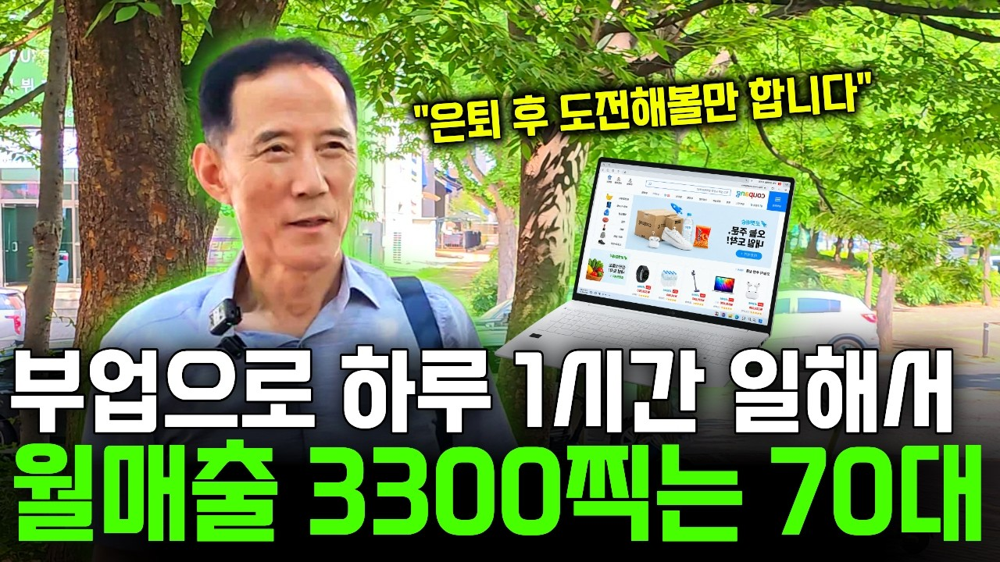
71세 전직 3성 장군, 하루 1시간 부업으로 월 450만원 법니다 ▶71세 전직 3성 장군, 하루 1시간 부업으로 월 450만원 법니다
훈장 벽 앞 '지금 보고 있는 계급이 맞나요? 쓰리스타예요' + 매출 숫자 나열 9,400·4,600·…
심리권위 검증 + 숫자 폭격
'하루 30~40개 한 시간 내 끝' + 주문 1건 마진 계산 '1분 만에 15,000원'
심리노력 대비 결과를 단위로 환산
책 보여주며 '영상 안 봐도 이 책만 있으면' + '은퇴 후 할 게 없으면 도전해볼 만'
심리선물 예고 + 시니어 호명
PD: '매출 1등 하셨던 대표님, 72세가 그 매출? 믿기지 않아 만나뵙자고 했다, 일하는 모습 볼 수 있을까'
심리PD가 의심자 역할 선언 → 검증 여정 프레임
사무실 진입, 훈장·표창 설명 → '지금 뭐 하고 계셨어요?' → 퇴근 후 주문 처리 중 = 부업
심리권위 확인 후 '부업' 프레임 고정
PD: '시청자분들도 프로그램 쓸 수 있게 정대표님한테 말씀…' → '고정댓글 오시는 분들한테 2주 무료'
훈장 앞 계급 확인 + 매출 숫자 몽타주 + 책 예고 + PD 방문 목적('믿기지 않아서')
훈장 설명 → 퇴근 후 부업 확인 → '연금 있는데 왜?' → 시간 의미·유튜브 보고 도전·정현진 대표에게 배움
매출 통계 화면(1월 9,400만 → 3,300만) + 마진 15% + '영상 끝까지 보면 방법 설명'(시청 유지 훅)
PD '재고 쌓아두고 파세요?' → 무재고 + '반품은?' → 원발주사 자동 처리
'뭘 해서 어떻게 버나' → 주문 1건 실시간 처리 시연(64,500 매입 → 79,900 정산 = 15,000 마진)
프로그램 수집 시연(금지어·지재권 자동 필터) + 1차 CTA(2주 무료) + '1편+2편 = 한 달 무료'
마켓 동시 등록 시연 + '컴퓨터 전공 아니다' + 정현진 대표 책자 첫 공개(49만원)
2차 CTA(책 무료·집까지 배송) + 산책 장면 + '은퇴 후 여유' 대비 프레임
자본 불필요(카드 결제 회전) + 장애인 시설 운영·기부 동기 + '최고령 기록'
예비군 훈련 직접 참여 영상 + PD '시청자 대부분 월 50~100 더 벌고 싶은 분' → '열정만 있으면' + 제주도 약속
Q72세분이 매출 그렇게 냈다? 믿기지 않아서 만나뵙자고 했거든요
A사무실로 안내하며 육군 40년 복무 중 받은 보국훈장(두 번째로 높은 급)·대통령 표창 등 훈장을 직접 설명함.
Q지금은 뭐 하고 계셨어요?
A퇴근 후 오늘 들어온 주문을 처리 중이며, 낮엔 출근하고 퇴근하면 인터넷으로 사업하는 부업이라고 답함.
Q72세 어르신인데 온라인 사업, 처음부터 쉽지 않으셨을 것 같은데
A쉽지 않기에 오히려 도전했고, 처음엔 독학이라 시간이 걸렸지만 정윤 대표에게 쉽게 배우며 하나하나 되더라고 답함.
Q군에 40년이면 연금 잘 나올 텐데 (왜 하세요?)
A돈보다 퇴근 후 남는 시간이 문제였고, 운동·취미는 일시적이라 유튜브 보고 쇼핑몰이 의미 있겠다 싶어 도전했다고 답함.
Q순수익이 어느 정도 남는다 보면 될까요? 매출 통계 보여주실까요?
A매출 통계를 바로 공개: 다마고치 프로그램 당첨 후 1월 9,400만 원, 이후 4,600·4,200만, 7월 새 방식 후 현재 3,300만 원.
Q직접 물건 사놓고 집에 쌓아놓고 파시는 거예요?
A전혀 필요 없고, 주문이 오면 발주사에 주문해 고객에게 바로 보내는 무재고 방식이라 사무실에 제품 쌓을 공간도 없다고 답함.
QCS·반품 힘들다고 알고 있는데 반품 처리 직접 안 하시는 거예요?
A컴퓨터에서 반품 클릭만 하면 원 발주사가 수거·환불을 처리하니 손댈 필요 없고, 유튜브 보다가 나도 해볼까 해서 배웠다고 답함.
Q과정을 처음부터 차근차근 보여주실 수 있을까요?
A실제 주문으로 시연: 원문 링크 발주사에 64,500원 결제, 고객 9만 원 중 수수료 제외 79,900원 입금돼 1분 만에 15,000원 마진.
Q시청자분들도 프로그램 쓸 수 있게 말씀해 주시면?
A고정 댓글로 오픈 시스템에 오는 시청자에게 프로그램 2주 무료 이용권을 주겠다고 약속(1편 2주와 합치면 한 달 무료).
Q원래 컴퓨터 전공이셨다거나 그런 건 아닌 거예요?
A전혀 아니며 사무용 인터넷 정도였고, 정현진 대표 설명·강의·유튜브 독학으로 배웠으며 새 책에 고생한 내용이 다 담겼다고 답함.
Q시청자 대부분은 월 50~100만 더 벌어도 숨통 트이겠다는 분들인데 조언?
A열정만 있으면 100만 원은 어렵지 않고, 아무것도 안 하면 아무 일도 안 일어나니 나이·돈 핑계 말고 돈 없이도 뭐라도 하라고 조언.
고정 댓글로 오시는 분들한테 책(49만원) 무료로 드리겠습니다, 집까지 전달드릴게요 + 프로그램 2주 무료
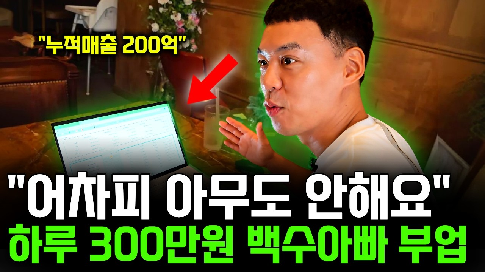
어차피 알려줘도 아무도 안해요_ 200억 매출찍고 인생역전한 40대 아빠 ▶어차피 알려줘도 아무도 안해요_ 200억 매출찍고 인생역전한 40대 아빠
'출근 안 합니다, 하루 10분, 핸드폰 하나' + '12만 개 자동 등록'
심리노력 최소화 + 규모
PD '돈 많이 들어가는 거 아니에요?' → '30만원' + 고통(600만원으로 결혼, 아기 침대 둘 데 없어 거실) + '금융자산 27억'
심리반박 선제 + 고통과 자산의 극단 대비
'신용점수 1000점' + '72세 한 달 9,720만' + '49만원짜리 책 집으로 보내드림' + '시작만 하면 인생 바뀝니다'
심리타인 증거 + 선물 + 격언
'대한민국 0.1% 부업으로 200억 매출 낸 돈형' → PD '바로 보여주신다는 분 처음 봤다'
심리정체성 + PD 감탄
책 4권(49만원, 47만 명이 배우려 함) 꺼내 보이며 '단톡방 들어온 분께 집으로'
심리리드마그넷을 2분 안에 물리적으로 보여줌
'이 책 가격이 49만원짜리, 모든 사람에게 드릴 수 없고 단톡방에 들어온 사람들 중에서 선물로 집으로 보내드립니다'
몽타주(무출근·10분·30만원·고통·27억·72세 사례·책) + 정체성 + 책 실물 공개·CTA
매출 0원 화면→'주문처리 누르면 수천만 원' 라이브 예고 + 카페 이동 + '5천만 명이 내 고객'(정보 격차 설명)
두 계정 주말 매출 2천만 + 주문처리 자동화 프로그램 + '무재고, 공홈에서 사서 보냄'
'뭘 팔아야 하나' → 1~100위 브랜드 랭킹 프로그램 시연 + 2차 CTA(3천만원 들여 만든 프로그램 한 달 무료)
부동산 24채 보유 공개 + 산책 후 매출 증가 라이브(550만→1,980만)
12만 개 동시 등록 시연 + 3차 CTA(2주 무료) + 책자 재언급
AI 이미지 변환으로 지재권 회피 시연 + '단톡방 오신 분 무료'
무자본(신용카드 회전) + 본업/부업 비율 + '나이 많아도?' → 72세 9,720만 유튜브 증거
책 3권 상세(88p·230p·750p 완벽 가이드) + 4차 CTA('공지대로 따라오는 분께 무료 배송') + 사업자·KC 인증
'2분 안 쓰고 유튜브 본다' 꾸짖음 + 결혼 고통 서사 풀 + 격언 + 72세 촬영 예고 + 자산 27억·신용 1000점 공개
Q시작하려면 돈 많이 들어가는 거 아니에요?
A(자막에서 답변 확인 불가)
Q어떤 업을 하시길래 0.1%라고 표현하신 거예요?
A재고 없이 연예인이 광고하는 브랜드 제품을 온라인에서 팔아 200억 매출을 냈다며, 방법은 컴퓨터 앞에서 보여주겠다고 답함.
Q근데 이걸 왜 나눠 주시는 거예요?
A예전 유튜브 출연 후 배우려는 사람이 47만 명이라 방법을 정리한 49만 원짜리 책을 단톡방 참여자에게 집으로 보내주겠다고 답함.
Q왜 오전에 보자고 하신 거예요?
A주말(8/15~17) 주문이 0원으로 미처리라, 주문처리 버튼을 누르면 100만→수천만 원으로 바뀌는 걸 라이브로 보여주려 오전에 잡았다고 답함.
Q어떤 분들이 대표님 물건 사는 거예요?
A생수·신발·옷을 검색하는 5천만 국민이 다 고객이며, 마켓에 12만 개 상품이 프로그램으로 자동 등록된다고 답함.
Q물건을 다 가지고 보내야 되는 거잖아요, 온라인 마켓 아닌가요?
A주문이 오면 ABC마트 공식 홈페이지에서 고객 주소로 직접 배송시키는 무재고 방식이며, 10만2천 원에 팔아 1만8천 원 남긴다고 답함.
Q아무거나 판다고 다 잘 팔리진 않을 거 아니에요, 뭘 팔아야 되는지 어떻게 알아요?
A국내 잘 팔리는 브랜드를 1~100등까지 매일 갱신하는 소싱 프로그램을 만들었고, 그 정답을 보고 홈페이지 이미지를 가져와 올리면 끝이라고 답함.
Q시청자분들 나눠주시면 안 될까요? 한 달씩이나요?
A개발비 3천만 원 든 프로그램을 고정 댓글 단톡방 참여자에게 한 달 무료로 주며, 1~5등 브랜드만 팔아도 충분히 번다고 답함.
Q이 사업으로 번 돈으로 지금 이렇게 다 사신 거예요?
A아파트·오피스텔·주식·코인 모두 무재고 유통으로 번 돈이며, 산책 사이 주문이 500만 원 더 늘어 매출 1,980만 원이 됐다고 답함.
Q대기업 제품 이미지 함부로 갖고 와서 쓸 수 있냐?
AAI로 모델·배경을 바꾸면 누를 때마다 다른 이미지가 나와 지재권을 회피할 수 있어 대기업 제품 판매에 필수라고 답함.
Q나이 많으신 분들 할 수 있을까? 60대도?
A71세 첫 쇼핑몰 수강생이 매출 1위였고, 수강생 1인당 평균 월매출 2,738만 원·연 3억 2천, 마진 20%면 순익 450만 원이라고 답함.
Q결혼할 때 좀 힘드셨다는 이야기가 있던데
A600만 원만 들고 결혼해 싼 동네에서 신혼을 시작했고 애 침대 둘 곳도 없었지만, 무재고 유통이란 꿀단지 덕에 두 아들을 키웠다고 답함.
받으시려면 일단 단톡방에 오신 다음, 공지대로 잘 따라오시는 분들한테는 무료로 직접 드리겠습니다
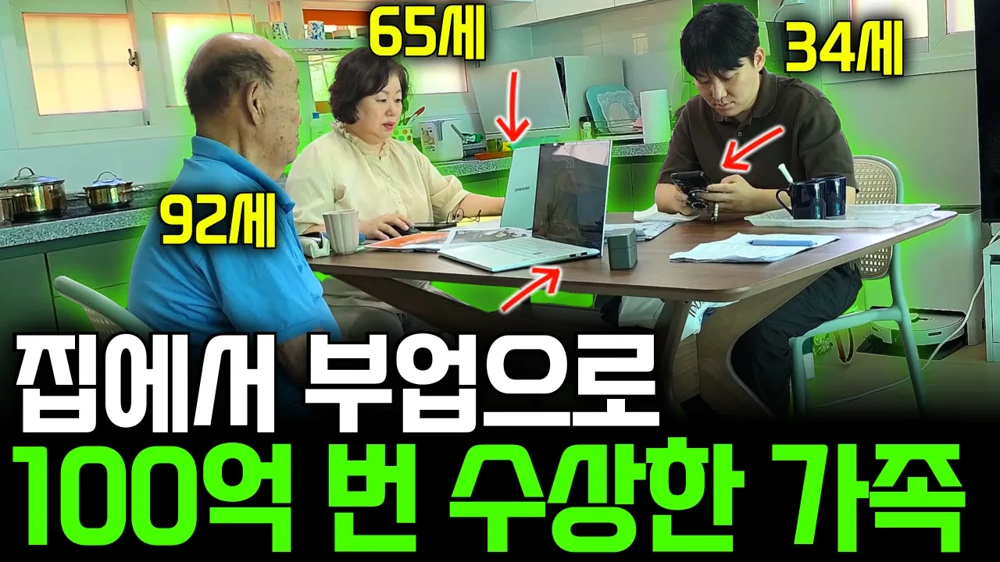
"전세계가 다 하는데 한국인만 안 합니다" 65세 엄마도 2,000달러 벌어요 외국인만 꿀 빠는 부업으로 100억 번 가족 ▶"전세계가 다 하는데 한국인만 안 합니다" 65세 엄마도 2,000달러 벌어요 외국인만 꿀 빠는 부업으로 100억 번 가족
새 차 → '현금 72억' → '자고 일어나면 하루 3천만 원'
심리자산·수동소득 충격
'성실하게 살아라는 가스라이팅' + '친구들 다 성수동 건물, 다 0원 시작'
심리기존 가치관 뒤집기 + 동료 증거
AI '승인 비서'로 글 2초 만에 → 복사·발행 '이게 다예요?' + '매뉴얼·템플릿 다 만들어 놨다'
심리쉬움 시연 + 선물 예고
'세계 1등 구글 부업으로 40억, 순자산 100억 알파남 김지수' → PD '순자산 100억이요?'
심리정체성 + PD 되묻기(강조)
'시장이 큰 데서 해야' 논리 + 첫 집 마련(안산 30년→) 개인 서사
심리논리+감정 동시
PD '시청자분들께 (템플릿) 주실 수 있을까요?' → '초보자들이 당장 필요한 것 모아서 드리겠다'
몽타주(72억·하루 3천·가스라이팅·AI 2초 글) + 정체성(순자산 100억) + 첫 집 서사
'상방 없는 부업' + 나스닥 상장사 초청 + 한 달 7억 7천(53만 달러) 화면 + 고정비 1,200
메커니즘 3단계(승인글→승인→글 쓰면 매달 21일 달러) + 100개 블로그 AI 운영 + '온라인 건물주' 비유
통장 72억 실물 + 6월 25억 매출·순익 60~70% + '순수익 높은 사업만' 철학
돈 되는 키워드 2종(이슈형·고단가형) + 미스트롯 투표 사례 + 500만원 주고 배운 기술 공개
람보르기니 시승 + 할머니 못 보여드린 후회 → '빨리 성공해야 하는 이유'(시간 유한)
성장 배경(6살 마케팅 수첩) + 강아지 + '왕초보도 따라할 수 있게' 튜토리얼 시작
네이버 3계정 전략(검색형·펀딩형·쇼핑형) + 승인 비서 시연 + 1차 CTA(템플릿 일부 무료)
애드포스트 승인 절차 화면 + '못 따라가면 책자에 다 있다' + 트립닷컴·아고다 광고주 확대
어머니(65세) 등장, 황금 키워드 + 세대 가치관 대비 + 할아버지·가족 + '네이버 블로그 만드세요' 실행 지시
Q이게 이게 다예요?
A매뉴얼과 템플릿을 다 만들어 놨으니 그대로 복사하면 되고, 이어서 구글 부업으로 40억 벌어 순자산 100억 달성한 알파남 김지수라고 소개했다.
Q순자산 100억이요?
A매출이 아니라 다음 달 입금되면 순자산 100억이며, 쓸 거 다 쓰고 남은 금액이라 실제로는 더 벌었다고 답했다.
Q15만 원짜리 컴퓨터로요?
A제조업은 5억·10억 설비가 필요하지만 자신은 15만 원으로 시작했고, 자고 일어나면 하루 3천만 원씩 벌려 나스닥 상장사에 초청도 받았다고 했다.
Q왜 이렇게 (고정비가) 적게 나갔어요?
A글만 쓰는 부업이라 내 인건비 외에 추가 비용이 없고, 창업비 15만 원에 상방 없이 월 7억씩 들어왔다고 답했다.
Q어떻게 100개를 혼자서 운영해요?
AAI 덕분에 가능하고 온라인이라 확장 부담이 없으며, 글 하나로 구글·유튜브·인스타·다음·쿠팡파트너스·틱톡 등에서 수익이 나는 온라인 건물주 구조라고 했다.
Q통장 한 번 보여주실 수 있나요?
A전세금 등을 제외한 현금 72억이 있다고 인증했고, 다음 달 입금되면 100억 가까이 되면 다시 보여주겠다고 답했다.
Q왜 이렇게 높아요, 순수익률이?
A매출은 돈 넣고 펌핑할 수 있으니 순수익 높은 사업만 하며, 할아버지 집 수리·부모님 대출 상환·집·차 구입 후에도 73억이 남았다고 했다.
Q할머니께서 성공하신 거 보고 돌아가셨나요?
A성공할 때 너무 바빠 할머니께 못 보여드린 게 안타깝고, 시간은 유한하니 젊을 때 빠르게 벌어 주변에 해주는 게 중요하다고 답했다.
Q왕초보도 쉽게 따라할 수 있게 설명 부탁드려도 될까요?
A구글은 초보 승인이 어려워졌으니 대안으로 네이버 애드포스트를 추천하며, 블로그 개설·승인·돈 되는 글쓰기를 알려주고 할아버지 아이디로도 월 50만 원 가능하다고 했다.
Q못 따라가시는 시청자분들 있을 수 있을 것 같은데
A책자에 구글 신청까지 상세히 넣어 뒀으니 천천히 따라하면 되고, 네이버 계정당 블로그 1개 승인으로 3개 운영 시 월 900만 원도 가능하다고 답했다.
Q영상 본 분들이 지금 당장 시작할 수 있는 건 어떤 것부터?
A돈 안 드니 당장 네이버 블로그를 만들고 글 하나라도 쓰라고 했으며, 앞으로는 전국민이 쓰는 앱을 만들고 구단주가 되는 게 목표라고 답했다.
그냥 이거 보고 네이버 블로그 만드세요. 글 하나라도. 돈 드는 거 아니잖아요 (+ 책자·템플릿은 앞 구간 CTA)
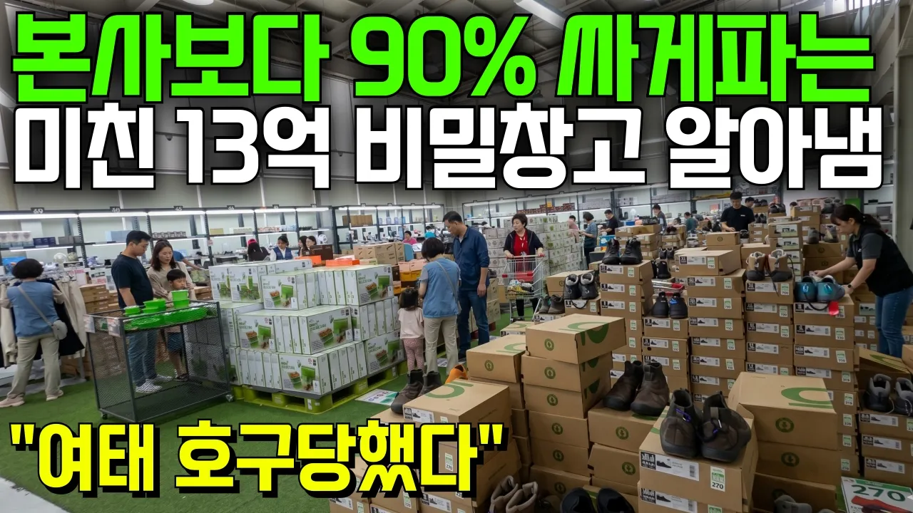
"전부다 속고있었습니다" 원가 900원 본사보다 90% 싸게파는 미친 13억 비밀창고 ▶"전부다 속고있었습니다" 원가 900원 본사보다 90% 싸게파는 미친 13억 비밀창고
'시중 만 원 → 여기 1,000원, 그래서 13억' + 실물 '3,900원 vs 최저가 14,000원'
심리가격 격차를 즉시 시각화
'PD님이 계속 말해서 전자책 실물로 만들어 배송' + 수강생 구성(70대·50대·육아·쉬었음 청년)
심리선물 예고 + 페르소나 나열
'여기 오면 싹 쓸어가요' + '900원, 거의 10배' + 최고 월 5억·순익 4천
심리숫자 정점
'비밀창고 소싱으로 연매출 13억 뷰셀' → '왜 여기서 보자고?' → '셀러들이 은밀하게 소싱하는 장소'
심리정체성 + 장소 프레임
'어디에 파나' → 네이버만(수수료 6.7%, 익일 정산) 쿠팡과 비교
심리초보 의사결정 대신해줌
'들어오시면 마진율 40% 만드는 방법 + 월 100만원 부수입 전자책 + 시드머니 엑셀 + 마진계산기 + 비밀창고 리스트 10곳 + 화장품 도매 10곳 = 5가지'
몽타주(가격 격차·전자책·수강생·5억) + 정체성 + 창고 프레임 + 네이버 선택 이유
매대 순회: 3,900 vs 본사 14,000 → '핸드폰 보는 사람은 셀러' + 배수 개념 + 화장품 고집 이유(보관)
달팽이 앰플 900원 vs 온라인 8,000원 + '10분 만에 사람 꽉 참' + 브랜드 이슈 없는 이유 + 사진 2장 상세페이지
누구나 입장 가능 + 주차장 만차(수요 증거) + 마진 10%→40% + 99년생·병원 6년 근무 서사
야근 후 새벽 5시간 공부 → 3개월 순익 1,000 → 사직 + '레드오션?' 반박 + '3개월은 해봐야'
50만원 저자본 + 정산 화면 55일 2억 2천 + 상품 목록·손 사진 + 순익 4천 느낌 + 재고 실패담
초보 재고 불안 → '물류 대행해 드림(수수료 없이)' + 70대 할아버지 수강생 1~3분 등록
상품 등록 시연(사진 2장, Ctrl C/V) + '10원이라도 싸면 산다' 심리 + 화장품 재구매율
1차 CTA 5종 선물 + 실물 책 추첨 배송(시니어 배려) + 물류 프로세스 검증
병원 시절 vs 지금(하루 1~2시간) + 조언 '무서워 말고 시도' + 추천 대상(시간 없는 분) + 70대 수강생 한 달 반 매출 2천 + '쉬었음 청년도 4시간'
Q아, 이런데 어떻게 찾았어요?
A13억 매출의 비결이라며 이런 비밀창고만 찾아다닌다고 답하고, 시중 만 원짜리를 여기선 1,000원에 판다고 설명한다.
Q여기 물건을 사다가 어디에 파는 거예요?
A오직 네이버에서만 판다며, 쿠팡은 수수료 10~20%에 정산 한 달 이상이지만 네이버는 6.7% 고정에 배송 다음날 정산이라고 답한다.
Q어떻게 본사보다 싸게 팔 수 있는 거예요?
A셀러들의 비밀창고라 가능하다며 핸드폰 보는 손님은 셀러라 하고, 15,000원 제품을 5,900원에 사는 3배수 구조에 리뷰 2,600개라고 답한다.
Q브랜드 이름 다 있는데 개인이 사다 팔아도 되는 거예요?
A브랜드가 싸게 판다거나 이미지 훼손을 이유로 문제 삼지 않는다며, 자신은 상세페이지를 사진 두 장으로만 올린다고 답한다.
Q일반인도 들어올 수 있어요? 사업자만?
A누구나 들어올 수 있다며 주차장이 꽉 찰 만큼 붐빈다고 하고, 처음 13억 매출 때 마진율은 10%(1억 3천)라 더 늘리고 싶었다고 답한다.
Q마진율이 40%라고요? 실례지만 나이가?
A99년생이며 상고 졸업 후 병원에서 6년 근무, 첫 실수령 119만 원·24살 원무과장 220만 원에 회의감을 느껴 시작했다고 답한다.
Q레드오션이다, 개나 소나 월천이라는데 정말 되는 거 맞냐?
A수익 인증 가능하다며 안 벌린다는 분들은 보상이 늦게 온 것이고 3개월은 해봐야 한다, 친구들도 한 달을 못 버티고 그만뒀다고 답한다.
Q초기자본금은 얼마나 들어가요?
A50만 원으로 시작해 서서히 불렸다며, 4월 1일~5월 25일 55일간 매출 2억 2천, 최고 월 5억까지 나왔다고 답한다.
Q재고 저렇게 많이 쌓는데 안 팔리면 어떡하지, 초보자는 어떻게?
A초보자는 집 보관·택배가 부담이니 물류를 보내주면 수수료 없이 포장·발송을 본인이 대신하고, 상품 찾아 등록만 하면 된다고 답한다.
Q누가 사요? 진짜 사요?
A가격에 민감한 소비자가 10원 차이로도 산다며, 상세페이지는 상품명과 법정 표시사항 포함 앞뒤 사진 두 장이면 끝난다고 답한다.
Q나도 해보고 싶다는 분들께 조언?
A거창하게 생각 말고 우선 시도하라며 특히 시간 없는 분께 추천하고, 자신은 2년 연구해 상품 찾기·등록만 하면 되는 프로세스를 만들었다고 답한다.
Q지금 시작해도 안 늦어요?
A안 늦다며 스마트스토어 판매자가 수십만 명이어도 신제품이 무궁무진하다 하고, 70대 할아버지가 배운 지 한 달 반에 매출 2천만 원이라고 답한다.
(19:13 CTA가 최종) 단톡방 들어오시면 전자책·엑셀·마진계산기·비밀창고 10곳·도매 10곳, 실물 책은 추첨 배송
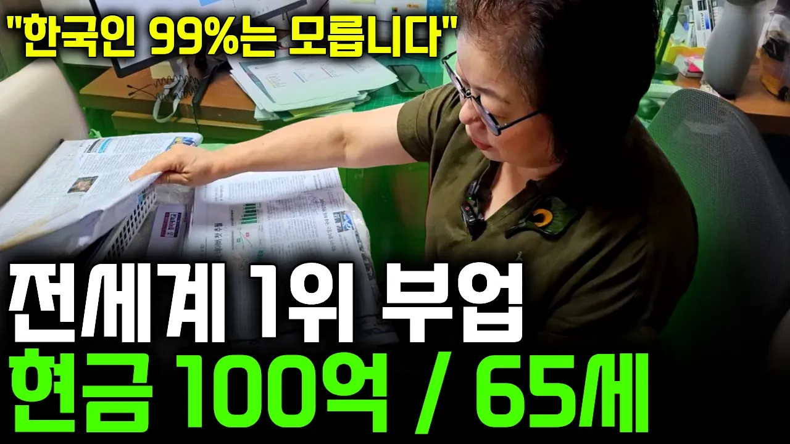
전세계 1위 부업으로 현금 100억/ 65세 ▶전세계 1위 부업으로 현금 100억/ 65세
'해외 1등 부업으로 달러 쓸어담는 65세 전영순' + '7억·4억·3억 달러로 → 100억' + '상위 0.001%'
심리정체성+숫자를 첫 문장에 압축
'알파남이 누구?' → 둘째 아들(70억 이슈) + '한국인은 모르지만 전세계는 다 함, 유튜브보다 6배 시장' + 월 500~1,000
심리권위 연결 + 시장 크기
피렌체 여행 글 → 광고 클릭 → 돈 + '돈 안 들어감, 광고는 구글이' + '10만원 용돈 줄 수 있는 엄마'
심리쉬움 + 부모 감정
'어머니 자기소개' → '왜 아침에?' → '자는 사이 달러 확인'
심리수동소득 시각화
잔고 화면: 오늘 32달러·어제 148·지난달 3,147달러
심리소액도 정직하게 → 신뢰
'해외로 돈 버는 방법 알고 있거든요, 이 영상 끝까지 보시는 분들한테 알려드릴게요'(시청 유지 훅) → 9:51 '링크 통해 카톡방 입장하시면 무료 전자책, 시니어 절실한 분 5명께 실물 책'
몽타주(100억·아들·6배 시장·피렌체·10만원 엄마) + 자기소개 + 아침 잔고 확인
잔고 화면 + 월 500~1,000 + 유럽 여행 지출 + '돈 안 듦' + 글감은 신문(경제지 2·일간지 1)
클릭 단가 1,000~5만원 + 구글 7:3 배분 + '끝까지 보면 알려드림' + 나는 솔로 키워드 시연
일상=글감 + 워드프레스 광고 배치 시연 + '하루 100만원도' + 구글 트렌드 소재 찾기
제미나이로 글·이미지 3초 생성 → 발행 → 광고 붙는 것 확인 ('이게 끝이에요')
네이버·다음 복붙으로 3배 수익 + 시작 계기(코로나 수입 0, 아들 권유) + 92년생 순자산 100억
제자 인증(생산직 월 2천, 치킨집 사장 2억) + '검증은 시장에서 끝' + 1차 CTA(전자책·실물 5명)
해외 전시·삶의 변화 + 레드오션 반박 + 포브스 여성 CEO + 아들 계좌 실물(SC 달러 계좌 우상향)
상위 0.001% + 산책 + '연금 부족 66%' 시니어 호명 + 만족도 200% + 과거 자살충동·절망 → 극한에서 만남
'10만원 용돈 엄마' + 추천 대상 3종(절실한 분·무자본 창업·시니어 부자) + '지금 바로 하세요' + 아들에게 눈물 편지
Q알파남이 누구예요?
A둘째 아들이며 통장 잔고 70억으로 화제가 됐던 인물이라 소개하고, 이 부업은 전 세계가 하는데 한국만 모른다고 답함.
Q돈은 안 들어가나요?
A비용은 하나도 안 들고 광고는 구글이 다 해주며, 자신은 수익만 받는 무자본 구조라고 답함.
Q잔고 확인한다고 하셨는데 한번 봐도 될까요?
A오늘 32달러, 어제 148달러, 이달 1,681달러, 지난달 3,147달러가 자는 사이 입금됐고 월 500~1,000만 원 번다고 답함.
Q글감은 어디서 찾아야 돼요?
A경제지 2개·일간지 1개를 아침에 읽어 고객이 검색할 정보(예: 저축은행 대출)를 찾고, 클릭당 1천~5만 원 단가가 붙는다고 답함.
Q외국인들도 개개인이 구글 협력사가 될 수 있는 거예요?
A전 세계가 이미 하는 구글 부업이며 한국만 모른다고 답하고, 광고비는 본인 70%·구글 30%로 나눈다고 설명함.
Q하루에 제일 많이 벌어보신 건?
A하루에 100만 원까지 벌어봤고 현타가 올 만큼 놀랐다며, 초보자용 글감 찾기로 구글 트렌드(클릭단가 5만 원 키워드)를 소개함.
Q92년생 순자산 100억, 주변에 이런 분 또 보셨어요?
A강남 은행장들도 잔고 100억은 드물다 하며, 아들에게 배운 수강생이 2만 명 넘고 월 300만~억 단위 VVIP방이 480명씩 2개라고 답함.
Q어떻게 시작해야 될지 감도 안 온다는 분들께 도움될 말씀?
A영상 링크의 카톡방 입장 시 무료 전자책을 주고, 시니어 5명에겐 종이책도 제공하며 혼자 어려우면 오프라인 수업 과정도 있다고 답함.
Q안 믿는 분들 많은데 아드님 계좌 한 번만 보여주시면 안 돼요?
A메인 통장에 첫 달 2,239달러, 둘째 달 5,215달러, 이후 4억6,700·7억4,600만 원 등 계속 올라 현재 100억이 됐다고 보여줌.
Q지금 만족도는 어떠세요? 과거에는?
A만족도는 100~200% 이상이며 100살까지 할 마지막 직업이라 하고, 과거엔 극한 경제 상황으로 자살 충동·우울에 빠졌었다고 답함.
Q어떤 분들한테 가장 추천하세요?
A삶의 마지막 절실한 골목에 있는 분, 자본금 없는 무자본 창업 희망자, 천장 없는 수입을 원하는 시니어 부자 지망자 세 부류에게 추천함.
Q아드님한테 한 말씀?
A눈물을 참으며 폐업·빚으로 힘들 때 '오늘은 어디서 현금이 들어오냐'고 끊임없이 질문해준 덕에 다시 일어섰다며 사랑한다고 답함.
영상 링크 통해 카톡방 입장하시는 분들께 무료 전자책, 시니어이면서 절실한 분 5명께 실물 책
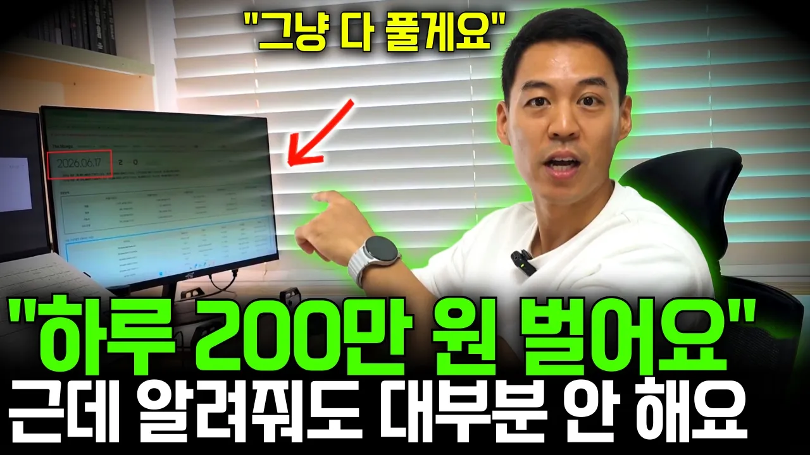
평일에 회사도 안가고 육아 하면서, 4천만 원씩 버는 40대 백수아빠의 비밀 부업 추천 ▶평일에 회사도 안가고 육아 하면서, 4천만 원씩 버는 40대 백수아빠의 비밀 부업 추천
PD '하루 얼마나 일하세요?' → '10~15분' + 마켓별 주문 실시간 카운트(11번가 4개·롯데온 5개…)
심리노력 최소화 + 라이브 증거
'몇 억 들어가는 거 아니에요?' → '현금 30만원' + 고통(600만원 결혼·월세 10만원·아내 보며 눈물) + '순이익 3천'
심리반박 선제 + 고통 + 숫자
'30억 자산, 집·건물' + '왜 안 하나 → 어렵다고 생각해서, 혼자 꿀 빰' + 책 4권 16만원 공짜 배송
심리자산 + 역심리 + 선물
'0.01% 부업으로 20억 번 41살 돈형' + 집·아들 둘·아내 소개
심리정체성 + 가정적 이미지
'연예인 광고 트래픽을 이용해 돈 버는 방법' + '왜 이 시간에?' → 자정 이후 주문 100~200개 보여주려고 + '고객 5천만 명'
심리메커니즘 티저 + 라이브 프레임
PD '3천만원 들여 개발한 프로그램 시청자에게?' → '이 영상 보신 분들한테만 공짜로'
몽타주(10분·30만원·고통·30억·책 공짜) + 정체성 + 집 소개 + 라이브 주문 예고
주문처리 클릭 → 마켓별 실시간 주문 26건 + 하루 600만 매출·순익 100~200 + 3개 계정
'손흥민·이강인이 광고, 나는 판다' + 정보 격차(공홈 vs 네이버) + 'PD: 사기 아니에요?' → 편의점 바나나우유 비유
브랜드 랭킹 프로그램(1~100위·급상승) + 1차 CTA(프로그램 공짜)
자라 상품 수집 시연 + 상세페이지 지재권(해외 사이트는 OK) + '문제 되는 사이트 리스트도 드림'
3~5초에 1개씩 마켓 동시 등록 + '산책 후 다 올라감' + 광고비 0인데 노출되는 이유(신규 버프·SEO)
마진 계산 + 산책 + '몇 억 드는 거 아니에요?' → 신용카드 하나 + 수강생 매출 화면
수강생 600명 170억 + '왜 가르쳐 주나' → 시장 350조 + 책 4권 600페이지 소개 + 2차 CTA(책 공짜)
'서울대 가는 거 아니다' 쉬움 + 지재권 AI 대응 + 레드오션 반박('블루오션 찾기 응원') + 600만원 결혼 고통 서사
격언 + PD '번 돈으로 뭐 하나' → 뱅크샐러드 30억·신용 1000점 + 촬영 5시간 동안 매출 업데이트(순익 60만)
Q하루 얼마나 일하세요?
A하루 10~15분만 일하며, 이미 시스템이 갖춰져 11번가·롯데온 등 마켓 주문이 실시간으로 자동 들어온다고 답함.
Q몇 억씩 들어가는 거 아니에요?
A현금 30만 원 하나로 시작해 돈이 필요 없다며, 600만 원으로 결혼해 월세 10만 원 살던 시절을 거쳐 월 순이익 3천만 원을 번다고 답함.
Q순이익이요?
A매출이 아닌 순이익이며 하루 100~200만 원씩 벌어 30억 넘게 모았고, 이 방법으로 번 돈으로 집과 건물도 샀다고 답함.
Q시간 적게 들고 돈 많이 버는데 사람들이 왜 안 하는 거예요?
A사람들이 어렵다고 착각해 시작을 안 할 뿐이라 자신이 혼자 꿀을 빤다며, 16만 원에 팔던 책 4권을 무료로 집에 보내주겠다고 답함.
Q왜 이 시간에 촬영하자고 하셨어요?
A어제 12시 넘어 들어온 주문을 따끈하게 보여주려 했다며, 하루 100~200개 주문에 고객은 전국 5천만 명이라 답하고 주문 처리 화면 시연을 약속함.
Q그러면 사기 아니에요?
A고객이 그 가격에 사겠다고 결제한 것이니 사기가 아니라며, 편의점 바나나우유·기내 생수처럼 정보 격차로 중간 마진을 보는 유통 구조라고 답함.
Q시청자분들한테 (프로그램) 주실 수 있나요?
A직접 답 대신 아이템스카우트로 자라 브랜드(상품 200만 개·검색 120만 명)를 찾아 자라 홈페이지 제품을 네이버·쿠팡에 30% 마진으로 올리는 방식을 시연함.
Q상세 페이지 긁어오는 건 문제 되지 않아요?
A문제 되는 사이트와 안 되는 사이트가 있는데 자라 등 해외 사이트는 담당자가 네이버·쿠팡을 알 리 없어 괜찮다며, 목록과 프로그램도 다 알려주겠다고 답함.
Q광고비 하나도 안 쓴다는데 어떻게 노출이 돼요?
A알고리즘이 신규 등록 상품에 버프(오픈빨)를 주는데 이 SEO 프로그램이 오픈빨을 부스트하게 설계됐다며, 댓글·단톡방 참여 시 2주 무료 쿠폰을 주겠다고 답함.
Q몇 억씩 들어가는 거 아니에요? 쿠팡은 돈 두 달 묶이지 않나?
A현금 30만 원·신용카드 하나로 시작했고 주문 후 사서 보내니 재고·현금 부담이 없으며, 두 달 정산은 옛말로 요즘은 선정산이 다 된다고 답함.
Q경쟁자 늘어나는데 이런 거 도대체 왜 가르쳐 주는 거?
A온라인 시장이 350조에서 내년 400조로 커져 수강생이 170억을 해도 349조가 남는다며, 자신의 내년 목표 매출 500억이라 경쟁을 걱정 않는다고 답함.
Q끝물·레드오션·진입장벽 높다는 분 많지 않아요?
A그런 분들은 블루오션 찾으시라 응원하고 자신은 월 3~5천만 원 벌겠다며, 7년 전에도 끝물 소리 들었지만 하느냐 안 하느냐가 중요하다고 답함.
Q번 돈으로 뭐 하고 계시는지 알려줄 수 있어요?
A주식·코인·부동산을 다 한다며 뱅크샐러드 연동 자산 30억 이상, 신용점수 1000점 만점, 주식 7억4천 등을 공개하고 건물·차·현금은 미연동이라 답함.
이 영상 보신 분들한테만 프로그램 공짜 + 책 4권 집으로 배송 (단톡방)
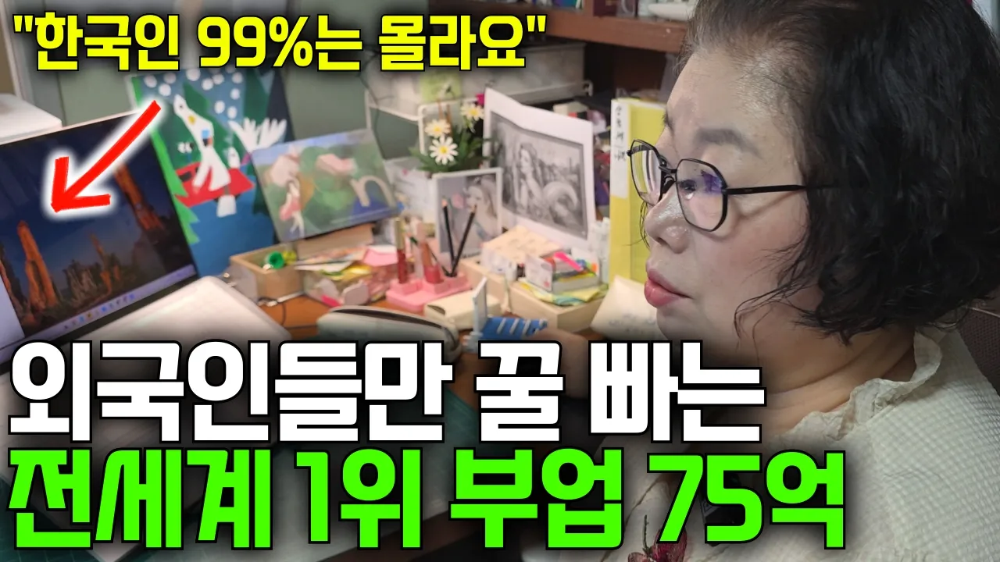
"한국인만 몰라요" 65세 엄마가 하루 2,000달러 버는 기적의 전세계 1등 부업 ▶"한국인만 몰라요" 65세 엄마가 하루 2,000달러 버는 기적의 전세계 1등 부업
'70억→72억, 다 달러' + '아드님이 누구? 그 이슈된 분?' + '한국 사람은 모르고 있죠'
심리자산 + 권위 연결 + 희소성
'모든 부업 통틀어 전세계 1위, 유튜브보다 6배 시장' + 로마 여행 중 일 + '돈 안 들어요? 자본금 0'
심리시장 권위 + 자유 + 무자본
'외국 사람만 쓸어담던 틈새시장' + '자식이 부모에게 베풀기만? 서로 주고받아야, 10만원 줄 수 있는 부모' + '꿈꾸던 인생 준비됨'
심리FOMO + 부모 자존감 감정
'해외에서 달러 쓸어담는 전영승, 자면서도 달러' + '유튜브만 알지, 글 써서 달러 버는 것'
심리정체성 + 메커니즘 티저
구글=빅테크 2위 권위 + '해외에선 다들 하나?' → 억만장자·기업·언론사도
심리권위 반복
PD '어렵게 (아드님) 모셔주실 수 있을까요?' → '단톡방 들어오시는 분들에 한해서 기회, 제대로 할 분들만'
몽타주(72억 달러·아들·6배 시장·로마·자본금 0·10만원 부모) + 정체성 + 구글 권위
'왜 해외는 이 부업에만 목매나' + '65세인데 구글 협력사?' + 월 300~500 + 로마 여행 글로 광고 수익(창조경제)
토스 키워드 → 광고 자동 부착 3초 + 클릭당 1,000~4만원 + 7:3 배분 + '한국은 거꾸로'
TV 보며 글감(나는 솔로 출연자 직업·학력) + 신문 스크랩(레버리지 ETF 교육) + 워드프레스 광고 확인
AI 봇 모음(승인 비서·글쓰기·지식인·쓰레드·이미지) + 독수리 타법도 3초에 3,500자 + 블로그스팟 발행
네이버·다음 복붙 3배 + '젠슨 황·네이버 1조' 트렌드 + '유튜브보다 쉽고 3배'
92년생 순자산 70억 '처음 봐요' + 제자(대기업 6억·치킨집 2억) + '검증된 부업' + 포브스 CEO + '구글은 안 망함'
그림·경제적 자유 + PD '50~100만원 벌고 싶은 분들께 알려주면' → 1차 CTA(아들 모셔서 단톡방 한정) + 실행력 + 레드오션 반박
달러 환차익 30% + 산책 + '연금 부족' 시니어 + 계층 사다리 + 디지털 노마드 + '부모도 주고받아야'
'아들에게 부담 안 주는 부모' + '실행만 하면 100% 달라진다' + 5060·7080 호명 + 아들에게 눈물 편지 + 구글 주식
Q아드님이 누구? 그 이슈되셨던 분 아니에요?
A(자막에서 답변 확인 불가)
Q이거 하는데 돈은 안 들어가요?
A노트북 하나만 있으면 되니 자본금은 0이고, 달러가 들어오는 시장이라 엄청 벌리며 주변 0.1%만 실행 중이라고 답함.
Q왜 해외 사람들은 이 부업에만 목매는 거예요?
A모든 부업 중 전 세계에서 가장 많이 주는 수입이며, 구글과 파트너십으로 광고비를 버는 구조라 유튜브 국내 수입의 6배 시장이라고 설명.
Q65세인데 구글이랑 협력사 맺어서 부업하실 수 있는 거예요?
A나이는 중요하지 않고 은퇴 후에도, 은퇴 전 부업으로도 가능하며, 월 평균 300~500만 원에 그 이상 벌 때도 있다고 답함.
Q돈 벌어서 어디에 쓰고 계신지 알려줄 수 있어요?
A주로 로마 등 해외여행에 쓰며, 여행지에서도 글을 써 광고가 붙으니 시차만 있을 뿐 노트북 하나로 일할 수 있어 행복하다고 답함.
Q한 번 클릭하는데 얼마씩 줘요?
A클릭당 몇천 원에서 35,000~4만 원까지 받고, 클릭 유도 글은 AI가 5초 만에 써주며 미국은 인구가 많아 엄청 벌린다고 답함.
Q구글이랑 몇 대 몇으로 나눠요?
A구글 3, 우리 7로 나누며 광고비 1천만 원이면 700만 원을 받는 구조로, 콘텐츠를 만든 주인공이라 주는 것이라고 설명.
Q초보자들은 어떤 식으로 소재를 찾아야 돼요?
A구글 트렌드에서 핫한 주제(SK하이닉스·젠슨 황)를 찾아 네이버 연간 검색어와 조합해 수혜주 제목을 만들고 AI 봇이 3초 만에 글을 써준다고 답함.
Q92년생 순자산 70억, 주변에 이런 분 봤어요?
A못 봤다며 현금을 이렇게 가진 사람은 처음이고 지금은 72억 넘었다며, 제자 중 1년에 6억 번 대기업 직원·치킨집 사장 2억 등 사례를 언급.
Q50~100만원 벌어보고자 하는 분들께 알려주면 좋을 것 같은데
A알려드리고 싶지만 아들이 3초도 여유 없이 바빠 잠깐만 모실 수 있고, 단톡방 입장자에 한해 두 분이 함께 알려주기로 답함.
Q끝물이라는 분들도 있는데 어떻게 생각하세요?
A끝물이라는 사람은 과거·현재에 사는 사람이고 도전하는 사람은 미래를 이루는 사람이며, 빅테크 2위 구글을 의심할 필요 없다고 답함.
Q과거에는 좀 어떠셨어요?
A공황장애 올 정도로 창업이 힘들어 파산 직전까지 갔으나 애드센스로 해결됐고, 지금은 여행·전시·식사 대접 등 꿈꾸던 인생을 산다고 답함.
Q아드님한테 한 말씀 해 주세요
A대학 때 만 원도 지원 못 해 미안했는데, 가족 전부 부자 되게 가르쳐주고 집안이 화목해지고 새 세계를 만나게 해줘 고맙고 사랑한다고 전함.
단톡방에 들어오시는 분들에 한해서 (아들 알파남과 함께) 전수, 간절한 분만
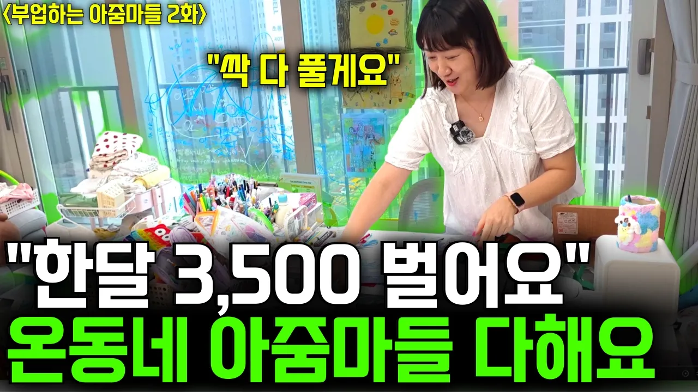
"부업으로 딸 국제학교 보냈어요" 온동네 아줌마들이 남편보다 잘버는 비밀 쇼츠 ▶"부업으로 딸 국제학교 보냈어요" 온동네 아줌마들이 남편보다 잘버는 비밀 쇼츠
채널 7개 수익 나열(400·500·700·1,400) + '옆동 엄마 10일 만에 수익'
심리규모 + 구전 증거
제자 엄마 2명 첫 달 1,500·1,700 + '제일 적게 난 분 100만' + '유튜브가 돈 주고 싶어 안달'
심리하한선 제시(현실 신뢰) + 플랫폼 권위
'성공시킨 사람? 백발백중' + 국제학교 + 오늘 213만 + '학원비 벌려다 집 한 채'
심리확률 100% 선언 + 성장 서사
하원 픽업 이동 + '유튜브 쇼핑 쇼츠로 월천 버는 아이 둘 엄마 승희쌤' + 쇼핑몰 폐업(부업이 본업)
심리육아 일상 + 정체성 + 전환
골든파인더 3일 이용권 + 전자책 + 프롬프트 '진짜 하실 분만 댓글 남기고 카톡방'
7채널 몽타주 + 제자 사례 + 하원 길 + 정체성 + 쇼핑몰 폐업
'당일 수익 난 분도' + 레드오션 반박('해보지 않고 하는 말') + 쇼핑 쇼츠 보너스 80만×7 + '끝까지 보면 노하우'
채널별 수익 화면('캡처 아니에요?') + 월 1천 이상 + 제휴 플랫폼(지그재그·무신사·올리브영) + 연예인 추천템 아이콘
곰·호랑이 마음으로 버팀(8만→13만→80만) + 포기 직전 터진 명품백 영상 480만(갤럭시탭·드럼 구매)
장비(집 컴퓨터 1대) + 시작 비용 19,000 + 초기 실패 채널(직접 촬영 1,200회 '설거지 왜 하냐')
30명 성공 '무서워요' + 하한 100만 + '하루 1개씩 올리면 기본급' + 연예인 쇼핑 쇼츠 정의 + 골든파인더 소싱
1차 CTA(3일권) + '쿠팡에서 돈 쓰는 사람 = 3040 아줌마' + 명품·뷰티 + 초상권 재창작 인정 + 캡컷 20초
캡컷 단축키 5개 + 장면 분할 + 효과음 + 자동 자막 + 썸네일 제목 = 관문 1
20분 완성 + '후반 3초 훅 앞으로' 킥 + 가이드북 단톡방 CTA
7채널 = 프리랜서 외주 1~1.5만원(40만 투자 → 950만) + 음악원·쇼핑몰 8년 '모은 돈 없음' + 삶의 질 + 삼총사 CTA + 빚 갚기 플렉스 + 폐업 박수
Q이런 채널을 일곱 개나 운영하시는 거예요?
A네. 노하우 전수받은 둘째 친구 엄마 두 명이 첫 달 1,500·1,700만원, 엽동 엄마는 10일 만에 수익 났다고 답함.
Q수익 제일 적게 나신 분?
A가장 적은 분이 100만원이라 답하고, 본인은 부업일 때 3,500 찍어 쇼핑몰 정리했고 성공 사례는 백발백중이라 함.
Q성공시킨 사람 몇 명이에요?
A지금 백발백중이라며 가르친 사람 전원 성공했다 답하고, 유튜브 번 돈으로 국제학교 보낸 것도 맞다고 인정.
Q국제학교 비싸지 않나요? 유튜브 번 돈으로 보내신 거예요?
A비싸다고 인정하며 원래 포기했다가 보내게 됐다 답하고, 유튜브 쇼핑 쇼츠로 월 3,500 버는 아이 둘 엄마 승희쌤이라 소개.
Q왜 폐업했어요?
A쇼핑몰은 너무 힘들고 돌파구 없어 유지만 했는데 부업 유튜브가 3,500 찍어 본업이 되니 월세 나가는 쇼핑몰 정리했다 함.
Q애들 픽업·학원 데려다주고 이런데 어떻게 일을 해요?
A주부가 제일 바빠 밖에서 일은 꿈도 못 꿔 집에서 할 일 찾다 유튜브 쇼핑 쇼츠 발견, 쿠팡 상품을 무재고로 영상에 걸기만 하면 된다 함.
Q이것도 캡처 아니죠?
A다 인증한다며 새로고침해 두 번째 채널 4,200달러 수익을 보여주고, 채널 7개 합쳐 월평균 무조건 1천만원 이상이라 답함.
Q쿠팡만 가능한 거예요?
A지그재그·무신사·올리브영 등 유튜브 제휴 플랫폼이 많고, 영상 속 상품 스티커 클릭 후 24시간 내 구매액의 6.7%가 수익이라 설명.
Q포기하려던 순간 1천만원 벌어준 영상 볼 수 있을까요?
A명품백 소개 영상 하나로 480만원이 터져 로또 당첨 같았고, 갤럭시탭·전자레인지 등 무관한 물건을 사도 수익이 붙는다고 설명.
Q초반에 들어가는 돈이 많을 거 아니에요?
A집에 컴퓨터 하나로 시작해 초기 비용은 제미나이 결제 19,000원뿐이고, 모니터 50만원은 번 돈으로 샀다고 답함.
Q잘 터지는 영상은 어떻게 발굴하는 거예요?
AAI로 직접 만든 소싱 프로그램 '골든 파인더'로 구독자 대비 조회수·참여도를 합친 영상 점수를 산출해 1등 영상을 발굴한다 함.
Q저 프로그램 시청자분들도 어떻게 안 될까요?
A진짜 하실 분만 댓글 남기고 카톡방 입장하면 3일 이용권을 주겠다 하고, 30~40대 여성이 많이 사는 카테고리가 잘 된다는 팁 추가.
어디서부터 시작할지 모르는 분들, 밑에 단톡방 꼭 넣어 놓을 테니 삼총사 받아가세요
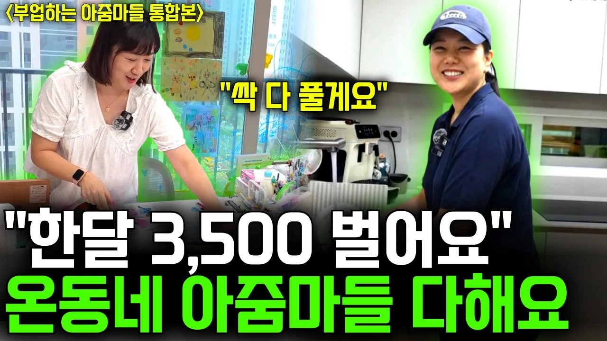
"부업으로 딸 국제학교 보냈어요" 온동네 아줌마들이 남편보다 잘버는 비밀 쇼츠 (부업하는 아줌마들 통합본) ▶"부업으로 딸 국제학교 보냈어요" 온동네 아줌마들이 남편보다 잘버는 비밀 쇼츠 (부업하는 아줌마들 통합본)
7채널 수익 + '10일 만에 2,500, 영상 하나 2,200' + '붙여넣기 끝'
심리두 출연자 하이라이트 교차 몽타주
'옆동 아줌마가 알려줬어요' + 제자 엄마 2명 1,500·1,700 + '백발백중' + 국제학교
심리구전 → 스승 권위 연결
제자 자기소개(영상 하나로 월 3천 아기엄마) + 등교 후 + '20초 영상 3천? 뻥 아니에요?'
심리1화 진입 + 검증형 질문
근무 9~12시 3시간 + '아무도 안 믿어요, 보시면 가능'
심리시간 한정 + 증거 예고
'선생님 허락 맡아야… 단톡방 들어오셔서 얘기 주시면 전달, 집까지 배송'
교차 몽타주 + 제자 정체성 + '뻥 아니에요?' + 근무시간(1화 시작)
등교 후 수익 확인 루틴 + 영상 하나 2,200만(380만 뷰) + 구독자 2,400명 채널에서
선생님 가이드북 1차 CTA(배송) + '어떤 영상을 만들어요?' + 원본 34초 컷
'3시간 아니고 이러면 안 걸리잖아요' + 60대 할아버지 동기 + TTS 대본 프롬프트(잼스)
제목 10개 뽑기 + 자막 자동 + '노력 10%' + 교육 강사 → 둘째 학교 적응 문제로 퇴사 서사
스승 만나러(티하우스) + 옆집 아줌마 소개 + 오늘 213만 + '학원비→집 한 채'(2화 시작)
딸 도넛 장면 + '주부가 제일 바쁨' + 무재고 쇼핑 구조 + 30분~1시간 + 7채널 수익
6,300만 매출 기여 영상(명품백 궁금증만 유발) + 장비 50만 모니터 + 초기 실패
골든파인더 영상 점수 + 3일권 CTA + '3040 아줌마 명품·뷰티' + 파운데이션
20분 타이머 검증 + 후반 3초 훅 + 외주 7채널 + 음악원·쇼핑몰 서사 + 삼총사 + 빚 갚기 박수
Q20초짜리 영상에서 3천이 나와요? 뻥치는 거 아니에요?
A보여줄 수 있다며, 업로드한 영상은 잠자는 동안에도 조회수·수익이 계속 쌓여 연금처럼 늘어난다고 답함
Q등교시키고 육아까지 하면서도 할 수 있는 일인 거예요?
A아침 9시~12시 딱 3시간만 근무하며, 하루 3시간으로 3천 번다면 아무도 안 믿겠지만 가능하다고 답함
Q2,200만원이요? (구독자) 100만 채널 이런 거 아니에요?
A수수료 뗀 순수익 2,200만원(매출 약 2,500)을 열흘 만에 벌었고, 채널은 구독자 2,400명 수준이라 답함
Q이게 열흘 만에 이렇게 된 거라고요?
A오프라인 폐점으로 온라인에 몰린 수요를 노린 틈새시장이라며, 옆동 아줌마가 쓴 책으로 배워 시작했다고 답함
Q시청자분들한테도 (가이드북) 나눠주시면 안 될까요?
A선생님 허락이 필요하니 상의 후 단톡방 입장자에게 전달하겠다고 답했고, 택배비는 PD가 내기로 함
Q이게 다예요? 3시간도 안 걸리잖아요
A편집 효과·텍스트·글꼴이 한글로 기본 세팅돼 진짜 쉽다며, 동기 중 60대 할아버지도 잘한다고 답함
Q처음 보신 분들이 이 제품을 어떻게 설명해요?
A선생님이 준 제미나이 젬스에 주제 넣고 5번 명령어 치면 1초 만에 TTS 문장이 나와 골라 붙이면 된다고 답함
Q(스승께) 어떤 계기로 시작하게 되신 거예요?
A처음엔 학원비 50만원만 벌려고 시작했다가 성장주사값, 지금은 월급 이상 벌어 다른 채널만 오늘 213만원이라 답함
Q픽업·등교·학원 데려다주는데 어떻게 일을 해요?
A쿠팡 상품을 무재고로 소개만 하면 클릭 후 24시간 내 구매 수수료가 붙고, 실제 작업은 하루 30분~1시간이라 답함
Q조회수 몇이나 나온 거예요? 300만이면 30만원밖에 안 될 텐데
A샤넬백 할부 영상으로 궁금증만 유발해 400만원대 수익을 냈고, 장비는 집 컴퓨터 하나로 시작해 벌어서 모니터를 샀다고 답함
Q저 프로그램 시청자분들도 어떻게 안 될까요?
A진짜 하실 분만 댓글·카톡방 입장 시 3일 이용권을 주겠다며, 쿠팡 주소비층인 3040 여성 카테고리를 노리라고 답함
Q7채널 한 번에 운영 대체 어떻게 하는 거예요?
A본인은 하루 1편만 만들고 나머지는 건당 1만~1.5만원 프리랜서 외주로, 40만원 투자해 950만원 번 적 있다고 답함
어디서부터 시작할지 모르는 분들 단톡방 → 전자책·프롬프트·골든파인더 3일권 삼총사
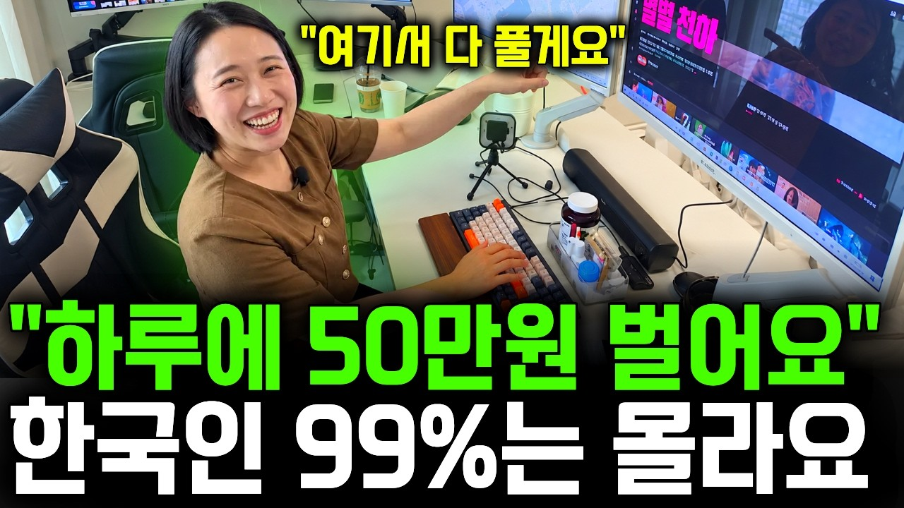
NEW"부업으로 남편3배 벌어요" 60초 쇼츠로 3000버는 아기엄마 ▶"부업으로 남편3배 벌어요" 60초 쇼츠로 3000버는 아기엄마
채널별 수익 50·80·50·50만 원 나열 → 누적 2,900만 원, PD가 '한 채널이요? 여러 개예요?' 되묻고 3개 채널 운영 답변
심리구체 숫자 반복으로 신뢰감 + 되묻기로 놀라움 대리 표현
'노하우만 알면 밤에 자면서도 연금처럼 쌓인다' + 조회수 700만·700만·500만·400만·300만, 누적 2.4억 화면 훑기
심리패시브 인컴 환상 + 화면 증거로 과장 아님을 선제 입증
'초기 자금 없이 할 수 있는 최고의 부업' 선언 + 롱폼 링크 붙이고 쇼츠 링크 붙이면 자동 쇼폼 생성 시연 예고
심리자본 장벽 제거 + '자동'으로 노동 장벽 제거, 시연 기대감
첫 수익으로 아기 옷 산 이야기(새 옷 사 본 적 없음) → '100만, 200만 원이라도 생활 달라지길 원한다면 지금이 최적, 지금 안 하면 절대 못 번다'
심리쌍둥이 엄마의 결핍 서사로 공감 → 손실 회피·긴급성
자기소개 '영상 편집으로 월 1천만 원 버는 40대 아이 둘 맘' + PD가 '얼마요? 어떻게?' 되묻고 어린이집 보내고 오는 길·전업주부 확인
심리페르소나 호명(40대 주부)으로 '나도 가능' + PD 의심 대변
'자면서도, 아이 데려다주면서도 돈이 벌린다' + PD가 수익 인증 요청 → '이따 보여드리겠다' + 영상 1편 15분 + '끝까지 보고 노하우 다 뽑아가라' + 집 입장(호랑이 고양이)
심리증거 예고로 이탈 방지 + 시청 완주 유도 + 현장 프레임 전환
'끝까지 영상 시청하셔서 노하우 다 뽑아 가셨으면 좋겠습니다' — 완주 유도(리드마그넷은 8:00 전후 전자책·단톡방으로 등장)
1/10 [0:00–2:12] 채널별 수익·누적 2,900만·조회수 2.4억 콜드오픈 + 자동 쇼폼 시연 예고 + 아기 옷 감성 컷 + 40대 아이 둘 맘 소개 + 하루 15분 + 완주 유도
2/10 [2:12–4:25] 집 대신 사무실 낸 이유(우울감) + 노트북만 있으면 어디서든 가능 + 고양이 2·아이 2·어른 1 집 투어 + 하루 2~3시간 노동 → PD가 '하루 50만 원' 환산 + 쌍둥이 육아 중 부업 선택 동기
3/10 [4:25–6:37] 사무실 투어(소파·안마의자·노래방·회전 모니터 영화 스팟) + 7년 된 노트북 '유물' + 출근하면 예능 보며 소싱 = '개꿀' + 한 채널 수익 2,900만·조회수 2.4억 인증 → '국민 5천만이 5번 본 셈'
4/10 [6:37–8:50] 700만·500만·400만 조회수 = '시크릿 1번' 예고 + 일본어 모르지만 AI가 다 해줌 + 초보용 전자책 '온라인 건물주 첫걸음 왕초보 쇼츠 가이드' 공개 + 단톡방 입장자 전원 증정
5/10 [8:50–11:02] '정답지' 소싱 프로그램 시연 + PD 강력 요청으로 이틀 한정 고정댓글 단톡방 체험 개방 + 한국어 스크립트를 AI가 영어 받아쓰기·일본어 대본·발음까지 자동 변환 + 쇼츠 스타일 가공 버튼
6/10 [11:02–13:15] TTS 개념 설명 + 일본 성우 녹음 보이스복스 무료 탑재 + 버튼 하나로 일본어 음성 생성·한자 오독 검증 + 롱폼 링크·쇼츠 링크·TTS 파일 넣으면 자동 쇼폼 편집 → PD '이게 끝이에요?'
7/10 [13:15–15:27] 편집 돌려놓고 소파·안마의자에서 휴식 = 하루 50만 원 '꿀통' + 캡컷 설명 + 컷 편집·일본어 자막·음성 자동 완료 확인 + 휴먼 터치(타이틀 얹기·인물 확대로 몰입감) 시연
8/10 [15:27–17:40] 과거 오프라인 강사 → 코로나로 시장 붕괴 → 쿠팡플렉스 야간 배달 → 임신·경력단절 서사 + 강의 마이크 반전 + 채널 개설 아이디어·이미지 자동 생성 시연('마음의 등불') + 이것도 시청자 증정
9/10 [17:40–19:52] 왜 일본 쇼츠인가: 한국 270만 vs 일본 670만 원(약 5배 차이) 동시 운영 실험 + 한국·일본·미국 쇼츠 다 가능 + 두 번째 전자책(해외 쇼츠 가이드) 공개, 둘 다 단톡방 증정 + 쌍둥이 내복 15만 원·학원비 걱정 동기
10/10 [19:52–22:05] 하루 20~40만 원 찍히는 통장 달러 입금 감정 + 첫 수익으로 아기 옷 구매 + 지인도 두 달째 450만 원 + '포기 안 했다' + 경쟁자 우려 → 유튜브 하루 조회수 30억·일본 5억 시장 + 최종 조언·단톡방 CTA + '지금 안 하면 절대 못 번다'
Q이 한 채널이요? 그러면 채널이 여러 개예요?
A세 개 정도 채널을 운영하고 있고, 그 중 한 채널에서만 50·80·50·50만 원씩 모아 2,900만 원을 벌었다고 답함.
Q자동으로 쇼폼으로 만들어 준다고요?
A롱폼 링크와 쇼츠 링크만 붙여넣고 타이틀 넣으면 프로그램이 자동으로 쇼츠를 만들어 준다고 확답.
Q얼마 번다고요? 어떻게 월에 1천만 원을 벌어요?
A월 1천만 원 정도 벌며, '특별한 방법'을 쓰기 때문에 지금 수익이 안정적으로 나온다고 답함.
Q일을 안 하시고 주부세요?
A네, 육아하고 있는 육아맘이라고 답하고, 노하우만 알면 자면서도 아이 데려다주면서도 수익이 쌓인다고 설명.
Q좀 있다 수익 보여 줄 수 있으세요?
A네, 이따 사무실 가서 보여드리겠다고 약속하고 영상 1편 만드는 데 15분 걸린다고 덧붙임.
Q실제로는 몇 시간 일하세요?
A영상 고르는 시간까지 하루 2~3시간이라 답하자 PD가 20일 기준 하루 50만 원으로 환산해 줌.
Q7년 된 거요? 완전 유물이네
A집에서 노트북만 있으면 작업 가능하고, 지금 쓰는 노트북도 산 지 7년 된 것이라고 답함.
Q수익 한번 바로 볼 수 있을까요?
A한 채널에서 수익 약 2,900만 원, 조회수 2.4억 화면을 직접 보여줌 → PD가 '국민 5천만이 5번 본 셈'으로 환산.
Q대표님 그러면 일본어 좀 잘하시겠어요?
A히라가나도 못 하고 '아리가또'밖에 모르지만 AI가 발달해 일본어를 알아서 다 만들어 준다고 답함.
Q어 이게 뭐예요?
A초보용 전자책 '온라인 건물주 첫걸음 왕초보 쇼츠 가이드'로, 채널 세팅·터지는 법·조회수 안 나올 때 점검법을 담았고 단톡방 입장자에게 전부 준다고 답함.
Q정답지 모여 있는 거 저희 시청자분들도 조금 나눠 주시면 안 될까요?
A원래 일부만 쓰는 프로그램인데 PD 요청으로 이틀만 고정댓글 단톡방 입장자에게 체험 개방하겠다고 답함.
QTTS가 뭐예요?
A텍스트 투 스피치로 문자를 읽어주는 것이며, 일본 성우가 녹음한 보이스복스를 무료로 쓸 수 있게 넣어 놨다고 설명.
Q영상 쪽에 관심도 없는 분들 편집하는 거 어려운 거 아니에요?
A어렵지 않다며 컷·일본어 자막·음성이 이미 자동 완료된 캡컷 화면을 보여주고 타이틀 얹기·인물 확대만 사람이 하면 된다고 답함.
'모르겠다 싶으면 우선 링크 타고 단톡방 들어오셔서 뭐라도 해보고 경험해 보세요' + 프로그램·전자책 2권 단톡방 입장자 전원 증정 + '지금 안 하면 절대 돈 못 벌어요, 오히려 지금이 제일 좋은 시기'
"어차피 알려줘도 아무도 안해요" 200억 매출찍고 인생 역전한 40대 아빠들 부업(통합본)
몽타주: '출근 안 함, 하루 10분 컴퓨터', 금융자산 27억, 신용점수 1000점 앱 화면, 하루 500~700만 매출·계정 하나
심리자유+자산 증거 숫자를 10초에 압축해 '진짜인가?' 궁금증으로 이탈 차단
주문 42·19·30개 실시간 화면, '50개 맥스', 전국 1,200명만 쓰는 프로그램, 광고 없이 혼자 벌기, 한 달 9,720만원
심리라이브 시연 예고 + 희소성('아는 사람만')으로 정보 우위 욕구 자극
72세 출연자 등장, 임증차 매출 1등, 군 계급 마크 '쓰리스타' 확인, 매출 9,400·4,600… 순수익 450만
심리고령·전직 장군이라는 권위와 의외성으로 '이런 분도 한다' 프레임
'하루 30~40개 1시간이면 끝', '마인드·열정만 있으면', '영상 안 봐도 이 책만 있으면 따라가면 됨', '은퇴 후 도전해볼 만'
심리난이도 낮음+교재 존재를 심어 시청 지속 이유(책 받는 법) 제공
돈형 인사 '대한민국 0.1%, 부업으로 200억 매출', '나중에 인증 보여주겠다', 브랜드·연예인 광고 제품을 재고 없이 온라인 판매
심리증빙 예고로 신뢰 유보 + 아이템을 '누구나 아는 브랜드'로 낮춰 진입 심리 완화
바리바리 싸온 컬러 책 '49만원짜리', 단톡방 들어온 분께 집으로 무료 발송, 이유는 '배우려는 사람 47만 명'
심리2분 안에 첫 리드마그넷 투하, 가격 앵커(49만원)+사회적 증거(47만 명)로 CTA 가치 부풀림
직접 만든 49만원짜리 실전 방법 책, 단톡방 들어온 사람 중 선물로 집까지 배송
1/10 몽타주(출근 안 함·27억·신용 1000점·주문 폭주·72세 쓰리스타) + 돈형 '0.1%·200억' 인사 + 49만원 책 단톡방 선물 예고 + '오전에 보자고 한 이유' 시연 도입
2/10 라이브 주문관리 시연(롯데온 2·쿠팡 7→12개, 42/19/30개, 50개 맥스) + 매출 200→300→440만 실시간 + 평일 하루 500~700만/계정 1개 + 순수익 300~400 + 조작 의혹 방어
3/10 브랜드 랭킹 프로그램(아식스 예: 1~100등 어제 기준) + 개발비 3천만 → 고정댓글 단톡방 한 달 무료 + 집에서 10~20분·아이들 직업란 '백수' + 월 순수익 200~400 + 나이키 구매 증빙
4/10 '모든 브랜드 제품 다 됨'(참치·햇반·라면) + 12만 개 상품 마켓 뿌리기 + 2주 무료 추가 혜택 + 버튼 하나로 옥션·지마켓·11번가·스마트스토어·쿠팡·롯데온 30% 마진 자동 등록 시연
5/10 플랫폼 최적화 프로그램 원리 + '셀러 60만 중 100명만 씀, 광고 안 함' 희소성 + '홍보하러 온 것 아님' 방어 + 자본 30만·재고 0·신용카드만(구매확정 입금 → 한 달 뒤 카드 결제)
6/10 230p·750p 무재고 유통 가이드 책 → 단톡방 공지 따라오면 무료 배송 + 사업자등록만·KC 인증 불필요 + 레드오션 반박 '어차피 안 함, 1천 명 중 15~20명만 실행'
7/10 2편 전환: 72세 출연자(전 사단장·대통령 표창) + 퇴근 후 주문 처리 = 부업 + 40년 군생활·연금 있어도 '의미 있는 일' 찾아 시작 + 독학 실패 → 정윤인 대표에게 배움
8/10 무재고 사무실(제품 없음) 확인 + 반품은 원 발주사로 자동 → CS 부담 없음 + 유튜브 보고 시작 + '안 될 것 같은 걸 해보고 싶다' 마인드 + PD '그래서 뭘 해서 어떻게?' 시청자 대변
9/10 오픈채팅 2주 무료(1편+2편=한 달) + '어차피 안 합니다' 반복 + 패션플러스 상품 3개 가져와 4개 마켓 동시 등록 시연(자동 로그인) + 컴퓨터 비전공 강조
10/10 자본 불필요(카드 결제 → 정산) + 제주 발달장애인 시설 운영·수익으로 외식 사주기 꿈 + 최고령 기록 72세 + 예비군 훈련 직접 체험 사단장 일화 + 월 50~100만 조언 + 뱅크샐러드 27억·신용 1000점 인증
Q오늘 뭐 이렇게 바리바리 싸오셨어요? 이게 뭐예요?
A실제 하는 방법을 다 프린트한 49만원짜리 컬러 책, 모두에겐 못 주고 단톡방 들어온 분께 집으로 선물 발송.
Q근데 이걸 왜 나눠 주시는 거예요?
A예전 유튜브 출연 후 물어보는 사람이 47만 명이라 깔끔하게 정리해 나눠주는 것.
Q초보자는 감도 못 잡을 텐데 이거 시청자분들 나눠 주면 안 될까요?
A개발비 3천만 든 프로그램을 고정댓글 단톡방 오신 분께 한 달 무료, 국내 브랜드 1~100등 어제 기준 노출.
Q한 달 평균 기준 순수익이 얼마 정도 되는 거예요?
A계산 안 해봤고 사이트마다 다르지만 하루 잘 벌면 300~400, 못 벌면 200, 월~목 주문이 많다.
Q근데 이게 나이키만 되냐?
A브랜드 제품이면 다 됨, 참치·햇반·라면도 사람들이 네이버·쿠팡에서 사니 마진만 붙이면 팔린다.
Q저 프로그램 좋아 보이는데 시청자분들한테 이번에도 무료 혜택 같은 거 없습니까?
A왕초보가 쉽게 시작하도록 2주 무료 이용권, 단톡방 들어와서 받아가라.
Q이 프로그램 몇 명이나 쓰고 있어요?
A쇼핑몰 셀러 60만 명 중 100명뿐, 광고도 안 하고 아는 사람만 조용히 돈 버는 프로그램.
Q이거 시작하려면 돈 많이 들어가는 거 아니에요?
A30만 정도로 시작, 주문 들어오면 확정 마진 보고 결제하니 재고·자본 없이 신용카드만 있으면 됨.
Q이렇게 다 알려주면 경쟁자만 늘어 금방 레드오션 되는 거 아니에요?
A어차피 안 할 사람은 알려줘도 안 함, 배우러 1천 명 와도 실제 하는 사람은 15~20명.
Q72세에 온라인 사업이 믿기지 않는데, 처음부터 쉽지 않으셨을 것 같은데요?
A쉽지 않기 때문에 도전, 독학은 오래 걸렸고 정윤인 대표가 쉽게 가르쳐줘 하나하나 되더라.
Q온라인 쇼핑몰이 힘든 건 CS·반품 아닌가요?
A반품은 내게 오지 않고 원 발주사로 가서 컴퓨터로 클릭만 하면 환불 처리, 손댈 필요 없다.
Q저희 시청자 대부분은 부업으로 월 50~100만 더 벌고 싶은 분들인데 조언 있으신가요?
A열정만 있으면 100만은 어렵지 않다, 아무것도 안 하면 아무 일도 안 일어나니 뭐라도 해라.
Q영상 마지막에 자산 보여주신다고 한 거 기억하시죠? 볼 수 있을까요?
A뱅크샐러드 앱으로 금융자산 27억·신용점수 1000점 만점, 미국·국내 주식·펀드 보유 화면 공개.
클로징 직접 CTA 없음. 자산 27억·신용 1000점 인증으로 '실체 있는 사업' 증명 후, 앞서 안내한 고정댓글 단톡방(책 무료 배송 + 프로그램 한 달·2주 무료) 참여를 암묵 유도
조회수 상위 12편. 제목을 누르면 6개 항목 분석이 펼쳐지고, 모든 시점은 유튜브 해당 장면으로 연결됩니다.
돈터치와 동일 템플릿(같은 운영 주체). 현장(코스트코·다이소·창고·사무실) + 상단 작은 인용(신뢰/희소: "80세분도 바로 돈 법니다", "대한민국에 1,200명만", "※노약자 임산부 시청금지") + 하단 2줄(행위→결과, 결과는 형광연두). 차이점: 상단 인용에 '숫자 한정'(1,200명·300명)과 '경고문' 패러디를 더 자주 씀. 당근 로고·카톡 로고 등 플랫폼 아이콘을 삽입해 '이미 아는 앱'으로 진입장벽을 낮춤.
돈터치와 같은 문법이나 사물 앵커가 더 구체적(콜라·햇반·당근·한국어). 8편 중 4편이 따옴표 인용 시작, 4편은 '사물+결과+인물' 평서문. 최다 조회(171만) 제목은 27자 평서문 '콜라 팔아서 남편 퇴사 시킨 월 5천 버는 워킹맘' — 짧고 사물·가족·숫자·인물이 한 줄에 다 들어감.
돈터치와 동일 골격: 0:00–1:00 몽타주(가격 비교 실물 → 사기 고백 → 무자본 3원칙 → 고통 한 컷 → 선물 예고) → 1:00 '안녕하세요' 자기소개 → PD의 첫 반박 질문(초기자본·브랜드·나이). 특징: 몽타주에 '아직 사람들이 이 방법을 잘 몰라요', '전국 300명', '1,200명만' 같은 희소성 대사가 반드시 포함.
1/10 몽타주+정체성 → 2/10 PD 반박(자본·브랜드·CS)+현장 가격비교 → 3/10 1차 CTA(키워드·소싱처·프로그램) → 4/10 매출·순익·부가세 인증 → 5/10 등록·소싱 시연 → 6/10 2차 CTA(마진계산기·프로그램 무료) → 7/10 온라인 소싱 꿀팁·비공개 사이트 → 8/10 준비물·왕초보 가이드·책 3차 CTA → 9/10 고통 서사·워라밸 Before/After·레드오션 반박 → 10/10 추천 대상·조언·다음 편 예고(72세·69세 수강생 촬영)·자산 공개.
돈터치와 같은 '의심 대변형' 중심이나, 되묻기("15억이요?", "26살인데 20억을?")와 감탄사 반복이 더 많음. 시청자 대신 '이해 못 하겠다'를 선언("당근마켓 사업이란 걸 처음 들어봐서 당황스러운데")한 뒤 시연을 요청하는 패턴이 고정. 매 CTA 직전에 PD가 '시청자분들께 좀…' 하고 조르는 역할.
①추천 대상 호명(육아맘·워킹맘·시간 없는 분·50~100만원 더 벌고 싶은 분) ②가족 서사(아이에게 좋은 것, 어머니 용돈 300만원, 할머니 못 보여드림) ③'왜 알려주나' 동기 해명(강의팔이 아니라 진실성) ④레드오션 반박(4천만 명 중 300명) ⑤리드마그넷(책 배송·단톡방·세미나·알파남 모시기) ⑥다음 편 훅(69세·72세 수강생 즉시 촬영) ⑦자산·주식 화면.
콜라 팔아서 남편 퇴사 시킨 월 5천 버는 워킹맘
티슈 15,000 vs 쿠팡 5,400 가격 비교 + '마진 30%'
심리메커니즘 즉시 시각화
'돈 한 푼 없이 시작' + '유튜브 보고 사기인 줄 알았는데 두 달 만에 월급' + '하루 50개 판 적'
심리의심 선제 + 빠른 결과
'무자본·무재고·무광고' + 코로나로 수업 끊겨 수입 0 → '한 달 30만원만 더' + '월 10시간'
심리리스크 제거 + 고통 + 노력 최소화
'쇼핑하면서 월급 한 번 더 버는 육아맘 진희쌤' → PD '그게 무슨 말씀?' → '오늘 왜 불렀나' → 사기 아님을 소개하려고
심리정체성 + 출연 동기 = 신뢰
PD '초반에 돈 많이 들어가서 그런 거 아니에요?' → 돈 한 푼 없이
심리첫 반박 질문
PD '월별 키워드 시청자분들께 나눠줄 수 있나요? 무료 맞죠?' → '고정댓글 링크 타고 단톡방 들어오시면 다 나눠드립니다'
몽타주(가격·사기 고백·3원칙·고통·10시간) + 자기소개 + 출연 동기
PD 반박(자본·브랜드 제품·CS) → 무자본 3원칙 + 'PD님도 반품해본 적 있어요?' 역질문
햇반·비주류 브랜드 효자상품 + 1차 CTA(월별 키워드) + 콜라 사진 촬영
콜라 3만 vs 5,400 + 마진 30% + 월 5천·순익 1,500 + 남편 퇴사 + 본업(프리랜서 강사) 월 10시간
쿠팡 정산 화면(하루 364만) + 첫 달 순익 135만 + 50대 주부 수강생 첫 달 420 + 부가세 신고서
카탈로그 매칭으로 5분 등록 시연 + '상세페이지 왜 안 써도 되나' PD 역질문
쿠팡 비중 + 마진계산기 시연 + 2차 CTA(계산기 무료) + 지마켓 베스트 소싱
지마켓 세일·멤버십 + 비공개 사이트(맘카페 핫딜·카카오 톡딜) + ChatGPT로 상세정보 텍스트화
온라인 소싱 동일 원리 + 부업 매력(초기자본 0·즉시 매출) + 비주류 브랜드 꿀팁
인플루언서 공구 타이밍 + 3차 CTA(전자책 배송) + 왜 시작했나(코로나·건설업 남편) + 추천 대상(육아맘·워킹맘)
Q월급을 한 번 더 받는다는 게 무슨 말씀이세요?
A집에서 쇼핑하듯 물건을 팔아 월급만큼 벌고 있다는 뜻이며, 무자본으로 시작해 두 달 만에 월급 수준 수익을 냈다고 답함.
Q오늘 어떤 이야기를 해주시려고 저희를 부르셨나요?
A유튜브 억대 수익 얘기를 사기로 여겼다가 무자본으로 두 달 만에 월급 수준을 벌고 진짜 되는 시장임을 확인해 안전한 방법을 소개하러 왔다고 답함.
Q초반에 돈이 많이 들어가서 그렇게 하신 거 아니에요?
A경제적으로 힘든 시절 돈 한 푼 없이 시작했다며, 종이타월·각티슈 등 생필품 브랜드 제품을 판다고 답함.
Q그 다 브랜드 제품 아닌가요? 개인이 팔 수 있어요?
A개인도 다 팔 수 있고 같은 상품을 하루 50개 판 적도 있으며, 브랜드라 광고도 필요 없어 무자본·무재고·무광고로 판다고 답함.
Q컴플레인 같은 거는 별로 없나요?
A생필품은 CS가 거의 없는 게 큰 장점이며, 저가 상품이라 고객이 교환·반품하는 수고를 굳이 하지 않는다고 답함.
Q월별 키워드 시청자분들한테도 나눠줄 수 있나요? 무료 맞죠?
A비밀이지만 고정 댓글 링크로 단톡방에 들어온 시청자에겐 다 나눠주겠다며, '10원만 받을까요' 농담 후 무료가 맞다고 답함.
Q그럼 달에 얼마 정도 버시는 거예요?
A매출은 월평균 5천만 원, 순수익은 월평균 1,500만 원이며 본업보다 많이 벌어 남편도 퇴사해 함께 사업체를 운영한다고 답함.
Q부업이라 하셨는데 본업이 따로 있으신 거예요?
A초등학교 방과후 프리랜서 강사가 본업이며, 부업엔 월 10시간도 안 쓰고 남편은 하루 2~4시간 일한다고 답함.
Q와씨 이건 뭐예요? (부가세 신고서)
A작년 부가세 신고 내역으로, 본인 사업자 두 개가 1억9천+1억으로 2억9천, 남편 2억5천을 합쳐 연매출 5억4천이라고 답함.
Q이것까지요? (마진계산기)
A고정 댓글 링크로 단톡방에 들어오면 마진계산기까지 다 주겠다고 답한 뒤, 지마켓 베스트에서 쿠팡보다 만 원 싼 물티슈 찾는 법을 시연함.
Q대표님만의 비밀 사이트 같은 게 있을까요?
A육아맘이라 자주 가는 맘카페 핫딜 게시판과 카카오톡 톡딜에서 네이버 검색에도 안 잡히는 최저가 상품을 찾는다고 답함.
Q처음 시작하는 분들을 위해 도움될 자료가 있을까요?
A초보자가 어려워하는 사업자 등록 방법을 정리한 전자책이 있다며, 고정 댓글 링크로 단톡방에 들어오면 주겠다고 답함.
Q어떤 분들에게 이 부업을 추천해주실 건가요?
A본인 같은 육아맘·워킹맘에게 추천하며, 이 부업이든 다른 부업이든 아이에게 도움이 될 만큼 경제 상황이 나아지길 바란다고 답함.
고정 댓글 링크 꼭 타고 들어오셔서 (전자책·마진계산기·월별키워드) 제가 드리도록 하겠습니다
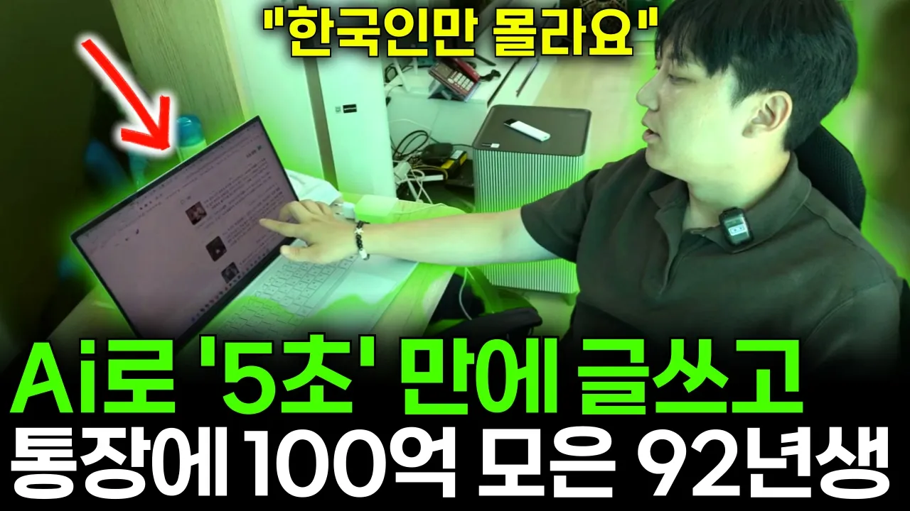
"한국인만 몰라서 못해요" 전세계 1위 부업으로 통장에 100억 모은 미친 92년생 재택 부업 ▶"한국인만 몰라서 못해요" 전세계 1위 부업으로 통장에 100억 모은 미친 92년생 재택 부업
'현금 72억' → '자고 일어나면 하루 3천만' → '성실은 가스라이팅' → 새 차
심리충격 숫자 + 가치관 전복
AI 승인 비서 → 2초 만에 글 → '이게 다예요?'
심리쉬움 시연
'사업 동료들 다 성수동 건물, 다 0원 시작' + '매뉴얼·템플릿 다 만들어 놨다'
심리동료 증거 + 선물 예고
'세계 1등 구글 부업 40억, 순자산 100억 알파남' → PD '순자산 100억이요?'
심리정체성 + 되묻기
'시장 큰 데서 해야' + 안산 30년 → 첫 집
심리논리 + 개인 서사
PD '시청자분들께 (템플릿) 주실 수 있을까요?' → '초보자들이 당장 필요한 것 모아서 드리겠다'
몽타주(72억·3천/일·가스라이팅·AI 2초·성수동) + 정체성 + 첫 집
상방 없는 부업 + 나스닥 초청 + 월 7억 7천 화면 + 고정비 1,200
3단계 메커니즘(승인글→승인→달러) + 100개 사이트 AI 운영 + 온라인 건물주
통장 72억 + 6월 25억 매출·순익 70% + '순익 높은 사업만'
이슈형·고단가 키워드 + 미스트롯 투표 500만원짜리 기술 공개
람보르기니 + 할머니 후회 → '빨리 성공해야' 시간론
6살 마케팅 수첩 + 강아지 + 왕초보 튜토리얼 진입
네이버 3계정 전략 + 승인 비서 시연 + 1차 CTA
애드포스트 절차 + '책자에 다 있다' + 트립닷컴·아고다
어머니 등장 황금 키워드 + 세대 가치관 대비 + 할아버지 + '블로그 만드세요'
Q순자산 100억이요?
A매출이 아닌 순자산으로 다음 달 입금되면 100억이며, 시장이 큰 부업을 골라야 이 정도 벌 수 있다고 답함
Q15만 원짜리 컴퓨터로요?
A제조업은 5~10억 설비가 들지만 15만 원으로 시작했고, 자고 일어나면 하루 3천만 원씩 벌려 나스닥 상장사에도 초청받았다고 답함
Q왜 이렇게 (고정비가) 적게 나갔어요?
A글만 쓰는 일이라 인건비 외 비용이 없고 창업비 15만 원에 월 7억이 들어오며, 구글 부업으로 100억 번 친구를 보고 시장이 크다는 걸 알았다고 답함
Q어떻게 100개를 혼자서 운영해요?
AAI와 온라인 덕분에 하루 10여 개도 만들 수 있고, 글 하나로 구글·유튜브·다음·쿠팡파트너스 등 여러 곳에서 돈이 들어오는 '온라인 건물주'라고 답함
Q통장 한 번 보여주실 수 있나요?
A전세금 등을 뺀 현금 72억을 인증했고, 다음 달 돈이 들어오면 100억 가까이 되며 주식 하락으로 조금 줄었다고 답함
Q왜 이렇게 높아요, 순수익률이?
A매출은 돈을 넣어 펌핑할 수 있으니 얼마 남느냐가 중요해 순수익 높은 사업만 하며, 가족 집·대출·차에 쓰고도 73억이 남았다고 답함
Q할머니께서 성공하신 거 보고 돌아가셨나요?
A성공할 때 너무 바빠 보여드리지 못해 안타깝고, 돈 쓸 시간은 유한하니 젊을 때 빨리 벌어야 하며 50살 더 먹고 100억 받는 건 절대 안 하겠다고 답함
Q왕초보도 쉽게 따라할 수 있게 설명 부탁드려도 될까요?
A구글은 승인이 어려워 500만~2천만 원 벌기 쉬운 네이버 블로그를 대안으로 제시하고, 1인 3개 운영 가능해 할아버지 아이디로도 월 50만 원을 만든다고 답함
Q못 따라가시는 시청자분들 있을 것 같은데
A책자에 구글 신청법까지 상세히 넣어 천천히 따라하면 되고, 블로그 3개를 개설 30일 뒤 신청해 승인받으면 300씩 총 900만 원도 가능하다고 답함
Q지금 당장 시작할 수 있는 건 어떤 것부터?
A돈이 안 드니 영상 보고 네이버 블로그를 만들어 글 하나라도 쓰라 하고, 향후 목표로 전국민 앱과 구단주를 꼽으며 자기 지식 투자가 최고라고 답함
그냥 이거 보고 네이버 블로그 만드세요. 글 하나라도. 돈 드는 거 아니잖아요 (템플릿·책자는 중반 CTA)
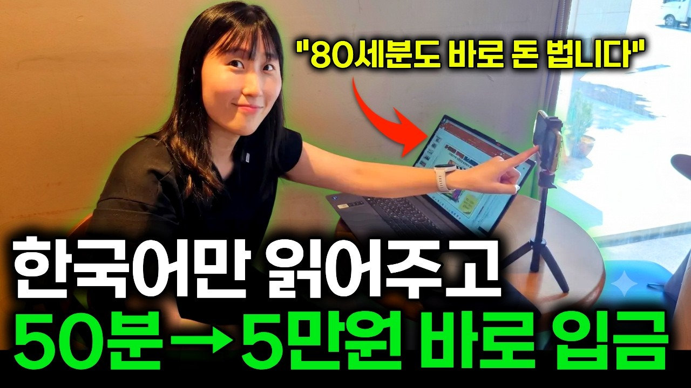
"한국말만 알면 가능해요" 외국인한테 한국어 읽어주고 달러 버는 역대급 부업 ▶"한국말만 알면 가능해요" 외국인한테 한국어 읽어주고 달러 버는 역대급 부업
'외국인 대상 월 400 유희진' + '자격증 필요 없다, 99% 한국어로 수업'
심리정체성 + 진입장벽 제거
'35달러, 50분, 5만원' + '육아하면서 가능' + '70대 초반 선생님' + '200만 명 배우고 싶어 하는데 강사 부족, 빨리 진입'
심리단가 + 페르소나 + 희소·긴급
'프로필 등록 3시간 만에 트라이얼 레슨'
심리즉시 결과
자기소개 → PD '한국어를 가르쳐줘요?' 되묻기 → K-pop·BTS 수요 → 시급 4~5만
심리메커니즘 + 시장
'직접 만나나?' → 온라인 플랫폼 → '말로만 들어선 이해 안 됨' → '따라오세요'
심리시연 이동 프레임
PD '(프로필 프롬프트) 진짜 줄 수 있어?' → '고정댓글 링크 신청해서 카톡방 들어오시면 드릴게요'
몽타주(400·자격증 無·35달러·70대·200만 명) + 자기소개 + K-pop 수요
카페 이동 + 플랫폼 잔고 2,571달러 + 가격 자유 설정 + 프로필 등록(ChatGPT 소개문)
1차 CTA(프롬프트) + 50분 5만원 '10분에 만원' + 강사 연령 20~80대 + 시작 단가 8달러
강사 부족·3시간 만에 첫 레슨 + BTS·스키즈 낙수효과 + 자격증·영어 불필요
월 수익 15,341달러 화면 + 새벽 6시 수업(시차) + 갑 포지션 + 한국어로만 수업 선언
실제 수업 장면(머리·무릎) + 리뷰 + 학원 vs 온라인 + AI로 문법 설명 실시간
아미 학생들 + 육아 병행 스케줄 + 월 최대 400 + 60달러로 올리는 법 = 단톡방
출금 화면 + 시작 계기(아이·남편과 시간) + 등록 첫 단계(자기소개 영상 프롬프트로)
교재(K드라마 리액션·세종) 2차 CTA + 강의실 기능 시연 + 수익화 기간
선생님 자료집 3차 CTA(배송) + '경쟁자 늘어나는 거 아니에요?' → 200만 수요 + 세미나 링크 + 무자본 조언
Q저 정도만 하면 되는 거예요? 자격증 따로 필요할까요?
A자격증은 필요 없다며 본인도 수업의 99%를 한국어로 하고, 가격은 직접 정해 50분에 35달러(약 5만 원)를 받는다고 답함.
Q강사분들 나이대는 어떻게 돼요?
A본인이 만난 선생님은 70대 초반이었고, 한국어에 관심 있는 학습자가 200만 명이 넘는데 강사는 적으니 빨리 진입하라고 답함.
Q그게 어떻게 가능한 거예요?
A플랫폼에 시스템이 다 갖춰져 있어 강사로 등록만 하면 학생이 신청할 때 수업하면 되고, 시공간 제약 없이 집에서도 가능하다고 답함.
Q너무 궁금한데 바로 한번 보여줄 수 있어?
A플랫폼 화면을 열어 수업으로 쌓인 2,571달러(약 370만 원)를 보여주고, 트라이얼 신청이 계속 들어와 40달러 인상을 고민 중이라고 답함.
Q(프롬프트) 진짜 줄 수 있어?
A고정 댓글 링크로 카톡방에 들어오면 자료를 주겠다며, 많은 분이 부업의 꿀맛을 경험해 봤으면 해서 드린다고 답함.
Q가격은 플랫폼에서 정해주는 거 아니에요?
A아니라며 가격은 본인이 직접 설정한다고 답했고, 처음엔 8달러로 시작했으며 33·55·16달러 등 강사마다 다양하다고 덧붙임.
Q자격증이나 학력 같은 게 따로 필요할까요? 영어 못해도?
A자격증은 필요 없고 영어를 못 해도 되며, 수업의 99%를 한국어로 하고 학생의 영어 질문은 자동 번역 기능으로 해결한다고 답함.
Q실제 수업 장면 좀 보여주시면 안 돼요?
A집에서 촬영한 영상이라 화질이 거칠 수 있다며 보여주고, 보통 새벽 6시에 수업하는데 시차상 그때 영어권 수요가 가장 많다고 답함.
Q신뢰가 안 된다면… 지금 아이 양육하고 계시죠?
A맞다며 오전에 아이 등교 후 9~10시는 비워두고 수업하고, 주변 엄마들도 같은 부업을 하며 이번 달 400만 원 정도 벌 것 같다고 답함.
Q60달러까지 올릴 방법이 있나요?
A좋은 리뷰를 많이 쌓으면 올릴 수 있으며, 리뷰를 많이 받는 구체적 방법은 단톡방에 들어온 분들에게만 알려주겠다고 답함.
Q다 알려주면 경쟁자가 늘어나는 거 아니에요?
A200만 명이 넘는 한국어 학습 수요가 있어 더 많은 사람이 들어와도 설 자리를 뺏기지 않으며, 세미나에서 더 체계적으로 배울 수 있다고 답함.
밑에 링크 들어오셔서 단톡방에 들어오시면 (자료집·교재·프롬프트) 드리고, 더 체계적으로 배우고 싶은 분은 세미나
아무도 안하는 부업으로 27억 모은 40대, 70대도 첫 달 9천만원 매출했어요
뱅크샐러드 27억·신용 1000점 + ABC마트 76,300 매입 → 102,000 판매
심리자산 + 마진 즉시
'공홈에서 사서 중간 마진' + '마카오 있는 동안 2천만' + '출근 안 함, 10분'
심리메커니즘 + 자유
PD '돈 많이 드는 거 아니에요?' → 30만원 + 아기 침대 둘 데 없던 고통 + 부동산 24채 동네 나열
심리반박 + 고통 + 자산
'0.1% 부업으로 200억 매출 돈형' → '어떤 업?' → '연예인 광고 제품 재고 없이'
심리정체성 + 티저
책 4권(49만원) 공개 → '왜 줘요?' → '어차피 알려줘도 안 하니까, 47만 명이 배우려 했다'
심리선물 + 역심리 + 사회적 증거
'49만원짜리 책, 단톡방 들어온 사람 중 일부에게 집으로 보내드립니다'
몽타주(27억·마진·마카오·10분·30만원·24채) + 정체성 + 책 CTA
'5천만 명 고객' 정보격차 + 12만 개 자동 등록 + 주문처리 라이브(0→수천만)
공홈 구매→고객 배송 무재고 + 'ABC마트 두고 왜 비싸게?' → 호텔 생수 비유
1~100위 브랜드 프로그램 시연 + 2차 CTA(한 달 무료)
부동산 24채 + 산책 후 매출 증가 라이브(980만) + 212억 누적
'나이키만 되나?' → 모든 브랜드(동원몰·올리브영) + 3차 CTA(2주 무료)
AI 이미지 변환 지재권 회피 + '광고비 10원' → 연예인이 광고
가격 모르는 고객 심리 + 마진계산기 4차 CTA + 사업 비용
수강생 평균 월 2,738만 매출 화면 + 하루 15건 15분 계산
600만원 결혼·거실 아기 침대 고통 + 격언 + 72세 수강생 즉시 촬영(다음 편) + 뱅크샐러드 공개
Q이거 하려면 돈 많이 들어가는 거 아니에요?
A30만 원 정도로 시작했고, 아이들이 자던 집 침대까지 둘 데가 없을 만큼 물건이 쌓였다고 답했다.
Q이걸 왜 줘요?
A알려줘도 안 하기 때문에 제발 하라는 뜻으로, 47만 명이 배우고 싶어 해 정리한 49만 원짜리 책을 단톡방 일부에게 집으로 보내준다고 답했다.
Q출근 안 하시고 이렇게 계셔도 되는 거예요?
A출근 안 하고 하루 10분만 컴퓨터를 만지면 되며, 5천만 명이 네이버·쿠팡에서 브랜드를 검색해 사니 그게 다 자기 물건이라고 답했다.
Q마켓에 물건이 몇 개나 올라가 있는 거예요?
A약 12만 개가 올라가 있고 손으로 올린 건 하나도 없이 프로그래밍이 자동 등록하며, 8월 14일 이후 주문을 라이브로 처리해 보여주겠다고 답했다.
Q저 사람들은 공홈에서 더 싸게 판다는 걸 모르세요?
A에비안이 마트 3천 원·호텔 6천 원·비행기 9천 원인 유통 마진처럼, 사람들이 공홈이 아닌 네이버·쿠팡에서 사니 마진을 붙여 팔 수 있다고 답했다.
Q조작하면 어떻게 알겠습니까?
A재고 없이 온라인에 올려 주문 오면 공홈에서 사서 보내는 방식이며, 지재권 문제는 자체 개발 파이 AI가 이미지를 바꿔 해결한다고 답했다.
Q한 달씩이나요?
A공짜로 깔면 다 나오고 국내 브랜드 1~100등 중 5등까지만 해도 돈을 벌며, 집에서 10~20분 일하고 여행을 연 6회 간다고 답했다.
Q이 사업으로 번 돈으로 다 사신 거예요?
A무재고 유통으로 번 돈으로 토지·아파트·오피스·건물·주식·코인에 투자했고, 두세 시간 만에 주문이 300~500만 원 더 늘었다고 답했다.
Q근데 이게 나이키만 되느냐?
A나이키뿐 아니라 참치·햇반·신라면 등 모든 브랜드가 가능하며, 사람들은 동원몰이나 공홈 대신 네이버·쿠팡·올리브영에서 산다고 답했다.
Q12만 개 광고 안 쓰면 노출 안 해주잖아요?
A플랫폼별 키워드·문단에 최적화된 프로그램이라 등록만 해도 노출되며, 셀러 60만 명 중 약 1,200명만 쓰는 홍보 안 하는 프로그램이라고 답했다.
Q인생 나아지길 바라는 분들께 조언 한마디?
A아무것도 안 하면 아무 일도 안 일어나니 두려워도 시작하라며, 몇 만 원 매출이 쌓여 200억이 됐으니 영상만 보지 말고 도전하라고 답했다.
단톡방에 오신 다음 공지대로 따라오시는 분께 책 무료 배송 + 프로그램 한 달/2주 무료 + 마진계산기
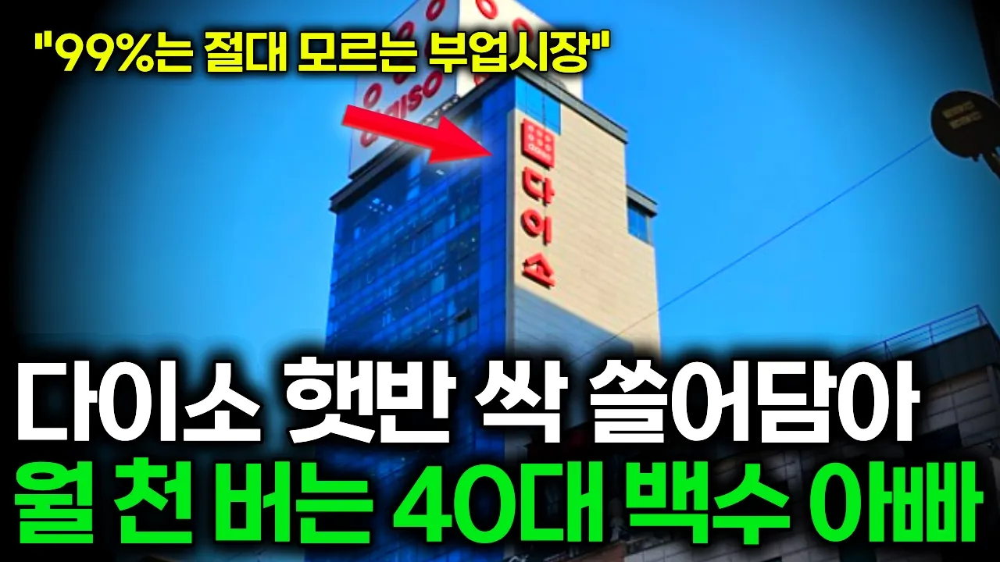
'이 남자 진짜 미x습니다...' 이렇게 돈 버는 부업은 처음 봅니다. 남들 먹는 햇반으로 월 1000만원씩 버는 40대 남자 ▶'이 남자 진짜 미x습니다...' 이렇게 돈 버는 부업은 처음 봅니다. 남들 먹는 햇반으로 월 1000만원씩 버는 40대 남자
'다이소에서 어떤 일?' → '30% 이상 남는 거 보고' → '끝났어요? 집 가서 돈 벌면 됩니다'
심리쉬움 + 현장
AI 상세페이지 생성기 '끝이에요?' + 업로드 → '살다 살다 처음' + 3년간 월 900~1,000 유지
심리시연 + 지속성 증거
일본 디즈니 여행 귀국 직후 아들과 등장 + '하루 1~2시간, 노트북만'
심리자유·가족 이미지
'해외여행하며 일해도 충분?' → '일 안 하는 것처럼 보임' + 다이소 도착 '식품부터 본다'
심리라이프스타일 + 현장 진입
마지막 '밑에 링크 클릭하면 더 많은 정보' — 이 편은 리드마그넷보다 방법 시연 비중이 큼
몽타주(30%·AI 상세페이지·3년 유지) + 여행 귀국 + 아들 + 다이소 진입
가성비 밥 4,000→6,590 + 대량 옵션 + 화이트하이 2배 + '왜 온라인에서 사나'
다이소 가격에도 사람들이 온라인 구매 → 깨달음 + 주방세제·락스 + 대기업이 오히려 감사
햇반 '뒤통수 맞은 느낌' + 사진만 찍고 끝 + 작업 공간 이동 + '집에 쌓아두나?' → 아니다
AI 상세페이지 생성기 시연('대한민국에 나밖에') + 이미지·정보고시 클릭
시작 계기(빚, 카드로만) + 한 달 밤새 등록 → 첫 순익 40만 실망 → 400·600 성장
확신 전환 + 육아·하원 동행 + 여행 + '돈보다 시간 만족' + '22년으로 돌아가도 같은 일'
가격 갭 원리 + 엑셀 업로드 마켓 동시 등록 시연 '판매중 떴죠'
매출 그래프 3년 5~7천 유지 + 순익 1천 + 등록 3,000개 중 100개 효자 + 카테고리
수동 vs 프로그램 100~200배 + 50~100만 더 벌고 싶은 분께 '브랜드 커넥터' 추천 + 링크
Q다이소에서 어떤 일 하세요?
A다이소에서 생활용품을 보고 온라인 최저가와 비교해 30% 이상 남는 상품을 찾은 뒤, 집에서 AI로 상세페이지를 만들어 업로드만 하면 끝이라고 답했다.
Q해외여행하면서 일해도 충분한 거예요?
A노트북과 마우스만 있으면 되니 여행 가면서도 충분히 일할 수 있고, 편한 차림으로 다니니 일 안 하는 줄 오해받기도 한다고 답했다.
Q가격 차가 꽤 나죠? 이거 얼마예요?
A다이소 2,000원 제품이 온라인 최저가 두 개 6,590원이라 약 40% 마진이고, 4개·6개·12개 대량 옵션이면 마진이 훨씬 커진다고 답했다.
Q이걸 아는 사람들이 얼마나 있겠어요?
A다이소에 와서 가격 비교 후 사는 사람은 거의 없고 대부분 온라인 검색으로 주문하니, 그 빈틈을 파고드는 완전한 틈새시장이라고 답했다.
Q여기 와서 사 먹지 왜 (비싸게) 주문을 하지?
A다이소보다 비싼데도 온라인 주문이 많은 걸 보고 비슷한 가격에 올려보니 주문이 들어왔고, 갭 나는 상품이 너무 많더라고 답했다.
Q이런 걸로 (대기업이) 뭐라 한 적 없었어요?
A판매를 많이 하니 대기업 높은 분들이 연락해 왔는데 오히려 고맙다며 화이트셀러로 지정해 줬고, 대기업은 많이 파는 사람을 밀어준다고 답했다.
Q다이소 와서 하시는 일이 사진만 찍고 끝나는 거예요?
A사진 찍고 가격 확인만 하면 끝이며, 다이소 가격이면 온라인엔 더 싼 소싱처가 있다는 뜻이고 집에 재고를 쌓아두진 않는다고 답했다.
Q처음 순익 40만 원 찍었을 때 어땠어요?
A2022년 6~7월 등록만 하다 8월 첫 40만 원이 나왔을 땐 불안했지만, 9~10월 400만·600만 원으로 오르며 확신했고 6개월 뒤 900만 원을 찍었다고 답했다.
Q애들이 좋아하나요?
A예전엔 맞출 수 없던 하원 시간에 함께하고 주말마다 여행을 가니 아이들이 좋아하며, 큰돈보다 아이들과의 시간이 더 큰 만족이라고 답했다.
Q22년 힘들던 시기로 돌아가도 똑같은 일 하실 건가요?
A온라인과 브랜드는 사라지지 않으니 생애 주기 안에서 영원한 사업이라 똑같이 할 것이며, 아들에게 물려줄 생각까지 한다고 답했다.
Q가장 잘 팔리는 카테고리가 뭐예요?
A골고루지만 객단가 높고 단골 많은 품목이 좋고, 최근엔 물티슈·휴지가 학교·공공기관 단골 주문으로 계속 들어온다고 답했다.
Q50~100만원만 더 벌어도 숨통 트이겠다는 분들께 조언?
A광고비나 사입이 필요한 다른 이커머스와 달리 브랜드 대기업 제품을 가격 차이만으로 파는 브랜드 커넥터를 강력히 추천한다고 답했다.
더 많은 정보 준비했으니 밑에 링크 한번 클릭해 보시면 도움 드릴 수 있을 것 같습니다
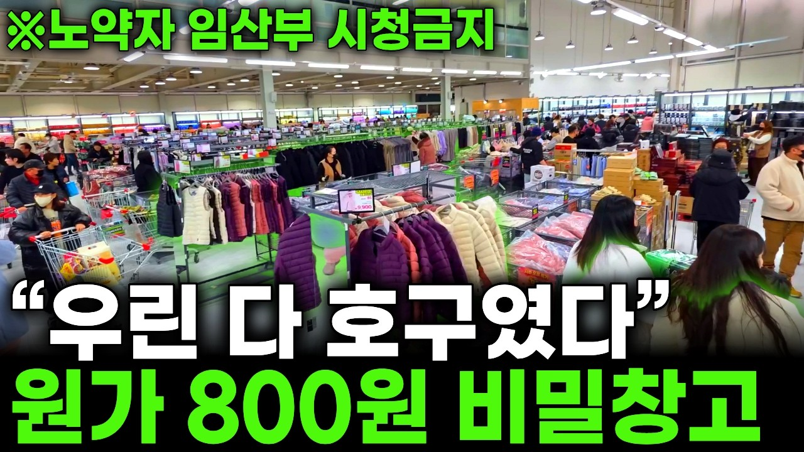
95% 싸게파는 전국비밀창고 알아내 혼자 매출 45억씩 파는 미친X ▶95% 싸게파는 전국비밀창고 알아내 혼자 매출 45억씩 파는 미친X
'1천에 받아 9천에 판다, 10배' + 리뷰 24,000개 + 핸드크림 1,000원 '이게 말이 돼요?'
심리가격 충격 연타
'연매출 45억(19억+25억)' + '시장 120조' + '공개돼도 되나? 안 됩니다' + 수강생 매출 인증 8페이지
심리규모 + 비밀 + 사회적 증거
'설날 용돈 드리려고 비밀창고에서 돈 벌러' + PD '치약 얼마에 사세요?' → '모든 원가는 1,000원'
심리가족 동기 + 기존 상식 파괴
카트 여러 번 왕복하는 셀러들 + '충격 받으실 겁니다, 들어가 보시죠'
심리현장 증거 + 기대감
'강의를 진행하는데 강의팔이 아니냐 하시는 분은 안 오셔도 되고, 하고 싶은 분은 댓글 링크 무료 웨비나로'
몽타주(10배·45억·120조·인증) + 설날 용돈 + '원가 1,000원' 선언 + 창고 진입
무궁화 다이어트 5만→3,900 + 애사비 4,900 + 핸드크림 1,000 + '7번째 들어가는 셀러'
누구나 입장 + 수천만 개 종류 + 쿠팡 핫템 1,900원 10개 + 정렬된 셀러 구역
판매 방식 = 기존 브랜드 판매자에 '결합·매칭' + 사업자 2개 19억·25억 + 마진 30% 기준
카페에서 수강생 인증 카페 화면(광고비 0, 65~69세) + '사기꾼 같다' 자조
신규 브랜드 계속 등장 + 시장 120조 '먼지' + '올해 안 하면 호구' + 학교 납품 대안
유명 브랜드 9,400원 리뷰 24,000 '다 담아' + '시청자 뒤통수' + '다단계 아니냐' 자문
샴푸 2,900 + 영양제 판매 자격 + 12번째 방문 셀러 + 월 2~3억·연 45억 + 광고비 0
글루타치온 7,900 + PD에게 선물 + '팔 물건과 필요한 물건 섞어 사면 셀러 의심 안 받음' 팁 + 트렁크 폭발
어머니 용돈 300만 + '왜 알려주나' → 유통 15년차 진실성 + '이걸 몰랐으면 출근 지옥' + 120조 영원 + 웨비나 CTA
Q이게 정상이에요? 이게 말이 돼요?
A연 매출 45억(사업자 두 개, 19억+25억)을 인증하며 1,000원짜리 핸드크림이 시중에선 8,900~13,300원이라고 보여줌.
Q비밀창고 쓸어담아서 매출 어느 정도 하고 있어요? 45억이요?
A연매출 약 45억, 사업자 하나 19억·두 번째 25억이고 시장 규모는 120조라고 답함.
Q여기 공개돼도 되는 창고예요?
A원래 공개 안 되는 창고지만, 매출 400 인증한 수강생 8페이지 분량이 12월 한 달에 나왔다며 신뢰성을 강조함.
Q저분 몇 번째 사시는 거예요? 저런 분들도 다 셀러예요?
A일곱 번째 들어가는 손님이며 대만·중국·한국 셀러들이 여기서 사다 팔면 돈 된다는 걸 알고 오는 것이라고 답함.
Q여기 창고는 누구나 들어올 수 있는 거예요?
A아무나 들어올 수 있고, 반값이 아니라 거의 공짜 수준이며 1,000원에 받아 9,000원에 파는 구조라 마진이 아홉·열 배라고 설명함.
Q그러면 판매를 어떻게 해요? 그게 무슨 뜻이야?
A이미 등록된 브랜드 판매자에게 '우리도 물건 있다'며 상품을 매칭·결합해 주고 그 매출을 얻는 방식으로 사업자 두 개 연 45억을 낸다고 함.
Q이거 전부 다 매출 인증한 거예요?
A12월 한 달 매출이고 광고비 0원이며 거짓말 안 한다고 답하고, 최저가가 깡패라 65~69세 어르신도 방법이 어렵지 않다고 함.
Q일 순익이 얼마 같아요? 너무 사기꾼 같다
A일 순익 약 2천이라 답하며 사기꾼 같다는 말에 지인·주변에 실제로 하는 사람 많고 신규 브랜드가 계속 뜨듯 지금 들어가도 된다고 반박함.
Q이런 걸 여기서 팔아도 되는 거예요?
A입점 안 된 브랜드도 있고 신규 브랜드도 있으며, 시중 12,900원 제품이 여기선 7,900원이라 시청자는 호갱이었다고 웃으며 답함.
Q광고비 하나도 안 들어가는 거 맞아요?
A(자막에서 답변 확인 불가)
Q이런 걸 굳이 왜 알려줘요? 혼자 조용히 벌면 되는데
A유통업계 15년 차로 이런 구조로 돈 벌어 왔고, 어르신 돈 뺏는 이상한 강의에 현혹되지 말고 시간 쓴 만큼 버는 온라인 구조를 알리고 싶어서라고 답함.
Q이 시장이 앞으로 얼마나 갈 것 같아요?
A120조 시장은 사라질 수 없고 의식주가 있는 한 유통 수요는 평생·후손까지 존재한다며 댓글 링크의 무료 강의로 오라고 답함.
댓글 밑에 링크 남겨드릴 테니 무료 웨비나 꼭 오셔서 좋은 정보 알아가셨으면
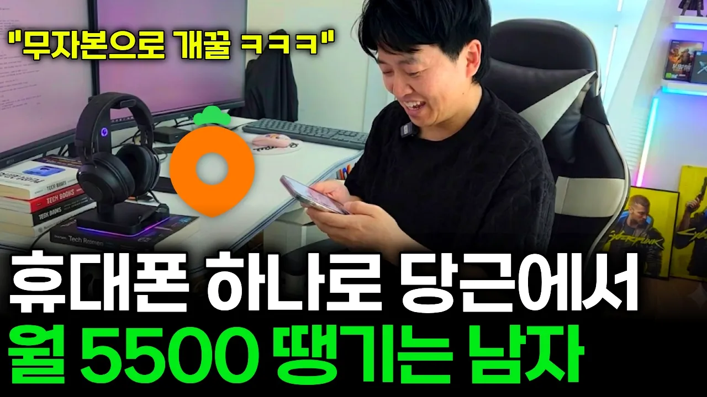
당근에서 중고 말고 '이것' 팔아서 월 순수익 2200만원 버는 남자 ▶당근에서 중고 말고 '이것' 팔아서 월 순수익 2200만원 버는 남자
당근 판매 내역 나열 7만·9만·11만 + '15만원짜리를 5만원에 가져온다'
심리증거 + 마진 즉시
'원하는 지역 인증 비공개 방식' + '하루 60건, 순익 200만/일'
심리비밀 + 일 단위 숫자
'비밀 노하우 시청자께 드리겠다' + '당근으로 15억 기대표'
심리선물 예고 + 정체성
PD '당근으로 무슨 15억?' → 프라이팬·냄비·선풍기 + '4천만 명 중 300명만' + '혼자 꿀 빨고'
심리되묻기 + 희소성 + 역심리
PD '비공개 소싱처 사이트 알려주시면 안 돼요?' → '고정댓글 파란 링크 클릭해서 단톡방 들어오시면 다 받아가실 수 있어요'
몽타주(판매 내역·비공개 지역 인증·200만/일·15억) + 자기소개 + '300명' 희소
3일 689만 입금 화면 + '당근은 중고만'이라는 편견 깨기(택배 거래) + 지역 인증 방식
도매가 vs 판매가 순익 2,232만 화면 + '당황스러운데 보여달라' + 고양시 49평 집
사무실 불필요, 휴대폰 1대 + 하루 30분~1시간(카톡 비유) + 포장·검수 소싱처가 대행
소싱처 가격 비교(에어프라이어 66,800 vs 49,000) + 1차 CTA + 최소주문 없음
학원 사업 서사 + 상세페이지 불필요 '글 몇 줄' + 손풍기 대충 찍어 올리기 시연
마진 100% + 2차 CTA(소싱처) + 화장실에서도 + 초기자본 10만원
책(카테고리·계산기·노하우) 3차 CTA '고민해봐야' 밀당 → 배송
수능 학원 원장 이력 = 잘 가르침 + 레드오션 반박(4천만 중 300) + 학생 스카이 결과
워라밸 180도 + 조언(고2부터 4시간 자며 공부) + '나이 상관없다' + 69세 수강생 즉시 촬영
Q당근마켓으로 무슨 15억을 벌어요?
A프라이팬·냄비·캐리어·선풍기 같은 생활 리빙 상품을 팔아 번다며, 마진 4~5만 원 이상 남는 상품도 굉장히 많다고 답함.
Q그거 하나 팔면 마진 만원일 텐데 어떻게 15억?
A4~5만 원 이상 마진 상품이 많고, 당근 이용자 4천만·월 2천만 명 중 이걸 하는 사람은 전국 300명뿐이라 혼자 꿀 빤다고 답함.
Q이게 전부 다 당근이라고요?
A당근은 중고·직거래만 한다는 건 편견이며, 부산에서 문의 오면 택배로 보내듯 택배 거래를 먼저 착안한 것이라고 답함.
Q전국을 돌아다니면서 동네 인증을 다 하는 거예요?
A아니라며 자기만의 방식으로 집·사무실에서 동네 인증 후 판매하고, 7월 23일엔 하루 60건·순수익 200만 원 이상 냈다고 답함.
Q이번 달만 그런 거 아니에요?
A매달 그렇다며 7월 1일~31일 판매 정리표로 월 순수익 2,200만 원을 보여주고, 비밀 소싱처의 가격 차이를 공개하겠다고 답함.
Q하루 몇 시간 일하세요? 어떻게 주문이 저렇게 많이?
A종일 하지 않고 카톡처럼 구매 문의 올 때 1~2분씩 답하는 자투리 시간을 모으면 하루 30분~1시간이라고 답함.
Q택배 발송·포장 해야 되잖아요?
A본인이 하지 않고 제휴된 비밀 소싱처가 검수부터 포장까지 다 해서, 주문 들어오면 발주만 넣으면 끝난다고 답함.
Q사이트 좀 알려주시면 안 돼요?
A고정 댓글 링크로 단톡방에 오면 알 수 있다며, 도매꾹 19,500원·40개 최소주문인 구강세정기가 소싱처는 14,000원에 1개 발주도 된다고 답함.
Q너무 대충하시는 거 아니에요?
A이렇게 해도 팔린다며 손풍기는 더운 날 하루 10~20개 팔리는 마진 100% 상품이고, 앱에서 사진·제목만 대충 올려도 된다고 답함.
Q배송까지요?
A고민하다 '주세요'로 구매를 결정한 뒤, 책은 고정 댓글 링크로 받을 수 있고 하루 만에 수익 난 수강생이 굉장히 많다고 답함.
Q69세도 할 수 있어요?
A당연하다며 70대도 많고, 69세 수강생은 두 달 만에 매출 1,500만 원·순수익 약 500만 원이며 위탁 방식은 시공간 제약이 없다고 답함.
Q끝물·레드오션이라는 분들 어떻게 생각하세요?
A아니라며 이용자 4천만·월 2천만 시장에 하는 사람은 300명뿐이고 소싱처 상품이 수만 가지라 블루오션이며 빨리 진입할수록 유리하다고 답함.
아래 고정 댓글 파란색 링크 → 단톡방 (책 배송·소싱처·마진계산기)
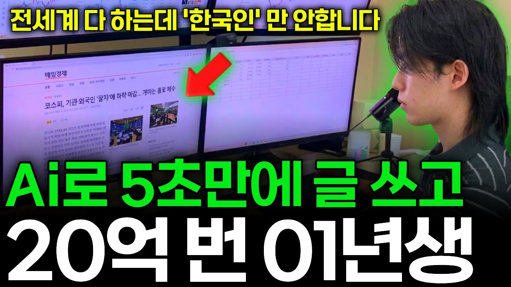
"한국인만 몰라서 못합니다" 전세계 1등 부업으로 20억 모은 미친 01년생의 재택근무 ▶"한국인만 몰라서 못합니다" 전세계 1등 부업으로 20억 모은 미친 01년생의 재택근무
'작년 순익 6~7억' + '사람들 잘 몰라' + '15살부터' + 연도별 소득 나열 → 20억
심리숫자 + 희소 + 조기 시작 충격
'24~25살 빚 3억 5천' → '1년 만에 청산' + '영상 끝까지 보면 어디서도 못 본 방법'
심리고통→역전 + 시청 유지 훅
'AI 글쓰기로 20억 플로우' + PD '잘생기셨네요' + '20억이요? 나이가? 26살인데 벌써?'
심리정체성 + 되묻기 3연타
15살 월 20~30 → 17살 200 + '본질은 다 글쓰기' + '사무실 올라가서 다 보여드림'
심리성장 서사 + 시연 이동
'왕초보는 이 네 줄도 어려울까 봐 댓글 파란 링크 오픈채팅방에서 프롬프트 전부 알려드릴게요'
몽타주(6억·15살·빚 3.5억·청산) + 정체성 + 되묻기 + 성장 서사
잡브레인 앱 연소득 17억 인증 + 전국 26,000등(0.13%) + '내 글에도 이런 광고'
다음(Daum) 채널 9,280만 + 채널별 수익 + '다음에서 1등' + 구독자 13만
멀티유즈(네이버·구글 복붙) + 알파남 덕에 다음 시작 → 첫 달 400
주부 컨셉 건강 채널 4천 + GPT 프롬프트 4줄 시연 + 1차 CTA
승인 즉시 수익 + 네이버 애드포스트 100% 승인 + 다음 신청 복잡 → 단톡방 2차 CTA + 광고 위치
키워드 생성기 + 승인 비서 + 프롬프트 전부 무료 3차 CTA
글 2분 완성 + '손으로 할 때보다 10배' + 플랫폼이 광고 자동 + 다음 가입 폭등
직업만족 10점 + 산책 + 하루 2시간+트렌드 10시간 + 연금형 누적 + 24~25살 유튜브 삭제 실패담
'시도라도 해봐라' + 알파남 9월 세미나 4차 CTA + 할머니 서사 + 주식 투자 화면(마이너스도 공개)
Q15살 때부터 하셨다고요?
A중2(15살) 때 시작했고 작년 6억·재작년 1억6천 등 합쳐 20억 벌었으며, 24~25살 때 생긴 3억5천 빚도 1년 만에 청산했다고 답함.
Q26살인데 벌써 20억을 벌었다고요?
A작년 AI 글쓰기로 순수익 6억·매출 10억이며, 15살 때 월 20~30만 원부터 시작해 10년째 글쓰기로 벌어온 결과라고 답함.
Q어떤 유형의 글을 쓰시는 거예요?
A블로그 형식 글을 쓴다며 잡브레인 앱으로 작년 소득 17억을 인증하고, 19살 3천만 원부터 연도별 소득을 공개함.
Q(전국 순위) 0.001% 되지 않을까요?
A다른 부업은 초기 자금 수천만 원이 드는 반면 글쓰기는 한 푼도 안 들고 GPT가 대신 써주기 때문에 선택했다고 답함.
Q다음에 채널 같은 게 있어요?
A다음 블로그(2018년 출시)로 한 채널 9,280만 원, 다른 채널 4,600만·4,900만 원 수익을 냈고 다음에서 자신이 1등이라 자부함.
Q15살도 가능한데 왜 못 한다고 생각하세요?
A15살부터 페이스북·유튜브·틱톡·블로그 등에서 벌었고 재고·사입 부담 없이 부업으로 가능하며 글 하나를 여러 플랫폼에 멀티유즈한다고 답함.
Q우리 왕초보분들은 이 네 줄조차 생각하기 힘들 거거든요
AAI가 알아서 글을 써주고, 주제는 유튜브에서 조회수 잘 나온 영상 제목을 살짝 틀어 가져오면 된다고 답함.
Q유튜브처럼 4,000시간 기준 같은 게 없는 거예요?
A네이버 애드포스트는 무조건 승인되고 다음은 신청이 복잡해 단톡방에서 알려주며, 수익은 글 사이 광고로 발생한다고 답함.
Q배송까지 해주시나요?
A배송까지 해주며 교보문고 1등 책도 5명에게 증정하고, 10시간 넘는 설명을 책 한 권에 정리했지만 알려줘도 대부분 안 한다고 답함.
Q하루에 몇 시간 정도 일하세요?
A실제 작업은 하루 2시간 정도이고 나머지 10시간 이상은 트렌드 분석과 서칭에 쓴다고 답함.
Q한 번 쓴 글이 계속 수익 발생하는 구조인가요?
A콘텐츠가 쌓일수록 수익이 올라가는 연금형 구조라며, 24~25살 때 유튜브 채널 몰빵 후 삭제로 3억5천 빚과 6억 손실을 본 실패도 고백함.
Q알파남 대표님 만날 기회 어렵게 모셔주실 수?
A9월 세미나에 모셔 모든 정보를 풀 예정이며 영상 링크의 단톡방에서 안내하고, 결국 실행력이 가장 중요하다고 답함.
해당 영상 링크 → 단톡방 입장하시면 세미나 일정·프롬프트·승인비서 전부
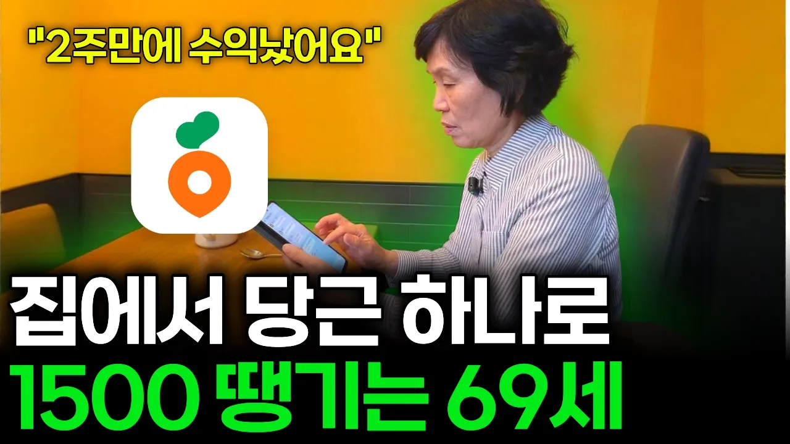
당근에서 중고 대신 '이걸' 팔아서 순수익 500번 69세 주부 ▶당근에서 중고 대신 '이걸' 팔아서 순수익 500번 69세 주부
'미싱 일 vs 지금 워라밸' + '몸 안 좋은데 내가 하고 싶은 시간에' + '69세, 수익 500' + 선풍기 마진 2만 5천
심리시니어 감정 + 숫자
'무자본 무재고, 집에 아무것도 없어요' + 사진 올리기 시연 + '먼저 문자 와요, 바로 돈 보냈어요'
심리리스크 0 + 즉시 거래 증거
'주변 언니·동생에게 추천? 부딪히면 돼요' + '고양시 당근 두 달 매출 1천·순익 500 69세' + PD '너무 정정하신데'
심리동년배 호명 + 정체성
'기대표 제자 중 69세라 안 믿겨서 요청' + 오전 뷔페 알바 하고 옴 + 미싱 40년
심리PD 의심자 선언 + 근면 이미지
PD '책 배송·비밀 소싱처 50~70대 위해 나눠주시고' → '고정댓글 파란 링크 단톡방, 책임지고 보내드림'
몽타주(워라밸·500·선풍기·무재고·문자) + 정체성 + 알바 병행 + 미싱 40년 서사
의류 공장 해외 이전 → 알바 → 당근 + PD '69세가 실제로 할 수 있을지' + 카페 이동 + 두 달 배움
'당근은 어르신도 익숙, 알바도 당근에서' + 관리자 출신 '부딪혀 보고 아니면 말고' + 미싱 vs 지금
'남편·자녀 처음엔 반대, 성과 보여줬더니' + 대표에게 카톡으로 계속 질문 + 알바 곧 그만둠 + 채널 확장
당근페이 선결제 + 선풍기 51,500→75,000 + '하루 4개면 일당' + 등록 3개→10개
첫 상품 = 내가 필요한 손목 마사지기 + 사진 직접 + 지인 직거래 → 2~3개 추가 구매
당근 등록 시연(카페 배경 상관없음, 느려도 OK, AI 설명 미사용) + '해봤으니까 자신있게'
'매출 빨리 나서 기분 좋았다' + 재고 없으니 조급할 필요 없음 + 30명 중 95% 성과, 5%는 답장 4~5시간 늦어서
대표: 경험 기반 숙제 + '엄마 아빠 같아서 더 알려주고 싶다'
'몸으로 일하던 때 vs 지금' + 5060 응원 '배워서 잘하면 됨, 70 중반까지' + 책 배송·소싱처 단톡방
Q미싱 일 하셨을 때랑 지금 워라밸 비교하면 어떤 게 달라진 거예요?
A회사에 묶여 몸으로 하면 몸이 피곤하고 근육도 안 좋은데, 이건 내가 하고 싶은 시간에 하고 볼일 보면서 월 500 정도 벌어 재밌다고 답함.
Q주변 언니나 동생분들께 추천해줄 만 하나요?
A추천해 줄 만하다면서, 다들 능숙하지 않아 망설이지만 부딪히면 된다고 답함.
Q너무 정정하신데?
A웃으며 '아 그래요?'라고만 반응했고, 이어 오전에 몇 시간 알바하고 왔다는 근황으로 넘어감.
Q오시면서도 일을 하셨어요? 어떤 알바?
A오전에 뷔페 식당에서 몇 시간 알바하고 왔으며, 하던 일을 그만두지 못해 당근 판매와 병행한다고 답함.
Q69세가 실제로 할 수 있을지 궁금해서, 일하시는 모습 촬영 가능할까요?
A가능하다며 응하되, 날이 더워 근처에서 시원한 것 마시며 얘기하고 물건 올리는 걸 보여주자고 답함.
Q하시면서 어려웠던 건 없으세요?
A처음엔 어려웠지만 해보니 다 되더라며, 사진 촬영·소싱터 주문은 대표님 도움과 카톡 문의로 한두 번 하니 쉬워졌다고 답함.
Q69세에 새로운 일 시작하는 게 쉽지 않았을 텐데 어떤 마음가짐?
A(자막에서 답변 확인 불가) 자막은 남편 반응 질문으로 이어져 공무원 출신 남편이 반대했지만 성과를 보여줬다고 답함.
Q팔아보신 것 중 제일 마진 많이 남는 게 뭐였어요?
A선풍기가 51,500원에 들여 75,000원에 팔아 약 25,000원 남았고, 디자인이 특이해 잘 올려야 한다고 답함.
Q처음 팔았던 물건 혹시 기억하세요?
A열개 손목 마사지기를 처음 팔았고, 직접 써보고 좋으면 주변에 직거래로 두세 개씩 더 팔린다고 답함.
Q우리 선생님은 왜 (AI) 안 써요?
AAI 안 쓰고 어려운 내용도 직접 써서 가격만 넣고 바로 올린다고 답함.
Q몇 명 가르쳐줬는데 몇 명이 성과 난 거예요? 솔직히 말씀드려도 돼요?
A30명 알려줬는데 95% 성과 났고, 나머지 5%는 문의에 네다섯 시간 뒤 답장해서 안 됐다고 답함.
Q비슷한 고민하실 5060분들께 응원 한마디?
A남의 지식을 배워 잘하면 되고 몇 천 재고 쌓는 게 아니라 손해 없으니 해보라며, 70 중반까지 할 거라고 답함.
밑에 고정 댓글 파란색 링크 → 단톡방 들어오시면 오늘 정보·책 배송 다 드림
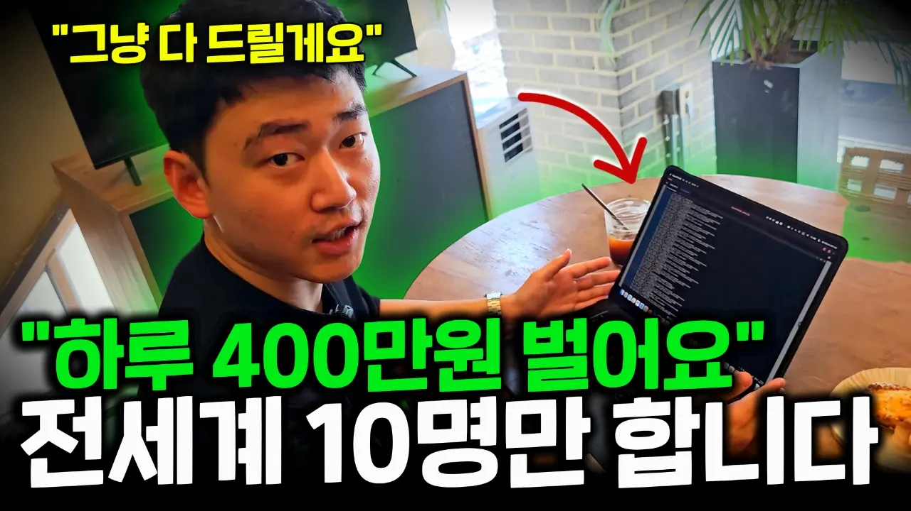
하루에 30분 일하면서 , 회사원 연봉 한번 더 벌어가는 30대 남자의 비밀 부업 추천 ▶하루에 30분 일하면서 , 회사원 연봉 한번 더 벌어가는 30대 남자의 비밀 부업 추천
'싹 다 가져다 팔면 월 300~1천' + 마진 20% + '온라인이 10% 더 쌈' + '안 팔리면? 재고 0, 선입금' + '무신사가 포장·발송'
심리메커니즘 + 리스크 반박 연타
'대기업이 광고' + '클릭 두 번 등록' + '하루 30분' + '연봉 30배' + '내 방법은 10명도 안 함'
심리노력 최소화 + 희소
'2주만 해보면 인생 달라질 수도' + '무신사 쇼핑하며 연봉 한 번 더 버는 뮤트' → '연봉만큼요?'
심리기간 한정 실행 + 정체성 되묻기
'저도 부업 영상 사기라 생각했는데 한 달 만에 확신' + 자본 50만 + '다른 유튜브에서 본 적 없는 방법'
심리의심 고백 + 무자본 + 희소
PD '프로그램 같이 받아갈 수 있을까요? 한 달 20만원 비싸지 않아요?' → '무료 체험 끼워드림'
몽타주(300~1천·20%·재고 0·클릭 2번·30분·10명) + 정체성 + 사기 고백 + 50만
'싹 다 사서 판다고? 안 팔리면?' → 선입금 후 구매 + CS 무신사 + 개인이 무신사 제품 팔아도?
광고비 0(대기업이 광고) + 택배 없음 + 집 컴퓨터 1대 + 마진 20% + 온라인 10% 저렴(45,900 vs 32,900)
'수백만 개를 어떻게?' → 프로그램 + 카페 이동 + 일주일 매출 500·800·550 + 하루 1~2천 + 마진계산기
한 계정 하루 순익 200 → 3~450 '거짓말 같죠?' + URL 복사→수집 1초→마켓 전송 클릭
만 개·2만 개 등록 + 하루 30분 + '3천만 명이 쇼핑' + 브랜드 링킹 프로그램
1차 CTA(무료 체험) + '무신사 제재 없나?' → 수천만원 결제해도 OK + '왜 비싸게 사나?' 편의점 물 비유
리뷰 280만·쿠폰 300장 추가 마진 + 운송장 200~300건 자동 입력 프로그램 24시간
'오늘 저녁부터 매출' + PD 선정 1명 매출 복사 3~5천 약속 + 계절·옷 한정 아님(트레이·식탁·컵)
구매대행·위탁·명품 다 해봄 → 이게 최고 + 연봉 30배·200만 못 벌던 때 + '10명도 안 함' + 전자책·1:1 카톡 + '2주만'
Q안 팔리면 어떡해요?
A재고를 전혀 두지 않고 고객에게 돈을 먼저 받은 뒤 판매하며, 포장·발송도 무신사가 처리하는 무재고·무자본 구조라고 답함.
Q하루에 몇 시간 정도 일하세요?
A하루 30분 정도만 일하며, 전 직장 연봉과 비교하면 약 30배 차이가 난다고 답함.
Q연봉만큼요?
A유튜브 부업 영상을 사기로 여겼지만 직접 해보니 한두 달 만에 확신이 생겨 PD를 초대하게 됐다고 답함.
Q처음 시작할 때 자본금은?
A신용카드 한 장, 약 50만 원으로 시작해 한 달 만에 300만~500만 원 매출이 났고 누구나 가능하다고 답함.
Q그럼 CS나 이런 건 따로 없을까요?
A무신사 시스템이 CS를 전부 처리해 할 일이 없고, 나이키·아디다스 등이 수억씩 광고비를 써주니 콩고물만 받으면 된다고 답함.
Q광고비 안 쓰시나요?
A광고비는 한 푼도 안 쓰고 브랜드 대기업이 대신 광고하며, 주문이 오면 무신사가 발송하니 집에서 컴퓨터 하나로 끝낸다고 답함.
Q하루에 2천만원이요?
A적게는 하루 1천만~1,500만 원이며, 판매가와 원가만 넣으면 세금·배송비 뺀 순마진이 나오는 자체 마진 계산기로 가격을 정한다고 답함.
Q거짓말 같으시죠? (출연자 선제)
A계정마다 100만~300만 원씩 매출이 찍히고, 무신사 주소를 복사해 프로그램에 붙여넣으면 1초 만에 상품 정보가 수집된다고 답함.
Q한 달 20만원이요? 너무 비싸지 않아요?
A비싼 건 맞지만 프로그램 사용에 필수이니 시청자에게 무료 체험을 끼워주겠다고 답함.
Q무신사 쪽에서 조치 같은 거 없나요?
A제재는 전혀 없으며 수천~수억 원씩 반복 결제해도 문제없는 게 반증이고, 한 달 신발 수백~수천 족 팔아주니 무신사도 좋아한다고 답함.
Q편의점에서도 물 사드시죠? 더 비싼 거 모르시나요?
A편의점 물처럼 가격 차이일 뿐, 카드 혜택·네이버 포인트 등 다양한 이유로 비싸게 사는 고객이 있고 적립금도 2~10% 쌓인다고 답함.
Q똑같은 매출을 (시청자가) 할 수 있는 건가요? 한 달이요?
A옆에서 강제로 알려주면 오늘 저녁부터 매출이 나며, 오픈채팅방 추첨자 1명을 직접 만나 한 달 3천만~5천만 원 수익을 계정에 복사해주겠다고 답함.
오픈채팅방 들어오셔서 댓글 남기시면 전자책(사업자 등록·실무·1:1 카톡 링크) 전부
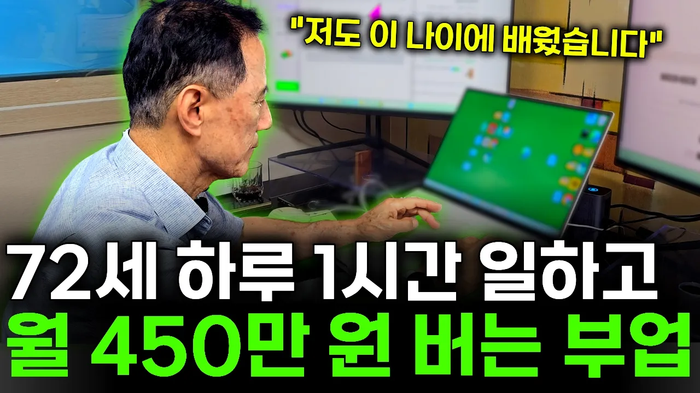
NEW쓰리스타 장군에서 온라인 셀러로, 71세에 시작한 월 매출 3300 부업 ▶쓰리스타 장군에서 온라인 셀러로, 71세에 시작한 월 매출 3300 부업
월별 매출 캡처(1월 9,700→4,600→4,200)와 PD의 '순수익 벌써 450만 원' 계산 멘트 + 주인공 '하루 3~40건은 한 시간 내로 끝낸다' + '나이는 상관없다, 마인드 열정만 있으면'
심리숫자 앵커링 + 노동시간 축소로 '적게 일하고 많이 번다' 즉시 각인, 나이 변명 사전 봉쇄
벽에 걸린 약장·보국훈장·국선장 설명, '쓰리스타예요' 자막
심리군 최고위 권위로 신뢰 이식, '사기꾼 아님' 보증
주문 1건 마진 계산 시연 예고(발주 24,500 / 고객 결제 9만 / 정산 79,900 / 순익 15,000) + '은퇴 후 할 게 없으면 도전해볼 만하다' + '100만 원 버는 건 어렵지 않다'
심리구체 단가로 사업 구조 이해시키고, 목표 금액을 시청자 눈높이(100만 원)로 낮춰 진입장벽 해체
본편 시작: PD가 사무실 입장, 벽의 계급장 발견 → '육군 40년', '별 세 개인 거죠?' 되묻기
심리티저 후 현장 프레임 전환, 발견형 연출로 권위를 PD가 '확인'해주는 구도
훈장 하나씩 설명 요청(약장·국선장·대통령표창·육군 상징) + PD '엄청 대단한 분이셨네요'
심리존경 감정 유도 + '이런 분이 하는 부업'이라는 후광 효과
'지금 뭐 하고 계셨어요?' → 퇴근 후 주문 처리 중, '부업이죠' 확인 + PD '72세 어르신이 온라인 사업이라니 믿기지 않는다'
심리부업 정체성 확정 + PD가 시청자 대신 불신을 표명해 다음 구간 검증 기대감 생성
'특별한 방법 있나?'에 '영상 끝까지 보시면 그 방법 다 설명드리겠다'(이탈 방지용 예고 CTA, 실제 리드마그넷은 9:55 프로그램 2주 체험·12:15 49만 원 책 무료)
1/10 매출 캡처·순익 450 티저 + 훈장 벽 권위 세팅 + 마진 15,000원 계산 예고 + 사무실 입장·별 세 개 확인
2/10 퇴근 후 부업 확인 + PD '72세 믿기지 않는다' 의심 대변 + 계기: 연금 있어도 시간·의미 공허→유튜브 보고 쇼핑몰 도전 + 독학 실패 후 정윤진 대표 프로그램으로 쉬워짐 + '나이 상관없다'
3/10 대표 진행 '다마고질' 챌린지 기간 9,700 피크 → 혼자 4,600·4,200 하락 → 7월 새 방식으로 3,300 + '방법은 끝까지 보면 설명' 예고 CTA + 순익률 15% 문답 + '꿈은 이루어진다' 마인드
4/10 주문 화면 공개(냉장고 부품·리모컨·청소기 솔 등 소모품이 잘 팔림) + 무재고 확인('제품 어디 있습니까?') + 반품도 원발주사로 직행하니 CS 부담 없음
5/10 PD '그래서 뭘 해서 어떻게 버냐' 시청자 의문 대변 + 주문 처리 실시간 시연: 원문 링크→발주사→옵션 필터 3개→주소 입력→64,500원 결제 + '1분 만에 15,000원 번 거예요?'
6/10 상품 소싱 시연: 패션플러스 인기상품 URL 복사→상품 데이터 수집→자동 저장 + 금지어(브랜드·지재권) 자동 필터 '대박이다' + PD가 시청자용 프로그램 부탁 → 고정댓글 2주 체험 CTA
7/10 '어차피 할 사람만 한다' 역심리 + 수집 상품을 옥션·지마켓·11번가·스마트스토어·쿠팡·롯데온 동시 등록 시연(자동 로그인·전송) + '컴퓨터 전공 아니죠?' 비전문가 강조
8/10 700페이지 가이드북 첫 대면 '독학 때 애먹은 게 다 있다, 왜 진작 안 만드셨냐' + 49만 원 책 고정댓글 무료 CTA + 본인은 사양하고 '새로 시작하는 분께' + 산책 인서트로 여유로운 삶 연출
9/10 '은퇴 후 할 게 없으면 도전해볼 만하다' 추천 + 자본 의심('돈 많이 드는 업종 아니냐')→카드 대금 여유만 있으면 됨 + 장애인 시설 운영·수익으로 피자·치킨 사주고 싶다는 동기 고백
10/10 '수강생 최고령 63세 기록 깸' + '나이 많아 못 한다는 건 변명' + 장군 시절 예비군 훈련 직접 체험 사진 + 시청자 페르소나(월 50~100만 원) 조언: '그 정도는 웬만하면 가능, 밑져야 본전, 아무것도 안 하면 아무 일도 안 일어난다'
Q지금 제가 보고 있는 게 계급이 맞나요? 이게 별 세 개인 거죠? 쓰리스타예요?
A네, 별 세 개 쓰리스타가 맞다고 확인하며 가슴에 단 약장·보국훈장·대통령표창 마크를 설명함.
Q달려 있는 게 되게 많은데 설명 간단하게만 해주실 수 있나요?
A받은 표창·훈장의 약장, 두 번째로 높은 보국훈장 국선장, 대통령 표창 표시, 육군 상징 마크라고 설명함.
Q지금은 뭐 하고 계셨어요? 퇴근하고 하셨다는 말은 이걸 부업으로 하고 계시다는 얘기예요?
A퇴근 후 오늘 들어온 주문을 처리 중이며, 낮엔 출근하고 퇴근하면 인터넷몰을 하는 부업이 맞다고 답함.
Q72세 어르신인데 온라인 사업을 한다니 믿기지가 않거든요. 처음부터 쉽지는 않으셨을 것 같은데.
A쉽지 않기 때문에 오히려 도전해보겠다고 마음먹은 것이라고 답함.
Q군에 40년 계셨으면 연금도 잘 나올 텐데 어떻게 도전하게 되신 거예요?
A돈보다 퇴근 후 남는 시간이 문제였고, 운동·취미클럽은 일시적이라 유튜브를 보다 쇼핑몰이 의미 있겠다 싶어 도전함.
Q나이는 전혀 상관없나요? 몇 시간 정도나 하고 계시는 거예요?
A나이는 상관없고 마인드와 열정만 있으면 되며, 하루 30~40건 주문 처리는 1시간 안에 끝난다고 답함.
Q온라인 상품 판매에 대표님만의 특별한 방법이 있는 거예요?
A특별한 방법은 영상 끝까지 보면 다 설명하겠다며 답을 뒤로 미룸(끝까지 보게 하는 후킹).
Q이번 달 3천만 원이면 순수익이 어느 정도 나오는 거예요?
A순수익은 평균 15% 정도라 이달 3천만 원 매출이면 이미 450만 원이고, 1월엔 9,400만 원 매출도 있었다고 답함.
Q직접 물건 사놓고 집에 쌓아두고 판매하시는 거예요? 제품 어디 있습니까?
A전혀 필요 없고 주문이 오면 발주사에 주문해 고객에게 바로 보내는 무재고 방식이라 창고도 필요 없다고 답함.
Q온라인 쇼핑몰이 힘든 건 CS·반품 아닌가요?
A반품은 원 발주사로 바로 가므로 컴퓨터에서 반품 처리만 클릭하면 되고 직접 손댈 필요가 없다고 답함.
Q시청자분들은 '그래서 뭘 해서 어떻게 돈을 번다는 거야' 궁금해하실 텐데 과정을 처음부터 보여주실 수 있을까요?
A프로그램에서 주문 확인 후 원문 링크로 발주사에 들어가 필터 3개를 고객 주소로 64,500원에 결제하는 과정을 시연함.
Q저희 시청자분들도 이 프로그램 쓸 수 있게 정 대표님한테 한번 말씀해주세요.
A정윤진 대표가 오픈채팅 참여자에게 2주 무료 이용권을 주겠다고 하며, 어차피 할 사람만 한다고 덧붙임.
Q시작할 때 돈이 많이 들어가는 업종 아니에요?
A돈 들어갈 게 없고 카드로 결제하니 카드 대금 낼 여유만 있으면 되므로 자본이 필요 없다고 답함.
Q저희 시청자 대부분은 부업으로 월 50만 원, 100만 원만 더 벌어도 숨통 트이겠다는 분들인데 조언 있으시면?
A월 50~100만 원은 어렵지 않으며, 아무것도 안 하면 아무 일도 안 일어나니 나이·돈 핑계 말고 뭐라도 하라고 조언함.
클로징 구간에는 별도 링크 CTA 없이 마인드셋 호소로 마감. 실질 CTA는 본편 중반의 고정댓글 2줄(9:55 자동화 프로그램 2주 무료 체험, 12:15 700페이지 49만 원 가이드북 무료 제공)
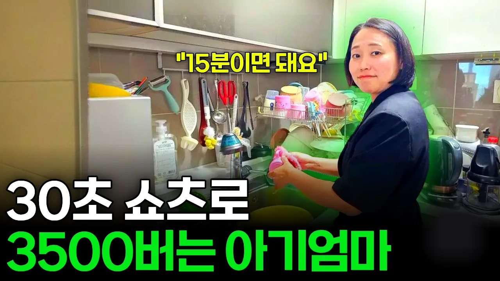
NEW"남편이 집안일 해요" 30초 쇼츠로 3500 버는 아기엄마 ▶"남편이 집안일 해요" 30초 쇼츠로 3500 버는 아기엄마
하이라이트 콜드오픈: 700만 뷰 영상 하나로 80만 원, 2.4억 뷰로 2,900만 원, '세 번째 달에 딱 1천만 원' 수익 증언을 화면과 함께 연타
심리숫자 폭격으로 3초 안에 이탈 차단, '증거 화면'을 먼저 보여 뻥이 아님을 각인
65세 수강생 월 450 사례 + 코로나로 실직·배달 알바 전사 + '틈새시장 꿀단지' 발언 + '어떻게 시작?' 질문 예고 몽타주
심리노인도 된다(난이도 하향) + 밑바닥 출발 서사(동일시) + 본편 볼 이유(궁금증) 동시 심기
'예상하셨어요?' → '하루 50만 원씩 찍히니 진짜 돈 되는구나', '마음의 여유→집에서도 자신감' 예고
심리돈 이상의 감정 보상(가정 내 자신감)을 예고해 여성 시청자의 정서적 니즈 자극
아기 등원시키고 온 출연자와 실제 만남 → 자기소개 '쌍둥이 키우며 저만의 특별한 방법으로 월천 버는 40대 아이 엄마'
심리육아 현장 리얼리티 프레임 + 페르소나 호명으로 '나와 같은 처지' 동일시
PD '무슨 30초짜리 영상에서 천만 원이 나와요, 뻥치는 거 아니에요?' → '차근차근 알려드릴게요, 따라와 보세요'
심리PD가 시청자 의심을 대신 발화해 방어심리 해소, '따라와 보세요'로 시청 계약 체결
'등원·육아하며 가능?' → 하루 2~3시간만 일한다 + '내가 자는 동안 유튜브가 밤새 돈 버는 사기적 구조' 설명
심리시간 장벽 제거 + 패시브 인컴 환상 심기, 아이템의 구조적 우위를 초반에 각인
해외 예능 쇼츠 소재 찾는 법이 상세히 적힌 자료 → 댓글 링크 단톡방 들어오신 분께 드림
1/10 하이라이트 콜드오픈(700만 뷰=80만 원·월천·65세 수강생) + 등원 후 만남·자기소개 + PD '뻥 아니에요?' 의심 + 하루 2~3시간·자는 동안 벌리는 구조
2/10 사무실 이동 + 쌍둥이 4살·집에선 살림에 밀려 사무실 얻은 이유 + 남편 반응 + 하루 루틴(업로드→자유시간→하원) + '편집 쉽게 하는 프로그램 만들어놨다' 예고 + '일한다면서 왜 넷플릭스?' 반전(해외 예능 시청이 곧 일)
3/10 프로그램 없던 초기 '하루 종일 노가다' 고생담 → 자동화 프로그램 개발 계기 + 수익 타임라인(1달 수익창출→2달 500→3달 1천) + 구독자 4.5만에서 3천 가능 = 쇼츠는 구독자 무관·알고리즘 노출 + '저만의 비법' 시연 예고
4/10 일본 시청자 타깃 몰래카메라 예능 예시('이게 핵심') + 저작권 반론(방송사가 230개국 언어로 추적 안 함) + AI 영상 채널 날아간 경험 vs 이 포맷은 유튜브가 좋아하는 바이럴 원조라는 논리
5/10 프로그램 실시간 시연: 유튜브 스크립트 추출→영어·한국어 받아쓰기→한국 쇼츠 스타일 변환→일본어 번역 버튼 한 번(약 2분) + TTS(보이스복스, OpenAI·일레븐랩스도 가능)로 일본어 나레이션 생성
6/10 원본에서 핵심 키워드 자동 추출 + 음성 삽입 + '컷 편집' 버튼 한 번에 자동 편집 → 안마의자에서 쉬는 동안 완성 + 과거 영어 듣기평가식 수작업 고생담 → 자동화 필요성 + 일반 영상도 쇼츠화 가능
7/10 대본 5개씩 자동 생성·수정 + 음성 생성 + 캡컷 자동 실행 + 사전 설정 틀로 제목·캡션·검정 테두리 배치 + 얼굴 확대 후터치 = 초보자도 편집 완료 + '왕초보는 조회수 나올 영상 찾기 힘들다' 질문으로 전환
8/10 채널명·채널아트·캐릭터까지 자동 생성 + 【첫 CTA】소재 찾는 법 자료를 단톡방 입장자에게 제공 + '나이 많으면 어렵지 않나' → 65세 캐나다 수강생(복붙도 못 했는데 영상 제작 중) + 지인 최고 월 450
9/10 편집 15~20분, 기획·소재 선정이 핵심 + 퇴근 후 집으로 이동('아기 엄마로 다시 출근') + 빨래·청소·밥 준비 현장 + 시작 계기: 강사→코로나 실직→쿠팡파트너스·배달→임신·출산→창업 강의·제안서 200개·공장 소싱 고생 대비 수익 미미
10/10 경단녀 복귀의 어려움 + 플렉스(친정엄마 김치냉장고) + 【최종 CTA】노하우 전자책을 단톡방 입장자에게 택배 발송 + '끝물·레드오션' 반론(끝물이면 3개월 만에 1천 되겠나) + 두려움이 시작 못 하는 이유 + 장점(컴퓨터만 있으면, 부대비용 0) + 추천 대상·초보 유의점(데이터가 증명하는 영상) + 전후 변화(경제적 여유→자신감→부부관계)
Q월급이 1천만 원이신 거예요? 도대체 어떤 일 하시길래?
A30초 정도 영상을 '저만의 특별한 방법'으로 편집해 월급 이상을 매달 내고 있다고 답하며 방법은 뒤에서 차근차근 공개하겠다고 유보.
Q무슨 30초짜리 영상에서 천만 원이 나와요, 뻥치는 거 아니에요?
A아니라며 '어떻게 하는지 방법을 알려드릴 테니 따라와 보라'고 시청 계약을 유도하고 하루 2~3시간 투입으로 가능하다고 덧붙임.
Q아기 등원·육아까지 하면서 할 수 있는 일인가요?
A하루 2~3시간만 쓰며, 유튜브는 밤새 노출되므로 자는 동안에도 돈이 벌리는 '사기적 구조'라고 설명.
Q사무실을 따로 얻으신 이유가 있을까요? 남편분은 뭐라고 안 하세요?
A집에선 청소·설거지에 자꾸 밀려 '나만의 아지트'가 꿈이었고, 남편은 잘 버니 하고 싶은 대로 하라고 자유롭게 둔다며 웃음.
Q일하신다면서 왜 넷플릭스를 보고 계세요?
A노는 게 아니라 일이라며, 요즘 해외에서 핫한 예능을 보고 쇼츠 소재를 찾는 과정 자체가 업무라고 반전 설명.
Q대표님 그럼 얼마만에 수익이 나신 거예요?
A한 달 만에 수익 창출, 두 번째 달 500만 원, 세 번째 달에 딱 1천만 원을 찍었다고 타임라인으로 답변.
Q월천 찍으셨다는데 구독자 수가 몇 명이나 되는 거예요?
A4.5만 구독자로도 3천만 원 가능하다며, 쇼츠는 구독자보다 알고리즘에 맞는 영상이 넘기다 노출되는 구조라 구독자 수는 무관하다고 논리 제시.
Q저런 영상 올리면 저작권 문제는 따로 없어요?
A해외 예능 쇼츠는 방송사가 230개국 언어로 번역해 추적할 열정도 유튜브 이해도도 없어 실제로 저작권을 잡지 않는다고 주장.
QAI 영상이라고 유튜브가 싫어하거나 그러진 않나요?
AAI 채널이 허위 콘텐츠로 날아간 경험은 있지만, 쇼츠는 틱톡·인스타 대항용이라 이런 바이럴 영상이 유튜브의 '조강지처'라 결이 다르다고 답함.
Q이렇게 하면 총 얼마 정도 시간이 걸리는 거예요?
A번역 대본까지 약 2분이면 끝나고, 일본어를 못 해도 TTS(보이스복스)로 나레이션까지 버튼 한 번에 생성된다고 시연.
Q해외 예능 쇼츠 소재 찾는 법 구체적으로 궁금하신 분들 있죠?
A어떤 걸 어떻게 찾는지 상세히 적힌 자료를 댓글 링크 단톡방에 들어오신 분들께 드리도록 돕겠다고 첫 리드마그넷 제시.
Q자꾸 프로그램 쓰시는데 나이 많으신 분들은 일하기 어렵지 않을까요?
A복사·붙여넣기도 사진 찍어 물어보던 65세 캐나다 수강생이 지금 영상을 만들고 있다며 컴맹도 가능하다고 사례로 반박.
Q이런 거 끝물이다, 레드오션이다 말 많잖아요. 어떻게 생각하세요?
A끝물인 시장에서 3개월 만에 1천을 벌 수 있겠냐고 되물으며, 그렇게 말하며 안 하는 사람들 덕분에 자기가 꿀 빨고 있다고 답함.
제 노하우를 모두 담은 전자책, 다 드릴 순 없고 댓글 링크 단톡방 들어오시는 분들께 택배로 보내 드리겠다
조회수 상위 12편. 제목을 누르면 6개 항목 분석이 펼쳐지고, 모든 시점은 유튜브 해당 장면으로 연결됩니다.
돈터치 계열과 달리 텍스트가 '상단' 2줄(흰색+노랑)이고 작은 인용 말풍선·빨간 화살표가 거의 없음. 인물이 실제 작업 장면(모니터 가리킴, 편집 화면 앞, 고무장갑 끼고 창고, 강아지 안고 사무실, 바닥에 노트북)에서 자연광으로 찍힘 → '연출 아닌 일상' 느낌. 사물 앵커(낙서 종이·고무장갑·당근 로고·창고 선반)를 손에 들거나 배경으로 배치. 나이·가족(67년생 엄마+20대 아들, 91년생, 00년생, 31살)을 텍스트로 넣어 '나이 대비 결과' 대비.
돈터치 계열보다 따옴표 인용이 적고(7편 중 2편) '상황+행위+결과+인물' 평서문이 주류. 시간 최소화 단서가 거의 매 제목에(하루 30분·하루 20분·퇴근하고·방구석에서). 숫자는 '순수익' 명시(월 순수익 1억·순수익 1억)로 매출 과장 프레임을 피함. 나이+연생(48살·00년생·96년생·91년생·40대 주부)으로 페르소나 지정.
0:00–1:00 몽타주는 같지만 구성 요소가 다름: ①'하루 10분/30분' 노력 최소화 ②PD 되묻기 '거짓말 아니죠?' ③매출 화면 ④고통 한 컷(빚 7억·공황장애·교통사고·집안 사기) ⑤'왜 사람들이 안 하나 → 어렵다고 생각해서' 역심리. 이 채널만의 훅: **'촬영 끝날 때 매출이 얼마 올랐는지 보여드릴게요'(라이브 매출 실험)**와 **'영상 끝까지 보면 돈 되는 키워드 공개'**로 시청 유지. 1:00 '안녕하세요 → 들어오자마자 질문: 뭐 하시는 분이세요?' 캐주얼 진입.
1/10 몽타주+정체성+라이브 실험 예고 → 2/10 증거 화면(하루 매출·계정별)+메커니즘 비유(대기업이 광고, 나는 판다) → 3/10 마진 구조+'하루 10분' 루틴(집·강아지·바다 뷰) → 4/10 물류 대행·자유(차·여행지 근무) → 5~6/10 소싱·리서치 도구 시연(홈쇼핑모아·쿠팡윙·1688·프로그램) + 1차 CTA(댓글+구독 → 자료) → 7/10 상세페이지·AI 시연 → 8/10 수강생 사례(67세·80대·45세 주부)+2차 CTA(가이드북) → 9/10 왜 시작했나(고통 서사 풀)+가족(아내 빚 2억·부모 BMW) → 10/10 조언+**'영상 끝나자마자 할 미션 1가지'**+라이브 매출 결과 공개.
돈터치 계열과 같은 의심 대변형이 기본이지만 톤이 더 캐주얼·유머("거짓말 치시면 안 돼요?", "자랑해도 될까요?", "너무 대충하시는 거 아니에요?", "뻥치는 거 아니에요?"). 특징 3가지: ①숫자 되묻기 연타("27살이요? 빵빵이에요? 14억이요?") ②시청자 대리 무지 선언("제가 쿠팡 판매 안 해봐서 모르겠거든요") ③**클로징 고정 질문 '영상 끝나자마자 실천할 미션 하나만 주세요'**. PD가 '꿈꾸사 구독자'를 직접 호명하며 자료 협상.
①고통→가족 감정(아내가 빚 대신 갚아줌, 부모님 BMW·금·명품백, 할머니) ②수강생 다중 사례(친누나 5천·80대 100만·45세 주부 540만) ③'왜 알려주나' 대신 '나도 50~100만 벌려고 시작' 동일시 ④조언 격언('아무것도 하지 않으면…', '최선 다하면 굶어 죽지 않는다') ⑤**실행 미션 1개**(쿠팡 켜서 카테고리 보기, 위탁방 1개 들어가기, 유튜브 등록 영상 3개 보기) ⑥라이브 매출 결과(440만→600~700 예상) ⑦CTA는 '댓글+구독+정성 후기 10명 책 배송' — 단톡방보다 댓글 참여 유도.
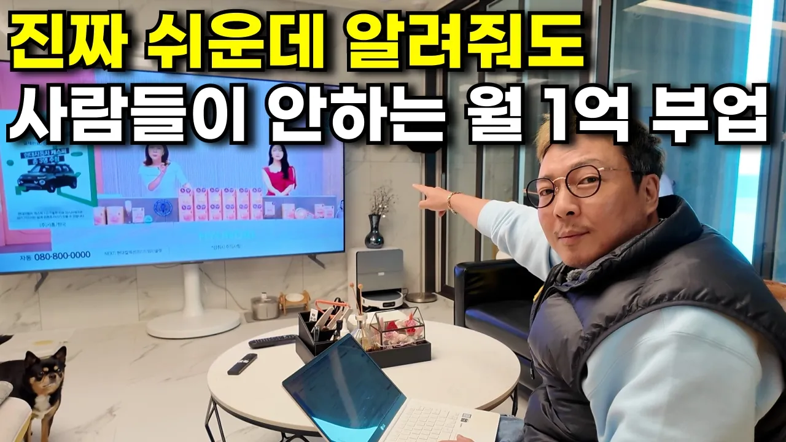
45살에 시작한 부업으로 한달에 순수익 1억, 인생역전한 48살 대표님 ▶45살에 시작한 부업으로 한달에 순수익 1억, 인생역전한 48살 대표님
'하루 10분' → PD '거짓말 치시면 안 돼요?' + '30~40만원이면 시작' + '대기업이 홈쇼핑 광고하면 내 매출 폭발'
심리노력·자본 최소화 + 메커니즘 티저
바다 뷰 집 → '비타민 판 돈으로' → '빚 7억, 숨 안 쉬어지고 공황장애' → 월매출 2억 5천·순익 1억
심리자산과 고통의 극단 대비
'왜 안 하나 → 10명 중 7~8명이 어렵다고 생각, 혼자 꿀 빨고 있다' → '들어오자마자 질문: 뭐 하시는 분?'
심리역심리 + 캐주얼 진입
'쿠팡 건강기능식품 셀러' + '왜 2시 35분에 촬영? 촬영 끝날 때 매출 변화 보세요'
심리라이브 실험 훅(시청 유지)
PD '마진 계산기 시청자분들께 주신다고요?' → '구독·좋아요·댓글 달아주시는 분들께 특별히'
몽타주(10분·30만원·공황장애·순익 1억) + 정체성 + 라이브 매출 실험 예고
하루 매출 2,700만·860건 화면 + TV 홈쇼핑 비유(대기업이 광고, 나는 저렴하게 판다)
멜라토닌 원가 구조(50% 싸게 팔아도 마진 40~50%) + '하루 10분' + 안방 바다 뷰·캠핑 인테리어
3PL 물류 대행 = 엑셀 다운로드가 일의 전부 + '돈 벌면 기분?' + 아내 3천만원 백
홈쇼핑 편성표 미리 보기(홈쇼핑모아 앱) + 300초 방송 주기
쿠팡 판매량 분석 + 제조사 견적(100통 30~40만원)
마진계산기 시연(23,000 판매·3,500 원가 → 순익 13,300) + 1차 CTA
67세 컴맹 수강생 첫 달 2,100만 + 광고비 4만원에 580만 사례 + 쿠팡 등록 가이드
'귀찮아서 안 한다' + 허위광고 걱정 해소 + 헬스장 11년→코로나 7억 빚 서사
아내가 2억 대출 대신 + 조언('포기하지 말고') + 라이브 결과: 1시간 반 만에 +200만(440만)
Q거짓말 치시면 안 돼요?
A진짜라고 단언하며 시작은 30~40만 원이면 되고 현재 월매출 2억~2.5억에 순익 1억을 유지한다는 하이라이트로 답함.
Q그렇게 좋은데 사람들이 왜 안 하는 거예요?
A열 명 중 일곱~여덟 명이 어렵다는 허들 때문에 시도조차 안 해서 자기 혼자 꿀 빨고 있다고 답함.
Q들어오자마자 질문 드릴게요, 뭐 하시는 분이세요?
A쿠팡에서 비타민·오메가3 등 건강기능식품 카테고리를 판매하는 셀러 최대표라고 소개함.
Q이 시간에 꼭 맞춰서 촬영하자고 한 이유가?
A셀링의 킥포인트를 보여주려는 것이라며 지금 매출을 기억해 두고 촬영 끝에 변화를 보라 하고, 한 시간 만에 폭발적 성과도 난다고 답함.
Q대표님이 실제 운영하시는 사업자인가요? 860건이요?
A맞다며 세 사업자 합쳐 약 860건을 배송했고, 대기업이 홈쇼핑·TV로 홍보한 원료를 홍보비 없이 자기 브랜드로 판매한다고 설명함.
Q하루 10분이요? 실제 하루 루틴 보여주실 수 있어요?
A사업이라기보다 거의 놀팽이라며 바다 뷰가 보이는 안방을 보여주고, 이 집도 비타민 판매 수익으로 마련했다고 답함.
Q포장·배송 대표님이 하는 게 아니에요?
A3PL 물류센터에 제품을 맡겨 주문정보 엑셀만 다운로드·복붙하면 포장·배송이 처리돼, 10분 일하고 나머진 강아지·유튜브를 본다고 답함.
Q돈 이렇게 많이 벌면 기분이 어때요?
A가격 안 보고 먹고 아내와 소고기도 편하게 먹으며, 결혼 10주년 크리스마스에 샤넬·셀린 등 가방 세 개 3천만 원어치를 선물했다고 답함.
Q홈쇼핑에서 뭘 판매할지 미리 알 수 있다고요?
A홈쇼핑모아 앱으로 일주일치 편성표를 미리 볼 수 있어 어떤 원료(예: 300초)가 언제·어느 주기로 방송되는지 확인한다고 답함.
Q제조하려면 몇 천만원 필요한 거 아니에요?
A원료별 단가 3,000~4,000원, 100통 기준 30~40만 원이면 소량 제조 가능하고, 본인도 500만 원으로 위탁판매부터 시작했다고 답함.
Q첫 달에요? 67세분이요?
A첫 달 매출 2,100만 원·수익률 40%로 순수익 약 800만 원이었고, 수강생도 광고비 4만3천 원·6천 원으로 하루 580만·725만 원 매출을 냈다고 답함.
Q시청자분들도 인생 바뀌면 좋겠는데 용기 되는 말씀?
A오프라인 사업으로 크게 망해 자금이 없어 소자본 온라인 사업을 택했고, 처음엔 안 돼도 꾸준히 방법을 찾으면 누구나 잘 된다는 말에 포기하지 않았다고 답함.
구독 좋아요 댓글 달아주시면 마진계산기·쿠팡 등록 가이드 드립니다 (단톡방 언급 없음)
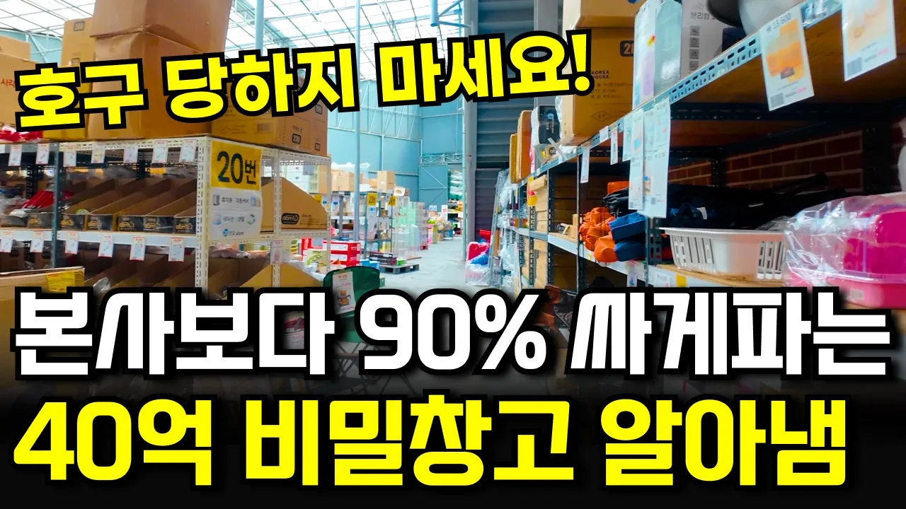
"전부다 속고있었습니다" 90% 싸게파는 미친 40억 비밀창고 ▶"전부다 속고있었습니다" 90% 싸게파는 미친 40억 비밀창고
'다 담아' + '990원 vs 최저가 7,450' + '40억 비밀창고 보여드리려고'
심리가격 격차 + 장소 예고
'1,100·880·660원' + '지난달 2억 9천, 순익 1억 구조' + 친누나 5천·80세 할머니 100만·45세 주부 540만
심리숫자 + 다층 사회적 증거
'4일 만에 198만' + PD '시골로 부르셨네' → '40억 비밀창고 보여드리려고 모셨다'
심리즉시성 + 장소 프레임
'아무도 몰라요, 알려주고 싶지 않은 루트' → '따라오세요' → 990원 실물 '이거 990원이에요?' + '이미 품절'
심리희소 + 현장 + 수요 증거
PD '오프라인·온라인 매장 어딘지 알려주시면?' → (비밀창고 리스트) + 17:07 '돈 되는 키워드 10개, 끝까지 시청하고 댓글 달아주신 분께'
몽타주(990원·2억 9천·누나·80대·45세) + 시골 프레임 + 창고 진입 990원 품절
드라이기 37만→5만 + '진짜 돈 되는 건 건강식품' + 최저가 5만 5천 vs 10배 싸게 + '끝까지 보면 탑시크릿 키워드'
만원어치 사서 팔아본 시작 + 온라인 비밀창고 + '커피 두 잔 값으로 시작' + 1차 CTA(리스트)
시작 계기: 아버지 사기·집안 불화 → 코인 2억 5천 벌고 다 잃음·카드론
건강식품 첫 달 1천 → 4개월 1억 → 퇴사 + 노트북 1대 + 유산균 월 2만 명 구매 시장
GPT로 대표 이미지 생성(1000px 정사각형) '한글 안 깨짐' 시연
GPT 상세페이지 8초 생성 + 쿠팡 등록 + '돈 되는 키워드가 핵심'
2차 CTA(키워드 10개 + 상품등록 가이드북 '원래 준비 안 됐는데 만들어드림')
검색수 대비 상품수 적은 키워드 = 노다지 + 건강식품 전용 마진계산기(부가세 포함)
친누나·80대·45세 주부 사례 재확인 + '50~100만 벌려고 시작' 동일시 + 3년 단골 + '통장이 더 건강해요'
Q80대인가요?
A80대 할머니 수강생이 한 달 만에 월 100만 원, 40대 주부는 3주에 540만 원, 신규 론칭 4일 만에 하루 200만 원 매출을 냈다고 답함.
Q도대체 어떤 비밀창고에서 돈을 번다는 거예요?
A아무도 모르는 루트로 창고에서 직접 구매해 온라인에 팔면 마진 구조가 미쳤다며 직접 따라오라고 안내함.
Q이게 990원이에요?
A인터넷 최저가 7,450원 제품이 990원, 제조 원가도 안 되는 가격이라 소비자들이 쓸어가 품절됐고 때타월은 400원·790원짜리도 있다고 답함.
Q(돈 되는 키워드) 그게 뭐죠?
A탑 시크릿 키워드라 영상 끝까지 보면 알려주겠다고 미루고, 최저가보다 비싸게 팔 수 있는 건강식품 카테고리가 돈이 된다고 강조함.
Q투자금이 어느 정도 들어갈까요?
A초보 시절 도매몰에서 만 원어치만 사서 올렸더니 팔렸고, 온라인 비밀 창고를 쓰면 하루 커피 두 잔 값이면 시작 가능하다고 답함.
Q사업자만 올 수 있을까요? 셀러들만 오는 데 아니에요?
A사업자 아닌 일반인도 도매가·제조 원가 수준으로 살 수 있으며 아는 사람만 오는 비밀 창고라 공개된 적 없다고 답함.
Q비트코인이요?
A직장 다니며 비트코인으로 2억 5천만 원까지 벌었지만 선물 거래로 다 잃고 빚 7천만 원에 화곡동 전세사기까지 당했다고 고백함.
Q그런데 이게 처음부터 잘 됐나요?
A첫 달 1천만 원, 둘째 달 2,500만 원, 셋째 달 7천만 원, 넷째 달 1억 매출을 찍고 22년 8월 퇴사했다고 답함.
Q이거 그냥 GPT 쓰기만 하면 이렇게 나온다는 거 아니에요?
A맞다며 GPT가 한글도 안 깨지고 사이즈까지 이해해 디자이너에게 몇만 원 주던 대표 이미지 비용과 시간을 아꼈다고 답함.
Q상품 올리는 방법도 정리해서 주시는 게 어떨까?
A원래 준비 안 됐지만 상품 등록 기초 가이드북을 직접 만들어 주겠다고 약속하고, 상품 선정은 네이버 아이템스카우트로 숫자를 본다고 답함.
Q친누나도 수익이 났나요? 5천만원이요?
A친누나는 올해 5천만 원 매출, 80대 할머니는 한 달 만에 월 100만 원, 40대 주부는 18일 만에 540만 원 매출이 났다고 답함.
Q용기 주는 말씀 한마디?
A처음엔 50만·100만 원 벌려던 일이 월 1억 순수익이 됐고, 3년 넘게 재구매되는 제품이 있어 주부·은퇴자에게 이만한 카테고리가 없다고 답함.
끝까지 시청하고 댓글 달아주시는 분께 돈 되는 키워드 10개 + 비밀창고 리스트 + 등록 가이드북
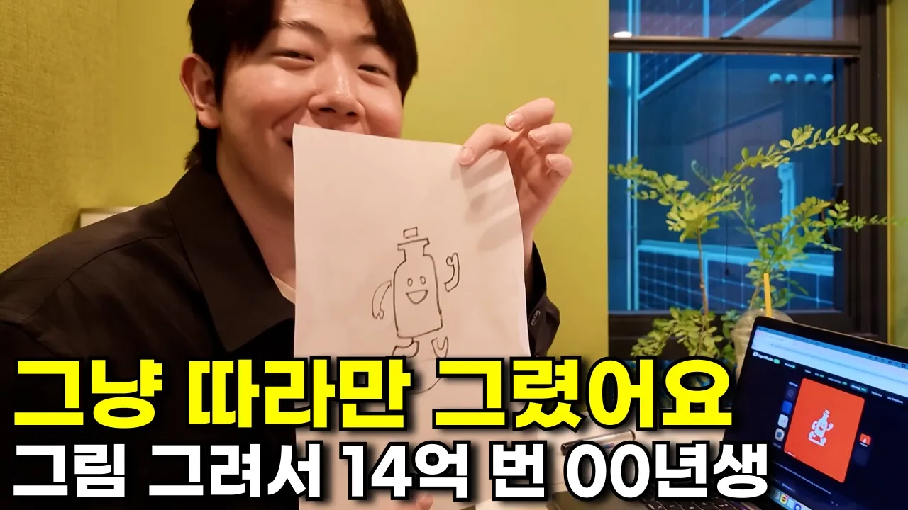
공책에 대충 그린 낙서 1개당 150만원에 팔아서 14억 번 00년생의 하루 ▶공책에 대충 그린 낙서 1개당 150만원에 팔아서 14억 번 00년생의 하루
'낙서 다듬어 파는 일' + 손그림→AI 변환 + '100~150만, 최고 2,200만'
심리메커니즘 + 단가
'등록금 없어 대학 중퇴' + '교통사고 입원 중 노트북으로 시작 → 퇴원 시 하루 70만'
심리고통 + 시작 서사
'한 달 2~3천 약속 못 해요' + '하나 30분, 하루 2개 = 10만원, 월 225만'
심리정직한 기대치 설정(역설적 신뢰)
'27살 디자인 사업 돌린' → PD '27살이요? 빵빵이에요?' → 강남 사무실 → '크몽 전체 매출 1등, 14억' → PD '1억 4천도 아니고 14억?'
심리되묻기 연타 + 권위(플랫폼 1등)
PD '꿈꾸는사람들 구독자들한테만 (프롬프트) 알려주면 안 될까요?' → '댓글에 프롬프트로 남겨주신 분께만 따로'
몽타주(낙서·150만·중퇴·입원·225만 계산) + 정체성 + 강남 사무실 + 14억
크몽 1등 화면(2등 9억) + '로고 디자인' 정의 + '디자이너만?' → 누구나 + 손그림→AI 시연
확장(인쇄물·간판) + 정직한 수익 계산(월 225만) + '과장하기 싫어서 30분'
딸기라떼 그림 + 마우스로 그림판 + '아랍어과 출신, 미술 싫어했다' + 1분 만에 생성
프롬프트 원리(첫·끝 단어 반복) + 1차 CTA(댓글 프롬프트) + 결과물 시연
쿠키에 로고 합성(목업) 시연 30초
이미지 vs 벡터(일러스트레이터 파일) 문제 → AI가 자동 변환 '국내에서 알려준 사람 없다'
크몽 진입법(신규 상위 노출 알고리즘) + 리뷰 12개가 맨 위
6개월 만에 월 5천 + 친구들 테스트 월 1천 + 2차 CTA('정성스럽게 댓글 단 분 선별')
공무원 꿈·부모 60세·중퇴 + 샌드위치 자판기·심리상담 실패 + 교통사고 → '최선 다하면 굶어 죽지 않는다'
Q27살이요? 나이가 되게 어리신데요? 빵빵이에요?
A00년생 빵빵이 맞다고 하고, 강남역에 사무실이 있다며 소소하게 만족스럽게 벌고 있다고 답함.
Q자랑해도 될까요? 자랑 부탁드려야 될까요?
A크몽 프리랜서 플랫폼에서 전 분야를 통틀어 매출 1등이며, 약 14억(13억 8천만 원)을 벌었다고 답함.
Q1억 4천도 아니고 14억이요?
A이런 간단한 낙서 같은 걸로 벌었다며, 지금은 안 믿을 테니 사무실에 가서 직접 보여주겠다고 답함.
Q증명해 주실 수 있나요?
A크몽 매출 순위 화면의 '그리다' 프로필 13억 6,100만 원을 보여주며 2등 9억·3등 8억 7천과의 격차를 강조함.
Q이거 디자이너만 할 수 있는 거 아니에요?
A옛날엔 그랬지만 지금은 마우스·키보드만 쓸 줄 알면 되고, 똥손 손그림도 AI가 로고로 바꿔준다고 답함.
Q(초보가) 어느 정도는 벌 수 있을까요?
A훨씬 많이 벌 수 있다며 최저 13만 원·중간 상품 25만 원 예시를 들고, 월 2~3천은 약속 못 해도 하루 5만 원 더 벌기를 말함.
Q한 20분 걸리지 않을까요? → 1분
A1분 걸린다며 30분은 보수적으로 말한 것이고, 시안 4개를 한 번에 61초 만에 만들어준다고 답함.
Q이거 근데 팔릴까요? 5만원 충분히 팔린다고요?
A5만 원이면 충분히 팔리는 '혜자'라며, 손그림 없이 글(프롬프트)만으로도 캐릭터를 만들 수 있다고 답함.
Q꿈꾸는사람들 구독자들한테만 알려주면 안 될까요?
A프롬프트는 비법이라 전체 공개는 못 하지만, 댓글에 '프롬프트'라고 남긴 분들께만 따로 보내주겠다고 답함.
Q그 방법 우리 시청자도 할 수 있게 자료 주기만 하면?
A크몽 수수료 20% 빼면 80% 마진이고 6개월 만에 월 5천만 원 달성했으며, 친구들에게 방법을 알려주니 월 1천만 원 이상 번다고 답함.
Q처음에 로고를 어떻게 시작하게 되셨어요?
A20살에 샌드위치 자판기·인스타 심리상담 사업이 모두 실패하고 교통사고로 입원한 뒤 노트북 하나로 시작했다고 답함.
Q로고 부업으로 수익 내보고 싶은 분들께 마지막 한 말씀?
A최선을 다하면 굶어 죽지 않는다고 믿으며, 퇴근 후 한두 시간 더 일하면 노력의 보상은 언젠가 받는다고 답함.
댓글에 정성스럽게 남겨주신 분께 프롬프트·크몽 공식 자료 (PD가 선별 전달)
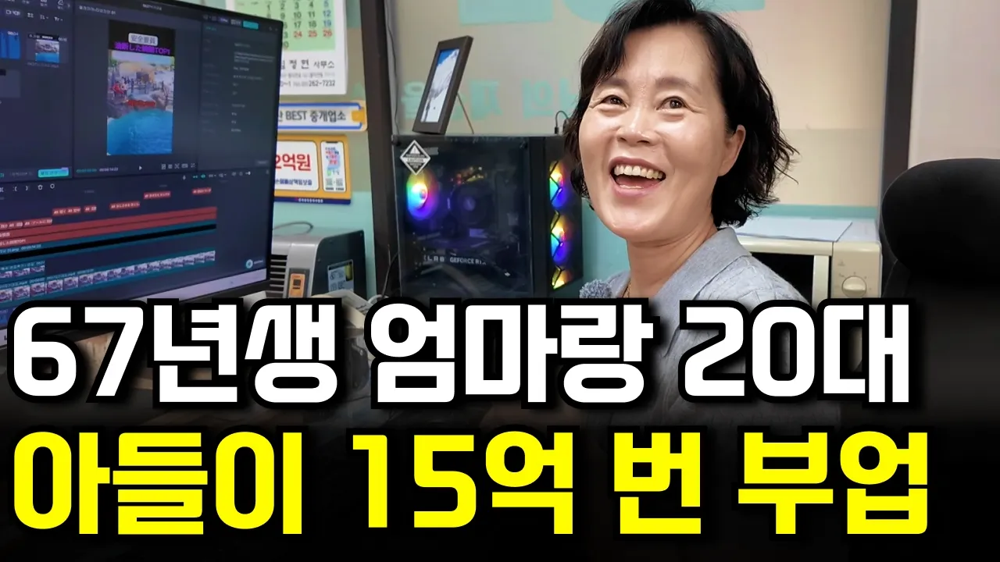
67년생 엄마도 월 300만원 벌어요! 전세계 1등 부업으로 15억 번 가족 ▶67년생 엄마도 월 300만원 벌어요! 전세계 1등 부업으로 15억 번 가족
'저번 달 2,810달러' + '어머님 67년생, 월 100~300 순수익' + '쇼츠 하나로 99만'
심리숫자 + 시니어 증거
'초보자도?' → 어머니: 'AI 몰랐고 독수리 타법인데 100·200·300' + '15~30분에 하나' + '15억'
심리자격 박탈 불가 + 노력 최소화
추리닝 차림 등장 '백수 아니시죠?' → '꼬치집 알바하다 쇼츠, 어머니도 수익화' + '차림 보면 안 믿기겠지만'
심리의외성 + 친근
'비밀 기지로' → 반지하 '여기라고요? 잘못 온 거 아닌가?'
심리반전 호기심(소박함 → 15억)
'쇼핑 쇼츠 하는 법 정리해서 댓글 달아주시면 글로벌하게 보내드리겠습니다'(세 번째 자료)
몽타주(달러·67년생·99만·15억) + 추리닝 자기소개 + 반지하 비밀기지
11억 8,500 집 전액 현금 매입 + '공간 제약 없는 부업' + 어머니 월 100~300 + '손 안 벌려 편하다'
월 3,300만 화면(거의 순익) + 사무실 이동·옷 갈아입기 + 배우 지망생→알바→간질 응급실 서사
쇼츠 원리: 완성된 해외 영상 + 자막 변형 → 1,624만·1,800만 조회 + '전 세계 인기 것을 놓기만'
유튜브 서머리 확장으로 대본 추출 → GPT 일본어 번역 1초컷 + 현지 감성
'이게 끝' + 자체 개발 프로그램: 4개국 동시 검색으로 터진 영상 발굴
3개월 조건 검색 → 474개 채널 발견 + '들 수 있고 누를 수 있으면' + 유튜브 쇼핑 보너스
3차 CTA + 어머니 인터뷰 검증 전화 + 차 + 공인중개사 불안정 수입 서사
어머니: 부동산 한가할 때 수익 높음 + AI 배움 + 14초 영상 직접 편집
어버이날 돈다발·금·BMW 풀옵션·루이비통 + 50대 후반 2달 1천·출산휴가 686만 + '일단 해봤다' + '저 믿고 실패해보세요'
Q그게 순수익인가요?
A순수익이며 쇼츠 하나로 99만 원, 4월 200만 원, 5월 133만 원 등 매달 100만 원 넘게 나온다고 답함.
Q초보자분들도 어머니처럼 할 수 있을까요?
A배우면 당연히 가능하다며, 시작할 때 AI도 몰랐고 나이도 많고 독수리 타법인데 지금은 100~300만 원 번다고 답함.
Q15분 만에 만든 영상이 몇백만원씩 수익이 나는 거예요?
A맞다고 하며 영상 하나에 30분, 빠르면 15분 걸리고 지금까지 쇼츠로 약 15억 원을 벌었다고 답함.
Q백수 아니시죠?
A백수였다가 지금은 나쁘지 않게 번다며, 99년생 꼬치집 알바 출신으로 쇼츠를 시작해 어머니까지 수익화시킨 박준휘라고 소개함.
Q여기가 비밀기지 맞아요? 잘못 온 거 아닌가?
A맞다며 반지하 원룸에서 노트북 꺼내 일한다고 하고, 쇼츠 수익으로 산 11억 8,500만 원짜리 집 등기를 보여줌.
Q대출 없이 전액 현금으로 샀다고요?
A15억 여유가 있어 현금으로 샀다며, 공간 제약 없는 부업이라 원룸에서도 충분히 수익 낼 수 있다고 설명함.
Q근데 그게 돈이 돼요?
A된다며 한국·일본·대만·스페인·프랑스 5개국에 쇼츠를 올려 16초 영상 200만 원, 19초 100만 원, 25초 66만 원 수익을 보여줌.
Q다른 나라에서 올리면 그게 터지나요?
A터지고 모든 수익이 달러로 들어온다며, 지난달 2,810달러(약 3,300만 원)가 거의 전부 순익이라고 답함.
Q이거 무료인가요?
A검색하면 무료로 받을 수 있다며, 대본을 복사해 챗GPT에 붙여넣고 일본어 번역을 시키면 1초 만에 현지 감성까지 변형해 준다고 시연함.
Q말로는 들었지만 진짜인지 검증하고 싶다, 어머니 인터뷰 안 될까요?
A바로 어머니께 전화해 방문 약속을 잡았고, 매일 쇼츠 만드시니 지금도 만들고 계실 거라며 차로 이동하자고 답함.
Q(어머니께) 실례지만 연세가? 어렵지 않았나요?
A67년생이며 처음엔 몰라서 어려웠지만 지금은 재밌다고, 챗GPT·제미나이에 물어보며 배워 1년 전보다 훌륭한 사람이 됐다고 답함.
Q영상 끝나자마자 행동할 수 있게 용기 주는 말씀?
A자신도 어머니도 천재가 아니고 차이는 '일단 해봤다'뿐이라며, 돈 안 드니 실패하더라도 일단 해보라고 답함.
댓글 달아주시면 (번역 프롬프트·발굴 프로그램·쇼핑 쇼츠 가이드) 보내드림
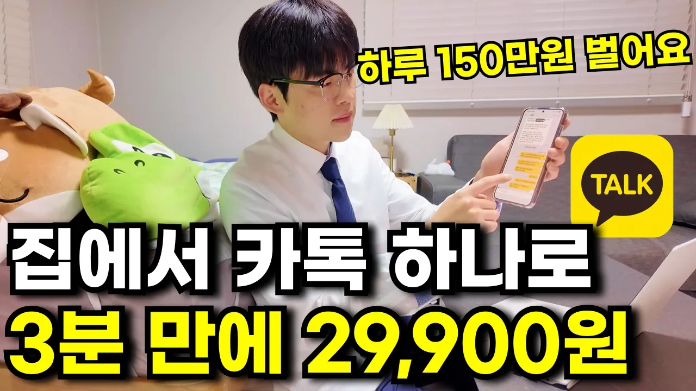
퇴근하고 하루 20분! 부업으로 매일 150만원 버는 27살(엄마랑 누나도 해요) ▶퇴근하고 하루 20분! 부업으로 매일 150만원 버는 27살(엄마랑 누나도 해요)
29,900·34,900 입금 화면 + '퇴근 후 힘들 텐데 구조 짜놔서 30분' + '어제 336만'
심리증거 + 노력 최소화 + 일 단위
'입금해 주세요 → 생년월일시·이메일 등록 → 끝' + PD '대표님이 하는 게 뭐예요?' → '돈 벌기'
심리쉬움 + 유머
'대학생·주부·은퇴자 다 가능' + 어머니·누나 300~400 + PD '몇 분 추첨해 무료로 봐주시면?'
심리자격 박탈 불가 + 가족 + 선물 예고
'부업으로 하루 150 버는 00년생 직장인 후도령' → '한 달이 아니라 하루?' + 월급 200 중반 vs 부업
심리정체성 + 대비
'수익화 구조 방법 고정댓글에 남김 — 진짜 사주 부업 해보고 싶은 분만 댓글'
몽타주(입금·30분·336만·돈 벌기·가족·추첨) + 정체성 + 월급 대비
퇴근 후 집 = 제2 사무실 + 7월 매출 + 사주 구매 피크(출퇴근·밤 10시~) + 오늘 123만
외고·수능 망침 → 부업 7~8개 실패(군고구마·쇼핑몰 재고 200개) → 사촌형 '사주로 벌어봐' + 기존 방식 월 400
150페이지 전자책 자동 발송 + 1인 3분 + 상품표(인생 34,900·연애) + 여유
1시간 뒤 발송(직접 봐주는 느낌) + PD 사주 59장 시연 + '남 시스템보다 자기 방식' 적중
1차 CTA + 인스타 홍보(띠별 쇼폼 → 댓글 145개 자동 DM)
AI 캐릭터 영상 5~10분 제작 + 하루 3개 + 프롬프트 제공
웹툰형 사주(생년월일→결제까지 자동) = 상방 돌파 + '하는 게 뭐예요? 구조 짜기'
만화 사주 1분 생성 + '29년 결혼' 적중(35살) + 무료 추첨 CTA
후기(16살~1960년생 미국) + '안 죽는 시장' + 추천 대상 전원 + '좋은 선생님 만나 그냥 하자' + 라이브 결과 183만
Q그럼 대표님이 하는 게 뭐예요?
A"돈 벌기"라 답하며 AI 덕에 대학생·주부·은퇴 준비자까지 다 할 수 있는 부업이라 하고, 어머니와 아는 누나도 함께 시작해 300~400 넘게 번다고 함.
Q몇 분 추첨해서 무료로 봐주시는 거 어려울까요?
A34,900원짜리 사주를 추첨 시청자에게 무료로 싹 알려드리면 좋겠다며 흔쾌히 수락함.
Q직장인이 부업으로 하루 150만원을 번다고요?
A"이상하게 들리지만 실제"라며 결제 화면을 공개, 29,900원·34,900원이 매일 들어오고 하루 한 번 157만원씩 입금된다고 보여줌.
Q돈을 이렇게 잘 벌면 본업도 잘 버시나요?
A사회초년생이라 월급은 200만원 중반이고, 부업은 신점이 아니라 AI로 연애·재회·재물운 사주를 봐주는 것으로 퇴근 후 30분도 안 든다고 함.
Q30분도 안 드는데 하루 150? 진짜요?
A150은 보수적으로 잡은 수치고 실제론 더 번다며, 집(제2의 사무실)에서 어제 기준 7월 결제 내역을 직접 보여주겠다고 답함.
QCS가 없어요?
A없을 수밖에 없고, 하루 한두 건 있어도 "이메일 잘못 쳤다" 수준이라 클릭 한 번·복사 붙여넣기로 재발송하면 끝이라고 함.
Q원래부터 금수저였나요?
A집은 전혀 잘 살지 않았고, 수능을 망쳐 지방대 요리과에 갔다가 20살부터 명함로고·군고구마·쇼핑몰 등 부업 7~8개를 했지만 다 폭망했다고 함.
Q종류 상관없이 다 3만원인 건가요?
A종류마다 다르며 120~150장짜리 인생사주는 34,900원, 가장 잘 나가는 솔로 연애사주는 29,900원이고 팩폭사주는 새로 미는 상품이라 함.
Q이제 29,900원 벌고 할 일 다 한 건가요?
A이미 총 59장짜리 결과가 나왔다며 사주 8자·핵심 요약·목차를 보여주고, PD가 궁금해한 재물운 조언 파트를 바로 읽어줌.
Q우와 그거 알려주실 거예요?
A다 같이 잘 되는 게 좋다며 진짜 해보고 싶은 사람이 댓글을 남기면 돈 버는 방법까지 싹 정리해 남기겠다고 약속하고, 홍보는 인스타그램으로 한다고 함.
Q이 사주 부업은 누가 하면 제일 좋을까요?
A자본금이 안 들고 세팅만 하면 시간도 거의 안 들어 직장인은 물론 대학생·주부·은퇴 준비하는 부모님 세대까지 다 할 수 있다고 자신함.
Q촬영 끝난 시점에 얼마 벌었는지 즉흥 공개?
A저녁 9시 반 결제 화면 기준 7월 30일 하루 183만원이며, 재회·연애 수요가 몰리는 밤 시간 전이라 오늘 200만원은 넘길 거라고 함.
진짜 해보고 싶은 분만 댓글 → 고정댓글 수익화 구조 + 프롬프트 + 무료 사주 추첨
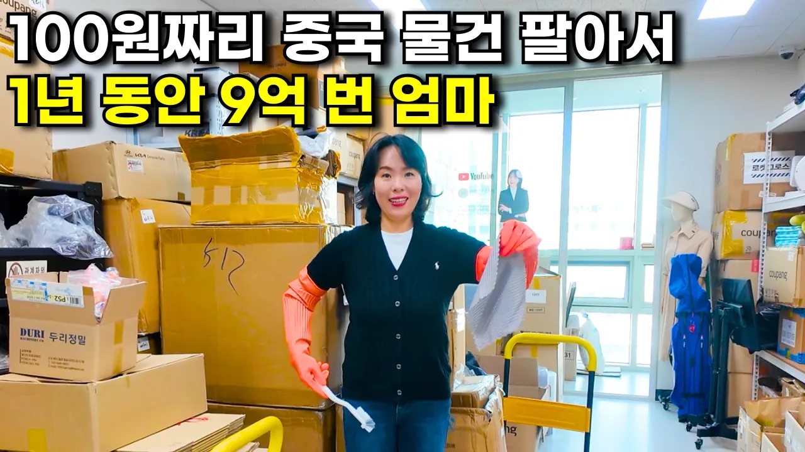
하루 30분, 노트북 하나로 100원짜리 물건 팔아서 9억 번 40대 주부 ▶하루 30분, 노트북 하나로 100원짜리 물건 팔아서 9억 번 40대 주부
'집안일 다 하면서 노트북 하나로 9억' → PD '9억이요? 뭘로?' → '100원짜리 물건'
심리되묻기 + 사물
고무장갑 실물 '이것도 100원, 얘도 100원' + '6만 장 팔았다' + '햇반 팔아 남편 퇴사'
심리실물 반복 + 가족 결과
PD '증명할 매출?' → 계정 3개 2억 7천·…·5억 2,500
심리증거 화면
'40대 주부, 집안일 하며 하루 1~2시간' → 빨래 개면서 재고 확인 시연
심리일상 속 노동 시각화
PD '상세페이지 영상 넣는 법 찍어놓은 영상 시청자께?' → '댓글 하나 써주시고 구독 해주세요'
몽타주(9억·100원·6만 장·남편 퇴사) + 계정 3개 매출 + 빨래 개며 재고 확인
테스트 상품 170개 실시간 판매 + '20분 주문 = 오늘 일 끝' + 아침 루틴(아이·강아지·쓰레기)
이전 직업(애견미용·공장 알바) + 동창 '스마트스토어' 대화 → 이틀 만에 사업자(주민센터 해프닝) + 3개월 만에 월급 초과
사무실·창고 + 남편에게 제네시스 선물 + '부부 관계는 금융 치료' + 중앙일보 기사(4개월 2억 5천)
샘플 창고 100~500원 상품 + 프로그램으로 잘 팔리는 키워드 발굴 시연
도매 사이트 180원·350원 → 쿠팡 9,800원 + '치킨 한 마리 안 먹으면 수십 개' + 프로그램 월 3만원
상세페이지 영상 vs 사진 비교 + 1차 CTA(영상 강의) + 쿠팡 등록 시연
등록 상세(재고 8개 → '품절 임박' 노출 팁) + 검색 자동완성 키워드 + 협력사 브랜드
로켓그로스(창고 입고 → 쿠팡이 배송·CS 전담) + '진상 오면 100% 싸움' 유머 + 이전 현관 택배 지옥 사진
오프라인 매장 3개월 실패 + 2차 CTA(도매처 100군데 추첨) + 조언('10%만 마음먹고') + 미션(유튜브 '쿠팡 상품 등록' 조회순 3개 보고 등록 1번)
Q도대체 뭘로 9억을 버신 거예요?
A햇반 등 100원짜리 물건을 10개 묶음 13,000원에 팔았고, 한 상품만 6만 장 넘게 팔아 9억을 벌었다고 답함.
Q햇반 팔아서 남편까지 퇴사시켰다고요?
A맞다고 하며 계정 3개 매출을 공개, 가장 작은 1번이 연 2억 7,800, 3번은 5억 2,500만 원이라고 답함.
Q증명할 수 있는 매출 보여주실 수 있나요?
A계정 3개 매출을 공개하며 40대 주부가 집안일 다 하면서 하루 1~2시간으로 만든 매출이고 방법을 다 알려주겠다고 답함.
Q그게 끝이에요? 이거 거짓말 아니죠?
A정말 끝이라며 아이 등교·강아지 산책·쓰레기 버리기·설거지 후 10시 반~11시쯤 출근하는 게 매일 루틴이라고 답함.
Q온라인 판매 전에는 어떤 일 하셨어요?
A애견 미용사로 월 150~180만 원 벌었고, 결혼 후 경력단절 중 공장에서 전선 까는 알바도 했다고 답함.
Q19만원을 190만원에 판다고요?
A당시 월급 170만 원이라 하나만 팔아도 월급 이상, 한 달 3개면 더 번다는 계산으로 1년 만에 회사를 그만뒀다고 답함.
Q중앙일보 기사가 대표님 실화인가요?
A첫 달 매출 7만 원에서 4개월 만에 2억 5천만 원으로 올려 단독 인터뷰했고, 판매는 상품 찾기·쿠팡 등록·창고 발송 3단계뿐이라고 답함.
Q다 100원이에요?
A300원·500원짜리도 있다며, 요즘은 노가다 대신 프로그램 '발굴' 기능으로 판매량 탑10이 1억 6,400만 원인 키워드를 찾는다고 답함.
Q(사진) 너무 대충하시는 거 아니에요?
A(자막에서 답변 확인 불가)
Q왜 주문한 분 집으로 안 보내고 창고로?
A쿠팡 창고로 보내면 판매자 배지가 붙고 배송·CS·환불을 쿠팡이 다 처리해 고객과 접점이 아예 없다고 답함.
Q쿠팡에 다 맡기면 수수료 많이 줘야 되는 거 아닌가요?
A수수료 언급은 없고, 예전엔 집 앞에 택배 박스가 쌓여 문도 안 열렸지만 쿠팡이 다 해줘 시간이 남아 오프라인 매장도 해봤다고 답함.
Q영상 끝나자마자 이것만은 해봤으면 하는 미션 하나?
A쇼츠 말고 유튜브에서 '쿠팡 상품 등록' 검색해 조회수순 상위 3개 영상만 보고 등록 한 번 하면 50만 원 벌 수 있다고 답함.
댓글 써주시고 구독 → 상세페이지 영상 강의 + 도매처 100군데 리스트(추첨)
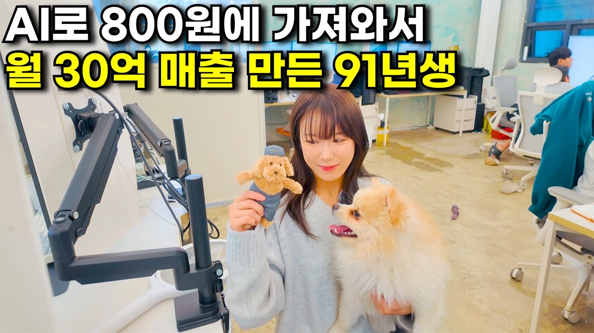
AI로 하루 30분 상품 팔고 월매출 30억 찍은 30대 여자 ▶AI로 하루 30분 상품 팔고 월매출 30억 찍은 30대 여자
'한 달 30억 비법' → PD '증거?' → 34억 화면 '4억은 빼고 말함' + 1년 120억
심리증거 즉시 + 겸손 연출
'AI로 싸게 가져와 비싸게' + 거울·키링·장난감 실물
심리사물 앵커
사진 찍으면 중국 가격 검색 → 800원 → 한국 5,900~1만
심리메커니즘 시연
거울 2,000원→2만 5천 + '공급만 하면 알아서 팔림' + 특이한 자리
심리마진 + 자유 티저
PD '프로그램 체험권이라도?' → '개발자에게 말해 구독자 쿠폰, 댓글 남겨주시면'
몽타주(34억·120억·800원·거울) + 정체성
강아지 탈출 + BMW·포르쉐 2대 + 경치 좋은 숙소에서 근무 '출근 없음' + 맥주
세관 공무원 월 170 + 유튜브 걸려 여수 '유배' + 눈물 → 부업 찾기
판매 3단계 중 1단계(뭘 팔까) + 쿠팡윙 인기상품 + '보이는 대로 하면 망함'
판매량 순 분석 + 비밀 프로그램(판매량·전환율) '살짝만' 공개
1차 CTA(쿠폰) + 1688·타오바오 이미지 검색 + 배대지 없이 직접 구매
로켓그로스(1개도 입고 가능, CS 전담) + '진상 없어져서'
미리캔버스 AI로 상세페이지 30분 + 카톡 나에게 보내기
'2주 걸리던 상세페이지 5분' + 월 5억 셀러도 이 정도 + 프라이팬 실제 사례
카페 매출 인증 2만 개 '이지영은 신이다' + 책 10명 배송(정성 후기) + 미션(쿠팡 켜서 카테고리 보며 '내가 팔 만한 것' 상상)
Q좀 보여주실 만한 증거 있어요?
A34억 찍힌 한 달 매출 화면을 증거로 제시하며 최근 1년 매출 120억, AI로 중국 제품을 싸게 사와 비싸게 판다고 답함
Q30억이 아니라 34억?
A34억이 맞지만 4억 정도는 빼고 30억이라 말한다고 답하며 최근 1년 매출은 120억이라고 확인함
QBMW 부업으로 사신 거예요?
A직장인 땐 꿈도 못 꿨던 금액이라며 차가 두 대, 허드렛일용 BMW 외에 즐길 때 타는 포르쉐 박스터도 있다고 답함
Q한 시간 동안 뭘 하는데요? 그게 끝이에요?
A한 시간 작업이 끝이라며 이런 생활 2년째, 원래 인천세관 9급 공무원으로 세후 170만원 월급이 너무 적어 부업을 시작했다고 답함
Q그때 당시 나이가 몇 살이었는데요?
A서른 살 무렵 부자 되고 싶어 부업을 다 해봤고 유튜브를 제일 좋아했지만 얼굴 공개로 걸려 징계·유배까지 당했다고 답함
Q판매하려면 몇 단계가 필요해요?
A3단계로 답함: 쿠팡에서 잘 팔리는 제품 찾기, 싸게 소싱하기, 상세페이지 만들어 등록. 첫 단계 제품 선정이 성패를 결정한다고 강조
Q아, 그렇게 하면 안 돼요?
A눈에 보이는 대로 고르면 초보자가 망한다며, 쿠팡윙 판매자 가입 후 '쿠팡 인기 상품'에서 카테고리별 데이터를 보라고 답함
Q살짝만 보여주시면 안 돼요?
A자체 프로그램이 제품별 판매량·전환율을 보여준다며, 전환율 3% 넘으면 높고 10%면 매우 높아 떼다 팔면 잘 팔릴 확률이 크다고 답함
Q체험권이라도 주실 수 있나요?
A개발자에게 말해 구독자 전용 쿠폰을 만들어 무료로 열어주겠다며 대신 댓글 정도는 남겨달라고 답함
Q대량으로 하시는 분들만 할 수 있는 거 아니에요?
A아니라며 로켓그로스는 한 개든 열 개든 받아주고 배송·반품·CS를 쿠팡이 대신해 직원 적어도 연매출 100억이 가능하다고 답함
Q30분도 안 걸린다고요?
A제품 사진 한 장으로 수천 개 이미지를 만들고 문구도 생성되어 배치만 하면 된다며 미리캔버스의 미리클 AI를 주로 쓴다고 답함
Q끝나자마자 실천할 미션 하나?
A지금 당장 쿠팡을 켜 홈 화면부터 차례대로 보고 카테고리에 들어가 내가 팔 만한 게 뭘지 상상해보라고 답함
댓글 남겨주시면 프로그램 쿠폰 + 시청 후기 정성껏 쓴 10명께 책 직접 배송
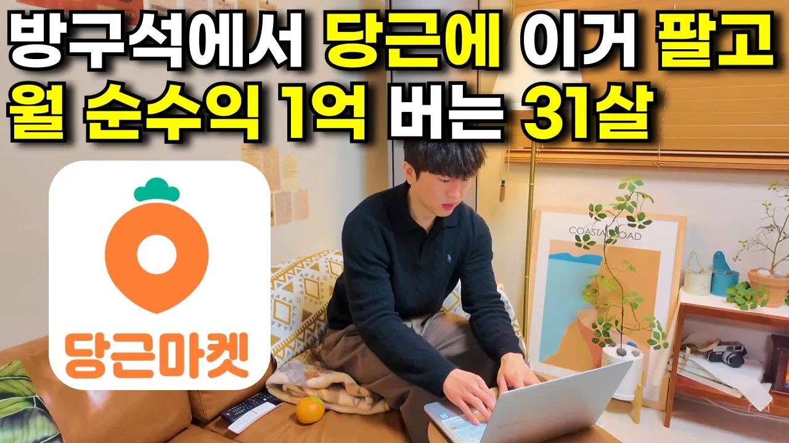
당근에서 중고 말고 '이것' 팔아서 월 순수익 1억 버는 96년생 ▶당근에서 중고 말고 '이것' 팔아서 월 순수익 1억 버는 96년생
당근 알림음 '이게 다 돈 되는 소리' → '중고 아니고 새 상품' → 오렌지·고등어·고구마
심리소리 훅 + 편견 깨기 + 사물
'오늘 매출 4천만·순익 900만, 오후 5시밖에 안 됐는데'
심리당일 숫자 즉시성
'6개월 33억' + PD '저는 중고 10만원 버는데' + '단골 10만 명'
심리규모 + PD 동일시 + 비밀 예고
가게 3개 단골 5만 6천·3만 3천·2천 화면 + '맛있으면 지인 소개' + '노하우 다 알려드림, 따라오세요'
심리증거 + 메커니즘 + 시연 프레임
'가장 잘 팔렸던 글 10개 선정해서 댓글 달아주신 분께 모두'
알림음 훅 + 음식 판매 + 오늘 4천만 + 6개월 33억 + 단골 10만
단골 화면 + '7년 된 노트북, 강원도에서도' + '중고만 되는 줄 아는 편견'
왜 당근? 100% 선결제(쿠팡 정산 2달 vs 매일 정산) 계좌 화면
쿠팡 리뷰 10만 개 고인물 못 이김 vs 당근은 추천식 광고(신규도 동일 위치)
새소식 알림 종 → 단골 10만 명에 광고비 0 + 이전 직업(노가다·소분·호텔 250만)
농수산물 알바 → 재능 발견 + 왜 농수산물? 부가세 면제 + 스토리텔링(장어 사례)
'통영 삼촌이 갓 잡은' 500~1,000원 비싸도 팔림 + 1차 CTA(잘 팔린 글 10개)
카톡 오픈채팅 '농수산물 위탁판매' 검색 → 단가표 → 도매가
월별 잘 팔린 리스트(당근 전용 전자책 '오픈북') + 사진은 위탁방이 제공
직원 3명 2~3개월 만에 월 500 + '호텔 250만 생각하면' + 미션(위탁방 1개 들어가 상품 1개 정하기)
Q무슨 중고 거래를 이렇게 많이 하세요?
A중고가 아니라 새 상품(오렌지·고등어·고구마 등 음식)을 당근에서 팔며, 오늘 오후 5시 기준 매출 4천만 원·순수익 900만 원을 계좌로 보여줌.
Q하루 매출이 4천만원이요?
A계좌를 직접 보여주며 최근 6개월 매출이 33억 원이라 답하고, 그 비결은 10만 명 넘는 단골 덕분이라고 설명함.
Q6개월 동안 33억이요? 당근에서요?
A단골이 10만 명 넘어서 가능했다며 당근 가게 3곳(단골 5만6천·3만3천·2천 명)을 공개하고, 실제 가게는 이보다 훨씬 많다고 함.
Q집에 굴러다니는 10년 된 노트북으로도?
A본인 노트북이 바로 그 10년 된 노트북이고, 지난주 강원도에서 일주일간 일했을 만큼 장소 제약도 없다고 답함.
Q쿠팡·스마트스토어 두고 왜 당근에서 판매하세요?
A당근은 100% 선결제라 계좌로 바로 입금되지만, 쿠팡은 정산이 두 달 걸려 돈이 묶이고 업체에 지불할 돈이 없어진다고 비교함.
Q당근에서 음식 파는 건 고인물만 잘하는 거 아니에요?
A오히려 초보자에게 당근을 권함. 쿠팡은 리뷰 8만~10만 개 셀러에 밀려 노출조차 안 되지만, 당근은 중고 상품 사이에 광고가 자연스럽게 섞여 보인다고 함.
Q광고비를 1도 안 써요?
A종 모양 알림 버튼으로 새 소식을 올리면 단골 10만 명에게 무료로 알림이 가므로 광고비가 전혀 들지 않는다고 설명함.
Q당근 부업 하기 전에 어떤 일 하셨어요?
A공장 노가다, 식당·술집 알바, 새우 1톤을 500g씩 소분하는 일을 거쳐 첫 직장인 호텔 프론트에서 3교대로 월 250만 원을 벌었다고 답함.
Q공산품도 되는데 왜 하필 농수산물?
A농수산물은 부가세 100% 면제이고, 모델명이 찍힌 공산품과 달리 스토리(장어가 너무 많이 잡혀 냉동 대신 싸게 판다 등)로 차별화 판매가 가능하다고 함.
Q이런 노하우 다 풀어도 되나요?
A원래는 안 풀지만 PD가 와서 공개한다며, 지금까지 가장 잘 팔린 글 10가지를 모은 파일을 댓글 단 시청자 전원에게 주겠다고 함.
Q직접 안 가도 돼요?
A직접 갈 필요 없이 PC 카카오톡 오픈채팅에서 '농수산물 위탁 판매'를 검색하면 단가표가 올라오는 위탁 판매방이 다수 나온다고 시연함.
Q영상 끝나자마자 이것만은 해봤으면 하는 미션?
A카카오톡 위탁 판매방 중 원하는 유통방 딱 하나에 들어가고, 판매하고 싶은 상품 딱 한 가지만 정하면 바로 당근 마켓을 시작할 수 있다고 함.
댓글 달아주신 분께 잘 팔린 글 10개 + 당근 전용 월별 리스트 전자책
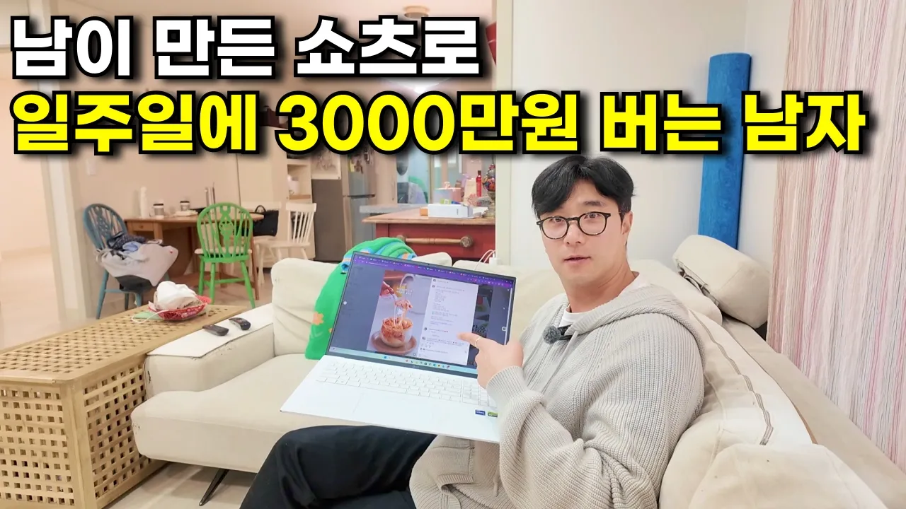
컴맹이 AI 복사 붙여넣기로 일주일에 3000만원 버는 방법(이 부업은 빨리 시작할수록 이득입니다!) ▶컴맹이 AI 복사 붙여넣기로 일주일에 3000만원 버는 방법(이 부업은 빨리 시작할수록 이득입니다!)
'아침에 일어나서 뭐 하세요? 인스타' → '거기서 팔리는 제품을 인플루언서에게 줘서 일주일 10억'
심리일상 → 메커니즘 반전
'10억 중 순익 3천' + 계좌 3억 4,500 + 7,100만·9천만 화면 '매일 쌓임'
심리증거 연타
'아직 독수리 타법' + '컴맹도 3천' + '모든 방법 다 알려드림'
심리자격 박탈 불가 + 선물
'제조사가 선물 안 주나요?' → 도마·유리병·가습기(1억 매출) 반값
심리부수 혜택 시각화
'4년 모은 좋은 제품 찾는 자료 — 정성껏 댓글 단 분께만'
몽타주(인스타→10억·3천·계좌·독수리·선물) + 가습기·도마
공동구매 정의(중간 소개, 수수료 20~45%) + 월 30~40건 스케줄 '자주 쉼'
'도마도 몰랐다, 인스타 보다 보니' + 선정 기준 3(브랜딩·소구점·디자인) + 댓글 965개 침대
'비용 0, 창고서 직배송' + 디자인 + 1·2·3차 재진행 = 반복 수익
1차 CTA(제품 발굴 자료, 정성 댓글) + 업체 전화번호 찾기(네이버 검색)
객단가·마진 + '안 팔려도 손해 없음' + 초보도 제안서 받을 수 있음 + DM 문구 10초 GPT
경단녀·프리랜서 잘함 + 카테고리 맞는 인플루언서 찾기(공구 예고 검색, 팔로워 1만↑)
공구 중개 전용 마진계산기(45% → 인플루언서 25%·나 15%) + 2차 CTA(계산기, 구독+댓글)
GPT 라이브 대본(오프닝 2분 소통) + 인플루언서 관계 유지 팁
수강생 300명 + 79년생 '나만큼' + '초반 1~3개월 쏟아부어야, 딸깍은 없다' + 미션(해시태그 공구 검색 → 인플루언서 리스팅)
Q일주일에요?
A10억 매출에 순익 3천만 원, 입금 내역 3억4,500만 원과 월 7,100만 원·9천만 원 계좌를 직접 공개하며 답함.
Q계좌 내역 같은 거 증명하실 수 있나요?
A'당연하다'며 계좌 내역 공개, 매일 쌓이는 입금 내역 보여주고 독수리 타법 컴맹도 3천만 원 수익 가능하다고 강조.
Q제조사 입장에서 고마울 텐데 선물 안 주나요?
A도마·독일 유리병·올디부유 식품 등 공짜 선물 받았고, 매출 1억 나온 가습기도 업체가 반값에 줬다고 답함.
Q한 달에 30~40건? 쉬는 날 아예 없는 거 아니에요?
A월 30~40건 공구지만 유명 인플루언서가 대신 홍보해 하루 3시간만 소통하며, 발리·이스탄불 여행 중에도 운영했다고 답함.
Q어떤 기준으로 잘 팔릴 상품을 가져오세요?
A세 기준 제시: 코스트코·백화점 입점 등 브랜딩된 제품, 소구 포인트가 명확한 제품, 댓글 965개처럼 반응도 높은 제품.
Q똑같은 물건을 다시 판다는 거예요? 또 잘 팔리나요?
A쿠션 공구로 5천만 원 매출·1천만 원 순익 나면 2~3개월 뒤 재진행 가능하고, 인플루언서별 A·B·C·D 제품으로 일정이 쌓인다고 답함.
Q처음 하시는 분들은 (제안서) 안 주지 않을까요?
A매출권 공개 요구 업체는 많지 않아 처음 하는 사람도 벤더사 이해만 있으면 제안서·엑셀 자료 충분히 받을 수 있다고 답함.
Q10초 만에요?
A학습시킨 GPT에 '방수패드 DM 문구 만들어줘' 입력하면 소구점 문구가 즉시 나오고, 이름·연락처 넣어 10~50명에게 화장실·지하철에서도 보낸다고 답함.
Q아무나한테 보내면 되는 건가요?
A절대 아무나는 안 되고 냄비는 뷰티가 아닌 살림 인플루언서처럼 카테고리를 맞춰야 하며, 인스타 검색 '공구 예고·오픈'으로 찾는다고 답함.
Q이것도 주시면 안 될까요?(계산기)
A마진 계산기 자료를 댓글·구독한 사람 모두에게 무료 제공하겠다며, 추가로 라이브 진행 시 인플루언서 관계 유지 꿀팁도 소개함.
Q배운 분들 몇 분이나? 기억 남는 분?
A가르친 사람 약 300명 이상이며 숨기지 않는 스타일이라 선물도 많이 받고, 79년생 수강생이 지금은 자신만큼 성과를 낸다고 답함.
Q영상 끝나자마자 미션 한 가지?
A인스타 돋보기→해시태그에서 '공구 오픈·예고·마감' 검색해 팔로워 1만·릴스 1만 이상 인플루언서를 육아·뷰티·살림·주방·식품별로 리스팅하라, 본인도 그렇게 시작해 첫 매출 1천만 원.
정성껏 댓글 + 구독 → 제품 발굴 자료·DM 문구·마진계산기·라이브 대본
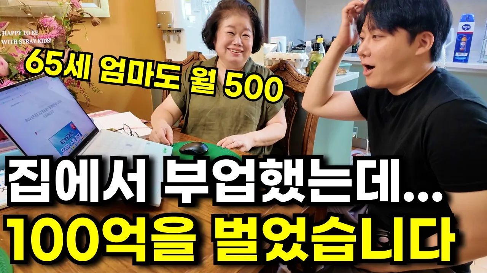
"한국인만 몰라요" 전세계 1위 부업으로 순수익 100억 번 수상한 가족, 65세 엄마도 달마다 500만원 벌어요(재택부업 추천) ▶"한국인만 몰라요" 전세계 1위 부업으로 순수익 100억 번 수상한 가족, 65세 엄마도 달마다 500만원 벌어요(재택부업 추천)
'운전기사 세후 250' → '순수익 100억(주식 하락 70억)' + '외국은 다 하는데 한국만 모름'
심리Before/After + 집단 대비
'자고 일어나면 3천만' + '글 하나로 여러 플랫폼' + '승인 봇 드림, 복사 붙여넣기만'
심리수동소득 + 선물 + 쉬움
어머니 65세 '500·1천 찍었을 때 기분? 인생 2막 화려' + '오프라인 자료 집으로 배송' + 강아지
심리가족 감정 + 선물
'세계 1위 부업 6년 전 알아 100억 알파남' → '35인데 100억?' → '회사원이었는데 저도 신기'
심리정체성 + 되묻기 + 겸손
'택배비 안 비싸니 자료 집으로 배송' + 25:39 'PD가 고정댓글로 자료 + 무료 강의'
몽타주(250→100억·3천/일·봇·어머니·배송) + 정체성 + 35세
2년간 지속 입금 + 컴퓨터 1대 + 게임하던 방 → 글 1~2시간 + AI로 1~3분 + 제미나이 시연
어머니 65세 월천 '인생 2막' + 코로나 파산 직전 아파트 경매 위기 → 블로그로 면함 + 30분 + 신문 글감
광고 클릭 1,000~5만원 + '한국 사람 왜 모르나 → 네이버 있어서' + '구글에서 40억 받음'
학자금 2천 + 부모 노후 미준비 → '내 인생 없겠다' → 출퇴근 유튜브 + 구조 그림
쿠팡 파트너스·타불라(0.1%만, 6억) + 컨설팅 5,500만 + '글 하나로 여러 곳'
승인용 글 15~20개 4시간 간격 예약 + 애드포스트 25일 입금 + 광고 자동
자료 배송 CTA + 돈 되는 키워드 3공식(40대 이상·행동 요구·돈) + 크리에이터 어드바이저
브랜드 커넥트(24시간 3~5%) + 글쓰기 비서로 제목 자동
구글 변환 '글이 다 광고' + 추천: 돈 부족·취업 안 되는 분 + 고정댓글 자료 + 무료 강의 '홈택스 까라' + '숨기면 기회 안 옴'
Q(어머니) 500·1천 찍었을 때 기분이 어떠셨어요?
A어머니는 "인생 (말년이) 화려해지네"라고 웃으며 짧게 답했고, 곧바로 자료 정리·자기소개 장면으로 넘어감.
Q이걸 다 집으로 보내주신다고요?
A"네"라고 확인하며, 정리해 둔 자료를 보고 한번 따라 해 보면 누구나 다 할 수 있다고 자신함.
Q35인데 100억을 모았다고요?
A원래 회사원이라 본인도 신기하다며, 통장 현금 70억(주식 하락 전 80억)에 받을 돈까지 합치면 100억이라고 증명함.
Q돈 들어오는 속도가 얼마나 빠른데요?
A자고 일어나면 하루 3천만 원씩 순수익으로 들어왔고, 최고 월 9억을 벌었으며 이게 2년 가까이 지속돼 부자가 됐다고 함.
Q어머니도 수익화 성공하셨어요? 지금 어머니예요?
A어머니가 직접 등장해 블로그를 쓰는 중이며, 100만 원에서 시작해 300·500·1천만 원까지 찍었고 나이는 65세라고 답함.
Q65세인데 월천을 찍어보셨어요?
A"인생 화려해지네"라며 웃고, 코로나로 회사 매출이 0이 돼 파산 직전에 아들 권유로 블로그를 시작해 아파트 담보대출 위기를 면했다고 함.
Q하루에 30분이요? 뭘 하셨는지 보여주실 수?
A노트북 하나로 어디서든 가능하다며, 신문에서 본 화제 영화 '오디세이'를 주제로 연관검색어를 제목에 넣어 글 쓰는 과정을 시연함.
Q이거 왜 한국 사람들은 모를까요?
A한국은 네이버가 있어 몰랐던 것이고, 글로 돈 버는 건 구글 애드센스뿐이며 본인이 구글에서만 40억 받았다고, 승인 방법을 몰라 못 한다고 답함.
Q이거 페라리 아닌가요?
A맞다며 4~5억짜리라고 밝히고, 장례식장 다녀온 뒤 인생은 영원하지 않으니 눈치 보지 말자는 생각에 바로 샀다고 함.
Q운전기사 때 월급은?
A세후 250만 원이었고 학자금 대출 2천만 원·카드값에 쓸 돈이 없어 부업으로 100만 원이라도 벌려 했으며, 코로나로 부모님 집 경매 위기가 계기였다고 함.
Q이 부업을 누구한테 가장 추천하세요?
A모두에게 추천하지만 특히 돈이 부족하거나 몸이 불편하거나 취업이 안 돼 일할 수 없는 분들께 꼭 추천한다고 답함.
Q오늘 자료 어떻게 받을 수 있을까요?
A시간이 부족해 준비한 자료를 PD에게 전달해 고정 댓글로 올리고, 별도 무료 강의에서 실습과 질문 답변을 하겠다고 함.
PD가 고정 댓글로 자료 전달 + 별도 무료 강의에서 실습·질문
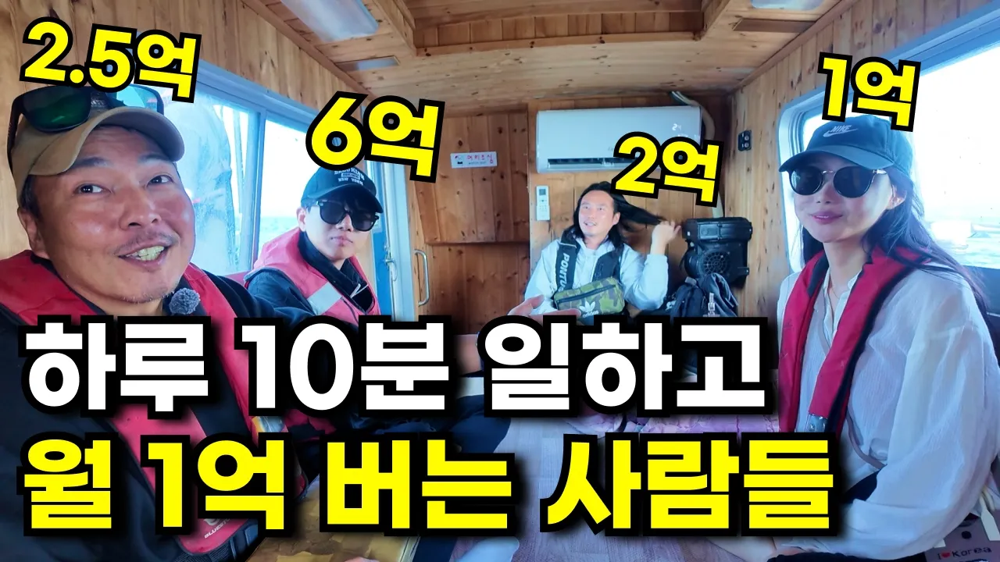
NEW"어차피 알려줘도 아무도 안해요" 평일에 회사도 안가고 놀면서, 1억씩 버는 백수들의 비밀 부업 추천 ▶"어차피 알려줘도 아무도 안해요" 평일에 회사도 안가고 놀면서, 1억씩 버는 백수들의 비밀 부업 추천
대표가 '논페 크루 가입 조건 = 하루 10~20분 일하고 월 1억 매출' 선언, PD가 '월 1억을 번다고요?' 되묻기
심리첫 문장에 기준선 자체를 1억으로 놓아 시청자의 기대치를 강제 상향, PD의 되묻기로 의심을 대신 표현
4명 매출 나열: 여자 대표 1억, 본인·친구 2~2.5억, 끝판왕 6~6.5억(썸네일 라벨과 1:1 매칭)
심리썸네일 숫자를 즉시 회수해 클릭 약속 이행, 여러 명이 동시에 버는 '집단 증거'로 우연이 아님을 각인
공무원 7년 월급 180→250만 원 → 1월 사직서 → 1.2억 투자 사기 서사
심리평범·고생 페르소나로 공감 형성, 바닥 서사를 깔아 이후 매출을 '역전'으로 극화
지난달 매출 6.3억·순수익 2억 공개, PD '이게 진짜예요?' → '100% 진짜, 끝까지 보면 다 공개'
심리매출→순익으로 의심 차단, '끝까지 보면 공개' 시청 지속 약속(오픈 루프)
배 위 현장 인사, '하루 10분·사무실 없음·시공간 제약 없음, 낚시하면서 매출 오름', 배에서 부업하는 모습 예고
심리라이프스타일 판타지 시각화 + 시연 예고로 후반부 볼 이유 제공
뒤의 사람들 = 대표에게 배운 지인, 성과 기념 낚시. 5일 만에 500·한 달 만에 하루 40~50만(월 1,500·수익 400~500)
심리'배운 사람'도 단기간 성과 → 나도 가능 프레임, 작은 숫자로 사다리 첫 칸 제시
'오늘 끝까지 봐 주시면 이 방법을 다 공개해 드리겠다'(시청 유지 CTA, 리드마그넷은 16:20 고정댓글 단톡방 전자책)
1/10 [00:00–02:11] 크루 조건 월 1억 선언 + 4명 매출 나열 + 공무원→사기 서사 + 6.3억/순익 2억 + '끝까지 보면 공개' + 배 위 인사 + 지인들 5일·한 달 성과
2/10 [02:11–04:23] 시작 4개월 + 수익률 40~50% + 끝판왕 소개·'검증 가능, 따라오세요' + 일주일 매출 1.2억·월 6.3억 화면 + 쿠팡 정산금 3.2억 등 순익 증명 + 하루 순익 800만·'도파민 샤워'
3/10 [04:23–06:35] 아이템 공개: 쿠팡 건강식품(비타민·콜라겐·멜라토닌) 자체 브랜드 제조 + 위탁판매 100원 싸움 vs 내 브랜드 가격 자유 + 최소 100통·30~40만 원 제조로 자본 장벽 해소
4/10 [06:35–08:47] '누구나 되나?' → 특별한 방법 + 쿠팡 물류센터 입고 후 발주·배송·CS 전부 쿠팡이 처리 + '하는 일 = 논팽이짓' + 배 위 10분 업무 시연 시작·주문 확인
5/10 [08:47–10:59] 부모님 아파트 꿈·용돈 천만 원 감정 + 엑셀 다운→택배 발주서 복붙→사이트 업로드→버튼 3번 시연 + '10분도 안 걸리는데 매출 1억' + 옆 대표 업무도 동일
6/10 [10:59–13:11] 사직→1.2억 투자 사기+전세 5천 사기 재서사 + 최대표에게 배워 첫 달 5천→8천→3개월 만에 1억→6억 + 스승 감사 + 숙소서 '홈쇼핑이 대신 홍보' 낙수 원리 예고
7/10 [13:11–15:22] 홈쇼핑 1시간 방송 → 소비자가 쿠팡에서 원료 검색·구매(더 쌈) + 방송 후 매출 6,100만 원 + '홈쇼핑모아' 앱 편성표·필터로 원료 선정법 시연
8/10 [15:22–17:34] 쿠팡 1페이지 1~15등 꼴찌도 100명 이상 구매면 소싱 기준 + PD '자료로 정리해 주세요' → 전자책·고정댓글 단톡방 한정 배포(리드마그넷) + '억대 나옵니다' + 제3 대표 합류
9/10 [17:34–19:46] 무료 발주 프로그램(회원가입 1분) + '남은 건 금융치료' + 쿠팡 정산 느림 반론→선정산 서비스로 당일 지급·돈맥경화 해소 + 마진 40~80% 계산법 + 2시간 온라인·4시간 오프라인 교육이면 끝
10/10 [19:46–21:58] 와이프 친구·처갓집도 수익화, 제품 1개로 월 2,400~3천·순익 800~1천 + 67세 컴맹도 첫 달 900만 + 6~7억 빚→월 순익 1억 산증인 + 10월 6일 무료 강의·고정댓글 신청 + 마무리 멘트 + 9/9 하루 매출 919만 원 자막
Q아니, 하루 10분, 20분 일하면서 월 1억을 번다고요?
A맞다며 여자 대표 1억, 본인·친구 2~2.5억, 저쪽 대표 6~6.5억이라고 4명 매출을 차례로 나열.
Q이게 진짜예요?
A100% 진짜라며 끝까지 보면 오늘 방법을 전부 공개하겠다고 시청 유지 약속으로 응답.
Q뒤에 보이는 사람들은 누구예요? 왜 낚시를 온 거예요?
A자신에게 배운 지인들이며 짧은 기간에 매출을 잘 내 기념으로 다 같이 놀러 나왔다고 설명.
Q성과를 어느 정도로 냈는데요?
A5일 만에 500 매출인 분, 한 달 차는 하루 40~50만 매출로 월 1,500·수익 400~500 정도라고 답변.
Q6억 5천 나오신다는 분은 순수익이 어느 정도 나와요? 뒤에 있어요?
A보수적으로 월 2~2.5억이며 뒤에 있으니 검증 가능하다며 직접 소개하러 데려감.
Q매출 6억에 순익 2억이 넘는다는데 화면으로 한번 보여 주실 수 있나요?
A최근 일주일 1.2억·지난달 6.3억 매출 화면과 쿠팡 일반배송 정산 3.2억 등 정산 예정금을 순서대로 공개.
Q매출·순수익이 말도 안 되는데 이 부업이 뭔지 설명 부탁드려도 될까요?
A쿠팡 건강식품 카테고리에서 비타민·콜라겐·멜라토닌을 자기 브랜드로 제조해 판매하는 것이라고 정의.
Q남이 파는 거 떼다 팔면 안 돼요? 나만의 브랜드 제조는 초기 투자금이 많이 들 것 같은데
A위탁은 100원·500원 싸움이라 마진이 없고, 자체 브랜드는 최소 100통·30~40만 원이면 제조 가능하다고 반박.
Q시간 대비 매출이 말도 안 되는데 이 부업 하는 사람들은 다 그렇게 할 수 있는 건가요?
A다 그런 건 아니고 상품 등록 후 쿠팡 물류센터에 보내면 발주·배송·CS를 쿠팡이 전부 처리하는 특별한 방법이 있다고 설명.
Q배 위에서 다 같이 일하는 거 보여 준다고 했잖아요, 그거 한번 보여 주시면 안 돼요?
A따라오라며 하루 5~10분 동안 무엇을 하는지 배 위에서 실제 발주 작업을 시연하겠다고 응답.
Q오늘 할 일 다 한 거예요? 10분도 안 걸렸는데 매출이 1억이 넘어요?
A엑셀 복붙·업로드·버튼 3번이면 끝이며 이대로 매출 1억이 넘는다고 확인, 옆 대표도 업무가 동일하다고 덧붙임.
Q전 재산을 잃었다고요? 전세 사기까지 당한 거예요?
A1.2억 투자 사기에 전세 보증금 5천까지 날린 뒤 최대표에게 배워 5천→8천→3개월 만에 1억→지난달 6억을 찍었다고 서사.
Q시청자들은 막막할 것 같은데 그 기준들을 정리해서 자료로 만들어 주시면 안 될까요?
A정리한 전자책이 있지만 모두에게는 못 주고 고정댓글 단톡방에 들어온 분들에게만 주겠다고 한정 배포.
10월 6일 무료로 방법 공개(제자 비법 포함), 신청은 고정 댓글 링크 + 원료 선정 기준 전자책은 고정댓글 단톡방 입장자에게만 제공
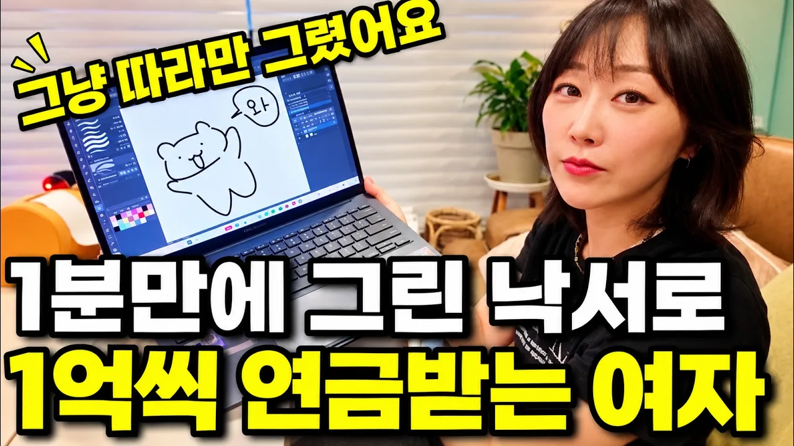
NEW"60대 똥손도 돈 벌어요" 낙서했던 그림들 모아서 신박한 방법으로 1억 넘게 연금 받는 여자 ▶"60대 똥손도 돈 벌어요" 낙서했던 그림들 모아서 신박한 방법으로 1억 넘게 연금 받는 여자
'낙서로 연금을 받아요' 선언 → PD '이런 걸로도 돈을?' → 1분도 안 걸린 그림 언급, '그림 잘 그릴 필요 없다' + '연금=죽을 때까지 받는 돈' 정의
심리3초 만에 후킹 키워드(낙서·연금·1분) 다 던지고 시청자 의심을 PD가 먼저 대신 말해 방어
총 매출 3,428만7,500원 화면 + '첫 달 매출' 자막, '평범한 직장인이었다' 자기 낮춤
심리구체 단위까지 적힌 숫자로 신뢰, 직장인 출신으로 '나와 같은 사람' 동일시
초봉 180만·7년차 280만 현타 고백 → '60대 후반 남성 완전 컴맹 수강생' 캐릭터 사례 예고
심리저임금 공감 + 나이·컴맹 한계 깨는 극단 사례로 '나는 더 유리하다' 심리
전자책('억대 수익 비밀') 보여주며 '지금은 1억 넘게' 언급 → PD가 '꿈꾸사 구독자에게 주시면 안 될까요' 선물 예고
심리리드마그넷 존재를 오프닝에서 미리 심어 끝까지 보게 하는 보상 예고
정식 인사·자기소개('낙서로 연금 버는 이모티콘 작가') → PD '어떻게 낙서로 연금?' → 카톡 이모티콘 설명
심리하이라이트 몽타주 후 본편 진입, 생소한 아이템을 '카톡'이라는 전국민 도구로 즉시 이해시킴
TV 보면서 그리던 낙서 실물 공개 → PD '너무 대충 그린 거 아니에요?' → '글씨 하나로도 이모티콘 된다' 반전
심리PD가 시청자 의심을 대변하고 출연자가 더 낮은 허들(글씨 하나)로 받아쳐 '나도 가능' 강화
억대 수익 비밀 담은 전자책을 꿈꾸사 구독자에게 달라는 PD 요청(오프닝 예고, 본 CTA는 15:38 댓글 조건)
낙서·연금·1분 후킹 몽타주 + 3,428만 매출 숫자 + 직장인 180만→280만 현타 + 전자책 선물 예고 + 자기소개·카톡 이모티콘 설명 + 대충 그린 낙서 실물 공개
말풍선(글씨) 이모티콘이 10대 인기 3위 증거 + '이거 하나로 직장인 월급' + 판매 중 이모티콘 99개 + 자는 동안에도 입금 + 이모티콘으로 산 테라스 집·작업방 투어
첫 달 매출 3,428만·순수익 1,200만 회고 + '정산 전엔 안 믿었다' + 오래된 이모티콘도 계속 팔림 + 6년 지속 + 이모티콘 플러스 구독(월 3,900원) 알고리즘 추천 = 연금 구조 설명
'평생 효자' 강조 + PD '믿기지 않는다' → 입금 내역 증거(한 달 여러 번 입금, 카카오·라인·밴드·외주) + '통장에 얼마 있는지 모른다' + PD가 구독자용 방법 공개 요청 + 장비 필요 없음·소파·여행지에서 패드로 작업
클립스튜디오로 토끼 라이브 시연(선 하나·대사·색칠) + '1분도 안 걸림' + 못 그려도 됨 + 멈티 32개/움티 24개 세트 규격 + '움직이는 게 잘 팔린다'는 편견 반박(요즘 대세는 멈티)
꿀팁 '나를 이모티콘화해라'(취미·직업·주부 일상) + 수강생 사례: 주부의 '꼬지리 남편' 이모티콘, 직장인의 '외주 지옥' 이모티콘 + PD '디자이너만 하는 부업 아닐까 의심했는데 용기 얻음'
출연자 초창기 못 그린 노트 공개 + 혼자 맨땅 헤딩 8개월~1년 + 배우면 10배 빠름·평균 5주 승인 + 수천 명 수강 통계 + PD '노하우 정리한 거 없나' → 전자책 '억대 수익 비밀' 공개
전자책 '댓글 예쁘게 달면 드림' 조건 CTA + 드림카 공개(20대부터 꿈꾼 차, 문 열면 조명) + 드림하우스·드림카 둘 다 이모티콘 덕 + 직장 7년 180만→280만 현타·승진 누락 재서술
인스타에 올린 낙서에 단골 술집 사장의 '이모티콘 나오면 귀엽겠다' 댓글 한 줄이 인생 전환 + 강아지 아키와 이름 동일 감성 + PD 요청으로 움티 제작 시연 → 초보용 눈코입 템플릿 공개
템플릿 80개 보유 + PD '몇 개만 주시면' → 샘플 템플릿도 댓글 조건 선물 + '다 똑같은 모션 아니냐' 의심 선제 대응(크기·위치 자유 수정) + '누가 하면 좋냐→전국민, 나이·학력·그림·컴맹 무관' + PD 하루 무료 강의 요청 → 수락, 고정댓글 안내
Q처음 시작할 때부터요?
A네, 첫 달에 매출 3,428만7,500원을 벌었다며 화면의 정산 숫자를 그대로 가리킴.
Q근데 어떻게 낙서로 연금을 받아요?
A카톡 이모티콘을 낙서 스타일 쉬운 그림으로 만들어 팔면 되고, 자신은 쉽고 빠르게 낙서처럼 그려서 번다고 설명.
Q아니, 귀엽다기보다는 이거는 너무 대충 그린 거 아니에요?
A대충 그린 것도 많고 심지어 글씨 하나로도 이모티콘을 만들 수 있다며 리액션 말풍선 예시를 즉석에서 제시.
Q대표님은 혹시 이 말풍선 이모티콘으로 얼마 버셨어요?
A정산 전이라 정확치 않지만 이거 하나로 직장인 월급 정도는 들어올 거라며, 카톡은 전국이 쓰기 때문이라고 근거 제시.
Q이모티콘 연금 받고 있는 거 개수가 몇 개 정도 돼요?
A99개이며 자고 있을 때도 아파 누워 있을 때도 누군가 쓰고 있어 계속 입금되고, 이 집도 이모티콘으로 샀다고 확장.
Q이게 통장에 들어온 거예요? 실제로 돈이
A3,428만은 매출이고 순수익은 약 1,200만이었으며 정산 전까진 100만 벌까 했는데 실제로 들어와 그때부터 6년간 계속했다고 답함.
Q아까 연금처럼 들어온다 그랬어요. 그게 어떻게 가능한가요?
A월 3,900원 이모티콘 플러스 구독이 취향 알고리즘으로 추천해 주기 때문에 오래된 이모티콘도 계속 쓰이고 매달 입금된다고 설명.
Q(입금 자료) 이게 뭐죠?
A입금 내역인데 5월 9일 두 번 등 한 달에 여러 번 나눠 들어오며 카카오 외 라인·밴드·외주까지 자동화돼 있다고 답함.
Q대표님만 혼자 돈 벌지 말고 꿈꾸사 구독자분들도 이모티콘으로 돈 벌 수 있도록 실제 하는 방법 좀 알려 주시면 안 될까요?
A거창한 장비 없이 소파·여행지에서 패드로도 가능하다며 클립스튜디오 시연으로 이어감.
Q이렇게 하는 거 맞아요? 거짓말 아니에요?
A맞다면서 대신 세트 단위라 멈티는 32개, 움티는 24개를 만들어 올려야 한다고 규격을 설명.
Q근데 움직이는 게 더 잘 팔리지 않아요?
A그것도 편견이고 요즘 대세는 멈춰 있는 이모티콘 '멈티'라며 초보는 멈티부터 하라고 권함.
Q노하우 같은 것도 다 정리해 주실 거 같은데 그런 건 없을까요? 한번 보여 주시면 안 돼요?
A템플릿·영상·전자책이 많다며 '이모티콘으로 억대 수익 번 비밀' 전자책을 꺼내 보이고 댓글 예쁘게 단 분께 준다고 조건 제시.
Q대표님이 생각하기에 이 부업은 누가 하면 제일 좋을까요?
A일 안 해도 따박따박 통장에 찍히는 연금 받고 싶은 전국민이며 나이·학력·그림 실력·컴맹 전혀 상관없다고 답함.
댓글을 예쁘게 달면 억대 수익 비밀 전자책 + 움티 템플릿 샘플 증정, 하루 무료 이모티콘 강의 개설 → 신청 링크는 고정 댓글
조회수 상위 6편. 제목을 누르면 6개 항목 분석이 펼쳐지고, 모든 시점은 유튜브 해당 장면으로 연결됩니다.
돈터치·배움에 끝은없다와 완전히 같은 템플릿(같은 운영 주체의 소형 채널, 영상 5편·최고 27만). 상단 작은 인용("남편들 전부 퇴사한대요 ㅋ", "그냥 다 풀게요", "하루 30분만 일해요") + 하단 2줄(행위→결과, 형광연두). 5편 중 3편이 돈터치 영상의 재업로드(코스트코 햇반·100억 가족·백수아빠). 차별점은 '부업하는 아줌마들' 시리즈 — 주방 설거지·아기 놀이방 등 '엄마의 공간'을 배경으로 씀.
돈터치와 동일 문법. 5편 중 4편이 따옴표 인용 시작. '아기엄마·온동네 엄마들·주부' 등 엄마 페르소나 집중. 시리즈 표기 '(부업하는 아줌마들 1화/2화)'로 연속 시청 유도.
돈터치 대본 그대로(코스트코 가격비교 → 사기 고백 → 3원칙 → 택배 고통 → 자기소개). 시리즈 편은 '옆동 아줌마가 알려줬어요' + '10일 만에 2,500만' + '60대 할아버지도' + 수익 화면으로 시작하고, 1화 끝에서 2화 출연자(스승)를 만나러 가는 구조로 연결.
재업로드 3편 = 돈터치 10등분과 동일. 시리즈 2편은 ①수익 화면·근무시간 3시간 ②'유튜브 수익 4번째 방법(쇼핑 태그)' 퀴즈 ③홈쇼핑·연예인 PPL 영상 재편집 원리 ④쿠팡 파트너스 24시간 쿠키 ⑤비밀 프로그램(골든파인더) ⑥캡컷 편집 시연(단축키 5개, 20분 타이머 검증) ⑦TTS 대본 프롬프트 ⑧후반 3초 훅 앞으로 ⑨경단녀·빚 1억 5천 서사 ⑩스승/제자 상호 방문 + 단톡방.
돈터치와 같은 반박형 + 시리즈 편에서는 '뻥치는 거 아니에요?', '캡처 아니에요?', '시간 재서 검증해도 돼요?' 같은 검증형이 강함. 스승-제자 관계를 PD가 연결('옆동 아줌마한테 배웠다는 그 선생님').
돈터치와 동일(추천 대상·가족 변화·전자책 단톡방·실행력). 시리즈 편은 '빚 1억 5천 다 갚고 쇼핑몰 폐업하며 박수 받고 나옴' 감정 서사 + '전자책+프롬프트+골든파인더 3일권 삼총사' + 다음 편(스승) 예고로 마무리.
코스트코에서 햇반 쓸어담아 5억 버는 아기엄마
코스트코 진열대 51,990 vs 64,000 '올려놓기만 하면'
심리메커니즘 즉시(돈터치 대본 동일)
'돈 없이 시작' + '사기 아닌가' 고백 + '이틀 뒤 매출' + 무자본·무재고·무광고
심리의심 선제 + 리스크 제거
코로나 수입 0 → 쿠팡플렉스 택배 월 200 '서러웠다'
심리고통 서사
'월 1,500 버는 40대 육아맘 진니쌤' → '여기가 어디? 코스트코, 남들은 사고 저는 판다'
심리정체성 + 현장 프레임
'오늘 왜 출연?' → 사기 아님 알리려고 → PD '초반에 돈 많이 든 거 아니에요?'
심리동기 + 첫 반박
PD '월별 키워드·소싱처 시청자분들 나눠주시면 안 돼요?' → '고정 링크 타고 단톡방 들어오시면 다 나눠드림'
몽타주 + 자기소개 + 코스트코 진입(돈터치 #1과 동일 대본 재편집)
PD 반박(자본) → 티슈 13,990 vs 19,500 시연 + '브랜드 제품 팔아도?'
국민커피 마진 + 1차 CTA(키워드·소싱처) + CS·지재권 반박 + 시식
'하루 50개' + 수익 인증(8월 4,300만·순익 1,500·부가세 5억 4천)
카탈로그 매칭 5분 등록 시연 + 잘 팔리는 상품 구별 + 월 10시간
쿠팡 비중 + 마진계산기 시연 + 2차 CTA + 지마켓 베스트 소싱
ChatGPT 이미지→텍스트 지재권 우회 + 비주류 브랜드 꿀팁 + 맘카페
장단점 + 추천 대상(육아맘·워킹맘·경단녀) + '프로그램 안 쓰는 이유' + 본업 병행
왜 시작(코로나·건설업 남편·택배) + 남편 퇴사 + 가족 비즈니스석 여행 + 레드오션 반박
'왜 안 하나 → 의심' + 3차 CTA(전자책) + 삶의 변화(아이와 시간) + 수강생 50대 주부 400 + 실행력·꾸준함
Q지금 여기가 어디예요?
A코스트코라며, 남들은 물건을 사지만 자신은 여기서 특별한 방법으로 물건을 판다고 답함.
Q오늘 어떤 얘기 들려주고 싶어서 출연하신 거예요?
A초기 자본 안 든다기에 속는 셈 치고 시작했는데 이틀 뒤 첫 매출, 지금은 대기업 연봉만큼 번다고 답함.
Q초반에 돈이 많이 들어가서 수익 나신 거 아니에요?
A돈 없는 상태에서 시작했고 실제로도 초기 자본은 안 들었다며, 유아용 티슈를 코스트코 13,990원·쿠팡 19,500원 예시로 약 5,000원 마진을 설명.
Q그럼 일은 어디서 해요?
A집에서 하며 노트북만 있으면 여행지·카페 어디서든 가능하다고 답하고, 커피믹스 51,990원 vs 64,000원 사례를 덧붙임.
Q반품이나 교환하시는 분들 있으실까요?
A생필품은 반품·교환이 거의 없는 게 큰 장점이라 답하고, 직접 찍은 사진은 지재권 문제가 없다고 설명.
Q말씀만으로는 못 믿겠는데 수익 인증 해주시면 안 돼요?
A8월 매출 4,300만 원(월말 6천 예상), 평균 월매출 5천만·순수익 1,500만, 최대 6,500만·순 1,700만이라고 화면으로 인증.
Q세금 낸 거나 쿠팡에서 돈 들어온 거 보여주시면?
A본인 사업자 2개로 2025년 2억 9천, 남편 사업자 2억 9천 합쳐 총 5억 4천 매출이라 답한 뒤 소싱·등록 과정을 시연.
Q이렇게 간단한 거예요?
A상세페이지를 일일이 안 만들어도 돼 상품 등록에 5분도 안 걸린다며, 잘 나갈지 모르니 일단 다 등록해 본다고 답함.
Q어떤 분들한테 가장 추천하세요?
A자신처럼 아기 키우는 육아맘·워킹맘 등 시간이 애매한 분들에게 추천하며, 프로그램은 돈이 들고 가격 관리가 안 돼 안 쓴다고 답함.
Q끝물·레드오션 말 많은데 어떻게 생각하세요?
A시작할 때도 레드오션 말이 많았지만 지금도 잘 벌고 있다며, 그건 실패한 사람이나 시작 안 한 사람들 말이라고 반박.
Q쉬운 일인데 왜 사람들이 많이 안 하는 거예요?
A사기 아닐까 의심해서 안 하는 것 같다며 남편도 1년 고민 후 시작했다고 답하고, 단톡방 참여자에게 전자책 제공을 안내.
Q삶이 달라진 점이 있다면요?
A남편이 퇴사해 아이와 여행 등 시간적 여유가 생겼고, 금전 걱정이 덜해 아이에게 더 좋은 걸 해줄 수 있게 됐다고 답함.
고정 댓글 링크 타고 단톡방 들어오신 분들께 전자책까지 다 드리겠습니다
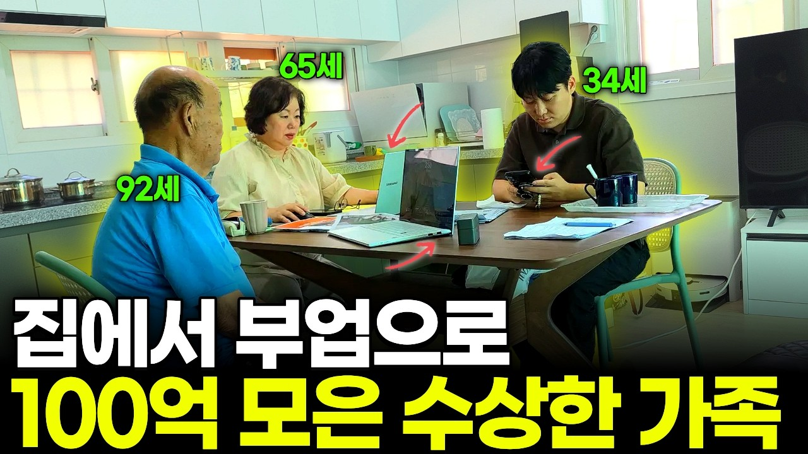
"전세계가 다 하는데 한국인만 몰라요" 65세 엄마도 2,000달러 벌어요 외국인만 꿀 빠는 부업으로 100억 모은 가족 ▶"전세계가 다 하는데 한국인만 몰라요" 65세 엄마도 2,000달러 벌어요 외국인만 꿀 빠는 부업으로 100억 모은 가족
새 차 → 현금 72억 → '자고 일어나면 하루 3천만'
심리자산 충격
'성실은 가스라이팅' + 성수동 건물 친구들 0원 시작
심리가치관 전복 + 동료 증거
AI 승인 비서 2초 → '이게 다예요' + 매뉴얼·템플릿 예고
심리쉬움 + 선물
'세계 1등 구글 부업 40억, 순자산 100억 알파남' → 시장 큰 데서 → 첫 집·부모님 차·리모델링
심리정체성 + 논리 + 효도 서사
PD '시청자분들께 (템플릿) 주실 수 있을까요? 배송까지?' → 초보자 필요한 것 모아서
몽타주 + 정체성 + 첫 집(돈터치 #4 동일)
상방 없는 부업·나스닥·7억 7천·고정비 1,200
3단계 메커니즘 + 100개 사이트 + 온라인 건물주 + '다음은 뭐예요?'
통장 72억 + 25억 매출·순익 70% + 할아버지 집
돈 되는 키워드(이슈·고단가) + 미스트롯 + 깻잎김치 사례
알뜰폰 5시간 공부 비판 + 람보르기니 + 할머니 후회
6살 수첩 + 강아지 + 왕초보 튜토리얼(네이버 대안)
네이버 3계정 + 승인 비서 + 1차 CTA
애드포스트 절차 + 책자 + 트립닷컴·아고다 + 네이버 참여
어머니 황금 키워드 + 세대 가치관 + '블로그 만드세요' + 전국민 앱 목표
Q안산 살다가 한 방에 여기로 오게 된 거예요?
A맞다며 첫 집이라 답하고, 1등 구글 부업으로 부모님 차·안산 집 리모델링·할아버지 집 수리까지 하고 약 100억 자산에 연 2~3억 이자가 나온다고 답함.
Q15만 원짜리 컴퓨터로요?
A제조업은 5~10억 설비 투자가 필요하지만 자신은 15만 원으로 시작했고, 국내 월 수익 1위로 나스닥 상장사에 초청됐으며 자고 나면 하루 3천만 원씩 벌렸다고 답함.
Q왜 이렇게 (고정비가) 적게 나갔어요?
A글만 쓰는 일이라 인건비 외 추가 비용이 없고 창업비 15만 원에 상방이 없어 월 7억이 들어왔으며, 이미 100억 넘게 번 지인을 보고 시장 크기를 알았다고 답함.
Q어떻게 100개를 혼자서 운영해요?
AAI 덕분에 가능해졌고 오프라인 매장(2~3억)과 달리 즉시 생성 가능해 하루 열 개도 만들며, 글 하나로 구글·유튜브·네이버·쿠팡파트너스·틱톡 등에서 수익이 나는 '온라인 건물주'라고 답함.
Q(어머니) 섭외 한번 해주면 안 돼?
A연락은 해보겠다면서 블로거들은 집에서만 일하길 좋아한다고 하고, 승인난 블로그·다음 비밀 채널은 200~500만 원, 많게는 5천~1억에 거래된다고 답함.
Q뭐 배송까지 해주실 수 있나요?
A고정 댓글에 단톡방 링크를 남기겠다고 하고, 인증 요청에 전세금 제외 현금 72억이 있으며 다음 달엔 100억 가까이 될 것이라고 답함.
Q왜 이렇게 높아요, 순수익률이?
A매출은 돈을 넣어 펌핑할 수 있으므로 순수익 높은 사업만 하며, 할아버지 집 수리·부모님 대출 상환·집과 차 구매 후에도 73억이 남았으니 실제론 더 벌었을 것이라 답함.
Q이것도 현금으로 샀어요?
A리스로 보증금 2억 5천에 월 400만 원을 내며 경험값이라 생각하고, 과거 학자금 대출·택배 시절 당근마켓 가성비 소비와 달리 관점이 바뀌었다고 답함.
Q할머니 성공 보고 돌아가셨나요?
A성공 직전 너무 바빠 보여드리지 못해 안타깝고, 돈 쓸 시간은 유한하니 50년 뒤 100억보다 젊을 때 빠르게 벌어 주변에 베푸는 게 중요하다고 답함.
Q왕초보도 따라할 수 있게 설명 부탁드려도 될까요?
A구글은 초보 승인이 어려워져 대안으로 네이버 블로그 개설·글쓰기 방법을 알려주겠다 하고, 1인당 3개 운영 가능한 네이버 아이디를 할아버지 명의로 세팅해 애드포스트 월 50만 원 '디지털 월세'를 주겠다고 답함.
그냥 이거 보고 네이버 블로그 만드세요, 글 하나라도 (템플릿·책자는 중반 단톡방 CTA)
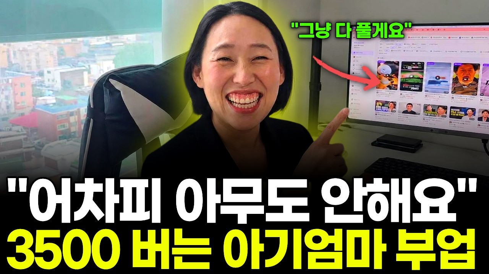
NEW"어차피 알려줘도 아무도 안해요" 남편보다 잘버는 40대 아기엄마의 비밀 쇼츠 ▶"어차피 알려줘도 아무도 안해요" 남편보다 잘버는 40대 아기엄마의 비밀 쇼츠
하이라이트 콜드오픈: 영상 하나 700만 뷰→80만 원, 조회수 2.4억→2,900만 원, 3개월 차에 월 1천만 원 달성 발언 몽타주
심리숫자 폭탄으로 첫 3초에 스케일 각인 — 증거 선제시로 이탈 방지
65세 수강생 월 450만 원 + 코로나로 실직한 과거 + PD의 '이게 핵심이네' 반응 컷
심리'나이 많아도 된다'·'바닥에서 시작' — 시청자 자기투영 + 핵심 노하우가 있다는 기대감
PD '틈새시장에서 꿀 빨고 계셨네요' → 출연자 '꿀단지' + 시작 계기(영업 없이 나만 잘하면 되는 일) + 하루 50만 원 찍힌 경험 + '집에서도 자신감' 감정 컷
심리희소 시장 프레임 + 인간관계 스트레스 없는 일 소구 + 돈→자존감 서사로 정서적 후킹
본편 시작: 아기 등원시키고 온 출연자 등장 → 자기소개 '쌍둥이 키우며 월 1천만 원 버는 40대 아기엄마 쇼츠'
심리워킹맘 페르소나 즉시 호명 — 육아맘 시청자 동일시 + '월 1천'과 아기엄마의 대비
PD '무슨 30초짜리 영상에서 천만 원이 나와요, 뻥치는 거 아니에요?' → '차근차근 알려드릴게요, 따라와 보세요'
심리시청자 의심을 PD가 대변해 신뢰 확보 + 튜토리얼 약속으로 끝까지 볼 이유 제공
육아 병행 가능 여부 질문 → 하루 2~3시간 작업 + '자고 있어도 유튜브는 밤새 보니까 알아서 돈 벌리는 사기적 구조'
심리시간 제약(육아) 반론 선제 해소 + 패시브 인컴 환상 심기
해외 예능 쇼츠 소재 찾는 법을 상세히 적은 자료를 댓글 링크 단톡방 입장자에게 제공
1/10 콜드오픈 숫자 몽타주(700만 뷰=80만 원, 3개월 차 월 1천) + 등원 후 등장·자기소개 + PD '뻥치는 거 아니에요?' 의심 + 하루 2~3시간·잘 때도 돈 버는 구조
2/10 4살 쌍둥이 + 집 대신 소형 사무실(나만의 아지트) 얻은 이유 + 남편 '알아서 해라' 지지 + 루틴(업로드→영상→자유시간) + 편집 어려운 사람용 자체 프로그램 예고·초보/고령 가능 확언
3/10 채널 열어 조회수 증거 시연 + 프로그램 없던 시절 하루종일 노가다→프로그램 개발로 2~3시간 단축 + 1달 수익창출·2달 500·3달 1천 타임라인 + 구독자 4.5만인데 월 1천(쇼츠는 구독자 무관)
4/10 아이템 공개: 한국 예능 몰카를 일본어로 번역한 해외 예능 쇼츠(일본인 리액션·토론 문화) + PD '틈새시장 꿀' + 저작권 반론(방송사가 230개국 언어별로 찾지 않는다, 오히려 홍보) + AI 문제로 전환
5/10 소재 찾기(피드에 뜨는 유사 채널) + 프로그램 시연: 번역 버튼 → AI 받아쓰기(영·한) → 직역 → 한국 쇼츠 스타일 변환 → 일본어 대본까지 버튼 클릭만으로 2분
6/10 일본어 음성 자동 생성(히라가나도 모름) + 컷편집 버튼: 링크 넣으면 키워드 찾아 자동 컷 + '딸깍하면 다 해준다' + 영어 듣기평가처럼 문장 찾던 과거 대비 인건비 절감 프레임
7/10 제목 후킹 5개 자동 생성(제목이 80%) + 음성 생성 + 캡컷 자동 실행·사전설정 틀 + 자막 위치·얼굴 확대 등 후터치만 손으로 + '초보자도 편집 기본 다 됨'
8/10 채널명·채널아트(캐릭터/일러스트/심벌) 자동 생성 시연 + 첫 CTA(소재 찾기 자료 → 단톡방) + 고령자 반론: 65세 캐나다 수강생(복붙도 못하던 분이 영상 제작) + 최고 수익 수강생 질문
9/10 편집 15~20분, 기획이 핵심 + 집으로 이동 '아기엄마로 재출근' + 빨래·청소 현장 + 과거사: 강사→코로나 실직→쿠팡파트너스·배달→임신·출산→창업 강의 다수·제품 소싱 공장 순회 고생담
10/10 플렉스(친정어머니 김치냉장고) + 메인 CTA(노하우 전자책 → 댓글 링크 단톡방 → 택배 발송) + 끝물·레드오션 반론('끝물 시장에서 3개월 1천 가능?', 안 하는 사람 덕에 꿀) + 준비물 없음·컴퓨터만 + 추천 대상·초보 유의점·달라진 점(여유·자신감·부부관계)
Q이거는 어떻게 시작하게 되신 거예요?
A사람 신경 안 쓰고 영업 없이 나만 잘하면 되는 일을 찾다가 이게 너무 좋아서 시작했다고 답함.
Q솔직히 예상하셨어요? 1천만 원씩 벌 거라는 거.
A하루 50만 원씩 찍히는 걸 보고 '진짜 돈 되는구나' 확신이 들어 본격 시작했다고 답함.
Q도대체 어떤 일 하시길래 월 1천만 원씩 벌고 계신 거예요?
A자기만의 특별한 방법으로 30초짜리 쇼츠를 편집해 월급 이상 수익을 매달 낸다고 답함.
Q무슨 30초짜리 영상에서 천만 원이 나와요, 뻥치는 거 아니에요?
A아니라며 방법을 차근차근 알려줄 테니 따라와 보라고 튜토리얼을 약속함.
Q이렇게 아기들 등원시키고 육아까지 하면서 할 수 있는 일인가요?
A하루 2~3시간만 쓰며, 유튜브는 밤새 보니 자는 동안에도 돈 벌리는 구조라고 답함.
Q사무실을 따로 얻으신 이유가 있을까요?
A집엔 쌍둥이·고양이가 있어 청소·설거지에 끌려서, 나만의 아지트를 꿈꿔 소형 사무실을 얻었다고 답함.
Q따로 나와서 일하시는데 남편분은 뭐라고 말씀 안 하세요?
A남편은 내가 잘 버니까 하고 싶은 대로 자유롭게 하라고 지지한다고 답함.
Q저런 영상 하나 만들려면 시간이 얼마나 걸리는 거예요?
A초기엔 프로그램 없이 하루종일 만들어 삶의 질이 떨어졌고, 프로그램 개발 후 하루 2~3시간으로 줄었다고 답함.
Q구독자 수가 몇 명이나 되는 거예요?
A구독자 4.5만 명인데 쇼츠는 구독자와 무관하게 조회수가 나와 월 1천이 가능하다고 답함.
Q저런 영상들 올리면 저작권 문제는 따로 없어요?
A방송사가 230개국 언어로 번역해 쓴 사람을 찾을 열정도 없고, 오히려 홍보돼 좋아한다고 답함.
Q이렇게 하면 총 얼마 정도 시간이 걸리는 거예요?
A대본 만드는 버튼만 누르면 약 2분 안에 일본어 번역 대본까지 나온다고 답함.
Q제목은 최대 몇 개까지 만들어 주는 거예요?
A기본 5개씩 새로 뽑아주고, 마음에 안 들면 조금만 수정해 다듬을 수 있다고 답함.
Q프로그램을 자꾸 쓰시는데 나이가 많으신 분들은 일하기 어렵지 않을까요?
A복사·붙여넣기도 어려워하던 65세 캐나다 수강생이 지금 영상을 만들기 시작했다고 답함.
Q나도 대표님처럼 돈 벌어보고 싶다는 분들한테 도움 주실 수 있을까요?
A노하우를 전부 담은 전자책을 만들었고, 댓글 링크 단톡방 입장자에게 택배로 보내주겠다고 답함.
Q이런 거 끝물이다, 레드오션이다, 이런 말들에 대해 어떻게 생각하세요?
A끝물 시장에서 3개월 만에 1천을 벌 수 있겠냐며, 안 하는 사람들 덕에 꿀 빤다고 역공함.
노하우를 전부 담은 전자책, 댓글 링크 단톡방에 들어오는 분들께 택배로 보내드립니다
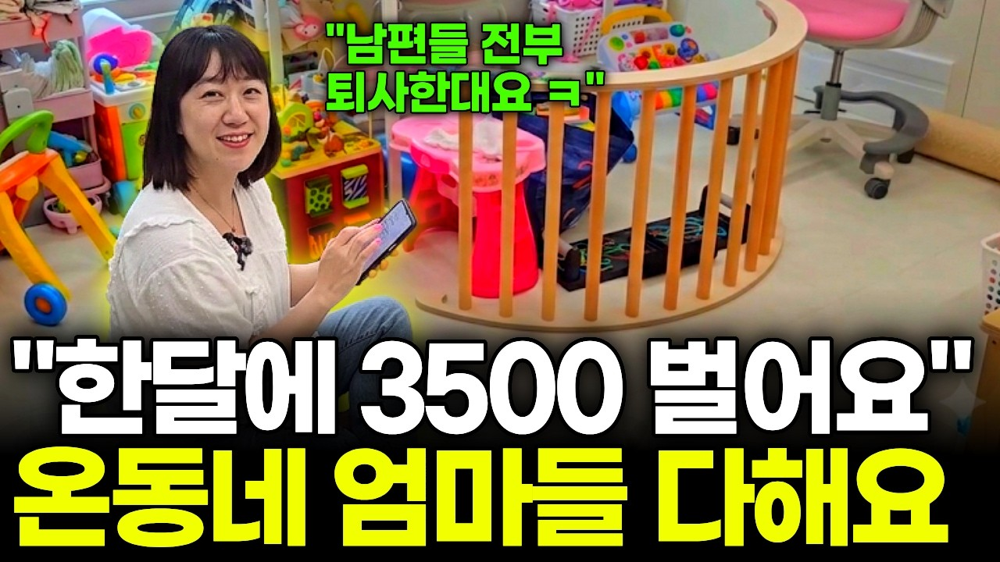
"부업으로 딸 국제학교 보냈어요" 온동네 엄마들이 남편보다 잘버는 비밀 부업 (부업하는 아줌마들 2화) ▶"부업으로 딸 국제학교 보냈어요" 온동네 엄마들이 남편보다 잘버는 비밀 부업 (부업하는 아줌마들 2화)
채널 7개 수익 나열(400·500·300·700·1,400·620) + '30분 일한다면서 어떻게 7개?' → '노하우 10가지'
심리규모 + 노력 최소화 + 비밀 예고
'20분 걸렸는데요' + 제자 엄마 2명 첫 달 1,500·1,700 + 빚 1억 5천 잔액 0 + 전자책·골든파인더 3일권
심리검증 + 사회적 증거 + 고통 + 선물
1화 출연자와 함께 방문 '옆동 아줌마한테 배웠다는 선생님' + 오늘 수익 200만 + '학원비 벌려다 월급 이상'
심리시리즈 연결 + 제자 검증
'유튜브 쇼핑 쇼츠로 월천 버는 아이 둘 엄마 승희쌤, 최고 3,500' + 쇼핑몰 폐업(부업이 본업 됨)
심리정체성 + 전환 서사
'시작의 물꼬를 틀어줄 프로그램(골든파인더), 책도 뜯었지? 프로그램도 뜯었지?' → 단톡방
7채널 수익 몽타주 + 제자 사례 + 1화 출연자와 방문 + 정체성
국제학교 학비 + 레드오션 반박('해보지 않고 하는 말') + 유튜브 쇼핑 보너스 80만×7채널
채널별 수익 화면('캡처 아니에요?') + 쇼핑 수익 구조(24시간 6.7%) + 100일 8만→1천만 성장
480만 벌어준 영상(명품백 소개 → 갤럭시탭 구매) + 6,300만 매출 기여 + 조회 300만
초기 실패(직접 촬영 1,200회) + '내 생각 넣으면 안 됨, 숫자가 말해줌' + 연예인 쇼츠 후 800만
골든파인더 프로그램(영상 점수 99.9) 시연 + 구독자 763명 채널도 터짐
1차 CTA + 20분 타이머 검증 시작 + '쿠팡에서 돈 쓰는 사람 = 3040 아줌마' + 뷰티·명품
캡컷 단축키 5개(Q/W/X/R) + 장면 분할 + 자막 자동
20분 완성 검증 + '후반 3초 훅 앞으로' 편집 킥 + 썸네일 프롬프트
음악원 8년·쇼핑몰 8년(1억 벌면 9천 사라짐) + 가족 여유 + 삼총사 CTA + 빚 1억 5천 갚고 폐업 박수
Q30분 일한다면서 어떻게 일곱 개 채널을 운영해요?
A자신만의 열 가지 노하우 덕분이라며 실제 20분 만에 영상을 만들었고, 가르친 엄마 두 명도 첫 달에 1,700만 원을 벌었다고 답함.
Q학원비 벌려고 이거 시작하지 않았어?
A처음엔 월 50만 원, 다음엔 학원비만 바라다가 월급 이상을 벌자 목표가 '집 하나'로 커졌다고 웃으며 답함.
Q왜 폐업했어요?
A쇼핑몰은 돌파구 없이 유지만 하던 상태였고 부업 유튜브가 월 3,500만 원을 찍어 본업이 되자 월세 나가는 쇼핑몰을 정리했다고 답함.
Q국제학교 비싸지 않나요?
A비싸다고 인정하며 유튜브 수익으로 포기했던 국제학교를 보냈고, 레드오션 우려엔 쇼핑몰 8년도 늘 그 소리였다며 안 해본 사람의 핑계라고 반박함.
Q이거 캡처 아니에요? 이것도 캡처 아니죠?
A캡처가 아닌 실제 화면이며 두 번째 채널은 달러 표기로 4,200달러(약 620만 원) 수익이고 이런 채널을 일곱 개 운영한다고 인증함.
Q시작하고 얼마 만에 수익이 나기 시작한 거예요?
A3개월 공부 후 100일 만에 8만 원, 둘째 달 13만 원, 셋째 달 80만 원이었다가 연예인 쇼핑 쇼츠를 만난 뒤 바로 월 1천만 원으로 올랐다고 답함.
Q480만원 벌어다 준 영상이 뭐였는지 볼 수 있을까요?
A포기하려던 시점에 명품백 소개 영상이 200만 뷰 터져 480만 원을 벌었고, 시청자가 갤럭시탭 등 엉뚱한 제품을 사도 수익이 떨어진다고 설명함.
Q어떤 영상을 어디서부터 어떻게 만들어야 되는 거예요?
A'연예인 추천템'으로 검색해 잘되는 채널을 보고, 구독자 대비 조회수·참여도를 종합한 '영상 점수'로 이미 터진 영상을 골든 파인더로 발굴한다고 답함.
Q30분이라고 하셨는데 시간 재서 검증해도 돼요?
A3시 40분부터 시간을 재며 시연에 응했고, 쿠팡 결제층인 3040 아줌마가 좋아하는 명품·뷰티 카테고리를 골라 파운데이션 영상으로 제작을 시작함.
Q처음 보는 분들은 편집 너무 어려운 거 아니에요?
A캡컷 단축키 Q·W·R·X 등 다섯 개만으로 편집하며, 장면 분할 기능이 컷을 자동 인식해 하루만 배우면 초등학생도 할 수 있다고 답함.
Q이전에는 어떤 거 하시던 분이었어요?
A음대 졸업 후 음악원 8년, 쇼핑몰 8년을 했지만 매출 1억에 순수익 1천만 원 남짓으로 모은 돈이 없어 월천 유튜브로 전향했다고 답함.
Q돈 많이 벌면 어디에 쓰시는지?
A가장 큰 플렉스는 빚 갚기로, 쇼핑몰 부채로 카드빚 1억 5천이 쌓였지만 리볼빙하며 유튜브에 투자해 다 갚고 박수 받으며 쇼핑몰을 그만뒀다고 답함.
어디서부터 시작할지 모르는 분들, 밑에 단톡방 꼭 넣어놓을 테니 전자책·프롬프트·골든파인더 3일권
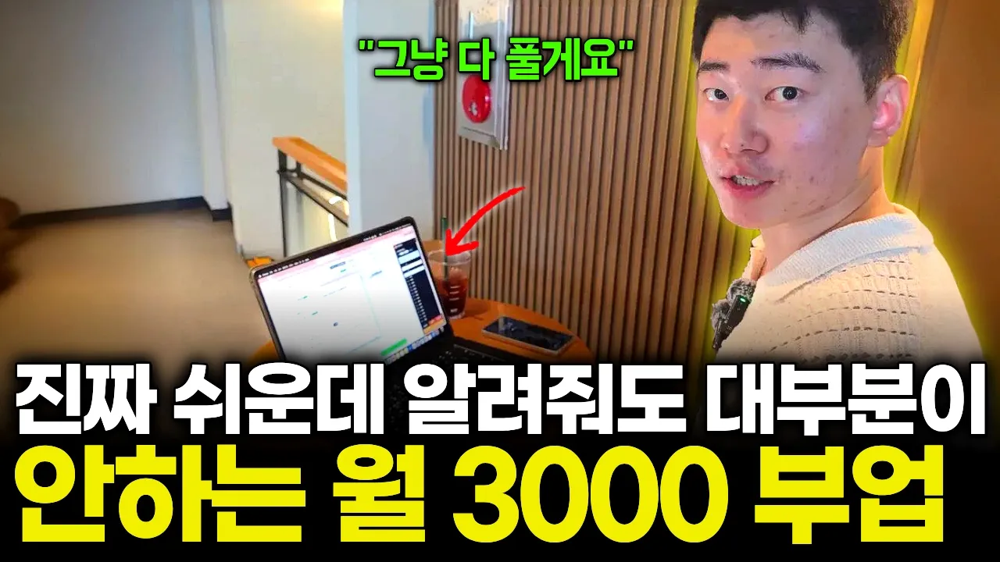
"하루 400만원 벌어요" 근데 알려줘도 아무도 안하는 월 3천 부업 ▶"하루 400만원 벌어요" 근데 알려줘도 아무도 안하는 월 3천 부업
'전국 900명만 한다' + '프로그램이 자동 주문, 24시간 365일'
심리희소 + 자동화
'30분보다 적게 일하는 거 아니에요?' + '순수익 3천' + '연예인이 광고' + '900명 중에도 나밖에'
심리노력 최소화 + 희소 강화
'수천만원 들여 개발, 진짜 할 분만' + '신용카드 한 장' + 'PD가 뽑은 1명 매출 복사해 드림'
심리선물 + 무자본 + 도전 약속
'하루 30분 월 3천 순익 뮤트' + 명품·유튜브 쇼핑 병행 + 33세 + 부산 서면(오프라인 비교 위해)
심리정체성 + 현장 프레임
PD '프로그램 시청자분들 써볼 수 있게?' → '부업 정보 얻으러 오신 분들 위해…'(단톡방)
몽타주(900명·자동 주문·순익 3천·매출 복사 약속) + 정체성 + 부산 서면
집에서 근무 + 시장 조사 외출 + '900명 = 0.001%' + 무신사 스탠다드 이동
무신사 오프라인 vs 온라인 가격 + VIP 할인·적립·쿠폰 = 마진 + 적립금 1,400만 예고
'대기업 제품 개인이 팔아도?' → 오히려 좋아함 + 카페 이동 + 프로그램 하루 5천~1만 개 수집 + AI 이미지 변경
계정별 하루 매출 300~500 + 순익 300 넘은 날 + 촬영 후 매출 공개 예고 + 주문 처리 원리(선물 보내듯)
자동 주문 프로그램 라이브(비밀번호까지 자동) + '손 떼고 있는 거예요?' + 1차 CTA
'왜 사람들이 비싸게 사나' 정보 격차 + 무신사 적립금 1,400만·쿠폰 380장 화면 + 주문 내역
카드 포인트 마진(10억 구매 → 3천만) + 3중 마진 + 5년 + 마진계산기
'PD가 뽑은 1명 매출 복사 콘텐츠' 약속 + 삶의 변화(원하는 사람과 시간)
전자책·1:1 오픈채팅(300명) + '왜 안 하나 → 어렵게 느껴' + 레드오션 반박 + 수강생 매출 인증 + 촬영 후 매출 사진 약속 + 차 3대(4억 5천)
Q실제 일하는 시간이 30분보다 적은 거 아니에요?
A실제 일은 프로그램이 잘 돌아가는지 감시하는 정도라고 인정하며 30분도 안 걸린다고 답함
Q3천만 원이요?
A매출이 아니라 순수익 3천만 원이라 강조하고, 연예인 광고로 소비자 수요가 늘어나는 구조라고 설명
Q나이가 어떻게 되세요? 언제부터 하신 건데요?
A33세이며 온라인 커머스는 오래됐지만 지금의 특별한 프로그램 방식으로 운영한 지는 약 5년이라고 답함
Q900명이요?
A대한민국에 1천 명도 안 되는 약 0.001% 수준이며, 이후 방법을 하나씩 다 보여주겠다고 약속
Q여기서 사다가 팔아요?
A정확히는 무신사 온라인몰에서 소매가로 사다 팔며, 매장은 인기 상품 디스플레이를 캐치하는 소싱 목적으로 방문
Q연예인 이미지 갖다 쓰면 걸리는 거 아닌가?
A재판매 자체는 법적으로 문제없고, 연예인 초상권은 AI로 이미지를 상품만 남게 변경해 대응 가능하다고 답함
Q뻥치는 거 아니에요? 어떻게 30분 걸리는 거예요?
A매출 한계를 느껴 자동 프로그램을 개발했고, 주문 수집·주소·네이버 결제까지 자동 처리되는 화면을 직접 시연
Q어이 뭐야? 이 손 떼고 있는 거예요?
A프로그램이 비밀번호 입력부터 결제까지 자동으로 돌아가 켜두고 다른 일을 하며 하루 200만 원을 번다고 답함
Q(프로그램) 한 달에 얼만데요? 대표님이랑 친하세요?
A프로그램은 월 20만 원 정도지만 대표와 친분이 있어 댓글 남기는 시청자에게 2주 무료 이용을 제공하겠다고 답함
Q왜 적립금이 1,400만원이에요?
A무신사 구매 시 적립금이 쌓여 정가 판매여도 적립금이 마진이 되며, 7월 주문내역·쿠폰 380장으로 실판매를 증명
Q처음 보는 분들은 마진 어떻게 계산해요?
A판매가와 원가만 입력하면 수수료·배송비 포함 마진이 자동 계산되는 툴을 만들어 단톡방 링크로 배포하겠다고 답함
Q진짜 대박인데 왜 사람들이 많이 안 해요?
A900명조차 어렵게 느끼고 안 팔릴까 걱정만 하며 해본 적 없어서라며, 자신의 방식은 블루오션이고 한 달이면 성과 확인 가능하다고 답함
댓글 적고 단톡방 들어오시면 전자책 배송 + 1:1 오픈채팅 + PD 선정 1명 매출 복사 콘텐츠
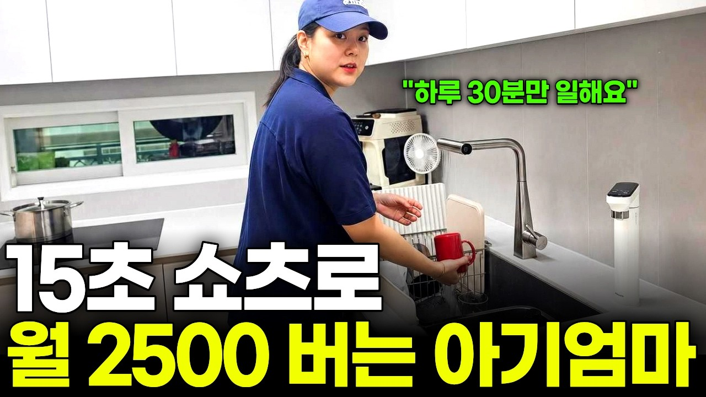
부업으로 집에서 "하루 30분" 월 2500만원 버는 주부 (부업하는 아줌마들 1화) ▶부업으로 집에서 "하루 30분" 월 2500만원 버는 주부 (부업하는 아줌마들 1화)
'10일 만에 2,500' + 영상 하나 2,200만 + '60대 할아버지도 탑' + '붙여넣기 끝'
심리즉시성 + 자격 박탈 불가 + 쉬움
'옆동 아줌마가 알려줬어요' + '40대 여성 본업 복귀 힘들다' + '솔직히 안 믿겼는데 되는구나'
심리구전 신뢰 + 경단녀 동일시 + 의심 고백
(2화 예고 장면) 스승 방문 + 오늘 200만·지난달 2,500 + '아이 키우며 영상 하나로 월 3천 아기엄마'
심리시리즈 훅 + 정체성
'20초 영상이 3천? 뻥치는 거 아니에요?' + 근무 9~12시 + '자는 동안 연금처럼'
심리검증형 질문 + 수동소득
PD '선생님 가이드북 시청자분들께?' → '선생님 허락 맡아야… 집까지 배송, 단톡방'
몽타주(2,500·60대·옆동 아줌마·의심 고백) + 스승 예고 + 정체성 + '뻥치는 거 아니에요?'
'어렵게 생각하는 엄마들' + 12년 직장인→경단녀 3년 + 유튜브 수익 '4번째 방법' 퀴즈
홈쇼핑·연예인 PPL 영상 재편집 원리 + '제조업자? 주부요' + '답답해서 못 참겠다'
쿠팡 파트너스 24시간 쿠키 + 다른 물건 사도 수수료 + 노트북·세탁기 구매 사례
선생님 가이드북 1차 CTA(배송) + 비밀 프로그램(터진 영상 발굴)
유튜브가 누끼·스티커 자동 + '노다지 시장' + 같은 상품 쿠팡 검색
60대 할아버지 동기 + TTS 대본 프롬프트(잼스 5번) 1초
음성 변환 + 후킹 멘트 + 2차 CTA(프롬프트, '댓글 예쁘게') + 썸네일 프롬프트
비용 19,800원 + '옆동 아줌마 믿었나' + 경단녀 40대 + '내가 주인' 자유
스승 방문(2화 연결) + 오늘 213만 + 학원비→집 한 채 농담 + 둘째 출산 후 빚 증가 서사 + 다음 편
Q그거는 어디서 보고 배우신 거예요?
A옆동 아주머니가 알려줬다; 40대 여성은 본업 복귀가 힘든데 3천만 원 번다는 말 처음엔 안 믿었지만 하라는 대로 하니 됐다.
Q20초짜리 영상이 3천이 나와요? 뻥치는 거 아니에요?
A진짜 보여줄 수 있다며, 업로드하면 유튜브가 계속 일해 자는 동안에도 조회수·수익이 연금처럼 쌓인다고 답했다.
Q육아하면서도 할 수 있는 일인 거예요?
A아침 9시~12시 하루 3시간만 근무하면 되고, 영상은 자는 동안에도 수익을 내니 육아와 병행 가능하다고 답했다.
Q(유튜브 수익) 하나가 뭘까요?
A쇼츠 조회수익은 크지 않고 380만 뷰였으니 조회수 수익이 아닌 특별한 방법이라며 직접 보여주겠다고 답했다.
Q어떻게 2,500만원이 나와요?
A구독자가 아니라 알고리즘에 내 영상이 뜨게 만드는 게 핵심이며, 자기만의 소싱 방법이 따로 있다고 답했다.
Q저작권 그런 거 문제 되지 않아요?
A피해갈 방법이 있다며, 홈쇼핑에 나온 상품은 가장 많이 찾는 상품이니 똑같진 않아도 관련 상품(토너크림)으로 영상을 만든다고 했다.
Q대표님은 화장품 제조업자예요? 사다 파는 것도 아니시겠죠?
A제조도 사입도 아닌 주부라며, 쇼츠 옆에 스티커처럼 붙는 상품 태그 구조로 수익이 난다고 설명하기 시작했다.
Q1,000원씩 모아서 2,500만원 만드신 거예요?
A작은 물건만 산다는 건 오해로, 화장품 보고 들어온 사람이 맥북·세탁기·TV까지 사서 6%라도 모이면 2천만 원 넘는다고 답했다.
Q토너 크림이 잘 팔리는지는 어떻게 알아요?
A비밀 프로그램으로 터진 영상·황금 채널 지표를 검색해 판단하며, 예능 속 과자도 검색해 팔릴지 확인한다고 답했다.
Q음성 대본이 어려울까요, 쉬울까요?
A선생님이 준 잼스(Gemini) 명령어 5번만 입력하면 TTS 대본이 1초 만에 여러 개 나와 골라 붙이면 되니 쉽다고 답했다.
Q3년 육아 후 새로 시작하는 게 두렵지 않았나?
A(자막에서 답변 확인 불가)
Q(스승께) 어떤 계기로 시작하게 되신 거예요?
A둘째 낳고 조리원 천장 보며 뭐 해먹고 살까 고민, 쇼핑몰 쉬는 동안 빚이 늘어 유튜브를 공부하기 시작했다고 답했다.
단톡방 들어오셔서 얘기 주시면 가이드북 집까지 배송 + 프롬프트 (댓글 예쁘게·좋아요 약속)
조회수 상위 12편. 제목을 누르면 6개 항목 분석이 펼쳐지고, 모든 시점은 유튜브 해당 장면으로 연결됩니다.
돈터치 계열 레이아웃(하단 2줄)이지만 강조색이 '노랑'이고 인물 얼굴 클로즈업 비중이 높음(8편 중 6편이 정면·반정면 얼굴). 상단 작은 노랑 라벨로 '타인 사례'를 붙임("65세 엄마도 월 500", "70대도 이거로 돈 벌어요", "이건 78살도 벌어요", "67세 아빠 57세 엄마", "빚쟁이→20억 건물주") — 출연자보다 더 낮은 자격의 제3자를 제시해 '나도' 심리 강화. 빨간 화살표·매출 화면 표식은 거의 없음 → 증거보다 '사람'으로 설득.
8편 중 7편이 따옴표 인용 시작. 인용 내용이 '감정·고백형'("통장 잔고 0원이었는데 1억씩 기부해요", "안하면 바보에요", "영상 안 만들어도 돼요") → 돈터치의 '희소·도발형'보다 부드러움. 유튜브 자동번역 영문 제목(100자)이 붙어 실제 노출 제목은 60~70자로 김. 숫자는 매출(34억·40억·75억)과 나이(69살·60대·78살)를 짝지음.
돈터치 골격(몽타주→자기소개→반박 질문)과 같지만 **몽타주 첫 컷이 '고통'**인 편이 많음: '사기꾼이 다 갖고 도망', '유방암·쓰러짐·간질', '출근길에 사고 나서 죽고 싶다', '학자금 대출 2천'. 이어 숫자·자격 박탈 불가(78세·60대·컴맹)·시간(10분·30분)·선물('무료 특강', '이번이 마지막') 순. 특징: 오프닝에 **'이번이 마지막 강의'·'6월 15일 이후엔 못 배움'** 같은 마감 희소성이 들어감.
1/10 고통 몽타주+정체성+현장(창고·마트·올리브영) → 2/10 세금·구조 설명(농산물 면세, 쿠팡 정산 2달) + 이력(MBC 리포터·대기업·공무원) → 3/10 도구 시연(쿠팡윙·아이템스카우트·알리프라이스) → 4/10 고통 서사 풀(사기·코인·암·빚) → 5/10 수강생 사례(59세 4개월 1억·67세 첫 달 300) + AI 상세페이지 30분 → 6/10 1차 CTA(전자책·챗봇, '정성 댓글') + 상·기사 등 권위 증거 → 7/10 마진 구조·욕구 시장·비밀 링크 힌트 → 8/10 편집·TTS·프로필 세팅 시연 → 9/10 가족(할아버지 101세·부모 인터뷰·기부) → 10/10 '무료 특강' CTA + 실행 격언 + 채널 구독자 응원.
돈터치보다 공손·공감형. 반박형('사기 아니에요?')은 줄고 **'힘드셨을 때가 언제였어요?', '삶이 어떻게 달라지셨나요?', '75억 있으면 기분이?'** 같은 감정·결과 질문이 많음. 숫자 되묻기("34억이요?", "40억이요?")는 유지. 매 편 클로징에 **'배워야산다 구독자분들께 응원 한 말씀'**을 고정 질문으로 넣어 채널 브랜딩.
①가족·효도 서사(할아버지 101세까지 지원, 부모 인터뷰, 어머니 기부) ②'왜 알려주나' → 베풀면 돌아온다(기부 1천만·6천만) ③'이번이 마지막'·'6월 15일까지' 마감 희소 ④**무료 특강** 링크(고정댓글) ⑤실행 격언('하면 되니까 하세요', '고민은 늦습니다', '용기를 내서 모험') ⑥'배워야산다 구독자 응원' 고정 코너 ⑦자산·차 공개는 적음.
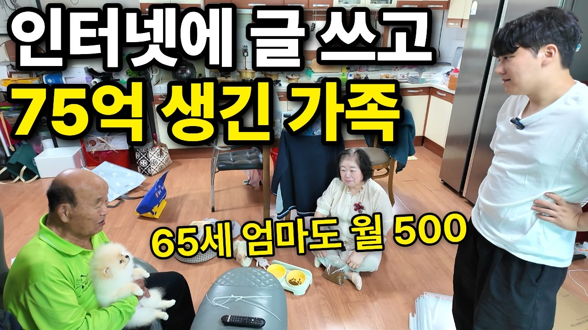
"한국인만 몰라서 못 벌어요" 전세계 1등 부업으로 통장에 75억이 들어왔다 ▶"한국인만 몰라서 못 벌어요" 전세계 1등 부업으로 통장에 75억이 들어왔다
'자고 일어나면 하루 3천만' + '현금 74억' + '얼굴 노출·사업자·리스크 없음, 공짜'
심리숫자 + 진입장벽 0 나열
'올리기만 해도 10만원 이벤트' + '천장 없음, 씹억' + '어르신들 다 함, 마우스도 못 하던' + 어머니 '진짜 달러? 가짜 아닐까?'
심리즉시 보상 + 자격 박탈 불가 + 3자 의심 고백
'안 배우면 바보' + '다른 데선 200~500만원, 다 드릴게요'
심리역심리 + 선물 가치
'전세계 1위 부업 40억, 7~80억 알파남' → PD '글만 써서 40억?' → '현타 왔다'
심리정체성 + 되묻기 + 겸손
미스트롯 투표 글 하나 500~1천만 → 월드컵 시청 방법 → 워드프레스
심리구체 사례 즉시
PD '이 자료도 주시는 거예요?' → '초보자용 자료 드림' + 33:51 '하루 빼서 1시간 무료 특강, 세팅·승인 자료 다 드림'
몽타주(3천/일·74억·공짜·10만원·어머니 의심·200만원 자료) + 정체성 + 미스트롯·월드컵 사례
구글 보너스 1,800만 + 쿠팡 파트너스 + 나스닥 상장사 비밀 채널(국내 1%) + 카카오 6억 수강생
'블로그는 폐쇄적, 끝물이라며 경쟁자 막음' + '못 믿으면 하지 마세요' + 강의비 5천만 + 75억 자산
기프티콘 감사 + '안 줘도 돼요 돈 많으니까' + 할아버지 집 이동 + 강아지 크림 + 학자금 대출 2천 서사
검색 키워드 원칙(월드컵 조편성 O, 감독 분노 X) + 운전기사 250만 + 100만원×10년 계산
시골 할아버지·강아지·가족 대화 + 핫스팟으로도 가능 + 1차 CTA(자료)
AI 글 '사람처럼·경험한 척' + 카드뉴스 비서 + 이미지 6장 생성 + 쇼츠 수익 2주 전 변경
어머니 인터뷰: 59세 시작, 65세, 월 300~500, 3시간, '20억 됐을 때 멘붕·가짜 아닐까 몰래 확인' + 8개월 승인
'살아계셔 주셔서 감사' + 50만원×10년 할아버지 101세 + '기적의 주인공' + '하면 되지(정주영)'
50억 되고 아파트 빚·인테리어·차 + 할아버지 보답 + '위기=기회, AI 위기라는 사람은 못 범' + 5년 전 영상 보라 + 무료 특강
Q글만 써서 40억을 버신 거예요?
A네, 글 쓰고 자고 일어나면 하루 3천만 원 순수익이 찍혀 있어 현타가 왔고, 평생 못 벌 돈이라 생각했다고 답함.
Q어떤 글을 쓰시길래 3천만원씩 버는지 알려주실 수 있을까요?
A미스트롯 '투표하러 가기' 같은 쉬운 글 하나로 500만~1천만 원 벌었고, 워드프레스(구글 블로그)에 검색 키워드 글을 쓴다고 설명.
Q이런 글 하나로요?
A월드컵 'KBS 실시간 보기' 예시를 들어 네이버 아닌 워드프레스(구글 블로그)에 쓰고, 검색마다 뜨는 광고로 전 세계가 돈 번다고 답함.
Q사업자 등록증도 필요 없는 거예요?
A네, 얼굴 노출도 사업자 등록증도 필요 없어 리스크가 없고 초보자에게 특히 좋다고 답함.
Q대표님이 글을 잘 써서 그런 거 아니냐?
A아니라며 깻잎김치 구매처 글로 하루 300만 원 번 예를 들고, 핵심은 키워드 선정이며 글은 AI가 써 줘 초보와 차이 없다고 답함.
Q75억씩 있으시면 어떤 기분이신가요?
A소비를 안 해 똑같이 살고, 투자 없이 현금이 쌓이는 구조라며 축구·PT·필라테스 하며 짬짬이 하는 게 AI 덕분이라고 답함.
Q어머니도 성과가 나신 거예요?
A네, 어머니는 세 군데에서 수익이 들어오고 100만 원 안팎을 오가며, 시니어용 컴퓨터 용어 사전도 무료로 준다고 답함.
Q예전에는 여유롭지 않으셨던 거예요?
A몇 년 전만 해도 학자금 대출 2천만 원뿐이었고, 2022년 3월 10일 이후 블로그 하나로 인생이 바뀌어 만족하며 산다고 답함.
Q5년 전에는 어떤 거 하셨던 거예요?
A대주전공 회장 운전기사였고 월 250만 원으론 대출 2천만 원 갚고 집 사기 어려워 부업 결심, 끝물이라던 댓글에도 수십억 벌었다고 답함.
Q이 자료도 주시는 거예요?
A초보자용만 준다며 '레드포스트 승인 비서'에 승인용 글 작성해 줘라고만 입력하면 주제·글이 자동 생성돼 복사 붙여넣기로 끝이라고 답함.
Q(어머니) 적은 나이에 시작한 건 아닌데 어렵지 않으셨어요?
A어려웠다며 아들이 바빠 물어보기 힘들었지만 통장에 돈이 쌓여 20억이 됐을 때 멘붕이 왔다고 답함(59세 시작, 월 300~500).
Q배워야산다 구독자분들한테 응원의 말 한마디?
A혼자 잘된 게 아니라 부모님·할아버지 덕이라 감사하며, 91세 할아버지도 희망을 갖고 살듯 위기인 분들에게도 기회가 온다고 답함.
하루 빼서 1시간 무료 특강 — 관심 있으신 분 참여하시면 필요한 자료 다 드릴게요
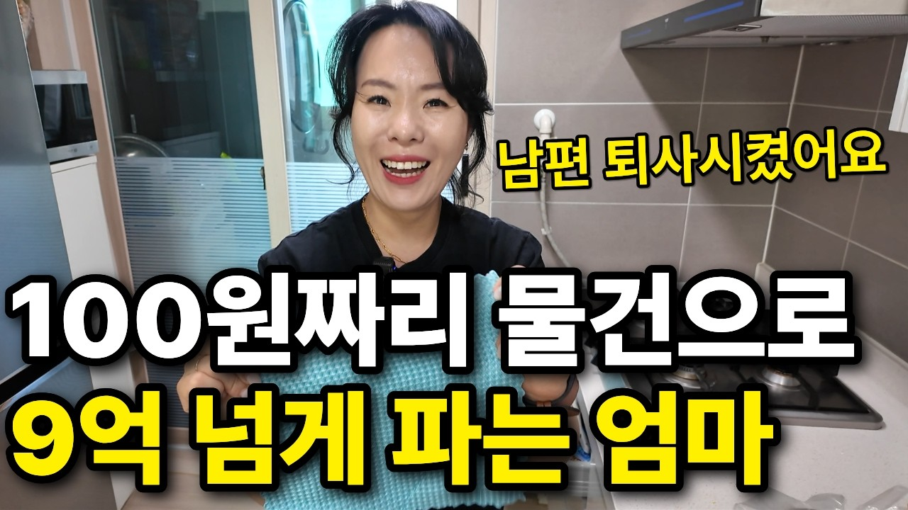
"69살 왕초보도 돈 벌어요" 100원짜리 물건으로 9억 넘게 파는 주부의 비밀 ▶"69살 왕초보도 돈 벌어요" 100원짜리 물건으로 9억 넘게 파는 주부의 비밀
'작년 10억, 남편 퇴사' + '100원에 가져와 10개 12,000' + '8개월 만에 월 1억 수강생'
심리가족 결과 + 마진 + 수강생
'제주도·일본에서 온 수강생, 58년생' + '만원어치 가져가서 15~20만' + '집에만 있으면 자존감 떨어져요'
심리사회적 증거 + 주부 감정
'쿠팡에서 돈 되는 거 다 팔아 남편 퇴사시킨 건통' → 강아지 노을이 → 행주 조각 100원
심리정체성 + 친근 + 실물
'오늘 강의 실습 있어서 밥 준비하고 나가야' + 수강생 40~50대 주부 PC 못 함
심리일상 병행 + 페르소나
PD '왕초보도 해볼 수 있게 꿀팁·자료?' → '무료 강의 오시면 자세히' + 16:31 '댓글 잘 써주시면 영상 자료까지'
몽타주(10억·남편 퇴사·100원·58년생·자존감) + 자기소개 + 행주 100원 + 강의 실습
7년차 + 요가 병행 + 순익 15~20%(2억) + 아침 루틴(아이 밥·강아지·재활용) + '남편이 마신 소주'
애견미용사 → 스마트스토어 '결혼하고 바보됐네' → 여유(학원·여행) + 폐차장 본네트 15만원 눈물 + 남편 제네시스
'왜 알려주나 → 시장 커서' + 일요일 실습(박스·바코드) + 직원 0 외주 + 원가 300원 상품
막달까지 근무 + 매출 인증(과일 5억·행주 1.9억) + 과일 위탁 판매 + 비밀 도매처(수강생만)
킹스베리 독점 3년 + '남들 안 팔 때 팔고 빠짐' + 쿠팡 9,900~2만원대 검색 + 알리프라이스 400원
AI 상세페이지 무료 + 1차 CTA(무료 강의) + 등록 후 주문 → 위탁 + 샘플 5개 만원
'댓글 잘 써주시면 영상 자료' + 상세페이지 영상 필수 + 통장 매일 입금(영상+쿠팡) + 작업 공간 + 애제자 코치(9년 회사 → 1억)
수강생 인터뷰('멱살 잡고 끌고가 주실 것') + 전자책 『판매자로 성장하기』(3천 부) + 강아지
'남편 대기업 이사, 3개월 졸라 퇴사' + '여자 경제력 = 권력, 부부싸움 때 내가 나감' + 도매몰 계획 + 무료 특강 + '엄마들 자존감·미용실 눈치'
Q어떤 거 파셨길래 남편분 퇴사까지 시키셨던 거예요?
A행주 조각·과일·공산품 등을 다 팔며 작년 약 10억 매출을 냈고, 100원에 가져온 행주를 10개 묶어 12,000원에 팔아 남편 퇴사시켰다고 답함.
Q200원에 가져와서 7~8,000원이요?
A맞다고 긍정하며, 오늘은 수강생들과 쿠팡 입고 실습이 있어 밥 준비 후 나가야 하고 실습 없이는 물건을 못 보내니 꼭 한 번은 만나서 실습한다고 답함.
Q나이가 있으신 분들도 계신가요?
A40~50대 주부가 많아 PC 못 하는 분이 많지만, 본인도 애견미용사 출신으로 PC를 못 해도 10억 가까이 했으니 특별한 기술 없이 가능하다고 답함.
Q집안일까지 하면서 일까지 하시는 게 힘들진 않으세요?
A쿠팡에 물건만 보내 놓으면 알아서 처리되고 CS가 없어 아침 한 시간 정도면 되며, 30대 후반에 엑셀도 못 만지며 시작했지만 지금은 AI가 있어 훨씬 좋아졌다고 답함.
Q크게 벌고 나서 달라진 점이 있으실까요?
A아이 학원 보내고 갑자기 여행 가는 여유가 생겼고, 예전엔 보험료 오를까 봐 남편 몰래 폐차장에서 본네트를 15만 원에 바꿀 만큼 빠듯했다고 답함.
Q잘 되면 혼자 다 하지 왜 알려주냐 생각할 수도?
A쿠팡 시장은 혼자 다 먹을 수 없을 만큼 커서 다 같이 벌자는 진심이며, 직원 없이 전부 외주·프리랜서로 하고 상세페이지도 AI가 만든다고 답함.
Q행주로 1.9억… 사기 아니야? 잡혀가는 거 아니에요?
A계정이 한두 개 더 있어 작년 총 9.5억 정도이며, 과일은 마진율 20% 이상으로 위탁 판매해 산지에서 바로 보낸다고 답함.
Q과일은 저장 못 하는데 어떻게 파시는 거?
A과일은 위탁 판매로 주문 정보를 도매처에 넘기면 산지에서 바로 발송하며, 수강생만 쓰는 비공개 도매처는 2kg 6,500원으로 일반 사이트보다 싸 마진이 높다고 답함.
Q왕초보분들도 해볼 수 있게 꿀팁이나 자료?
A물건을 먼저 사도 되지만 무서우면 먼저 등록해 주문이 들어오면 위탁처에서 배송하면 되고, 로켓그로스 체크만 신경 쓰면 된다고 답함.
Q시작하려면 필요한 자금이 얼마나?
A초보는 팔릴지 데이터가 없으니 샘플 5개, 2,500원짜리면 만 원 정도로 카드만 있어도 시작 가능하고, 예쁜 것 말고 데이터 보고 소량 테스트하라고 답함.
Q추가로 배워보고 싶은 분들께 한 말씀?
A애견미용사 출신으로 아무것도 모르고 시작했지만 하는 것과 아는 것은 다르니 망설이지 말고 도전하라며, 엄마들도 눈치 보지 말고 경제활동 하라고 무료 특강 링크를 안내함.
Q배워야산다 구독자분들께 응원 한 말씀?
A집에만 있으면 자존감이 떨어지니 나와서 도전하라며, 돈 많이 벌어 가정의 금융 치료를 같이 하자고 많이 알려주겠다고 응원함.
무료 특강 준비했어요, 밑에 링크 클릭하고 들어오시면 질문 다 답변 (+ 댓글 잘 쓰면 전자책·영상 자료)
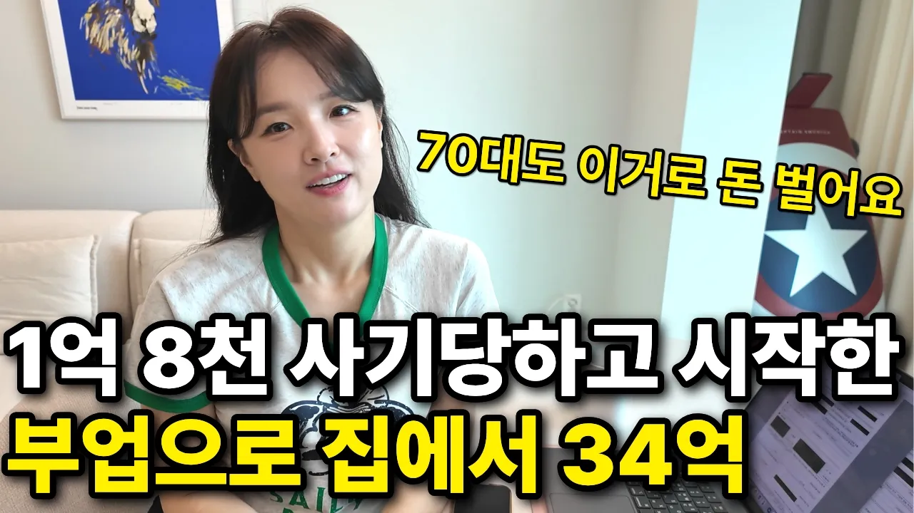
"통장 잔고 0원이었는데 지금은 1억씩 기부해요" 집에서 34억 찍게 해준 부업 ▶"통장 잔고 0원이었는데 지금은 1억씩 기부해요" 집에서 34억 찍게 해준 부업
'4년 전 통장 0원, 사기꾼이 다 갖고 도망' + '꽃이 아름다운지 모르고 살았다' + '34억인데 세금 140만원'
심리고통 + 감성 + 세금 반전(면세)
'이번 달 1억 8천' + '59세 은퇴 후 1억' + '하루 1시간 게임하듯' + '70대 농부 체험' + '컴맹이 밤새 울면서 시작'
심리숫자 + 시니어 + 노력 최소화 + 고통
'아쉬운 소식: 이번이 마지막이에요, 알고리즘 빨리 돌아서 많은 분이 알면 좋겠는데'
심리마감 희소성 선제
'농축수산물 판매 하대표, 34억' → PD '34억이요?' → 냉장고 '나를 부자로 만든 도다리·장어·딸기' + '집이 깨끗한데?' → 100% 위탁
심리정체성 + 사물 + 무재고
'해보신다고 하면 (자료) 드릴게요, 다 주면 안 돼' 밀당 + 23:01 '6월 15일 이후 못 배움, 고정댓글 링크'
몽타주(사기·0원·34억 면세·59세·70대·마지막) + 정체성 + 냉장고 사물 + 위탁 구조
600개 거래처 + 마진 15~20% + 농산물 면세(34억에 세금 140만) + MBC '고향이 좋다' 리포터 12년 전
쿠팡윙 카테고리·기간 설정(작년 시즌 그대로) + 아이템스카우트 참외 57,000개 + 납작복숭아 검색 18,000 vs 상품 8,200
농부 사기 서사('오늘 주문 들어온 만큼만 결제') + 빚 청산 + 자동 발주 프로그램
수강생 울면서 감사 + 59세 4개월 1억 + AI 상세페이지 30분(성주 참외) + 작년 6천만 기부
'다 주면 안 돼' 밀당 CTA + 도지사·서울시장상 + 농부 대신 판다 = 선순환 + 재구매 노하우
라이브커머스 억대 → 농부 창고 제안 믿고 물건 사서 사기 → 방송 중 눈물
깻잎 선별 작업장(200g) + CS 1천 건 중 7건 + 수강생에게 물건 공급(경쟁 X)
전단지 레시피로 마진 20%↑ + 수확 투어 + 70대 수강생 '농부의 땀' + 억대 vs 몇백
'이번이 마지막 강의, 6월 15일 이후 못 배움' + K-푸드 목표 + '너무 고생했다 버텨줘서 고마웠다' + '하대표한테 연락 주세요 손 잡아드릴게요'
Q34억이요?
A시금치·양파 같은 채소도 팔지만 진짜 돈 되는 건 알자이 도다리·짱어·딸기·흑곡 등 따로 있다며 실제 판매 상품을 직접 보여줌.
Q34억 하시려면 물건 가득해야 할 것 같은데 집이 너무 깨끗한 거 아니에요?
A판매 상품은 집에 하나도 없고 100% 위탁이라 주문서를 농가·어부에게 전달하면 그쪽에서 고객에게 택배를 보내는 구조라고 답함.
Q통장에 들어오는 돈은 얼마인가요?
A마진은 매출의 15~20%이며 농축수산물은 부가세 면세라 34억을 팔고도 세금은 140만 원 미만, 공산품이면 3억 4천을 냈을 거라고 설명.
Q본업이 혹시 어떤 일? → 저를 모르시나요?
AMBC '고향이 좋다' 리포터 출신으로 12년 전부터 어린이 프로그램·골든디스크 등 방송 활동을 하며 부업으로 집에서 30억을 한다고 답함.
Q농부한테요?(사기) 빚은 다 갚으신 거예요?
A4년 전 농부에게 물건값을 선결제했다가 도망가 사기당했다며, 어떤 상황에도 돈을 먼저 넣지 말고 주문 들어온 만큼만 결제하라고 조언.
Q가족들이 알려달라고 안 하시나요?
A1억 8천 사기 후 6개월 만에 쿠팡 주문이 폭발해 밝아진 모습을 본 친구들이 먼저 알려달라 해서 지인들과 함께 벌고 있고 50대 수강생이 많다고 답함.
Q초보자가 볼 만한 자료는 없을까요?
A초보자용 전자책 '잘 먹고 잘 살기' 등 자료를 구독·댓글 시청자에게 주겠다며, 퇴근 후 하루 1시간만 게임하듯 해보면 삶이 바뀐다고 답함.
Q혹시 어떤 상 받으셨나요?
A충남도지사상·서울시장상·대한민국 우수상품 대상 등을 받았고, 농가 대신 온라인 판매를 맡아 농민이 일에만 집중하는 선순환 덕분이라고 설명.
Q어떻게 하다가 (라이브커머스) 하게 되셨던 거예요?
A코로나로 스케줄이 취소돼 놀던 중 리포터 시절 알던 농가들이 팔아달라 해 라이브커머스를 시작했고 억대 매출이 나와 직접 판매로 확장했다고 답함.
Q배우신 분들도 대표님이 검증한 물건 그냥 팔 수 있는 거예요?
A상품을 본인이 다 공급·검증하니 수강생은 시즌 상품을 찾을 필요가 없고, 농산물은 브랜드가 아니라 소개 방식만 잘 세팅하면 경쟁이 없다고 답함.
Q어떤 아쉬운 소식이죠?
A사업이 너무 커져 부업을 본업으로 올인해야 해서 이번 농산물 강의가 마지막이며, 6월 15일 이후엔 인프라·공급처를 줄 수 없다고 답함.
Q힘든 상황이신 분들께 응원 한 말씀?
A4년 전 통장 0원에 사기까지 당했지만 주저앉지 않고 버텨 살아났다며, 원망 대신 박차고 일어나 용기 내 도전하라고 응원함.
지금 보신 분들이라도 기회 잡을 수 있게 고정 댓글에 링크 (마지막 강의)
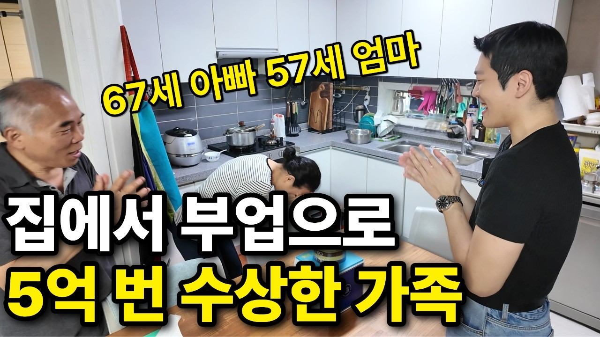
"엄마 아빠에 사촌까지 다 같이 벌어요" 온 가족이 부업으로 5억 번 비밀 ▶"엄마 아빠에 사촌까지 다 같이 벌어요" 온 가족이 부업으로 5억 번 비밀
'1년 10개월 4억 8천' + '61세 아버지·57세 어머니 하루 30분, 은퇴 후 보장' + '첫 달 2천만' + '70세 컴맹 독수리도'
심리숫자 + 부모 사례 + 자격 박탈 불가
'진짜 되는 길이면 가족끼리 하지' 반박 선제 + '60~70대가 인생 경험으로 더 잘함' + '자동차 몰라도 운전' + '유튜버만 아는 비밀'
심리의심 선제 + 시니어 우위 프레임
'00년생 27살, 가족 다 같이 5억' → PD '혼자 4억 8천?' → 빵집 '어머니 생일 + 첫 달 300만 축하 케이크'
심리정체성 + 가족 감동 현장
어머니 70년생 첫 달 300 + 아버지 프로 유튜버 + 자퇴
심리가족 증거 + 의외성
PD '왕초보 위한 자료?' → '쇼츠 마스터 가이드 3권, 댓글 써주신 분께'
몽타주(4.8억·부모·70세·가족끼리 반박) + 정체성 + 빵집 케이크
쇼츠 15~20초 700만 + '돈 되냐' 의심 = 틈새 + 70세 제자 수익 영상 + '왜 알려주나 → 큰 시장'
가족 8명 + 통장 4억 8천 화면 + 한국 654만 조회 영상 = 해외 1,278만 원본 재활용
한국 68,000 vs 일본 57만 채널 썸네일 동일 + 순서·좌우반전 + 인기 영상 10만 개 DB
자동화: 다운로드 → 대본 추출 → 대본 AI → 엔터 → 7개국 채널
부업 다 해봤는데 다 안 됨(블로그·에어비앤비·구매대행) + AI 80개 제작 + 채널별 1억 8천·1억 3천
쿠팡 파트너스 '자기 영상도 6.7% 페이백' + 노트북 20만 + 1차 CTA(가이드 3권)
70세 제자 첫 영상 조회 6회 → 월 2천 + 가족 쇼츠 단톡방 + 아버지 인터뷰(66세 시작, 첫 달 300)
어머니(학교 선생님) 전철에서 영상 찾기·30분 + '자식에게 안 기댐' + 수익 전액 기부
실버버튼 목표 + 4개월 10만 + '하루 만에 2천만 조회' 사례 + '가족에게 시키는가가 증거' + 400명 관찰 '끝까지 가면 무조건' + 수산시장 중3 → '모험·용기'
Q온 가족이 순수익으로 5억을 버신 거예요? 혼자서 4억 8천?
A순수익 5억이 맞고 본인 혼자 4억 8천을 벌었다며, 방법은 빵집에 잠깐 들른 뒤 다 알려주겠다고 답함.
Q빵집은 왜 오신 거예요?
A70년생 어머니 생일이자 지난달 유튜브 시작 후 첫 달 300만원 수익을 축하하려 케이크 사러 왔다고 답함.
Q50살이신데 저번 달 시작해서 바로 300만원?
A바로 벌었고 아버지도 프로 유튜버라며, 어렵지 않고 부모님도 충분히 할 수 있는 일이라 가족에게 알려줬다고 답함.
Q쇼츠로 몇백만원씩 버시는 거예요?
A쇼츠는 아직 블루오션이며 20분 만든 영상 하나로 700만원 이상 번 적도 많고, 70세 컴맹 제자도 수익창출 했다고 답함.
Q혼자 다 벌지 왜 다 알려주냐 생각할 수도?
A부모님뿐 아니라 60세 큰어머니·이모·사촌까지 가족 8명이 유튜브 수익창출 중이며 시청자용 자료도 많이 준비했다고 답함.
Q수익 인증 한번 해주실 수?
A통장 잔액 4억 8천을 보여준 뒤, 654만 조회 한국 쇼츠가 해외 1278만 조회 영상을 그대로 가져와 편집한 사례라고 답함.
Q남의 영상 써도 수익하는데 문제 없나요?
A오히려 유튜브가 권장하는 방식이라며, 유튜브 크리에이터스 코리아 공식 계정의 1월 18일 오해 해소 게시글을 근거로 제시함.
Q왕초보 위한 자료 주실 수 있는 게?
A직접 만든 글로벌·커뮤니티·쇼핑 쇼츠 전문 AI 세 가지를 고정 댓글 링크를 통해 무료 제공하겠다고 답함.
Q부모님 간단히 인터뷰해도 괜찮을까요?
A아버지가 작년 9월 66세에 본업과 병행해 시작, 퇴근 후 조금씩 편집해 첫 달에 300만원을 벌었다고 답함.
Q(아버지) 적은 나이 아닌데 어렵거나 힘들지 않으셨어요?
A쇼츠를 본 적도 없었지만 AI가 대본 쓰고 간단한 툴로 편집해 전혀 어렵지 않았고, 퇴근 후 30분씩 해 구독자 9천명을 모았다고 답함.
Q잘하는 분·못 하는 분 특징이 있을까요?
A400명 넘게 가르쳐 보니 끝까지 가는 사람은 무조건 성공하고 자신·시장·강사를 의심하면 실패하며, 연장자가 끈기로 오히려 유리하다고 답함.
Q어려운 상황 분들께 응원 한 말씀?
A중3부터 수산시장에서 일하며 인생을 바꾸려면 한 번은 모험해야 한다고 깨달았고, 용기 내 쇼츠를 시도하면 반드시 보답받는다고 응원함.
댓글 써주신 분께 유튜브 쇼츠 마스터 가이드 3권(2026 개정판) + 이후 더 좋은 정보
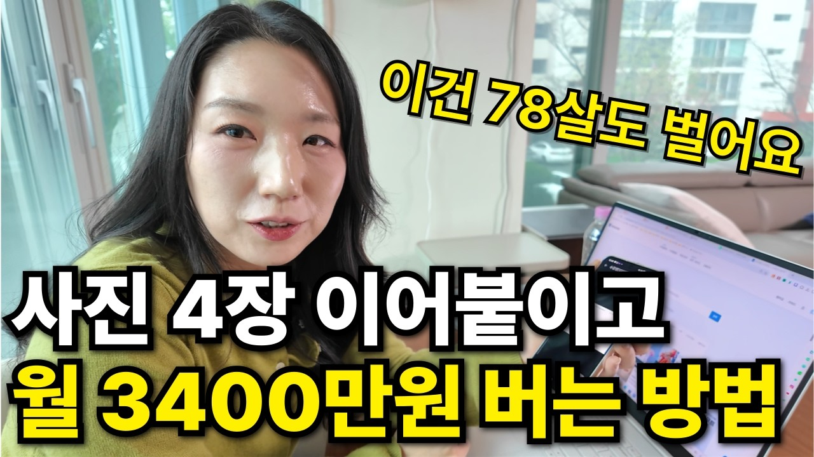
"영상 안 만들어도 돼요" 이미지 이어붙이고 월3400만원 버는 역대급 부업 ▶"영상 안 만들어도 돼요" 이미지 이어붙이고 월3400만원 버는 역대급 부업
'사진 세 장으로 월 3~4천 순익, 비용 0' + '78세도' + '타자만 치면, 편집 없이 사진 4컷으로 1천만'
심리노력 최소화 + 시니어
'손녀 마시는 거 다 줄 거라고' + 댓글 1.6만 + 영상 하나 400만 + 3,400만 화면 + '새벽 4~5시까지 일하고 병원' + '60~70대도 되면 진짜 쉬운 것'
심리감정 + 증거 + 고통 + 논리
'쇼츠로 돈 버는 멀' → '지금부터 보여드릴게요' → 마트
심리정체성 + 현장
'마트에서 돈 될 게?' → 블루베리로 쇼츠 만들 계획, 직접 안 삼 + 월 3~4천 순익 + 첫 부업 구매대행
심리메커니즘 티저 + 숫자 재확인
'타오바오 가입·로그인 방법 전자책, 따뜻한 댓글 달아주시면 무료'
몽타주(사진 3장·78세·손녀·400만·병원) + 정체성 + 마트 블루베리
쇼핑몰 2~3억 vs 순익 10% + 자금 3억 필요·정산 지연·CS → 쇼핑쇼츠 '완전 꿀'
댓글 1.6만 '링크' → DM → 3% + 24시간 장바구니 + AI 목소리 + '남 따라 하면 흥미 잃음'
쿠팡 카테고리·급상승·신규 키워드 + 타오바오 가입 주의(PC 가입 정지) + 1차 CTA(전자책)
타오바오 이미지 검색 + 제조사 영상 무료 사용 + 저작권 '오히려 좋아함' 99.9%
GPT 대본 봇 3버전 + 2차 CTA(챗봇, 정성 댓글) + 타입캐스트 TTS 캐릭터
인스타 프로필 키워드 세팅 중요(전자책) + 캡컷 편집
'편집 안 중요, 상품 선정이 90%' + 533만 흡연기 영상 댓글 1,979 + 후킹 멘트 정리본 3차 CTA
78세 수강생 50만원 '손녀 줄 것' + 추천 대상(자본 부담·반품 걱정) + 온라인 판매 7~8시간 vs 쇼츠 1시간 + 가족 병원비 300만
퇴사 후 여행 자유 + 판매처 확장 목표 + '10년 사무직, 컴퓨터 못 했다' + '3개월이면 익숙' + 질의응답 자리 링크
Q마트 아니에요? 돈 될 게 있는 거예요?
A직접 사서 파는 게 아니라 마트에서 블루베리 등 아이템 아이디어만 얻어 쇼츠를 만들어 올리고, 비용 없이 월 3~4천만 원 순수익을 번다고 답함.
Q블루베리 파시는 게 아니라 쇼츠를 만드시는 거예요?
A물건을 직접 사지 않고 무료 영상만 다운받아 쇼츠로 업로드하며, 요즘 과일류 쇼츠가 반응이 특히 좋다고 답함.
Q쇼핑쇼츠를 하시는 이유가 있으신가요?
A온라인 쇼핑몰은 월 2~3억 매출이어도 직원·사무실·광고비로 순이익이 10%뿐이고 정산 지연으로 자금 회전이 안 돼 쇼츠가 더 낫다고 답함.
Q그 3%만 모아서 월 3천만원?
A영상 하나로 400~500만 원까지 벌리는 구조이며, 남들 따라 올리면 이미 퍼진 영상이라 흥미를 잃어 수익이 안 나므로 상품 선정이 먼저라고 답함.
Q직접 녹음하고 촬영하고 다 하신 거예요?
A아무것도 직접 하지 않고 인터넷 영상을 가져와 AI 목소리로 만들었으며, 아이템스카우트로 상품 찾는 법부터 알려주겠다고 답함.
Q저작권 문제나 그런 건 없나요?
A소싱처에서 가져오면 지재권 걱정이 없고 판매자들이 오히려 홍보를 반기며, 걱정되면 메시지로 물어보면 99.9%가 쓰라고 한다고 답함.
Q이게 끝난 거예요?
A편집은 끝났고, 시청자는 주로 소리를 끄고 보니 자막 오타만 확인하면 되며 클릭률·구매전환을 결정하는 건 편집보다 상품이라고 답함.
Q이 정도 퀄리티로 만든 영상도 조회수 잘 나오는 편이에요?
A이 퀄리티로도 조회수가 터지며, 흡연기 소싱 영상이 533만 조회·댓글 1979개를 기록했고 상단 후킹 멘트가 클릭의 90%를 좌우한다고 답함.
Q(후킹 멘트) 방법도 있을까요?
A왕초보용으로 편집 없이 사진을 캡처해 자막만 치는 방식이 있으며, 78세 어르신도 이 방법으로 월 50만 원 수익을 냈다고 답함.
Q힘드셨을 때가 있다면 어떤 게 있으셨어요?
A첫 1천만 원 때는 메뉴판 가격 안 보고 시키는 소소한 행복이었고, 퇴사 후 전업으로 여행하며 시간을 마음대로 쓰는 게 가장 큰 행복이라고 답함.
Q나이 많거나 컴퓨터 못 하는 분들께 응원 한 말씀?
A10년 사무직으로 컴퓨터도 못 했지만 퇴근 후 새벽 5시까지 일하며 시작했고, 60~70대도 하는 만큼 3개월만 하면 익숙해지니 나이는 상관없다고 답함.
고정 댓글 링크 클릭 → 질의응답 자리 참여 (전자책·챗봇·후킹 멘트는 정성 댓글)
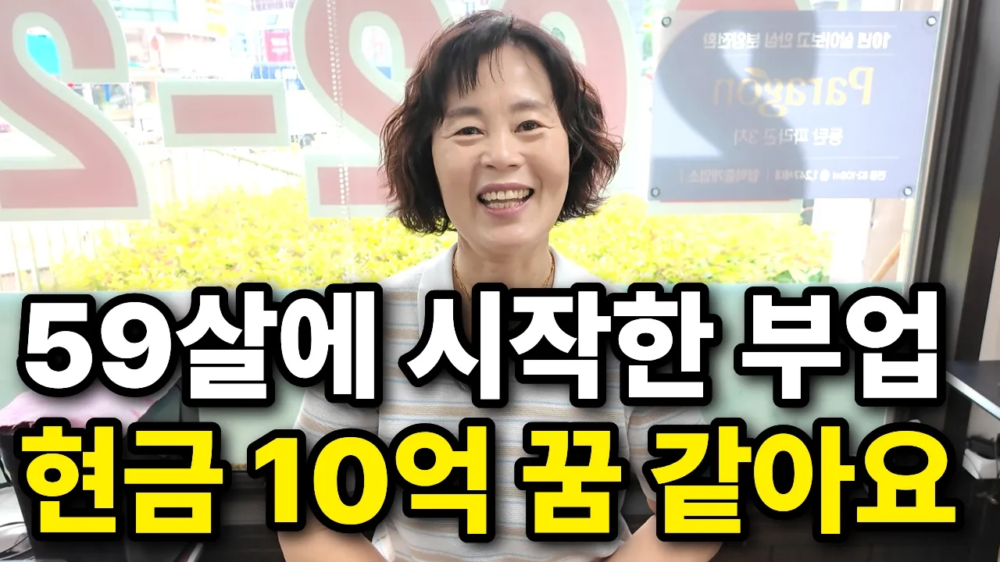
"안하면 바보에요 알면 하셔야해요" 부업으로 인생이 달라진 60대 ▶"안하면 바보에요 알면 하셔야해요" 부업으로 인생이 달라진 60대
'쓰러진 거예요, 간질' + '암이 된 거예요, 일도 못 하고 돈도 없고 끝났다' + '현금 10억, 4억 2천, 월 300'
심리고통(모자 2인) + 숫자
'60대라 속도 느려도 가속' + '16초 영상 200만' + '한글만 알면' + '안 하면 바보, 언니 오빠들 하셔야'
심리시니어 + 단위 수익 + 역심리 + 동년배 호명
'부동산 하는 이지현' → '부동산 알려주는 거예요?' → 부동산 한가할 때 쇼츠
심리정체성 + 의외성
67년생 60세 + 아들이 권유 '엄마 해볼래?' + 부동산 안 돼도 유튜브로 생활 + 월 300
심리가족 + 안정 소득
PD '꿀팁이나 자료?' → 아들: '고정댓글 링크 하나, 실패 줄이는 자료 선물처럼'
몽타주(간질·암·10억·16초 200만·바보) + 정체성 + 아들 권유
일본 영상 대본 제미나이 → 3줄 → 캡컷 자막 스튜디오 자동(아들 제작 프로그램)
'소비자였다가 아들 덕에' + '안 하면 바보, PD님도' + 20~30분 + 해외 쇼츠 선택 이유(우리 정서 아니까)
부동산 초보 실패·아무에게도 말 못 함 → 유방암·항암 1년 우울 → '유튜브 알았으면' + '애쓴 만큼 됨'
아들: 진입장벽 낮아 엄마에게 권유 + 어머니: '딸 친구 안 부러움' + 고등학교 노래·코딩 독학
아들 간질 발작 → 알바·배우 포기 → '실패 개념 없는 부업(편집 기술 남음)' + 사무실
16초 790만(피드 160+쇼핑 600) + 라쿠텐 해외 쇼핑 + '남이 잘하면 기뻐하면 됨' + 16초 200만·19초 100만
생산성 향상 + 50대 후반 남성 첫 달 130·두 채널 1천 + 59세 여성 500 + '오래 사는 게 짐인 세대'
인스타 315만 + 토스 300만 이벤트 '수요를 못 따라감' + '나도 잘할까·늦지 않았을까' 두 공포 반박 + 공정 사용
'자존감 낮을 때 성취감' + 고아원 1천만 기부·노트북·수박 + '선한 일은 돌아옴' + 아들 '엄마 그만 울었으면' + 자료 링크
Q돈 버는 거 알려준다 해서 왔는데 부동산 알려주시는 거예요?
A아니라며, 부동산 일과 병행해 유튜브 쇼츠를 만든다고 밝히고, 작년 5월 시작해 만 1년 정도 됐으며 아들이 권유해 시작했다고 답함.
Q나이가 어떻게 되시는 거예요?
A67년생 60세라고 답하고, 부동산은 반년 바쁘고 반년 한가한 일이라 그 틈에 아들 권유로 유튜브를 시작했다고 설명함.
Q부동산 수익이랑 비교했을 때 어느 정도?
A부동산 불황에도 쇼츠 수익으로 생활이 충분하며 월평균 300만 원, 잘된 영상 하나로 99만 원(조회수 700만)을 벌었고 첫 달부터 수익이 났다고 답함.
Q(편집) 어려워 보이세요?
A아기 퍼즐보다 쉽고 한글만 알면 되며, 소비자였던 자신도 아들 덕에 했으니 안 하면 바보라며 PD에게도 하라고 권함.
Q왜 해외 쇼츠로 하셨던 거예요?
A재밌고 폼 나 보여 시작했지만, 한국 영상을 일본으로 수출하면 우리 정서를 이미 알아 가공 없이 바로 적용해 훨씬 쉽다고 답함.
Q언제가 되게 힘드셨어요?
A아들 초등학생 때 부동산 실패로 누구에게도 말 못한 스트레스가 쌓여 유방암 수술·항암을 겪은 1년이 가장 우울했다고 답함.
Q아들이 유튜브로 잘 되실 줄 아셨던 거예요?
A절대 몰랐다며, 노래든 유튜브든 아들이 하겠다면 책임지라 하고 응원만 했고 코딩·유튜브 모두 독학으로 했다고 답함.
Q진짜 여기 사시는 거예요?
A침대가 있어 먹고 자며 알람에 일어나 출근하듯 직원과 인사하고, 월 600~800 정체와 카피 채널 증가로 고민했다고 답함.
Q16초짜리로?
A19초 영상으로 100만 원, 25초로 66만 원을 벌었고 10분이면 만들며, 달러로 들어와 환율 오르면 유튜버는 환호한다고 답함.
Q채널 두 개를 혼자 하신 거예요?
A혼자 두 채널로 월 1천만 원을 벌며, 퇴직 후 소득이 막막한 분께 59세 여성이 500만 원 번 사례를 들어 AI로 쉬워진 해외 쇼츠를 추천함.
Q꿀팁이나 자료 같은 거 있을까요?
A엄마를 가르치며 정리한 소스 찾기·편집·해외 공략 문서가 있으며, 천재가 아니어도 보고 따라 하면 된다고 답함.
Q오늘 촬영해 보셨는데 어떠셨나요?
A어릴 적 엄마가 아팠을 때부터 돈 벌고 싶었다며 감사함을 새삼 느꼈고, 힘든 시기인 시청자도 도전하라며 실패를 줄일 자료를 선물로 준비하겠다고 답함.
고정 댓글에 링크 하나 남겨 둘 테니 자료 받아서 꼭 실행해 보셨으면
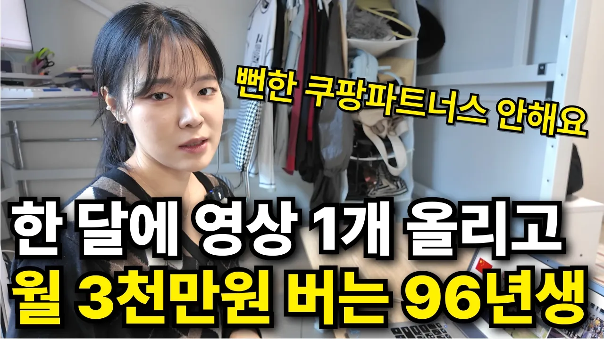
"뻔한 방법보다 10배는 더 벌어요" 틈새시장 공략해서 돈 쓸어담는 MZ ▶"뻔한 방법보다 10배는 더 벌어요" 틈새시장 공략해서 돈 쓸어담는 MZ
'출근길에 사고 나서 죽고 싶다, 그러면 출근 안 할 수 있는데' + '쇼핑쇼츠 6~10% 이상, 마진 30~40%'
심리직장인 고통 극단 + 비밀
'5월 1억 3천, 5,600 순익' + '한 달 1개 올려도 3천' + '구독자 0명도 됨' + '40대 주부 영상 2개로 수익화'
심리숫자 + 노력 최소화 + 자격 박탈 불가
'재고 리스크 없이 100~200만 맛볼 기회' → '쇼츠로 돈 버는 릴리' → 올리브영
심리안전 + 정체성 + 현장
'뷰티 크리에이터?' → 건강 코너 여성 유산균 → 영양제 영상 월 4천 + '마진 30~40% 비밀'
심리의외성 + 비밀 예고
PD '주실 수 있는 자료?' → 11:49 '주제 방향 잡아주는 프롬프트 전자책' + 14:11 '댓글 단 분께만'
몽타주(죽고 싶다·1억 3천·한 달 1개·구독자 0) + 정체성 + 올리브영 건강 코너
3년 + 현대 계열사 2년 반 340만 + 중국 유학 재벌 친구 → '10배 이상' + 여행·선물
영상 2개로 20만 수강생 + '편집 1~2시간이면 그다음 30분' + 왜 쇼츠(재고 안 팔려서)
'한 달 1개 올리고 자동' + 댓글 1천 개 정보 요청 + '1일 1영상보다 잘 만든 1개' + 매출 8천·7천·1억
쇼핑 링크 조건(1천 명·천만 조회) 우회 = 프로필 링크 + 다중 플랫폼 + 38만 구독 수강생도 몰랐음
1차 CTA(주제 프롬프트 전자책) + 인스타 '육아' 검색 댓글 유도 사례
'댓글 단 분께만' + 인스타 캐러셀 공식 + 대본 봇
5분 촬영·편집 + 고민 다루면 전환↑ + 샤오홍슈 영상 소싱(저작권 문제 없음)
6개월 퇴사 고민 '대기업 명함 떼니 아무것도' + 재고 눈물 + 방향성 + 3차 자료
'실행하는 분만 성과, 핑계 만드는 분 X' + 브랜드 목표 + 멘토 오픈채팅 + '직장인 리스펙' + 40대 경단녀·60대 손실 사례 + '고민은 늦습니다'
Q쇼츠로 어떤 식으로 벌고 계신가요?
A올리브영 건강식품 코너의 콜라겐·다이어트·혈당 등 여성 전용 제품 영상을 올려 10% 어필리에이트 수익을 얻는다.
Q화장품도 아니고 영양제 영상이 돈이 되나요?
A본인도 건기식 영상으로 월매출 약 4천만 원을 냈고, 폰 촬영·간단 편집만으로 마진율 30~40%, 순수익 2천만 원 가까이 벌었다.
Q그때는 월급 어느 정도셨어요?
A초봉 실수령 340만 원 정도였지만 2년 반 근무하며 성취감 상실·상사 눈치·틀에 박힌 업무가 힘들어 사업으로 전환했다.
Q20대인데 월 3천씩 꽂히면 기분이?
A큰돈이라 생각하지 않고 목표는 더 높으며, 한두 달에 한 번 여행 가고 가족·지인에게 밥과 선물을 많이 사는 편이다.
Q(구독자 없는) 분들도 가능할까요?
A본인도 컴퓨터 없이 핸드폰만 썼고, 적자였던 건기식 대표는 매출 2배, 40대 경단녀 주부는 영상 2개로 20만 원 수익화됐다.
Q부업 많은데 이걸로 선택하신 이유?
A블로그·카페 등 바이럴 마케팅을 다 해봤지만 숏폼만큼 비용 안 들고 파급력·효율 좋은 방법이 없었고, 재고 처리 위해 시작했다.
Q인생을 바꿔 준 책 같은 게 있을까요?
A『프레임』(내가 갇힌 프레임을 깨줌)과 『욕망의 비밀을 풀다』를 추천했고, 5월 1억 3천만 원 입금 등 수익 자료를 공개했다.
Q38만 구독자인데도 돈을 못 벌고 계셨던 거예요?
A구독자 많다고 돈 버는 게 아니며, 쿠팡파트너스 등 어필리에이트는 리스크 없이 24시간 내 구매액의 3~6%를 받아 초보자에게 추천한다.
Q제품 선정 도움 자료 같은 게?
A주제·제품 방향을 잡아주는 프롬프트 전자책을 무료 제공하며, GPT나 제미나이에 넣으면 나에게 맞는 주제를 정해준다고 했다.
Q대기업 그만두고 사업으로 트신 이유?
A하고 싶은 일도 못 하고 10시간이든 2시간이든 월급이 같았으며, 괴롭힘까지 겪어 6개월 부모님 설득 끝에 퇴사했다.
Q알려준 분들 중 잘하는 분 특징?
A알려준 대로 일단 해보고 궁금한 걸 묻는 실행력 좋은 분이 성과를 내며(월매출 8천만 원 사례), 핑계로 영상 하나도 안 올린 분은 실패했다.
Q간절한 분들께 응원 한 말씀?
A직장 생활은 타의로 진행되는 게 많아 직장인을 리스펙하며, 40대 경단녀·60대 대표처럼 힘든 분에게 비용·재고 리스크 없는 숏폼이 가장 적합하다.
PD가 하단 고정 댓글에 오픈채팅 링크 → 궁금한 점·고민 물어보세요 (전자책은 댓글)
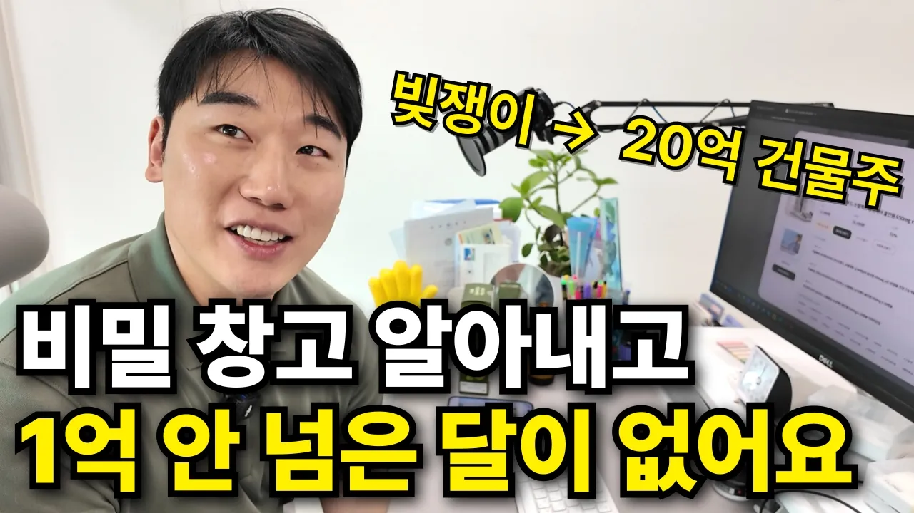
"이건 알자마자 바로 돈 벌어요" 비밀 창고에서 1년에 40억 쓸어담는 남자 ▶"이건 알자마자 바로 돈 벌어요" 비밀 창고에서 1년에 40억 쓸어담는 남자
'시크릿 루트' + '16,400에 팔면 마진 40%, 다 쓸어담겠습니다' + '연매출 40억, 순익 35%, 월 1억' + '한 제품 3억 3천'
심리장소 + 마진 + 숫자
'40대 중반 아이 둘 2주 만에 수익' + '절박함 안다, 본인만의 때' + '시골까지 왜?' → 40억 비밀창고 보여주려고
심리수강생 + 감정 + 현장
'도매가 창고' + 비타민D 2,800 → 9천~만 + '다이소보다 절반' + 4,900 vs 2,460 '4배'
심리가격 격차 연타
12,900 → 1,000원 '10배 미친' + '쟁여놓고 네이버에'
심리충격 + 방법 티저
PD '시크릿 루트 시청자께 살짝? 꿀단지 나눠 드실 수 없을까요?' → '몇 군데 정리한 리스트, 댓글 써주신 분께'
몽타주(시크릿 루트·40억·35%·아이 둘 엄마) + 시골 창고 + 비타민D·10배 상품
가전은 부피 문제 → 건강식품 추천 + '비밀창고 찾기 어렵다' + 1차 CTA(리스트) + 올리브유 도매가
블루베리 홈쇼핑 검색량 폭증 + '대기업이 광고, 광고비 2~3%' + 40억·35% + '자격증 필요?'
코인 7천만 2주 만에 날림 + 전세 사기 겹침 + '10만원이라도' → 건강식품 첫 달 1천 → 4개월 1억 → 대출 청산
목표 벽(120억) + 레버리지 책(내용 기억 못 함 유머) + 사업체 5개 매출 화면(13억)
쿠팡 등록 시연(상품명 역순·1등 업체 벤치마킹·옵션 3개)
제조 마진 40%(광고비 9%) + '욕구 시장'(말 못할 고민 키워드, 하루 400명) + 제미나이 키워드
소싱→썸네일→상품명→태그 20개 AI 프로그램 1분 + 40대 중반 아이 둘 2주 2,600만
'비밀 링크는 무료 특강에서 힌트' + 키 178 + 편의점 3년 반 폐기 서사
편의점 18시간 100만 vs 온라인 세팅값 0 + 2028 300억 목표 + '절박함 안다' + '선택과 집중, 지금 당장' + 무료 특강
Q시크릿 루트인 거죠?
A16,400원 제품이 마진 40%, 연매출 40억 중 순이익 35%로 월 1억 넘게 통장에 들어오며 한 제품만 3억3천 판매된다고 답함.
Q이 시골까지 어떤 일로 부르신 거예요?
A연매출 40억을 어떻게 버는지 보여주려 도매가로 소싱 가능한 비밀 창고에 부른 것이며, 2,800원 비타민D를 9,000~1만원에 팔 수 있다고 답함.
Q완전 미친 거죠?
A대량 구매해 집에 보관 후 네이버에 올려도 마진이 남고, 청소기 풀세트가 21만8천→12만4천원으로 절반이라 온라인만 팔아도 꿀단지라고 답함.
Q꿀단지 같이 나눠 드실 수 없을까요?
A다 줄 수는 없지만 댓글 쓰는 분들께 정리된 소싱처 리스트를 제공하겠다며, 올리브유는 1~2천원 차익뿐이나 건강식품 캡슐은 원가 7천원에 4~5만원에 팔린다고 답함.
Q40억이요? 뺄 거 다 빼고 남는 건?
A부가세 빼고 제품마다 다르지만 약 35%가 남아 월 1억 이상 통장에 들어온다고 답함.
Q자격증이나 전문가여야 가능한 거 아니에요?
A전문가 자격 필요 없이 영업신고증만 있으면 되며, 온라인 교육 2시간 이수로 하루면 발급받아 내일부터 바로 팔 수 있다고 답함.
Q(코인) 온라인 판매로 넘어오신 거예요?
A11년 말 모은 돈 2천과 신용대출 5천 등 총 7천만원으로 코인을 시작했다가 대폭락으로 2주 만에 다 날렸고 전세사기까지 겹쳤다고 답함.
Q인생 바꿔주신 책 같은 게 있으실까요?
A레버리지(롭 무어) 책에서 감흥을 받았다고 했으나 내용은 잘 기억 못해 다시 읽어야겠다고 웃으며 답함.
Q40억 보여주실 자료?
A사업체 5개 중 4개 사업자 자료를 보여주며 3억2천·13억·2억6천·9억3천 등 합산 40억이 조금 넘고 현재 유지 중이라고 답함.
Q잘 파는 노하우 알려주실 수 있는 게?
A'욕구 시장', 즉 남몰래 검색하는 고민(성욕 강화제 하루 400명 구매 등)을 노리며, AI에 피부 질환 키워드를 물어 한포진 같은 틈새를 찾는다고 답함.
Q한 달도 안 되는데 2,600만원을 버신 거예요?
A네이버까지 합치면 월 3천만원 매출이며, 다른 수강생은 배운 지 8일 만에 300만원 넘게 벌고 1천만원 가까이 도달했다고 답함.
Q응원이 될 말씀?
A돈이 있어도 없어도 해봤는데 인생은 각자의 때가 있으니 정보 홍수 속 선택과 집중으로 고민 말고 지금 당장 끈기 있게 시작하라고 답함.
궁금한 내용 무료 특강 때 오시면 다 해소 (비밀창고 리스트는 댓글, 비밀 링크 힌트는 특강)
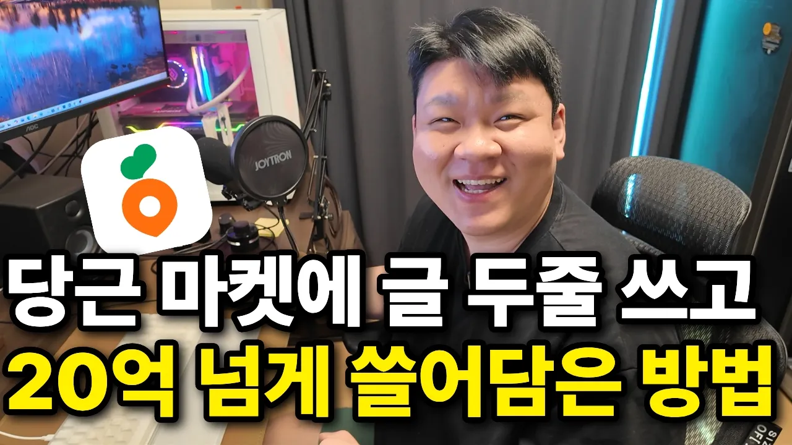
"지금 당근으로 중고거래 할 때가 아니에요" 글 두 줄 쓰고 20억 넘게 쓸어담는 부업 ▶"지금 당근으로 중고거래 할 때가 아니에요" 글 두 줄 쓰고 20억 넘게 쓸어담는 부업
'사고로 장애인 판정, 살고 싶지 않았다' + '어머니: 부모보다 먼저 죽지 마' + '다리 없어도 되더라'
심리극단 고통 오프닝
'사진 1장 열 글자로 2~10만원' + '6월까지 22억, 올해 50억' + 수강생 2일 만에 500 + '자동화라 혼자 가능'
심리쉬움 + 규모 + 3자 증거
'힘들 때 사기당해요' 경고 + '8년째 당근으로 돈 버는 에어'
심리진정성 + 정체성
'중고 거래? 아니, 사람을 모음' + '온라인 전단지, 한 명당 2~10만' + 당근 광고 → 홈페이지 → 이름·전화 무료 상담 = 돈
심리메커니즘(DB 마케팅) 시연
PD '더 주실 꿀팁·자료?' → '영상 전단지(AI 영상)는 무료 강의에서 전부 공개'
몽타주(장애·22억·2일 500·사기 경고) + 정체성 + DB 마케팅 구조
6월까지 22억(작년 20억) + 온라인 전단지 100~200개 + 자동화 + 제휴 사이트(애드팟) 가입
나만의 링크 생성 + 개인회생 전단지 GPT 이미지 90% AI + 당근 등록
'글을 잘 적어야' + 단점 = 광고비 3~5천원 자비 + GPT 카피 팁 + '실험하는 수밖에'
쓰레드(무료) + 1차 CTA(AI 영상 전단지는 무료 강의) + '사람 많은 곳(강남역)에서 뿌려라'
경쟁자 프로필 벤치마킹 + '왜 알려주나 → 이름 알려 광고주 연락' + 10년차·수강생
고깃집 320만 → 공기업 180~230 → '편함보다 돈' → 2019 1천만원 강의 사기(불법 방법)
'리스크 없는 업부터' + 30살 하반신 마비·1년 반 입원 + 직원 횡령 → 아버지 '덕 쌓아라'
멘탈 10배 + 긍정 전환 후 발가락 움직임 + 시크릿 '생각대로 간다' + 대학 강의
수익화 1~2개월 + 강의 100명·연매출 20억 + 건물 목표 + 어머니 벤츠 + '부모보다 먼저 가지 마' + '희망 잃지 마'
Q22억이요?
A이번 년도 50억 목표, 알려준 분이 글만 적어 이틀 일하고 500만 원 벌었다며 시스템 자동화로 혼자 가능하다고 답함.
Q당근으로 돈 번다는데 중고 거래 하시는 거예요?
A중고거래가 아니라 당근에서 사람을 모으는 온라인 전단지 일로, 한 명 모일 때마다 2만~10만 원을 받는다고 답함.
Q올해 반밖에 안 됐는데 12억을 하신 거예요?
A작년 20억, 올해 50억 전망이며 당근·인스타·유튜브에 전단지 100~200개 올려두면 시스템이 자동으로 일해 혼자 가능하다고 답함.
Q이름·전화 넣으면 대표님한테 돈이 가는 거예요? 돈 복사 같이 느껴지죠?
A신청 한 건당 45,000원이 들어오지만, 15글자 문구를 클릭하게 잘 써야 하고 못 쓰면 광고비만 쓸 수 있다고 답함.
Q이 일의 가장 큰 단점이 뭐냐?
A당근 게시 비용 3,000~5,000원이 내 돈으로 나가 글을 못 쓰면 손해가 날 수 있는 게 가장 큰 리스크라고 답함.
Q광고비 부담되는 분들은 (무료) 방법 없을까요?
A무자본 방법으로 쓰레드 앱을 추천, 글 몇 줄로 46만 명 도달 시 1%씩 전환하면 하루 200만 원도 공짜로 가능하다고 답함.
Q배우신 분들도 많이 계신 거예요?
A7년째 가르쳐 배운 분이 많고, 시스템만 만들어 두면 하루 1시간 일하며 남는 시간에 오프라인 강의도 한다고 답함.
Q전에는 어떤 일 하셨던 거예요?
A미대 졸업 후 월급 300은 세후 100만 원밖에 안 남아 돈 많이 주는 일을 택했고, 고깃집 매니저로 하루 14시간 320만 원 받았다고 답함.
Q근데 횡령을 어떻게 당해요? 하반신 마비요?
A30살 때 계단에서 굴러 하반신 마비로 1년 반 입원했고, 사장이 출근 못 하는 사이 횡령을 당했으나 아버지 권유로 봐줬다고 답함.
Q잘하는 분들 특징 같은 게 있을까요?
A뭘 해도 두려워하지 않고 배울 때 먼저 도전적으로 해보는 성향인 분들이 어떤 일이든 결과가 빨리 나온다고 답함.
Q시간을 어느 정도 투자하면 될까요?
A배울 때는 하루 최소 2시간, 수익 나기 시작하면 하루 30분이면 되고 수익화까지 평균 두 달, 젊으면 한 달 걸린다고 답함.
Q끝까지 봐주신 분들께 마지막 한 말씀?
A힘듦은 자기 기준이니 더 힘든 사람들을 보며 힘을 얻어 고민만 하지 말고 꾸준히 무언가를 시작하라고 답함.
영상 전단지·AI 영상 방법은 무료 강의에서 전부 공개 (댓글·링크)
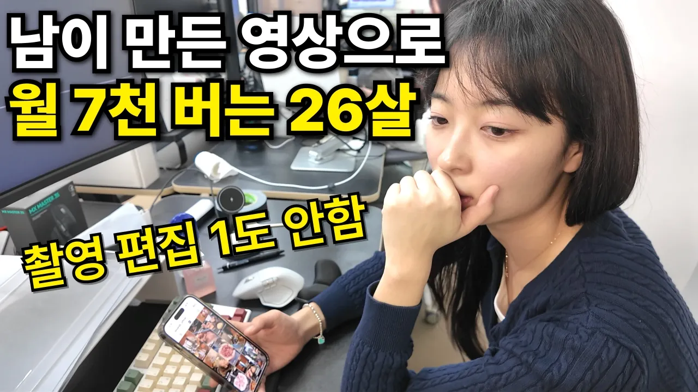
"이건 저희 부모님도 가능해요" 영상 전달만하고 월 7천만원 버는 역대급 신박한 부업 ▶"이건 저희 부모님도 가능해요" 영상 전달만하고 월 7천만원 버는 역대급 신박한 부업
'12월 7천, 1월 5,700' + '복사해서 건네주기만, 촬영·편집 X' + '30분~1시간, 리스크 0'
심리숫자 + 노력 최소화
'맡기고 싶다 계속 들어옴, 90% 계약' + '4개월 1억 5천' + '서울 아파트' + '엄마·아빠도 가능, 절대 망하지 않음'
심리수요 증거 + 자격 박탈 불가
'쇼폼 대행 유니콘하우스 이연주' → '릴스 대신 제작이 돈이 되나요? 너무 많이' + 4개월 40~50 고객 + 5~7천
심리정체성 + 되묻기 + 규모
'00년생 26살' + '친구들 취준·알바' + '안 믿기는데 보여주실 수?'
심리나이 대비 + 증거 요청
PD '편집자 구인 사이트 자료 시청자께?' → '자료 만들어 전달'
몽타주(7천·전달만·90%·1억 5천·부모님) + 정체성 + 26살 + 친구 대비
12월 7천·1월 5,700 화면 + 지출 = 편집자 외주 54만 + 고객 1명 1,440만(월 12개) + 주 2시간 + 198만 조회 사례
100만 유튜버 2명 메인 PD(20·22살) + 'AI 유튜브 딸깍 하지 마라'(노출 막힘)
조회수 수익 126만 → 3만 5천 vs 대행 30분 3만 5천 + 편집자·촬영 구인 사이트 1차 CTA + 매뉴얼·템플릿
'돈 되는 건 멋있어 보이지 않는 영상'(프랜차이즈 젓가락) + 캡컷 템플릿·AI 목소리(애덤)
임산부 태아보험 릴스 가공 + 8년 후킹 구조 봇 → 대본 전달 + '기획 스트레스' 클라이언트
레퍼런스 정리본 + 촬영 매뉴얼 + 효과음 소스·트렌드 음악 2차 CTA('쉽지 않은데')
'AI 유튜브는 삭제 리스크, 대행은 절대 안 망함' + 틱톡 캡처 영업 + 추천: AI 유튜브 실패자·직장인
대본 외주 = 부모님도 가능 + 19살 첫 미수금 + 월세 30만 고시원 편집 → 4개월 5천
1억 5천 실감 안 남 + 사무실 확장 + 2,400 DB 효과 + 가족 여행·동생 청약 + 1등 목표 + 무료 강의
Q릴스 대신 제작해주는 게 돈이 되나요? 너무 많이 되나요?
A쇼폼 회사 차린 지 4개월 만에 고객 40~50명, 월 5천~7천만원 수익이며 릴스 수요가 대기업까지 너무 많다고 답함.
Q지금 몇 살이시죠? 수익 얘기 부끄러우신가요?
A00년생 26살이며, 친구들은 취준·알바 중이라 수익 얘기를 잘 안 한다고 답함(밥 사달라 할까 봐).
Q26살에 많이 버신다는 거 안 믿기는데 보여주실 수?
A화면을 보여주며 매출 7천만원, 연말 연휴 낀 1월도 5,700만원이 나왔다고 증명함.
Q지출 같은 거는 어느 정도 드는 거예요?
A지출은 거의 없고 편집자 외주비 54만원 정도이며, 고객 1명에게 월 12개 릴스로 1,440만원 받고 주 2시간 작업이라고 답함.
Q대표님이 너무 잘 만들어서 그런 거 아니에요?
A아니라며, 해외에서 잘된 릴스 트렌드를 살짝 변형(대제목 추가)하고 학습시킨 AI로 사례를 뽑아 촬영·편집자에게 넘긴다고 답함.
Q100만 유튜버 두 명이요?
A이슈 전 180만 구독 채널과 턱형 채널을 키웠고, 담당 후 채널 수익이 2배 성장했으며 20살·22살 때 만들었다고 답함.
Q직접 유튜브 해도 될 텐데 왜 쇼츠 대행하시는 거예요?
A돈을 벌어야 해서 키즈·시니어 유튜브도 했지만 AI 유튜브는 노출 차단·채널 삭제 위험이 크고 유튜브 CEO가 2026년 AI 슬롭 정리를 선언했다고 답함.
Q그 어떻게 가능한 거예요?(30분 3만 5천)
A편집자 구인 사이트와 필메이커스로 촬영자를 구하고, 일반인도 가능한 매뉴얼로 퀄리티를 통일해 놓았으며 자료를 시청자에게 전달하겠다고 답함.
Q(싸구려 편집) 고객분들이 괜찮아 하시나요?
A고객이 엄청 좋아하며 편집은 10~30분이면 끝나고, 크몽에 이미지 하나 올리면 문의가 자동으로 들어와 90%가 계약한다고 답함.
Q이 자료도 전달 주시는 건가요? 쉽지 않은데
A왕초보용으로 더 정리해서 주겠다며, 30분 편집을 10분에 끝내는 단축키 총모음 전자책도 정리해 전달하겠다고 답함.
Q00년생인데 4달 만에 1억 5천 벌면 기분이?
A아직 실감이 안 나며 사무실이 2인실에서 층 전체로 커졌고, 광고 효과가 좋아 클라이언트가 일정 딜레이를 요청할 정도(DB 2,400개)라고 답함.
Q앞으로의 목표 있으세요?
A올해 목표는 이 분야 1등이며 고객 피드백이 좋고 조회수가 잘 나와 가능하다고 보며, 무료 강의를 빡빡하게 준비했다고 답함.
무료 강의 들어오시면 절대 후회 없음 — 전자책·효과음·음악·레퍼런스 자료까지
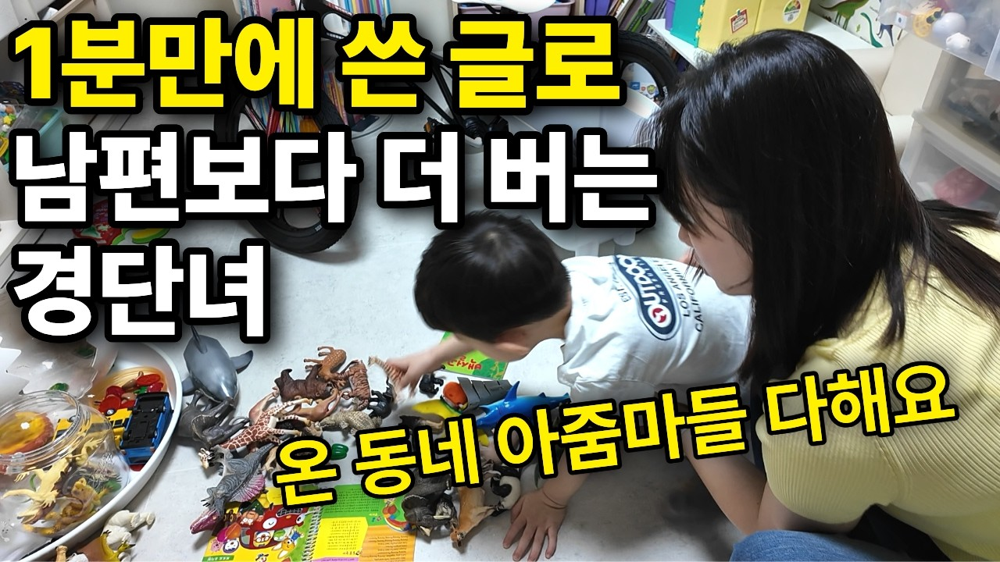
NEW"62년생 컴맹 엄마도 해요" 집에서 부업으로 월 500만원 넘게 버는 아기엄마 ▶"62년생 컴맹 엄마도 해요" 집에서 부업으로 월 500만원 넘게 버는 아기엄마
아이 등원 준비 소음('요구르트 줄게, 신발 신어') 위에 '기술도 없고… 돈을 못 버는 인간이 된 게 슬펐다' 내레이션 + '아기 키우면서 이 정도 일해서 순수 500이면 개꿀'
심리경단녀 결핍 서사로 즉시 공감, 직후 500만원 반전으로 격차 호기심 유발
'다 애엄마예요', '이번 달 월천 찍고 남편한테 용돈 200 준대요' 지인 사례 + '안 하는 날은 아예 안 하고 하는 날 3~4시간'
심리동일 페르소나 사회적 증거 + 남편 역전 판타지 + 노동시간 최소화로 진입장벽 제거
'완전 컴맹인데 어떻게 컴퓨터로?' 의심 + '어머니 62년생' + 'AI 복붙도 어렵다' → '버튼 누르면 글 자동으로 써져요, 손 하나도 안 대고 있어요' 시연 예고
심리시청자 반론을 선제 대변하고 자동화 시연 티저로 이탈 방지
'집안일 다 해놓고 이래도 돼요' + '이렇게 해서 100만원 번 거예요' + '이걸 왜 안 하냐고요 도대체' + '해봐야 아 진짜 되네 느끼실 거'
심리멀티태스킹 가능성 + 증거 숫자 + 도발성 질책으로 행동 압박
'내가 행복해야 아이에게 좋은 영향' 감성 문장 → 인트로 인사 → 자기소개 '부산 30대 육아맘, AI 글쓰기로 공짜로 생활하며 남편보다 더 버는 신예영'
심리엄마 죄책감 해소 명분 부여 + 이름·지역 공개로 실존 인물 신뢰
PD '그게 돈이 돼요?' → '순수익 월 500, 많이 할 땐 월천' + 화장대에서 20만원대 향수·10만원대 명품 화장품·소파 체험단 실물 공개 '진짜 공짜로 사시네요'
심리의심 대변 후 숫자 답변 + 실물 증거로 '공짜 생활' 부러움·물질 욕망 자극
'어떻게 하는 건지 알려주실 수 있어요?' → '다 알려드릴게요, 근데 아기 보내고 알려드릴게요' (등원 후 시연 예고형 CTA)
등원 소음 위 경단녀 결핍 내레이션 + 순수 500·월천 찍은 애엄마 지인 사례 + '버튼 누르면 글 자동' 티저 + 자기소개(부산 30대 육아맘) + 명품 화장품·향수 실물 공개
AI로 쓴 글에 돈 준다 확인 + 육아 중 가능 여부 질문 + GPT 틀로 금방 쓴다 + '아기 보내고 알려드릴게요' + 어린이집 등원 현장 + 'K장녀·아들엄마' 캐릭터 + 시작 계기(아이 발달 지연 치료비 월 150~200, 결혼반지 판 사연)
'개꿀' 리프레인 + 여섯 살 아이 소통 어려움 현장 + 하루 일과(3시반 픽업→치료 학원) + '센터 보내놓으면 그때 일한다' + 주 2회·3~4시간 근무 설계 + 남동생 '컴맹 누나가 어떻게' 에피소드 + 2·3교대 월 200 회사 퇴사 계기
미스터리 쇼퍼 아이템 공개: 평가만 하고 10만원, 신차 시승·면세점·음식점 + '체험단과 달리 돈 버는 것' + 사이트 '나중에 싹 정리해드릴게요' + 2018년 대학생 알바부터 + 39만원 정산 화면 증거 + 10~20분 미션 소요
AI로 신문 기사 발행 시연: 기자가 수정 + 5건 묶어 100만원 선입금 + 네이버 뉴스탭 내 기사 노출 화면 + 리뷰 4,831개 → '만 명 이상 이용' 수요 증명 + '밀키트' 검색 3분 전·15분 전 기사 '다 돈이죠, 느껴지시나요?'
월 500의 주력 = 블로그 글쓰기(카페·밥·미용 공짜 + 원고료) + 개발자 고용해 만든 자동 글쓰기 프로그램 시연: 벤치마킹 블로그 말투 학습 → 키워드 '센텀 에스테틱' 링크 붙여넣기 → 1분 내 글 생성 → 맞춤법·금지어 검수 → 블로그 자동 발행 '손 하나도 안 대고'
초보용 설문 10개 기반 자동 블로그 시스템 공개 + '100% 무료, 글 쓸 때마다 내 돈 들지만 다 드린다' + 60대도 가능 + 주제·타깃 선택 → 제목·키워드 자동 → 네이버 연동 + '엄마를 위해 만든 프로그램, 혼자 쓰기 아까워 다 풀자'
커뮤니티 철학(비슷한 육아맘끼리 정보 교류·같이 피부과) + '남편보다 더 벌어서 떵떵거렸으면' + PD '주부 구독자 위해 시간 내주실 수 있나' → 라이브 준비·자료 제공 '보고도 수익 100%' + 오픈채팅 링크 고정댓글 요청 + '배고프시죠' 한우 식사 전환
'주변에 하는 사람 없다 = 블루오션' + 향후 목표: 경단녀 일자리 플랫폼 '짬바' + 새벽 청소 알바 시절 회고 + '엄마라는 역할 하나 더 받았을 뿐인데 돈 못 버는 인간' + 아이·남편과 일본 여행도 공짜 + 폰으로 일하며 여행
아이 실종 사건(기저귀만 입고 나가 경찰 보호) + 이후 한 달 원인 불명 고열 → '내가 행복하면 아이도 행복' + '이 아이템도 우리 아이 덕분' + 마지막 메시지: '열 펄펄 끓는데 청소 가야 했던 현타' vs 지금은 바로 갈 수 있는 자유 + 'AI 기회 놓치면 나중에 할 일 있을까' + 자료 전부 제공 + Q&A 라이브 초대
QAI로 글 써서 공짜로 먹고 산다 하셨는데 그게 어떤 거예요?
A쿠팡 체험단 같은 생활용품부터 백화점 화장품까지 공짜로 받으며 생활한다고 답함.
Q그게 근데 돈이 되는 거예요?
A순수익 월 500만원, 일 많이 할 때는 월 천만원까지 벌었다며 화장대의 20만원대 향수·명품 화장품 실물 공개.
Q어, 이거 비싼 브랜드 아닌가요?
A'좀 비싸요' 인정 후 향수 20만원대, 화장품 10만원대, 소파까지 체험단으로 받았다고 나열.
Q육아하시면서도 이거 하는데 괜찮으신 거예요?
AGPT에 입력해둔 틀에서 글이 나와 금방 쓸 수 있다고 답한 뒤 '아기 보내고 알려드릴게요'로 시연 예고.
Q아이 키우는 것도 바빠 보이시는데 어떻게 하다 시작하게 되신 거예요?
A아이 발달 지연 치료비가 월 150~200 고정으로 들어 결혼반지·가방까지 팔다 남편과 다투고 직접 벌기로 결심.
Q몇 살이에요? 매일 아침 이렇게 일과가 시작되는 거예요?
A여섯 살, 소통이 안 돼 힘들며 등원 후 3시반 픽업 전까지 센터 보내놓고 그 시간에만 일한다고 설명.
Q회사 다니시다가 어떻게 하다 퇴사하셨던 거예요?
A2·3교대로 일해도 월 200 벌며 당연하게 살다 일 안 하는 친구를 보고 생각이 바뀌었다고 회고.
Q이건 그럼 어떤 사이트인 거예요?
A'미스터리 쇼퍼' 검색하면 많이 나오고 페이 센 외국계 회사를 쓴다며 사이트·방법은 나중에 정리해주겠다고 유보.
Q한 건 할 때 시간이 보통 어느 정도 되는 거예요? 10~20분 쇼핑하고 설문 쓰면 돈을 주는 거예요?
A미션당 10~20분이면 되고 친구와 약속 잡고 2~30분 쇼핑하듯 하면 39만원 번 달도 있다고 정산 화면 제시.
Q기자도 아닌데 어떻게 발행을 해요? 한번 보여주실 수 있을까요?
AAI로 쓰면 기자가 한 번 수정해 발행되며 5건 묶어 100만원 선입금 받았다고 네이버 뉴스탭 내 기사 화면 시연.
Q어떻게 하는 건지 알려주실 수 있을까요? 다 알려주시는 거예요?
A개발자에게 돈 주고 만든 자동 글쓰기 프로그램으로 링크만 붙이면 1분 내 글이 나오는 과정을 직접 시연.
Q평소에는 저런 거 돌려놓고 집안일 하고 이렇게도 하시는 거예요?
A맞다며 맞춤법·금지어 검수 후 버튼 하나로 블로그에 자동 발행돼 '손 하나도 안 대고 있다'고 강조.
Q어머니는 연생이 어떻게 되죠? AI에 뭐라고 써야 돼?
A62년생 어머니도 AI 복붙조차 어려워해서 설문 10개만 고르면 글이 나오는 초보용 시스템을 무료로 만들었다고 답함.
Q구독자 중 주부분들이 많은데 구체적인 방법 알려주실 시간 내주실 수 있을까요?
A라이브를 준비했고 자료만 보고도 수익 내는 분 100% 있다며 오픈채팅 링크 고정댓글을 PD에게 역요청.
제가 드릴 수 있는 자료는 다 드릴 거고, 어렵게 느끼시는 분들을 위해 Q&A 라이브를 준비했으니 그날 들어와서 같이 만나요 (오픈채팅 링크는 고정댓글)
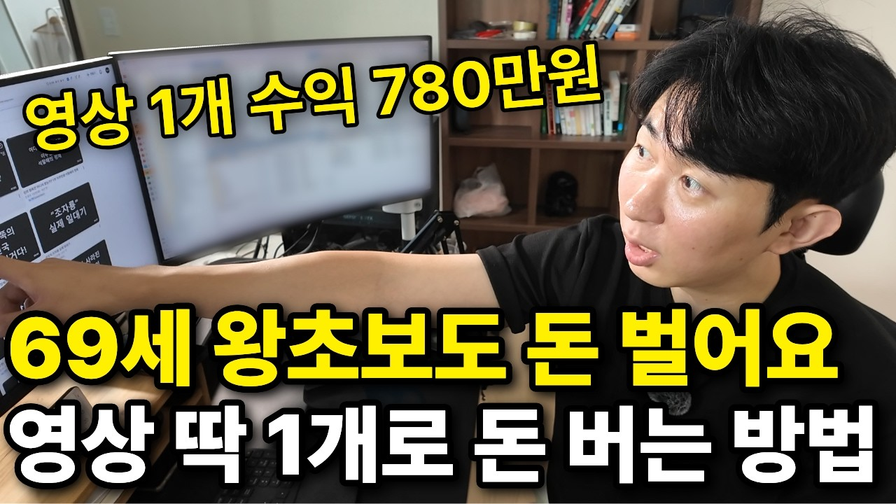
NEW"왕초보 5명 가르쳤는데 전부 돈 벌어요" 영상 1개로도 돈 버는 비밀 공식 ▶"왕초보 5명 가르쳤는데 전부 돈 벌어요" 영상 1개로도 돈 버는 비밀 공식
'감히 이해한다고 말 못 할 상황인 분들' 공감 발언 + '10만 원짜리로 16억 번 거예요' 수익 계산 장면 + '첫 한 860 나오는 거예요'
심리감정 공감으로 힘든 시청자 붙잡고 곧바로 16억·860만 원 숫자 충격으로 시선 고정(감성→탐욕 교차)
'경쟁 아님' + '무료로 5명 모집, 전원 7주 만에 수익 창출' 예고
심리제목의 사회적 증거를 초반에 확인시켜 이탈 방지, '나도 무료 그룹에 들어갈 수 있나' 기대 심기
'각자 지옥이 있다, 한 발 한 발' 위로 + '딸깍 쉽고 편하게 하루 30분 이런 건 없다, 기대하면 안 보는 게 낫다' 역심리 경고
심리쉬운 돈 채널과 차별화된 '정직한 사람' 포지셔닝, 경고를 통해 오히려 신뢰와 진지한 시청 태도 유도
'57년생도 영상 한 개로 수익 창출' + '이런 얘기 해 주는 데가 없더라' + '아침 6시부터 밤 12시까지 확실하게 알려드린다'
심리고령 페르소나로 진입장벽 낮추고, 하루 밀착 '현장 프레임'으로 정보의 희소성과 진정성 강조
PD 인사 → '온라인에 내 땅 만들어 사는 자생법' 자기소개 → PD '부동산이에요?', '그게 돈이 돼요?' → '역사상 땅 가진 사람이 승자, 오프라인 땅 살 돈 없어 온라인에' → '대기업 다닐 때의 4~5배'
심리'내 땅' 메타포로 호기심 갭, PD 의심 대변 후 수익 배수 공개로 권위 확보
'새벽 6시에 포항까지 부른 이유 = 하루를 온전히 보여주는 게 배워야산다 시청자에게 와닿을 것' → 평소 5시 반 기상 → '오늘 따라다니면 알려주시는 거죠?' → '해외구매대행·커머스 다 해봤는데 유튜브가…'
심리밀착 다큐 형식 선언으로 '광고 아닌 진짜 하루' 프레임, 시청자에게 32분 완주 보상 예고
'너 공짜로 배워 볼래?' 무료 5명 모집 → 19명 지원 → 5명 전원 7주 내 수익화 사례 나열 후 '이젠 더 이상 모집(안 하냐 질문 많다)' 희소성 예고
1/10 [00:00–03:15] 감성 공감+16억·860만 원 숫자 콜드오픈 + '딸깍 없다' 역심리 경고 + 자생법 자기소개('온라인에 내 땅') + PD '부동산? 돈이 돼요?' 의심 → 대기업 4~5배 수익 + 새벽 6시 포항 밀착 취재 프레임
2/10 [03:15–06:31] 포항 바닷가 산책 + '서울 아파트 하나 = 포항 7채' 삶의 질 + 얼굴 비공개 첫 달 860만 원 → '나만 되나?' → 무료 5명 모집 결과(실버버튼 10만·쇼핑쇼츠 1개로 2,400만 원) 사회적 증거
3/10 [06:31–09:47] 배달 부업 두 번 죽을 뻔 → 온라인 부업 전환 → 결혼 3개월 전 퇴사 + 초2 부친 사망·친척집 전전·34kg·중학생 첫 알바(볼펜 방문판매) 역경 서사
4/10 [09:47–13:03] '올바른 방향+노력' 공식 + 녹슨 자가용·가정집 사무실 검소함 시연 + '왕초보가 어떻게 내 땅?' → 조회수 수익 = 디딤돌 주제, 최종은 내 땅(고객 모집) 구조 강의 시작 + '컴퓨터 못 해요' 불안 선제 반박
5/10 [13:03–16:19] 유튜브 알고리즘 원리 강의(광고 수익 구조→취향별 추천→'개똥 영상도 필요한 사람에게 전달') → '코스모스 영상으로 꽃 좋아하는 사람 모으기' = 내 땅 만들기 → 화분·씨앗·강의 판매 확장
6/10 [16:19–19:35] 실제 사례 화면 시연: 엑셀 채널 611만 조회·구독 40만 → 15만9,000원 강의 리뷰 349개 → 추정 2,400명 구매 3억 8,100만 원 + 16,67x×9만9,000원 = 16억 계산(썸네일 오프닝 장면 회수)
7/10 [19:35–22:51] '구독자·조회수 중요치 않다' → 본인 채널 공개(구독 2.4만, 단톡방 2,900+2,200명) → '너 공짜로 배워 볼래?' 19명 지원→5명 선발(거제 애기엄마·대구 셀러·쌍둥이 아빠) 전원 7주 수익화 → 1천 명 방 → 제자 재능·썸네일 리메이크 시연
8/10 [22:51–26:07] 실습: 크롬 시크릿 모드(Ctrl+Shift+N)로 알고리즘 없는 유튜브 탐색 → '일본 1천억 점술가' 사건 채널 21만·47만·52만 조회 발견 → 돈 되는 주제 찾는 법 시연
9/10 [26:07–29:22] '물고기 잡는 법' 프레임 → 채널 개설 잘못된 정보 경고 → 80페이지 채널 개설 가이드(구글 계정~브랜드 채널~사생활 보호) 배워야산다 구독자용 선물 예고 + 'AI 딸각 꼼수 = 계정 삭제·평생 수익 불가' 경고 + '더 자세히 알고 싶은 분' CTA
10/10 [29:22–32:38] 인연부부(사지절단)·태근남(공장 신고→노동부 영상 100만) 역경 극복 사례 → '가장 힘든 시기?' → 하루 2시간밖에 못 보는 아기·가족 울타리 목표 → '나를 구원하는 법은 남을 구원하는 것' → 돌아가신 아버지 → '지옥을 벗어나는 유일한 방법은 걷는 것' 응원 마무리
Q영원으로 내 땅 만든다 하셨는데 부동산 투자 이런 거 하시는 거예요?
A아니라며 온라인에 내 땅을 만들어 먹고산다, 역사상 땅 가진 사람이 승자였는데 오프라인 땅 살 돈이 없어 온라인에 만든다고 답함.
Q그게 돈이 되는 거예요?
A'그럼요'라며 모든 역사에서 땅 가진 사람이 이겼다는 논리로 확신, 이어 대기업 재직 시절의 4~5배를 번다고 수익 수준 공개.
Q지금 이렇게 새벽 6시부터 부르신 이유가 있으신가요?
A돈 버는 법을 배우러 왔으니 하루를 온전히 보여주는 게 시청자에게 가장 와닿을 것 같아 포항까지 6시에 불렀고, 평소엔 5시 반에 시작한다고 답함.
Q오늘 쭉 따라다니면 어떻게 딱 만들 수 있는지 알려 주시는 거?
A서울에서 왔으니 확실히 알려주겠다며 해외구매대행·커머스 다 해봤지만 유튜브가 온라인에 내 땅을 만드는 최적 수단이라고 답함.
Q(무료로 모은 왕초보 5명) 그분들 지금 어떻게 됐을까요?
A전원 돈을 벌고 있고 한 명은 실버버튼 10만 구독, 한 명은 쇼핑 쇼츠 하나로 2,400만 원을 벌었다고 답함.
Q(구독자·편집 경험) 없이 하나만으로도 되는 거예요?
A본인도 얼굴 비공개·특출난 것 없이 첫 달 860만 원이 나왔고, 남과 경쟁하는 구조가 아니라 알려줘도 문제없다고 답함.
Q대기업 다니고 엘리트 코스 밟으신 줄 알았는데… 아 진짜요?
A초2 때 아버지 사망 후 집안이 무너져 친척집을 전전하며 맞고 굶었고 초6 몸무게 34kg, 중학생 때 볼펜 방문판매 알바를 했다고 답함.
Q이게 제가 평소에 출퇴근하는 자가용인 거예요?
A녹슬었지만 타는 데 문제없다며 사무실도 가정집으로 쓴다고, 검소함과 돈은 온라인에서 번다는 점을 대비시킴.
Q그러면 이제 왕초보가 어떻게 영원으로 내 땅을 만들 수가 있는 거죠?
A조회수 수익은 디딤돌 주제일 뿐이고 먼저 조회수로 벌어본 뒤 내 땅(고객 모집)을 만들어 최종 수익을 내는 2단계 구조라고 답함.
Q(모은 사람들에게) 판매까지 하시는 거예요? 이거는 누구한테 파는 거죠?
A꽃 좋아하는 사람을 모았으면 화분·씨앗·비료·꽃꽂이 수업 등 그들이 필요한 걸 팔면 된다며 엑셀 채널 사례로 넘어감.
QPD 님 엑셀은 좀 하세요?
A(출연자가 PD에게 역질문) 간단한 엑셀 함수 영상도 611만 명이 궁금해했고 구독 40만·강의 15만9,000원×추정 2,400명 = 3억 8,100만 원이라고 계산.
Q대표님은 어떻게 하고 계시는지 궁금하거든요 / 어떤 사람들을 모아야 될까요?
A유튜브 하고 싶은 사람을 모아야 한다며 구독 2.4만, 단톡방 2,900+2,200명 등 5천 명 이상이 모여 있고 분석 프로그램·컨설팅을 제공한다고 답함.
Q대표님이 인생에서 제일 팍팍하고 힘들었던 시기는 언제셨어요?
A어릴 때 항상 힘들었지만 그 시기가 지금을 위한 순간이었고, 힘든 상황이 아니었다면 유튜브를 안 했을 거라며 시청자에게 포기하지 말라고 답함.
클로징 자체엔 판매 CTA 없이 '그 자리에 있으면 계속 지옥, 한 발 한 발 나가라 + 자본주의 생존 응원' 감정 마무리. 실질 CTA는 26~29분 구간의 '채널 개설 80페이지 가이드를 배워야산다 구독자용으로 준비' + '더 자세히 알고 싶은 분'(자생법 채널·단톡방 유도).
조회수 상위 4편. 제목을 누르면 6개 항목 분석이 펼쳐지고, 모든 시점은 유튜브 해당 장면으로 연결됩니다.
밝은 카페·수산시장·아파트 산책로·자택 책상 등 '현장' 배경 위에 검은 티셔츠 출연자를 반신으로 놓고, 노트북·아이맥 수익 화면을 빨간 화살표로 찍어 '도구 하나로 끝난다'를 시각화한다. 카피는 상단에 연두·흰색 소형 인용문("한국에 300명도 안해요", "2주만에 바로 수익나요", "영어 한마디 못해도 됩니다")을 걸고, 하단 2행 대형 카피의 1행은 흰색 조건절("70대도 해외 시장에서", "집에서 사진 2장으로"), 2행은 형광 노랑 결과절("매달 800씩 꿀 빠는 미친부업", "월1000 쓸어가는 68세")로 고정한다. '70대도·68세·05년생'처럼 나이를 페르소나 라벨로 박고, TEMU 아이콘처럼 플랫폼 로고를 노출해 정보 갭을 만든다. 표준 템플릿과 같은 점은 흰+노랑 2행·인물 반신·상단 인용 구조이고, 다른 점은 카페·시장·집 같은 실제 장소 컷과 화살표로 '증거 화면'을 지목하는 현장감이다.
따옴표 인용으로 시작("70대도 월 800만원 버는 미X 부업", "이런 부업 없습니다", "직장 때려쳤어요", "부업으로 집에서 바로 돈 벌어요")한 뒤, 역심리 도발(어차피 알려줘도 아무도 안 해요…), 아이템 흔함 또는 최소 행동(남들 다 먹는 식품 / 한국어만 읽어주고), 결과 숫자(월 매출 5억, 매달 5억, 월 1000, 달러), 인물 프레임(찍는 남자, 05년생, 평범한 주부)을 순서대로 붙인다. '미X 부업'처럼 복자 처리로 아이템을 숨기고, 개인 수익(월 800)과 출연자 매출(월 5억)을 두 단계로 병기해 욕망과 신뢰를 동시에 자극한다. '부업 추천│' 카테고리 태그와 구분자 │를 쓰는 SEO형 변형도 있다. 표준 템플릿과 같은 점은 인용+숫자+페르소나 뼈대이고, 다른 점은 '남들은 알바할 나이에'·'어차피 아무도 안 해요' 같은 또래 비교·역심리 도발이 훨씬 노골적이라는 것이다.
0~12초에 PD가 '수익 인증 가능하실까요?' '매출 어느 정도 나세요?'를 던지고 휴대폰 입금내역(2천만·1700만·오늘 9/1 4,250만 원)이나 달러 대시보드(누적 9,894달러)를 즉시 낭독시켜 숫자 훅으로 시작한다. 이어 PD가 '자격증 필요?' '리스크?' '초기자본?' '영어 잘해야?'를 연달아 대신 묻고 출연자가 '전혀, 0원, 노트북 하나'로 즉답해 장벽을 40초 안에 제거하며, 0:25~0:30에 '모든 답지 공개하니 끝까지 보고 카톡방 입장' 첫 CTA를 심는다. 그 뒤 자기소개(20살 70억, 59년생 전직 요양사, 31살 한글 언니)로 나이·학력 포기 스토리를 던지고, '로또 같은 기회'·'쿠팡 아닌 블루오션' 오픈루프로 2분을 마감한다. 표준 템플릿과 같은 점은 인증→장벽 제거→자기소개 순서이고, 다른 점은 날짜 붙은 입금내역·달러 누적액을 화면에 직접 띄우고 CTA를 30초 안에 넣는 속도다.
1~3구간에서 인증 재시연(국세청 자료 현장 출력, 상반기 13억·하반기 21억)과 카페 사무실·게으른 루틴(11시 기상, 낮엔 놀고)을 보여주고, 3~4구간에서 '프로세스 3단계(플랫폼/광고 지원/소싱처)' 예고로 시청 유지를 건다. 5~6구간에 마진 시연(샤인머스켓 13,600원 vs 소싱가 7,900원)과 '원래 안 알려주는데 오늘만' 소싱처 공개 약속을 고정댓글 카톡방 CTA와 묶고, 7구간에서 PD가 '의심 많아서' 앱 검색(사과 200개·99개 판매)이나 발주 엑셀 시연으로 실시간 검증한다. 8~9구간은 실물 노하우 책자 공개, 노량진 수산시장·자택 이동 같은 장소 전환, 실패담(네이버·쿠팡 매출 0원→식품 첫 달 10만 원)과 '유튜브 나오면 끝물 아니냐' 역심리 반박, 10구간은 AI 시연(배경만 카페처럼 변경)과 동기 서사(전기·수도 끊긴 가난)로 닫는다. 표준 템플릿과 같은 점은 인증→고생담→노하우→CTA 흐름이고, 다른 점은 매 3구간마다 시연·장소 이동·실물 소품이 들어가 '증거 밀도'가 높고 CTA가 5·8·10구간에 3회 반복된다는 것이다.
PD 질문은 5개 역할로 돌아간다. 증거 요청('수익 인증 좀 가능할까요? 지금 바로 보여주시면', '테무에서 실제로 팔리고 있는지 볼 수 있을까요?'), 의심 대변('자격증 필요?', '리스크?', '컴맹이라 엑셀도 못 다루는데?', '영어 잘해야 하는 거 아니에요?' 2회 반복), 감정·고통 대비('편의점 6년 힘들지 않아요?', '에이 6년 동안요?' 되묻기, '돈 때문에 힘든 적?'), 현장 프레임('여기가 사무실이신 건가요?', '재고는 어디다 보관?', '일하시는 거 보여주실 수 있나요?'), 선물 유도('노하우 바로 볼 수 있을까요?', '샤인머스켓 7,000원짜리 어디서 사는지?', '자료 다 가지고 계신 거죠?')다. 특히 '얄미운 질문 드릴게요. 유튜브 대놓고 나오면 끝물 아니냐'를 두 편에서 그대로 재사용하고, '제자들도 무대만 옮겨 성과 나야 하는 것 아니냐'로 교육 판매를 정당화한다. 표준 템플릿과 같은 점은 의심 대변→선물 유도 역할 배치이고, 다른 점은 PD가 '제가 의심이 많아서'라며 앱을 직접 열어 검증하는 능동적 검증자 캐릭터라는 것이다.
마지막 2~3분은 정산 안전성·국내 법인 같은 불안 마무리 → 동기 서사(전기·수도 끊긴 가난, 통장 30만 원 쓰리잡) → PD '인생 바꾸고 싶은 분에게 한마디' → 실천 지시('가을 제철식품 검색 후 테무 판매량 1분만 확인', '5분만 검증·도전하라')로 흐른다. CTA는 고정댓글 파란색 카톡방 링크 대기 시 비밀 소싱처·상품 리스트·판매 공식·전자책 3~4종을 PD가 재낭독해 확인하는 방식이 기본이고, 변형으로 '68세 월 1천만 노하우 책자 좋아요+댓글 5명 추첨 무료 증정', '8월 5일 노하우 설명회 참석(실제 학생 인터뷰·선물)'이 있다. 페르소나를 전방위 호명(나이 많은 분·여성·남성·젊은 층·은퇴 준비)하고 '자신감과 용기만 챙겨오면 나머지는 다 해드린다', '시행착오 1년→1주일로 단축'으로 닫으며, 한 편은 수산시장 현장 이동으로 다음 콘텐츠를 예고한다. 표준 템플릿과 같은 점은 카톡방·책자 리드마그넷 구조이고, 다른 점은 '1분 검증' 같은 즉시 실행 가능한 미션과 날짜 박힌 오프라인 설명회, 추첨 이벤트를 CTA로 쓴다는 것이다.
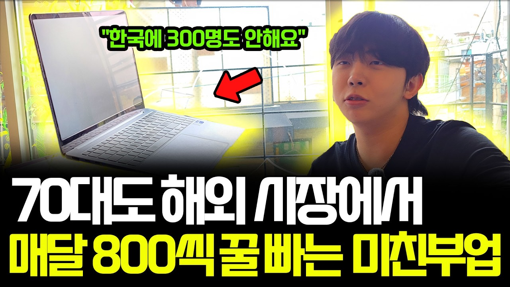
“70대도 월 800만원 버는 미X 부업” 어차피 알려줘도 아무도 안 해요… 남들 다 먹는 식품 팔아 월 매출 5억 찍는 남자 ▶“70대도 월 800만원 버는 미X 부업” 어차피 알려줘도 아무도 안 해요… 남들 다 먹는 식품 팔아 월 매출 5억 찍는 남자
쿠팡은 리뷰 100개 있어야 100개 팔리지만 여기(테무)는 리뷰 없이도 팔린다 + 휴대폰 입금내역 2천만·1700만·1200만 → 오늘 9월 1일 4,250만 원 '대박' 반응
심리쿠팡 대비 비교로 '몰랐던 시장' 호기심 + 즉시 수익 인증으로 첫 5초 신뢰 확보
하루 1~2시간만 투자 + PD가 '자격증 필요?' → '전혀', '리스크?' → '전혀, 초기자본 0원' + '모든 답지 공개하니 끝까지 보고 카톡방 입장'
심리시청자 대신 장벽 질문을 던지고 즉답으로 제거 + 첫 CTA를 40초 안에 심어 시청 목적 설정
'소싱처 공개해서 좋을 것 없어 안 알려주려다 오늘 전부 푼다' + 인사 → 자기소개: 대학 포기, 2년 누적 매출 70억, 올해 20살
심리'원래 안 알려주는 비밀' 희소성 + 20살·70억 대비로 '나보다 어린데?' 충격과 질투 유발
'어떻게 70억?' → 재고 없이 생산자와 소비자만 연결, 마우스 클릭 몇 번으로 식품 판매
심리재고·자본 두려움 제거 + '클릭 몇 번'으로 난이도를 극단 축소
출연 계기 = '로또 같은 기회' 알리려고 + '올해 처음 안 시장, 빨리 들어와야' + PD '지금 아는 사람 없나요?' → '이 영상 보는 분들은 로또 맞은 것'
심리긴급성(선점)과 행운 프레임으로 시청자에게 특권감 부여
'다 공개하니 끝까지 시청' 재반복 + 힌트: 쿠팡이 아닌 '아무도 모르는 블루오션 시장'이 있다(정답 보류)
심리오픈루프로 이탈 방지 + 두 번째 시청 유지 CTA
모든 답지 전부 공개 → 영상 끝까지 시청하고 카톡방까지 입장 부탁
1/10 쿠팡 vs 테무 리뷰 비교 훅 + 입금내역 4,250만 원 인증 + 자격증·리스크·자본 0 선언 + 첫 카톡방 CTA + 20살 70억 자기소개 + 재고 없는 연결 모델 + '로또 기회' 출연 계기
2/10 PD '사기꾼 많은데 수익 인증?' → 휴대폰 입금내역 재시연 + '탑 클래스' 인정 + 소싱처 공개 약속 확인 + 사무실 = 동네 카페(월세 대신 커피 한 잔) + 하루 루틴 '낮엔 놀고 자유롭게 일함'
3/10 월 매출 5억 언급 + '플랫폼 매출은 조작 가능'이라며 국세청 자료 현장 출력(작년 상반기 13억·하반기 21억, 면세 매출) + 순수익 월 8천만~1억 + 2년차 + 구조 전부 공개 예고 + '공인중개사와 같다' 비유
4/10 CS는 100개 중 1개 + 판매·CS 수치 공개 예고('끝까지 보면') + 하루 1~2시간 납득 + 프로세스 3단계 예고(어느 플랫폼 / 플랫폼이 셀러를 얼마나 밀어주나·광고비 / 가장 중요한 소싱처) + 시청 유지 CTA
5/10 샤인머스켓 판매가 13,600원 vs 소싱가 7,900원 마진 시연 + '원래 안 알려주는데 오늘만' 소싱처 공개 + 고정댓글 링크 → 카톡방 입장 → 비밀 소싱 링크 지급 CTA + '취업·자격증 준비할 때 아님' + 테무가 셀러를 밀어준다 필살기 공개
6/10 테무는 셀러 적어 리뷰 없이도 팔림 + 쿠팡은 광고비·리뷰 비용 과다 + PD '제자들도 무대만 옮겨 성과 나야' → 테무는 정산 1주(쿠팡 2달)라 초보 자본 부담 없음 + '더 빨리 입점 안 한 게 후회' + 작년 7월 테무 메일(수수료·입점비·광고비 전부 0, 지금은 7%) 증거
7/10 PD '의심 많아서 실제 팔리는지 보자' → 테무 앱에서 사과 검색: 200개·99개·24개 판매, 리뷰 없는 상품도 16개 판매 + 추석선물·샤인머스켓·자두·대추·꽃게 검색으로 '완전 블루오션' 확인 + 상품 선정 기준은 카톡방에서 제공 CTA
8/10 '나중 입점하면 늦다, 지금 시작' 긴급성 + 레드오션도 블루오션 시절 선점자가 지금도 번다 + '당신도 고인물' + 노하우 실물 책자 공개 + '이것만 봐도 상위권 셀러' + 책자도 댓글 링크 → 카톡방 대기 CTA + 카페 이동
9/10 실패담: 네이버·쿠팡 로켓그로스·의류·공산품 매출 0원 → 식품 첫 달 10만 원이 터닝포인트 + PD '얄미운 질문: 유튜브 나오면 끝물 아니냐' → '왜 혼자 안 하고 알려주냐' 역심리 반박
10/10 테무코리아는 국내 법인·세금 납부 + 국내 셀러→국내 소비자 완전 내수, 중국 경쟁 아님 + 대기업이라 정산 미룰 걱정 0 + 동기 = 돈(전기·수도 끊긴 가난, 가족 행복) + 대학 4년도 아까워 사업 + '가을 제철식품 검색 1분' 실천 조언 + 수산시장 현장으로 이어지는 예고
Q그러면 뭐 자격증 같은 게 좀 필요할까요? 그럼 리스크도 일도 없는 거네요?
A자격증 전혀 필요 없고 리스크도 전혀 없으며 순수 초기자본 0원으로 시작 가능하다고 즉답.
Q그 어떻게 70억을 버셨나요?
A재고 쌓아두지 않고 생산자와 소비자를 연결하는 방식으로, 마우스 클릭 몇 번만으로 식품을 판매해 2년간 70억.
Q지금 아는 사람이 없나요?
A올해 처음 알게 된 시장이라 이 영상 보는 분들은 로또 맞은 것으로 생각하면 된다며 선점 강조.
Q좀 의심스러운데 요새 사기꾼 분들도 많고… 수익 인증 좀 가능할까요? 지금 바로 보여주시면.
A휴대폰 입금내역으로 2천만·1700만·1,200만 원과 9월 들어온 4,250만 원을 바로 보여줌.
Q아, 여기가 사무실이신 건가요?
A동네 카페지만 노트북만 있으면 어디서든 일하니 월세 대신 커피 한 잔으로 사무실을 쓴다고 답함.
Q하루 루틴이 어떻게 되시나요?
A낮에는 시간이 남아돌아 놀고, 카페나 호텔 등 자유로운 장소에서 하루 1~2시간만 일한다고 답함.
Q이거 몇 년 하신 건가요? 오늘 이런 비밀들을 다 알려주신다고요?
A2년차에 70억이며 순수익 월 8천만~1억, 그 돈 버는 구조를 전부 알려줄 테니 끝까지 시청하라고 답함.
Q엑셀도 잘 못 다루는데 가능할까요? 컴퓨터 잘 다뤄야 될 것 같죠?
A클릭 몇 번으로 AI가 대신 만들어 자동으로 되니 컴퓨터 실력은 필요 없다고 답함.
Q그럼 대표님 노하우 바로 볼 수 있을까요? 업무 프로세스 전부 알려주실 수 있으세요?
A프로세스는 3가지(판매 플랫폼·플랫폼의 셀러 지원과 광고비·가장 중요한 소싱처)이며 전부 공개하니 끝까지 시청하라고 답함.
Q아까 본 샤인머스켓 7,000원짜리 어디서 살 수 있는지 알려줄 수 있으실까요?
A원래 안 알려주지만 오늘만 특별히, 13,600원 판매 상품을 7,900원에 가져오는 소싱처를 고정댓글 링크→카톡방에서 준다고 답함.
Q대표님 성과는 알겠는데 제자분들도 무대만 옮겨서 성과가 나야 되는 거 아니겠습니까?
A자본 적은 초보 제자가 많은데 쿠팡은 정산 2달, 테무는 1주일이라 돈 부족할 일이 없어 초보에게 유리하다고 답함.
Q제가 의심이 좀 많아서, 테무에서 실제로 팔리고 있는지 좀 볼 수 있을까요?
A앱에서 사과 검색해 200개·99개·24개 판매, 리뷰 없는 상품도 16개 팔린 화면과 추석선물·꽃게 등 시연으로 블루오션 입증.
Q얄미운 질문 드릴게요. 유튜브 대놓고 나오면 '이거 끝물이네' 생각하는 분 많을 텐데 어떻게 생각하세요?
A'돈 되는 걸 왜 알려주냐'는 반응을 인정하면서도 국내 셀러만 국내 소비자에게 파는 내수 시장이라 아직 초기라고 반박.
가을 제철식품을 검색해 테무에서 판매량만 1분 확인해 보라 + 소싱처·책자·상품 선정 기준은 고정댓글 링크 → 카톡방 입장 후 안내
“이런 부업 없습니다” 남들은 알바할 나이에 아무도 안 하는 시장 들어가 매달 5억 버는 05년생
'나중에 입점하면 늦어요, 지금 준비해야' 선언 + 입금 내역 화면(2천만·1700만·오늘 9/1 4,250만 원)
심리첫 3초에 긴급성(지금 아니면 늦음)을 박고, 날짜 붙은 입금 인증으로 실시간 신뢰 확보
하루 1~2시간만 투자 + PD가 '자격증 필요?' '리스크?' 대신 물음 → '전혀 없음, 초기자본 0원' + '모든 답지 공개, 끝까지 시청·카톡방 입장' 예고
심리시청자 3대 장벽(시간·자격·돈)을 문답으로 선제 제거하고, 리드마그넷을 오프닝에서 미리 걸어 완주 동기 부여
'소싱처 공개 원래 안 하려 했는데 오늘 전부 푼다' + 자기소개: 대학 포기·2년 누적 70억·올해 20살 '식탐남'
심리희소 정보 희생 프레임으로 가치 부풀리기 + 어림·학력 포기 스토리로 열등감·동일시 동시 자극
'재고 없이 생산자와 소비자 연결, 마우스 클릭 몇 번' 비즈니스 모델 한 줄 요약 + PD '70억 버신 거네요' 되짚기
심리위탁판매를 무재고·무노동으로 단순화해 '쉬움'을 인식시키고 숫자를 반복 각인
출연 계기 = '로또 같은 기회' + '아는 사람 없음' + '이 영상 보는 분은 로또 맞은 것' + '다 공개, 끝까지 시청'
심리정보 비대칭·선점 심리를 '로또' 은유로 극대화하고 두 번째 완주 CTA 삽입
힌트: '식품 = 쿠팡 아님, 상상도 못하는 블루오션' + PD '전업으로 해야 하는 것 아니냐' 반론 예고
심리정답을 숨긴 티저(오픈 루프)로 궁금증 유지 + 부업 가능 여부 반박 준비
모든 답지를 전부 공개할 테니 영상 끝까지 보고 카톡방까지 입장해 달라
긴급성 선언 + 9/1 당일 입금 4,250만 원 인증 + 자격증·리스크·자본 0 문답 + 카톡방 예고 + 20세 70억 자기소개 + '로또 기회' 은유 + 쿠팡 아닌 블루오션 티저
카페를 사무실로 쓰는 노마드 루틴 + '재고 어디 보관?' → 무재고 연결 구조 재강조 + 노리스크 사업 라벨 + 실제 발주 시연(1시간 30건 주문 엑셀 다운 → 거래처 사이트 업로드 → 결제 끝)
1개만 팔아도 순수익 + PD가 시청자 대신 '컴맹도 가능?' → 다운로드·업로드만, 상세페이지는 AI 클릭 + 'CS 100개 중 1개' 주장·이따 공개 예고 + 프로세스 3단계 노하우 요청
품목 다양성(사과·자두 등) + '받고 싶으신가요?' → 고정댓글 카톡방 링크로 비밀 소싱처 제공(첫 명시 CTA) + '취업준비·자격증 딸 때 아니다' + 테무가 셀러를 공짜 광고로 밀어준다(쿠팡 광고비·리뷰 비용 대비)
테무 셀러 혜택 열거(7일 정산·가격 자율·전담 운영팀) + '늦게 입점할수록 혜택 축소' 긴급성 + 9월 아이템 꿀팁: 추석 제사상 품목(사과·배·생선) + '가을 제철식품 검색 = 정답지, 비밀 소싱처에서 컨닝'
수요>공급 시장 논리 + 테무 자체 광고로 구매 자동 발생 + '나중엔 초보 못 파는 시장' 재긴급 + '당신도 고인물 될 수 있다' 선점 프레임 + 실물 노하우 책자 공개
첫 10만 원 수익 터닝포인트 회고 + PD의 '얄미운 질문: 유튜브 나오면 끝물 아니냐' → '수강생 100명 양성하면 거래처 매출 커져 단가 10% 인하, 나도 이득' 역심리 반박
'1분이면 검증 가능(제철식품 검색 → 테무 검색 → 판매량 확인)' + 노량진 수산시장 현장 이동 + 가을 제철 수산물(대하·흰다리새우 9~11월, 꽃게, 전어) 실물 보며 아이템 설명
꽃게 암수 구별(배 삼각형=수, 둥근=암) 현장 시연 + 고등어·조기·굴비 추석 선물용 품목 + '이거 다 재고 쌓아야?' → 거래처가 창고·배송, 우리는 중간 연결만 + '여기 노다지' 감탄
상세페이지는 사진만 넣으면 AI 자동 제작 + '시청자 다 받게 해주세요' → 카톡방 대기 시 비밀 소싱처 + 실물 전자책 제공 '약속' 3연발 + 통장 30만 원·알바 쓰리잡 시작 스토리 + 시행착오 회고 + 클로징 CTA
Q그러면 뭐 자격증 같은 게 좀 필요할까요?
A전혀 필요 없고 리스크도 없다, 순수 초기자본 0원으로 시작 가능하다고 단언.
Q그 어떻게 70억을 버셨나요?
A재고 없이 생산자와 소비자를 연결하는 방식으로 마우스 클릭 몇 번으로 식품을 판다고 요약.
Q이렇게 대표님 나와 주신 계기가 좀 있으실까요?
A올해 처음 알게 된 로또 같은 시장이라 빨리 들어오라고 알리려 출연했다고 답변.
Q지금 아는 사람이 없나요?
A이 영상 보는 분들은 로또 맞았다고 생각하면 된다며 정보 희소성 강조.
Q조금만 힌트를 주신다고 하면 뭐가 좀 있을까요?
A식품이면 쿠팡부터 떠올리지만 아무도 모르는 블루오션 시장이 따로 있다고 티저.
Q수익인증 좀 가능할까요?
A입금 내역(2천만·1700만·당일 4,250만 원)을 화면으로 보여주며 하루 1~2시간만 일한다고 답변.
Q카페에서 일하시면 재고는 어디다 보관해 놓고 계신 거예요?
A재고를 쌓지 않고 소비자와 생산자를 연결만 하니 카페에서 발주만 넘기면 끝이라고 답변.
Q실제로 프로세스 좀 한번 볼 수 있을까요?
A1시간 30건 주문을 엑셀 다운 → 거래처 사이트 업로드 → 결제로 끝나는 발주를 즉석 시연.
Q저는 완전 컴맹이라 엑셀도 잘 못 다루는데 가능할까요?
A다운로드해서 그대로 올리면 끝, 상세페이지도 AI가 클릭 몇 번에 만들어 기술 불필요라고 답변.
Q그러면 CS는 혼자서 다 감당을 해야 되는 건가요?
A식품 CS 많다는 건 오해, 100개 팔면 1개 정도이며 실제 건수를 이따 공개하겠다고 예고.
Q이거 알기만 하면 대박일 거 같은데 한번 알려 주시면 안 될까요?
A핵심 노하우라 바로 공개는 어렵고 고정댓글 링크 → 카톡방에 비밀 소싱 링크를 남기겠다고 답변.
Q그러면은 뭘 준비해야 되나요?
A테무가 판매자를 밀어주는 시기라 쿠팡과 달리 광고·리뷰 비용 없이 플랫폼이 공짜 광고를 해준다고 설명.
Q얄미운 질문인데, 유튜브에 대놓고 나오면 끝물이라 생각하는 분들이 많을 텐데요?
A수강생 100명이 각 100개씩 팔면 거래처 매출이 커져 단가 10% 인하 등 자신도 이득이라 공개한다고 반박.
댓글의 파란색 카톡방 링크로 들어와 대기하면 비밀 소싱처·잘 팔리는 상품 리스트·판매 공식·전자책까지 전부 제공
부업 추천│“직장 때려쳤어요” 평범한 주부도 월 1000 찍은 역대급 블루오션
PD가 '매출 어느 정도 나세요?' 즉답으로 '6월 한 달 매출 1천만 원' + 순수익 '200~250' 자막·음악
심리첫 3초 안에 숫자 훅으로 이탈 차단, 매출과 순익을 둘 다 던져 신뢰감
PD '좋은 상품 올려주기만 하면 끝?' → '네, 끝입니다' + '맨입으로요?' + '노트북 하나로 다 한다' 컷 몰아치기
심리단순함('올리기만 하면 끝')과 장비 최소화(노트북 하나)를 반복해 진입장벽 제거
'컴퓨터도 잘 모르던 사람이 배워서 결과 냈다' + '나이 많은 분들도 용기 내면 누구나 접근 가능' 하이라이트
심리고령·컴맹 페르소나가 직접 '나도 됐다'고 말해 시청자 자기효능감 유발
본편 시작: 인사 → 자기소개 '59년생, 전직 요양사, 현재 온라인 쇼핑몰 대표' → PD '더 젊어 보이세요' 라포
심리나이·전직을 숫자로 못박아 '평범한 사람'을 증명, PD 칭찬으로 호감도 세팅
계기: 요양사는 몸이 힘들어 아들 쇼핑몰 보고 '나도 쉽게 돈 벌 일 없을까' → 아들에게 배움
심리육체노동 고통 vs 편한 온라인 대비 + 아들이라는 신뢰 가능한 멘토 존재로 진입 경로 설득
PD '버티컬 커머스가 뭔가요?' → 패션·리빙·약품 등 특정 분야 전문 쇼핑몰이라 정의
심리낯선 전문용어를 제목 대신 본문에서 풀어 '새로운 블루오션'이라는 인식 심기
68세인 저도 월 1천만 원 매출 올린 노하우 책자를 좋아요+댓글 남긴 분 중 5명 추첨해 무료 증정
매출 1천만·순익 200~250 하이라이트 + '올리기만 하면 끝'·'노트북 하나' 컷 + 59년생 전직 요양사 자기소개 + 젊어 보인다 라포
요양사 육체 피로 → 아들 쇼핑몰 보고 입문 계기 + 버티컬 커머스 정의(패션·리빙·약품 전문몰) + '연세에 배우기 어렵지 않았나' → 키보드도 힘들었지만 아들이 하나씩 가르침 + 첫 매출 일주일 만
첫 매출의 기쁨 + 부업으로 시작해 요양사 급여만 벌려다 200~250 도달 + PD '대단하신 거 아니에요' + 요양사 노동 강도(노인 케어·손으로 전부) 묘사 + 요양사 전 식당 운영 경력
식당도 3D 업종(몸·접객·손님 기복) + 요양사 급여: 방문요양 하루 3시간, 월 70만 원대 + 요양사 vs 커머스 차이: 피로 누적 vs 앉아서 컴퓨터 사무 + 아들 보고 '나도 해보자' 도전 동기
아들이 잘 받아줘 조금씩 발전 + '돈 때문에 힘든 적' → 누구나 그렇고 탐색·도전으로 극복, 늙어서 쇼핑몰 도전 + 가족·지인에게 이미 가르쳐줌 + 확장성 없는 3D 직업 주변인 언급
'맨입으로요?' → 현재는 무료로 가르침 + 키보드·복사·업로드 초기 어려움 극복담(아들이 하나하나 짚어줌) + '쉽게 입문할 길 있으니 용기 내라' + 3PL 협력업체가 포장·검수·택배 전담, 사업장 없이 컴퓨터로만
신상마켓 대신 '비밀 소싱 업체'에서 사진 복사·붙여넣기 업로드 + AI로 사진 생성 + PD '직접 택배 안 싸도 되네요' → 3PL이 검수·불량 제거·반품 걱정 제로 + 상품 고르고 취합만
'좋은 상품만 올리면 끝' 확인 + PD 현장 요청 → 집으로 이동 + 작업 공간 공개 '노트북 하나로 다 함' + 매출 재확인: 월 1천만, 3PL 수수료 제하고 마진 20~25% + 업로드 시연 예고
시연: 비밀 소싱처에서 저작권 없는 무료 사진 저장 → 촬영 없이 짧은 시간에 업로드 + 차별화용 AI 활용: 사진 첨부 후 '배경만 카페처럼 변경해줘' 프롬프트 → 배경 자연 변환 결과 화면
AI로 '포즈만 다르게 변경' 추가 시연 + CTA: 68세 월 1천만 노하우 책자 좋아요·댓글 5명 추첨 무료 증정 + '여기 노하우 다 들어있다' 확인 + 나이·성별·젊은 층 전부 호명 '용기 내면 누구나' + '컴맹도 배워서 결과 냈다' 마무리
Q매출은 그러면 어느 정도 나시는 거예요?
A6월 한 달 매출 1천만 원이 났고, 조금씩 올라가며 200~250 벌어가니 괜찮다 싶어 너무 좋았다고 답.
Q온라인 사업을 하시게 된 계기가 어떻게 되실까요?
A요양사는 몸으로 하는 일이라 피곤이 심했고, 쇼핑몰 하던 아들에게 '나도 배워서 하고 싶다' 의뢰해 시작.
Q버티컬 커머스가 어떤 걸까요?
A패션·리빙·약품처럼 특정 분야를 전문적으로 깊이 있게 판매하는 쇼핑몰이라고 정의.
Q연세가 있으신데 처음 배울 때 좀 어렵지는 않으셨어요?
A키보드 치기도 힘들고 찾아가기도 어려웠지만 아들이 하나하나 가르쳐 줬고, 시작 일주일 후 첫 매출 한 건이 올라왔다.
Q너무 대단하신 거 아니에요?
A요양사 급여 정도만 벌려던 부업이 200~250까지 올라 너무 좋았고 아들에게 감사하다고 답.
Q전에 하셨던 요양사 일은 힘들지 않으셨어요?
A몸이 불편한 노인을 손으로 일일이 케어해야 해 피로가 계속 쌓이는 일이고, 나이 들어 더 힘들었다고 답.
Q그럼 요양사 급여는 어느 정도 되셨어요?
A방문요양을 하루 3시간만 해서 월 70만 원대를 받았다고 답.
Q요양사 그만두신 다음 버티컬 커머스와 큰 차이점이 어떤 게 있을까요?
A요양은 피곤이 계속 쌓이는 일이었다면 쇼핑몰은 앉아서 컴퓨터로 사무처리하니 장단점이 극명하다고 답.
Q사시면서 돈 때문에 힘들거나 어려움이 있으신 적 있으실까요?
A순간순간 많았고 모두가 그렇다며, 극복하려 탐색·도전하다 늙어서 쇼핑몰에 도전했다고 답.
Q맨입으로요?
A현재는 가족·지인에게 무료로 가르쳐 주고 있다고 답.
Q키보드 치는 것부터 쉽지 않으셨을 텐데 어떻게 극복하게 되셨어요?
A복사·업로드도 힘들었지만 아들이 하나하나 짚어줘 쉽게 접근했고, 입문 길이 있으니 용기 내라고 권유.
Q그럼 대표님, 어떻게 쉽게 그거를 하시게 됐어요?
A3PL 협력업체가 포장·검수·택배를 다 해줘 사업장 없이 컴퓨터로만 하니 누구나 할 수 있다고 답.
Q대표님 일하시는 거 한번 보여 주실 수 있으신가요?
A집이 근처라 집에 가서 보여주겠다며 노트북 하나로 다 한다고 답, 월 1천만 매출에 3PL 수수료 제하면 마진 20~25%.
68세 저도 월 1천만 매출 올린 노하우 책자를 좋아요와 댓글 남긴 분 중 5명 추첨해 무료로 드립니다. 컴퓨터 모르던 저도 됐으니 용기 내서 도전하세요.
"부업으로 집에서 바로 돈 벌어요" 한국어만 읽어주고 달러 버는 미X 부업
PD가 '수익 인증 가능하실까요?' → 출연자가 화면 보여주며 1월 26일 등록, 한 달 만에 1,000달러, 이후 매달 2,000달러, 누적 9,894달러 낭독
심리첫 1초부터 증거 요청→숫자 인증으로 의심 차단, 달러 누적액으로 이탈 방지
'제일 중요한 건 자신감' + '이 영상 보시는 분들은 부업 찾거나 은퇴 후 준비하실 것' + '꼭 영어 잘할 필요 없습니다' 콜드오픈 몽타주
심리시청자 페르소나 호명(부업·은퇴)으로 '내 얘기' 프레임 + 가장 큰 진입장벽(영어)을 선제 제거
인사·자기소개: 외국인에게 한국어 가르치는 31살 '한글 언니', 온라인 플랫폼에서 활동
심리친근한 별명·젊은 나이로 권위 대신 동일시, 아이템(온라인 한국어 강사) 공개
이전 경력: 20살 대학 자퇴 → 편의점 6년 운영 → 스타트업 마케팅 → 현재 일로 전환
심리학벌 없음·자영업 고생 스토리로 '평범한 사람' 서사, 편의점 시청자층 공감
PD '편의점 힘들지 않아요?' → 쉬는 날 없음, 24시간 매장 14시간 매일 근무, 6년 하루도 안 쉼, PD '에이 6년 동안요?' 되묻기
심리과거의 고통을 극대화해 현재(자유로운 재택)와 대비, PD 되묻기로 숫자 각인
PD '돈 때문에 힘들거나 초기 어려움?' → 초반엔 잘됐지만 코로나로 1년 문 닫아 경제적 어려움
심리바닥 경험(코로나 폐업)으로 감정 이입, 이후 반전 수익의 낙차 준비
자료·노하우 전부 제공 + 8월 5일 노하우 설명회 자리 마련(실제 학생 인터뷰·5개월 만 달러 노하우·선물 준비) 참석 유도
1/10 수익 인증 콜드오픈(한 달 1,000달러→매달 2,000달러→누적 9,894달러) + '영어 필요 없다' 선언 + 31살 한글 언니 자기소개 + 온라인 한국어 강사 아이템 공개
2/10 편의점 6년 고생담(24시간 매장 14시간 근무·쉬는 날 0) + PD 되묻기 '6년 동안요?' + 코로나 1년 폐업으로 경제적 바닥
3/10 현재의 변화(원하는 만큼 스케줄, 워라벨 수직 상승) + 수익 월 2,000달러 공개 + 초기 자본 '노트북 한 대' + 하루 수업 5시간
4/10 부업 적합성 시연: 플랫폼 인기 시간대(오전 7~10시·오후 7~11시)로 주부·직장인 호명 + 환율 1,550원 메리트 + 등록 3일 만에 첫 수익 + '재능 필요?' 의심
5/10 '재능 없어도 공식만 알면 누구나' + 공식은 출연자가 시행착오로 찾은 비공개 노하우 + 필살기=자신감(졸업장·경력 없이 돈 번다) + PD '망설이는 이유는 자신감 없어서'
6/10 '자신감+공식이면 누구든 가능' 결론 + 집 방문 현장 프레임 전환 + 대시보드로 수익 재인증(9,894달러) + PD '노하우 다 알려주실 거죠?' + 프로필 등록·시간당 30달러
7/10 수익 구조 설명(소개 영상+글 → 체험수업 → 구독 전환 → 정기 수익) + 학생 국적(영어권) + 게으른 하루 루틴(11시 기상, 오전 2개·오후 3~4개 수업) + '지금 시작해야 하는 이유'=달러 강세
8/10 '한국인이면 누구나 할 수 있는 일, 안 할 이유 없다' + 녹화 수업 영상 시연(문법 문제 풀이·받아쓰기·정리) + 재미가 장기 구독 비법
9/10 스페인 학생 사례 + PD '영어 잘해야 하는 거 아니에요?' 2회 반복 → 화면 옆 대본·AI가 50분 수업 대본 작성 + '자료·노하우 다 가지고 계시죠?' 선물 유도
10/10 8월 5일 설명회 CTA(실제 학생 인터뷰·5개월 만 달러 노하우·선물) + 마지막 한마디(부업·은퇴 페르소나 재호명, 달러 강세·한국인이라 최고 부업, 자신감과 용기만 챙겨오면 나머지 다 해주겠다) + 감사 인사
Q수익 인증 한번 가능하실까요?
A화면을 보여주며 1월 26일 등록 후 한 달 만에 1,000달러, 둘째 달부터 매달 2,000달러, 누적 9,894달러라고 낭독.
Q한글 언니라고 하셨는데 구체적으로 어떤 일을 하고 계신 거예요?
A온라인 플랫폼에서 외국인을 대상으로 한국어를 가르치는 일이라고 아이템을 한 문장으로 정의.
Q편의점 하셨다는데 편의점 너무 힘들지 않아요?
A쉬는 날이 없고 워라벨이 가장 박살난 직종, 24시간 매장을 매일 14시간씩 6년간 하루도 안 쉬고 근무했다고 답변.
Q에이 6년 동안요? 재계약하셨었네요.
A네, 재계약했다고 짧게 인정하며 6년 고생을 재확인.
Q돈 때문에 힘들거나 사업 초기에 어려움이 있으셨던 게 있으실까요?
A초반엔 편의점이 잘됐지만 코로나 이후 1년간 문을 닫아 경제적으로 힘들었다고 고백.
Q지금 하시는 일 때문에 시간적 여유나 일상에 큰 변화가 있으실까요?
A원하는 만큼 스케줄을 열고 자유롭게 시간 관리 가능해 편의점 대비 워라벨이 수직 상승했다고 답변.
Q와 월 2천이요? 그럼 초기 자본은 어느 정도 드셨어요?
A달러로 받아 환율 따라 다르지만 월 2,000달러, 초기 자본은 갖고 있던 노트북 한 대뿐이고 추가 장비는 필수 아님.
Q하루에 시간은 어느 정도 투자를 하면 되는 거예요?
A수업은 하루 5시간 정도, 나머지는 침대에 눕거나 친구를 만난다고 답변.
Q매출이 나기까지 어느 정도 걸리셨어요?
A플랫폼 등록 후 3일 만에 바로 수익이 났다고 답변, PD가 '3일 만에요'로 복창.
Q뭐 어떤 재능이 있어야 되는 거 아니에요?
A재능은 필요 없고 플랫폼이 좋아하는 '공식'이 있어 그것만 알면 누구든 빠르게 수익화 가능하다고 답변.
Q그 공식은 대표님만 알고 계신 거죠?
A오피셜은 아니고 본인이 시행착오를 거쳐 경험으로 찾아낸 공식이라고 희소성 강조.
Q대표님 여기서 일하시는 거예요? 어떻게 돈을 벌고 계신지 보여주실 수 있을까요?
A집 책상에서 대시보드를 열어 한 달 1,000달러·누적 9,894달러를 재인증하고 시간당 30달러 프로필 등록부터 설명.
Q이거 하기 위해서 영어를 잘 해야 되는 거 아니에요? 영어 일도 몰라도 돼요?
A본인도 영어를 잘 못해 화면 옆에 대본을 깔아두고 수업하며, AI가 50분 수업 대본을 다 짜주니 한국어만 되면 된다고 답변.
Q노하우·수업 자료나 필요한 모든 것들을 다 가지고 계신 거죠?
A전부 제공할 테니 걱정 말라며 8월 5일 노하우 설명회 자리를 마련했고 학생 인터뷰·선물까지 준비했다고 CTA로 연결.
8월 5일 노하우 설명회에 꼭 참석하세요. 5개월 만 달러 노하우 전부 공개, 실제 학생 인터뷰, 준비한 선물까지 챙겨가세요. 자신감과 용기만 가져오면 나머지는 제가 다 해드립니다.
조회수 상위 3편. 제목을 누르면 6개 항목 분석이 펼쳐지고, 모든 시점은 유튜브 해당 장면으로 연결됩니다.
실사 현장 배경(감성 작업실·지하주차장 포르쉐·집 거실)에 출연자 + 우측/상단에 '증거 캡처'(테무 상품 그리드, 당근 채팅창, 쇼핑몰 관리자 매출 370,766,308원)를 겹쳐 놓고, 하단 2줄 초대형 카피로 화면 폭을 꽉 채운다. 상단엔 반드시 따옴표 인용 라벨("한국인 99%가 몰라요"·"초기자본 없이 개꿀"·"나이는 그냥 숫자")을 노란/흰색으로 얹고, 본문 2행째의 금액·나이 숫자('70억'·'15억'·'월3억/68세')만 시안·형광연두·형광초록 등 네온 계열로 색을 바꿔 시선을 고정한다. 공식은 '행위 극단 축소(30분·사진 2장·휴대폰 하나) vs 성과 극단 확대(70억·15억·월3억)' 대비 한 줄에 나이(21살·68세)를 끼워 넣는 것. 돈터치류와 같은 '인물+대형 카피+숫자 강조' 뼈대지만, 스튜디오 합성 대신 실사 현장과 실제 관리자 화면 캡처를 증거로 쓰는 점, 인용 라벨을 상단에 고정하는 점이 다르다.
구조는 [따옴표 인용 또는 플랫폼명] + [최약체 페르소나: 05년생·68세 요양사] + [극단 단순 행위: 사진 2장·'이것' 팔아] + [금액: 매년 70억·월 순수익 2,200만·월3억] + [최상급/쉬움 프레임: 역대급·꿀빠는·전세계 1등]. '한국인만 모르는/몰라요'를 두 편에 반복 사용해 정보 비대칭(해외 비밀)을 채널 시그니처 훅으로 삼고, '수상한 시장' 같은 부정어로 의심과 호기심을 동시에 건드린다. 매출이 아니라 '순수익'을 명시하거나 '초기자본 0원'을 제목에 넣어 신뢰·진입장벽 제거를 제목 단계에서 끝낸다. 표준 템플릿의 '나이+직업+금액+부업' 뼈대를 그대로 따르되, '한국인만 모르는' 정보격차 훅과 '수상한·개꿀' 같은 자극적 구어체가 더 강하다.
첫 15초는 숫자 폭격 또는 콜드오픈으로 연다: 국세청 매출 34억 낭독 + 휴대폰 입금 2천만·1700만·1200만 + '오늘 9월 1일 4,250만 원' 실시간 입금, 혹은 PD 질문에 '월천'만 잘라 선노출. 이어 0:10~0:25에 반론 3종(시간 '하루 한두 시간', 자격증 불필요, 초기자본 0원)을 선제 제거하거나 흔한 부업 4개(쇼핑 쇼츠·롱폼·쿠팡파트너스·당근 중고)를 연속 부정해 불안을 자극한다. 0:25 전후에 '정답지 전부 공개, 끝까지 시청+카톡방' 또는 '무료 강의 듣지 말고 내가 A~Z 무료로' 식의 첫 CTA를 배치하고, 1분 안에 출근길 동행·포르쉐·카페 사무실 등 현장 전환으로 썸네일 약속을 즉시 회수한다. 표준 템플릿의 '수익 인증→자기소개→첫 CTA' 순서와 같지만, '오늘 입금' 실시간성과 '경쟁 부업 부정' 훅이 더 공격적이고, 고령 출연자 편(68세)은 CTA를 아예 클로징까지 미루는 예외가 있다.
10등분 흐름은 [①숫자 후킹+진입장벽 제거+자기소개] → [②~③ 수익 인증 시연(입금내역·국세청 출력·엑셀 정산 시트)+무재고 구조 설명] → [④~⑤ 마진 시연(샤인머스켓 13,600 vs 7,900원, 도매 3.3만→7만 판매)+'비밀 소싱처' 첫 언급→고정댓글 링크 CTA] → [⑥~⑦ 플랫폼 비교로 경쟁 플랫폼 깎기(쿠팡 정산 2개월 vs 테무 1주일, 도매꾹 47,000원 vs 34,000원)+실제 판매 화면 시연] → [⑧~⑨ 현장 전환(카페·실제 구매자 방문·수산시장)+실시간 업로드/거래 시연+실패담·역심리 반론('유튜브 나오면 끝물?')] → [⑩ 불안 해소(대기업 정산)+감정 스토리+즉시 실행 액션+선물]. 핵심 장치는 '비밀 소싱처'를 중반에 티저로 걸고 끝까지 안 푸는 정보 갭, 그리고 실제 거래·업로드를 카메라 앞에서 완주하는 라이브 시연이다. 표준 템플릿의 '인증→방법→현장→CTA' 골격과 같되, 경쟁 플랫폼(쿠팡·도매꾹·신상마켓)을 직접 이름 대고 깎는 비교 시연과 '실시간 거래 완료' 라이브 증거가 이 채널만의 차별점이다.
PD는 편당 13~14개 질문으로 '증거 요청'(수익 인증 지금 보여주세요·순수익은·실제로 팔리고 있는지)과 '의심 대변'(중국 파는 곳 아니에요?·재고는 어디에·제자도 성과 나야·나이 드셔서 어렵지 않았나)을 절반 이상 채우고, 출연자 키워드를 메아리처럼 되묻는다('치트키요?' '15억이요?' '7,900원이요?'). 반드시 '역심리' 1개를 넣는다: '유튜브 나오면 끝물 아니냐', '난이도 너무 낮은 거 아니에요?', '맨입으로요?'로 시청자의 냉소를 먼저 대변해 반론을 처리한다. 현장 프레임 질문('여기가 사무실?' '포르쉐 아니에요?' '옷은 어디 있어요?')으로 무재고·자유를 눈으로 증명시키고, 마지막 2~3개는 '노하우 바로 볼 수 있을까요?'·'특별한 선물 있을까요?'로 CTA를 유도한다. 표준 템플릿의 '의심 대변→나도 가능→선물 유도' 분류와 동일하나, 부업 스토리는 '제가 의심이 많아서'·'얄미운 질문인데'처럼 PD가 스스로 의심꾼 캐릭터를 선언하고 되묻기 빈도가 유독 높다.
클로징(마지막 2~3분)은 [불안 해소(테무 대기업이라 정산 밀릴 걱정 제로)] → [감정 스토리(전기·수도 끊긴 가난, 요양사 육체노동→아들에게 배움)] → [PD의 '한 마디' 요청→1분 즉시 실행 액션('가을 제철식품 검색해 테무 판매 수 확인')] → [선물+CTA] 순서다. CTA는 날짜·시간을 특정한 무료 라이브(8/27 19:30, 7월 말)와 고정댓글 파란 링크→단톡방 입장, 그리고 실물 책자('68세 월천 노하우 책자' 5명 추첨, 위탁판매 인기 카테고리 자료)를 세트로 묶는다. 마지막 말은 항상 '나이·컴맹 걱정 마라, 앱 설치부터 도와준다'는 고령·초보 안심 멘트이며, 1편은 종료 CTA 없이 수산시장 시연 도중 끊어 다음 편 기대를 남긴다. 표준 템플릿의 '카톡방 링크+책자 증정' CTA와 같지만, 라이브 강의 날짜·시간을 명시하고 댓글 추첨(5명)으로 참여 행동을 하나 더 요구하는 점, 시연 중 끝내는 오픈 엔딩이 다르다.
‘한국인만 모르는 부업’ 역대급 수상한 시장에서 매년 70억씩 꿀빠는 05년생 남자
매출 34억 국세청 자료 낭독 + 휴대폰 입금 내역(2천만·1700만·1200만) + '오늘 9월 1일 4,250만 원' 입금 실시간 공개, PD '대박' 리액션
심리첫 15초 안에 숫자 폭격으로 신뢰·기대 형성, '오늘' 입금으로 현재진행형 증거 강조
'하루 한두 시간' + '자격증 필요 없음' + '초기자본 0원' 진입장벽 3단 제거
심리시청자가 떠올릴 반론(시간·자격·돈)을 시작하자마자 선제 차단
'모든 정답지 전부 공개' + '끝까지 시청 + 카톡방 입장' 첫 CTA + '소싱처는 원래 안 알려주려 했는데 오늘은 풀겠다'
심리희소성·특별 대우 프레임으로 리드마그넷 가치 상승, 시청 완주 조건 부여
자기소개: '대학 포기, 2년 누적 70억, 20살 식탁남' + 재고 없이 생산자-소비자 연결, '마우스 클릭 몇 번'
심리페르소나 확정(어린 나이·비전통 경로)과 무재고·저노력 사업 모델로 '나도 가능' 심리
출연 계기 = '로또 같은 기회' + '지금 보는 여러분은 로또 맞은 것' + PD '다 공개해주시나요?' → '끝까지 시청' 반복
심리행운·긴급성 프레임으로 감정 고조, PD가 시청자 대신 확인해 약속을 공적으로 굳힘
힌트: '쿠팡이 아닌 아무도 모르는 블루오션' + PD '전업으로 시간 다 쏟아야 하지 않나' 의심 → '하루 한두 시간'
심리플랫폼 이름을 숨긴 정보 갭으로 시청 지속, 시간 반론 재차 해소
모든 정답지를 공개할 테니 영상 끝까지 시청하고 카톡방까지 입장해 달라
매출 34억·오늘 입금 4,250만 원 숫자 폭격 + 시간·자격증·자본 0 진입장벽 제거 + 첫 CTA(끝까지 시청+카톡방) + '대학 포기 20살 70억' 자기소개 + 로또 같은 기회 프레임
PD 수익 인증 요청 → 휴대폰 입금내역 시연 + '재벌·탑클래스' 리액션 + 사무실 = 동네 카페(노트북만 있으면 어디서든) + 자유로운 하루 루틴 + '재고는 어디에?' 무재고 질문
'조작 못하는 국세청 자료' 현장 출력 시연(면세 매출 34억) + 순수익 월 8천만~1억 + '돈 버는 구조 다 공개' 시청 유지 CTA + 공인중개사 비유(무재고 연결 모델)
CS·판매 건수 나중에 공개 예고 + 3단계 프로세스 티저(어디서 파나 / 플랫폼이 셀러를 어떻게 밀어주나 / 소싱처가 마진 결정) + '끝까지 본 사람에게만 공개' 완주 조건
샤인머스켓 13,600원 판매 vs 소싱가 7,900원 마진 시연 + 비밀 소싱처 = 고정댓글 링크 → 카톡방 CTA + '취업준비·자격증 딸 때 아니다' + 테무가 셀러 밀어주는 이유 시작
쿠팡 광고비·리뷰 비용 vs 테무 셀러 부족 블루오션 + PD '제자도 성과 나야' 검증 → 테무 정산 1주일(쿠팡 2개월) + '작년 7월 입점 못한 후회' 수수료 0 메일 증거 + 지금 7%
PD '의심 많다' → 테무 실제 판매 화면 시연(사과 200개·99개·리뷰 없어도 16개) + 추석 선물·제철 검색 시연 + '완전 블루오션' + 상품 선정 기준 = 카톡방 CTA 재반복
'지금 안 들어가면 늦다' 선점 긴급성 + '당신도 고인물' 되기 + 노하우 실물 책자 공개 + 책자도 댓글 링크→카톡방 대기 CTA + 카페 이동 현장 전환
실패 경험(네이버·쿠팡 의류·공산품 매출 0원) + 식품 첫 달 10만 원 터닝포인트 + PD '얄미운 질문: 유튜브 나오면 끝물 아니냐' 역심리 반론 처리
테무코리아 국내 법인·세금·완전 내수(중국 경쟁 아님) 불안 해소 + 대기업이라 정산 안정 + 사업 동기(전기·수도 끊긴 가난) 감정 스토리 + '가을 제철식품 1분 검색' 액션 + 수산시장 현장 시연
Q그 어떻게 70억을 버셨나요?
A온라인 식품 판매인데 재고 없이 생산자와 소비자를 연결하는 방식으로 마우스 클릭 몇 번으로 판다고 답함.
Q이렇게 대표님 나와 주신 계기가 좀 있으실까요?
A말도 안 되는 로또 같은 기회를 알리려고 출연했고, 지금 보는 시청자는 로또 맞은 거라며 끝까지 시청 요청.
Q이게 너무 오래 걸리고 전업으로 시간을 다 쏟아야 되는 거 아닌가요?
A본인도 하루 한두 시간밖에 투자하지 않는다며 시간 부담 반론을 즉시 해소.
Q수익 인증 좀 가능할까요? 지금 바로 보여 주시면 좋을 거 같은데.
A휴대폰 입금내역(2천만·1700만·1200만 원)을 즉석 공개, PD가 '재벌·탑클래스' 리액션으로 증폭.
Q아, 여기가 대표님 사무실이신 건가요?
A동네 카페가 사무실이며 노트북만 있으면 어디서든 가능해 월세 대신 커피 한 잔으로 쓴다고 답함.
Q카페에서 일하시면 물건 쌓아 놓을 데도 없는데 재고는 어디다 보관하시는 거예요?
A재고를 전혀 두지 않고 생산자가 직배송하는 구조라 보관 공간 자체가 필요 없다고 설명.
Q이거 몇 년 하신 건가요?
A2년 차이며 국세청 면세 매출 자료로 34억, 2년 누적 70억, 월 순수익 8천만~1억이라고 답함.
Q엑셀도 잘 못 다루는데 가능할까요? 컴퓨터 뭔가 잘 다뤄야 될 거 같죠?
A컴퓨터를 잘 못 해도 자동으로 처리되는 구조라 초보자도 가능하다고 답함.
Q대표님 그 노하우 바로 볼 수 있을까요? 업무 프로세스 전부 알려 주실 수 있으세요?
A플랫폼·플랫폼의 셀러 지원·소싱처 3단계로 나누고, 세 번째 소싱처가 마진을 좌우하는 핵심이라 끝까지 본 사람에게만 공개.
Q이거 얼마에 팔고 있나요? 7,900원이요? 이게 이 가격이라고요?
A13,600원에 팔리는 샤인머스켓을 소싱처에서 7,900원에 가져와 마진이 크다고 시연.
Q이거 알기만 하면 대박일 거 같은데 한번 알려 주시면 안 될까요?
A핵심 노하우라 바로 공개는 어렵고 고정댓글 링크→카톡방에 비밀 소싱 링크를 남기겠다고 답함.
Q대표님 성과는 알겠는데 제자분들도 무대만 옮겨서 성과가 나야 되는 거 아니겠습니까?
A자본 적은 초보 제자가 많은데 테무는 정산이 1주일(쿠팡 2개월)이라 돈이 부족할 일이 없다고 답함.
Q제가 의심이 좀 많아서, 테무에서 실제로 팔리고 있는지 볼 수 있을까요?
A사과 검색해 200개·99개·리뷰 없는 상품도 16개 판매 화면을 보여주고 추석 선물·제철 상품까지 '완전 블루오션' 확인.
Q얄미운 질문인데, 유튜브에 대놓고 나오면 '끝물이네' 생각하는 분들 많을 텐데 어떻게 생각하세요?
A'돈 되는 걸 왜 알려주냐'는 반응을 인정하면서 테무가 셀러가 부족한 초기 시장이라 지금이 선점 타이밍이라고 반박.
가을 제철식품을 검색해 테무에서 판매 수만 확인하라(1분), 소싱처·책자는 고정댓글 링크→카톡방 입장 후 대기
당근에서 초기자본 0원으로 ‘이것’ 팔아 월 순수익 2,200만 원 버는 남자
'쇼핑 쇼츠·유튜브 롱폼·쿠팡 파트너스·당근 중고거래만 하지 마세요' 4연속 부정 → '중국 파는 곳 아니에요?' 되묻기에 '아닙니다'
심리시청자가 이미 시도했을 흔한 부업을 줄줄이 부정해 '내가 하던 건 답이 아니었나' 불안 자극 + 의심을 먼저 선점
'당근 치트키로 돈 쓸어담을 기회' → PD가 '치트키요?' '엄청난 기회요?' '틈새 시장이요?' 반복 되묻기 + '2026년' '99%가 모르는'
심리핵심 키워드를 PD가 메아리처럼 되풀이해 각인 + 시기 한정·희소성(99% 모름)으로 FOMO
'무료 강의 듣지 마시고 제가 A부터 Z까지 무료로 알려드립니다' + 끝까지 시청·구독 요청
심리경쟁 무료 강의를 깎아내리며 자기 무료 강의로 대체(선물 선언) + 시청 유지·구독 CTA 선배치
'대표님' 인사 → 자기소개: 고양시, 당근 위탁판매, 4년 만에 매출 15억, 파인드랩 기대표 → PD '15억이요? 우와'
심리권위 부여(대표님) + 큰 숫자 앵커(15억)를 PD 감탄으로 증폭
출연 계기 '알려드리고 싶어서' → '지금 어디 가세요?' 출근길 동행 → 지하주차장 '이거 포르쉐 아니에요?' '와 15억에' 감탄 연발
심리이타적 동기로 상술 냄새 제거 + 포르쉐 실물로 썸네일 약속을 즉시 회수(부 증명)
'당근으로 어떻게 돈 벌어요?' → '물건 없이 팔고 주문 오면 발주만' → '초기자본은?' → '0원 또는 10만 원이면 충분' → '그게 어떻게 가능하죠?'
심리무재고 위탁 모델을 한 문장으로 단순화 + 자본 0원 재확인으로 진입장벽 제거 + 다음 구간 궁금증 이월
무료 강의 듣지 말고 내가 A부터 Z까지 무료로 알려주겠다 → 끝까지 시청 + 구독 버튼 요청(리드마그넷 예고)
1/10 흔한 부업 4개 부정 후킹 + '당근 치트키·99% 모르는 틈새' 키워드 되묻기 + 무료 A~Z 예고·구독 CTA + 4년 매출 15억 자기소개 + 출근길 동행 → 포르쉐 감탄
2/10 무재고 위탁 구조 설명 + 초기자본 0~10만 원 + '비밀 소싱처' 첫 언급(도매꾹·도매매보다 싸고 상품 많음) + 마진 평균 40%(쿠팡 10% 대비) + 상품별 100~150%도 + 수익인증·오늘 당근 거래 예고
3/10 '똑똑해서가 아니라 시스템 구축·연구' 겸손 프레임 + 명품 사업하다 부업으로 시작→투 채널 본업 + 제자 대부분 수익화 + 75세·69세 제자 사례(느려도 꾸준히 하면 됨)
4/10 사진 찍고 게시·문의 답장이 전부 + 택배 거래도 가능 + 당근 2개 지역 인증 한계 → '비밀 치트키로 전국 판매'(사무실에서 공개 예고) + 비싼 시계 감탄 + 비밀 소싱처 = 전국 도매업체 입점 플랫폼 + 하루 루틴
5/10 하루 30분~1시간 자투리 시간만 + 수익인증: PD 방문용 별도 계좌 3일치 입금 내역(8/1·8/2, 10~11만 원 건별) + 월 순수익 2,000~2,200만 원 선언 + 엑셀 정산 시트 오픈
6/10 엑셀 시연: 도매가 3.3만 → 7만 판매(마진 100%+) + 입금 체크 방식 + 월 도매가 3,300만·매출 5,500만·순수익 2,200만 정산 + PD '찐이네요' + 마진 40% 재확인 + 비밀 소싱처 비교 시연 진입
7/10 동일 상품 가격 비교 시연 3종: 47,000원(6개 최소주문) vs 34,000원(1개 가능) / 에어프라이어 66,800 vs 49,000 / 구강세정기 19,500(40개=78만 원) vs 14,300(1개) → '함정' 지적으로 도매꾹 깎기
8/10 사진 소싱법(직접 사용품 촬영 or 소싱처 사진 활용) + 3시 20분 실제 구매자 방문 예고(8분 남음) + 여름 히트템 '손선풍기' 공개 + 현장 촬영 4장→당근 글쓰기→제목 '작은 선풍기 팔아요'→2~3줄 본문 실시간 업로드 시연
9/10 1만 원→네고 9,000원 거래 + PD 방문 기념 12,000원 재게시 + 탄현동·향동 2지역 동시 게시 + '난이도 너무 낮은 거 아니에요?' → '사진+두세 줄이면 끝' + 치트키 공개 요청 → '고정댓글 파란 링크→단톡방' CTA 첫 등장 + '1부터 150까지 알려드림'
10/10 거래 완료 확인·문의 오면 발주 흐름 정리 + PD 총정리(비밀 소싱처·당근 치트키·이미지 내장) + 8월 27일 19:30 무료 라이브 강의 + 고정댓글 링크→단톡방 + 위탁판매 실물 자료(인기 카테고리 정리) 증정 + 마지막 말: 나이·컴맹 걱정 불식, 앱 설치부터 도움
Q중국 파는 곳 아니에요?
A'아닙니다' 즉답 후 당근 치트키로 돈 쓸어담을 기회가 왔다며 2026년 99%가 모르는 틈새시장이라고 전환.
Q부업으로 15억 버신 대표님이 출연하신 계기가 어떻게 될까요?
A하고 있는 사업을 알려드리고 싶어서 PD 시간을 뺏었다며 이타적 동기로 포장.
Q이거 포르쉐 아니에요?
A'예 맞습니다'로 짧게 인정, PD가 '부의 상징·15억에·미치다' 감탄을 연발.
Q초기 자본이나 이런 거는 어떻게 되는 거예요?
A초기자본이 아예 없거나 있어도 10만 원 정도면 충분하다고 답해 무재고 위탁 구조 강조.
Q마진은 어느 정도 되는 거예요?
A평균 40%, 쿠팡 10%와 비교하며 상품별로 100~150%도 나오고 30%짜리도 있지만 평균 40%라고 답함.
Q수익 인증도 한번 보여주시는 거예요?
A사무실 가면 다 보여주겠다며 요즘 더운 날 잘 팔리는 상품의 당근 거래가 오늘 있다고 예고.
Q처음에 시작하실 때 부업으로 시작하신 거예요?
A명품 사업을 하고 있어 부업으로 시작했지만 지금은 명품+당근 위탁 투 채널 본업이 됐다고 답함.
Q연세가 제일 많으신 분이 어떻게 되세요?
A75세 제자도 있고 최근엔 69세 분이 젊은 사람보다 느렸지만 꾸준히 해서 수익화 중이라고 사례 제시.
Q당근은 그 동네에만 되는 거잖아요?
A계정당 2개 지역만 인증 가능한 게 원칙이지만 자신만의 비밀 치트키로 전국 판매 중이며 사무실에서 공개하겠다고 유예.
Q하루에 시간은 어느 정도 투자를 해야 되는 거예요?
A카톡 답장 1~2분씩 모아 하루 30분~1시간, 자투리 시간만으로 충분하다고 답함.
Q한 달에 순수익은 어떻게 되는 거예요?
A솔직히 월 2,000~2,200만 원 순수익이 나온다며 매출보다 순수익이 중요하다는 PD 말에 동의, 엑셀 정산 시트 오픈.
Q이게 난이도가 너무 낮은 거 아니에요?
A굉장히 낮다며 당근 써본 사람이 더 많을 테니 사진 찍고 두세 줄 적어 올리면 끝이라고 단순성 재강조.
Q이거 좀 더 자세하게 알 수 있는 방법이 있을까요?
A8월 27일 19:30 무료 라이브 강의, 고정댓글 파란 링크→단톡방 입장, 치트키·비밀 소싱처·실물 자료까지 다 준다고 안내.
8월 27일 오후 7시 30분 무료 라이브 강의에서 당근 위탁판매 공식·치트키·비밀 소싱처를 다 알려주고 인기 카테고리 정리 실물 자료까지 주니 고정댓글 파란 링크로 단톡방에 들어와 기다려 달라, 주저하지 말고 꼭 참석하라
"한국인만 몰라요" 68세 요양사가 사진 2장으로 월3억 버는 전세계 1등 부업
콜드오픈: PD '매출은 어느 정도 나세요?' → '월천으로 보시면 돼요' 답변만 잘라서 먼저 노출
심리첫 3초에 숫자부터 던져 이탈 방지 + 썸네일(월3억)과 다른 '월천'이지만 구체 숫자로 신뢰 확보
인사 + 자기소개: 59년생, 전직 요양사, 현재 온라인 쇼핑몰 대표
심리출생연도·전직·현직 3요소를 한 문장에 담아 '요양사→대표' 신분 전환 서사 세팅
PD '59년생이신데 젊어 보이세요' 칭찬 → 웃음
심리긴장 완화 + 나이 재강조로 고령 시청자 동일시 유도
계기 질문: 몸 쓰는 요양사 일이 너무 피곤 → 쇼핑몰 하던 아들에게 '나도 배우고 싶다' 부탁 → 아들이 가르쳐줌
심리고통(육체노동) → 가족 멘토(아들)라는 따뜻한 서사로 감정 이입 + '배우면 된다' 학습 프레임 심기
'구체적으로 어떤 사업?' → 버티컬 커머스 정의(패션·리빙·약품 등 한 분야 전문 쇼핑몰) 2회 반복 설명
심리생소한 전문용어를 던져 '뭔가 체계적인 방법론'이라는 권위 부여, 동시에 쉽게 풀어 진입감 유지
매출 월천 재확인 → 순수익 20~25% 공개
심리오프닝 콜드오픈 숫자를 다시 닫고 마진까지 밝혀 '투명하게 다 말한다' 신뢰 강화
7월 말 라이브 강의 안내 + 좋아요·댓글 남기면 링크로 정보 공유 (본편 중간 CTA 없음, 클로징에서 첫 등장)
콜드오픈 '월천' 매출 + 59년생 전직 요양사 자기소개 + 아들에게 배운 계기 + 버티컬 커머스 정의
매출 월천·순수익 20~25% 확인 + 시작 4개월 + '키보드 치기도 힘들었다' 초보 고백 + 첫 매출 일주일 만에 + '되네' 감정
요양사의 육체적 고통 묘사(노인 케어, 손으로 다) + 젊을 때 식당 운영(3D 업종) 이력 + 아들 보며 '나도 도전' 재진술
방문요양 급여 월 70만 원대 공개 + 요양사 vs 쇼핑몰 차이(피곤 vs 앉아서 컴퓨터) + '돈 때문에 힘든 적' 감정 질문 + 부업으로 시작해 매출 상승
순수익 200~250만 원 도달 + 키보드·복사·업로드 어려움을 아들이 하나하나 극복시켜줌 + '용기 내면 누구나 입문' 메시지 + 가족·친척에게 무료로 가르치는 중
핵심 방법 공개: 3PL 협력업체(포장·검수·택배·반품 대행) + 신상마켓이 아닌 '비밀 소싱업체'에서 사진 복사·붙이기로 업로드 + AI로 사진 생성
'택배 안 싸도, 반품 신경 안 써도 됨' 확인 + '좋은 상품 골라 올려주기만 하면 끝' + 집 이동 현장 프레임: 노트북 한 대, 옷 재고 없음 확인
3PL 수수료 제하고 마진 20~25% 재확인 + 노트북 시연 시작: 비밀 소싱처에서 저작권 없는 사진 무료 저장 → 바탕화면에서 바로 사용
촬영 없이 짧은 시간에 업로드 + 차별화용 AI 시연: 배경을 '카페처럼' 프롬프트로 변환 + 포즈 변경 예고
AI 포즈 변경 시연 완료 + CTA: 7월 말 라이브 강의·좋아요·댓글→링크 + 선물: '68세도 월천 매출 노하우 책자' 5명 추첨 + 마지막 한마디 '컴퓨터 몰라도 도전하면 결과'
Q온라인 사업을 하시게 된 계기가 어떻게 되실까요?
A요양사는 몸으로 하는 일이라 너무 피곤했고, 쇼핑몰 하던 아들에게 '나도 배우고 싶다'고 부탁해 바쁜 중에도 가르쳐줘 시작했다.
Q온라인 사업이라고 하셨는데 구체적으로 어떤 사업일까요? 버티컬 커머스가 어떤 걸까요?
A특정 분야(패션·리빙·약품 등)만 전문적으로 깊이 있게 판매하는 쇼핑몰이 버티컬 커머스라고 두 번 풀어 설명했다.
Q그럼 순수익은 어떻게 되시는 거예요?
A매출 월천에 순수익은 20~25% 정도로 보면 된다고 답했고 PD는 '너무 대단하신 거 아니에요?'로 받았다.
Q아직 하신지는 어느 정도 있어요?
A이제 4개월 정도 됐다고 답해 짧은 기간 대비 성과를 부각했고, PD가 '아들이 효자'라며 서사를 띄웠다.
Q그 연세가 있으신데 처음 배울 때 좀 어렵지는 않으셨어요?
A키보드 치기도 힘들고 찾아가기도 힘들었지만 아들이 하나하나 가르쳐줘 더듬더듬 배웠다고 고백했다.
Q시작하고 첫 매출은 언제부터, 기간이 어떻게 되실까요?
A일주일 지나니 한 건씩 올라오기 시작했고 '이게 뭐지? 되네' 하는 마음에 기뻤다고 첫 매출 감정을 묘사했다.
Q전에 요양사 일을 하셨는데 요양사 일은 힘들지 않으셨어요?
A몸이 불편한 노인을 손으로 다 케어해야 해서 피로가 엄청나고, 나이가 있으니 더 힘들었다고 육체노동의 고통을 강조했다.
Q요양사 때랑 지금하고 큰 차이점이 어떤 게 있으실까요?
A요양보호사는 피로가 계속 쌓이는 일이었다면 쇼핑몰은 앉아서 컴퓨터로 사무처리만 하니 장단점 차이가 극명하다고 답했다.
Q사시면서 돈 때문에 힘들거나 어려움이 있으신 적 있으실까요?
A순간순간 돈은 늘 필요해 힘든 고비가 많았고, 극복하려 탐색·도전하다 늦은 나이에 쇼핑몰에 도전했다고 답했다.
Q처음에 키보드 치는 거나 이거 하는 게 쉽지 않으셨을 텐데 어떻게 극복하게 되셨어요?
A복사·업로드도 힘들었지만 아들이 짚어가며 가르쳐 쉽게 접근했고, 용기 내면 누구나 쉽게 입문할 길이 있다고 시청자에게 권했다.
Q(가족·친척 가르치신다는데) 아, 맨입으로요?
A현재는 무료로 가르쳐주고 있다고 답해 '돈 받고 파는 사람'이 아니라는 인상을 심었다.
Q어떻게 쉽게 그거를 하시게 됐어요? 어떻게 쉽게 할 수가 있는 거예요?
A3PL 업체가 포장·검수·택배·반품을 다 해주고, 비밀 소싱업체 사진을 복사·붙이기 후 AI로 다듬어 올리니 누구나 할 수 있다고 방법을 공개했다.
Q그 일하시는 거 어떻게 한번 보여 주실 수 있으신가요? / 어디서 일하세요? 판매하시는 옷은 어디 있을까요?
A집 근처라 집으로 이동해 '이 노트북 하나로 다 한다', 옷 재고는 집에 아예 없고 3PL이 전부 처리한다고 현장에서 보여줬다.
Q어떻게 더 많이 배울 수 있는 방법이 있을까요? 무료 강의 참여하는 분들에게 특별한 선물이 있을까요?
A7월 말 라이브 강의에서 모든 노하우를 배울 수 있고, 좋아요·댓글 남기면 '68세도 월천 노하우 책자'를 5명 추첨해 무료 증정한다고 답했다.
7월 말 라이브(무료) 강의 참여 + 좋아요·댓글 남기면 링크 제공, 댓글 5명 추첨해 '68세 월천 노하우 책자' 무료 증정
조회수 상위 1편. 제목을 누르면 6개 항목 분석이 펼쳐지고, 모든 시점은 유튜브 해당 장면으로 연결됩니다.
인물 우측 + 좌측 '증거 화면(노트북 속 숏폼 썸네일 그리드)' + 빨간 화살표 3점 구성으로, 사람보다 '결과물'을 먼저 보게 만드는 증거 우선 레이아웃. 상단 따옴표 인용('한국인 99%가 아직도 몰라요')으로 정보 소외를 걸고, 하단 2줄 대형 카피 '21살 / 카톡 몇 번으로 / 월 4천버는 미친부업'에서 '21살'·'월 4천' 두 숫자만 형광 연두로 찍어 나이·수입 갭을 즉시 각인시킨다. 손글씨 '개꿀~' 라벨과 분홍 백캡·카페 배경으로 '기술 없는 20대도 논다'는 무노력 분위기를 연출. 돈터치식 흰 고딕+검정 외곽선·숫자 강조는 동일하나, 증거 화면+화살표와 손글씨 라벨로 '실제 결과물' 신호를 더 강하게 넣는 점이 차이.
따옴표 통계 인용('한국인 99%가 아직도 몰라요') → 도구 한정(핸드폰 1대) → 노력 최소(카톡 10분) → 누적 결과(5억) → '미친' 무자본 부업 순의 6단 나열형. 핵심 장치는 썸네일(월 4천)과 제목(5억)에 '다른 숫자'를 배치하는 이중 후킹으로, 월 수입과 누적 수입을 각각 자극해 클릭 전에 두 번 놀라게 한다. '카톡 10분'처럼 시간 단위를 분 단위로 쪼개 '나도 되는 양'을 각인. 배움에 끝은없다류의 '숫자+미친+무자본' 골격은 같지만, 통계형 인용문을 앞에 세우고 썸네일과 제목 숫자를 일부러 어긋나게 쓰는 게 이 채널의 변주.
0~12초 콜드오픈은 '10만 원으로 시작, 지금은 0원으로 가능' + 부모님께 시계 사드린 효도 장면으로 감정부터 잡고, 12~25초에 PD가 '주방 12~13시간 시절로 돌아가도 다시 하실 건가요?'로 시청자 페르소나(고생하는 알바생)를 호명한 직후 '매출 인증 가능한가요?' → 5월 1억 6천·6월 1억 1천 화면을 25초 안에 공개한다. 이어 '핸드폰 하나·0원·편집 안 함' 세 진입장벽을 연속 제거하고, 0:50에 벌써 첫 CTA(체크리스트는 끝까지 보는 분 한정, 댓글까지 달면 프로그램 추가)를 PD가 대신 조르는 형식으로 건다. 1:05 이후 자기소개 '22살 김건, 월 6~7천'으로 썸네일 약속(21살·월 4천)을 상향 확인하고 PD가 숫자를 복창. 표준 템플릿의 콜드오픈→매출인증→자기소개 순서는 동일하나, 1분 안에 첫 리드마그넷을 걸고 '효도 서사'로 감정 선행하는 속도가 더 빠름.
10등분 흐름은 '의심→해소→선물' 사이클을 4회 반복하는 구조다. 1~2/10에서 아이템을 '고객 영상 받아 편집자에게 넘기는 중계·유통'이라는 쉬운 말로 정의하고 '세 마디면 100~200만 원 계약'을 심은 뒤, 3/10 체크리스트(진상 고객 기준표), 6/10 프로필 세팅 자료, 7/10 쓰레드 모집 템플릿(글 하나로 문의 70명·10%만 성사돼도 1천만 원), 9/10 초보자 견적표로 리드마그넷을 층층이 쌓는다. 중간에 91세 할머니 540만 원 사례·시장 규모 187조·하루 견적 100건·숨고 문의 화면 공개 등 '숫자+화면 증거'를 4/10~6/10에 집중 배치하고, 7~8/10에서 월별 매출(5월 1억 6천→9월 14일 기준 2,600)과 마진 구조(10% 제외 90%가 내 것)를 다시 훑어 2차 인증한다. 9~10/10은 '편집자를 당근에서 1만 원에 구한다'는 반전과 '5천만 원 들인 AI 프로그램' 예고로 클라이맥스를 뒤에 둔다. 돈터치류가 중반에 매출 인증 1회로 끝내는 것과 달리, 이 채널은 인증을 초반·후반 2회로 나누고 선물을 4종까지 스택하는 게 특징.
PD 질문 14개 중 '의심 대변'이 절반이며, 자본(진짜 10만 원? 7만 원? 지금은 0원?)·고객(처음 시작한 사람한테 누가 맡겨요?)·실적(포트폴리오 없는데 가능?)·능력(초보자에겐 어렵지 않을까요?) 4축을 빠짐없이 대신 물어준다. '역심리' 질문('오래 하고 잘하시니까 소개로 오는 거 아닌가요?', '결국 기획은 대표님이 하는 찐 기술 아닐까요?')을 두 번 던져 출연자가 '마르지 않는 샘물'·'AI 프로그램'으로 되받게 하고, 그 답이 곧바로 선물 CTA로 이어지도록 설계되어 있다. 증거 요청도 3회(매출 인증·체크리스트 실사용 여부·오늘 하루 문의 내역 공개)로 촘촘하며, '편집을 아예 안 하신다고요?', '월 6~7천 버신다고요?' 같은 되묻기로 숫자와 핵심 주장을 PD 입으로 한 번 더 복창시킨다. 표준 템플릿의 의심 대변·되묻기 골격은 같지만, 역심리 질문을 CTA 트리거로 쓰는 연결이 더 노골적.
12:42~15:12 약 2분 반의 긴 마무리로, '편집자를 당근마켓에서 1만 원에 구한다'는 반전(PD: 제일 안 믿긴다) → 작업 방식 시연(고객 영상을 편집자에게 전달만 하는 유통) → PD 마지막 반박(기획은 찐 기술) → 5천만 원 투자 AI 프로그램 공개로 긴장을 끝까지 끌고 간다. CTA 조건은 '끝까지 시청 → 댓글 → 좋아요 → 구독'으로 단계마다 상향되고, PD가 '기억 안 나요, 다시 짚어달라'며 4종 선물(클라이언트 기준표·쓰레드 글 템플릿·AI 프로그램·초보자 견적표)을 요약 정리해 고정 댓글 링크로 유도한다. 콜드오픈 질문(주방 시절로 돌아가도?)의 답변을 재사용해 수미상관을 만들고, '로또 맞았다·인생 터닝포인트·블루오션일 때 무조건' + 채널 구호 '돈캐치 파이팅'으로 닫는다. 표준 템플릿의 고정 댓글 무료자료 CTA는 같지만, 조건을 4단계로 쌓고 PD가 선물을 재정리해 주는 '되짚기 코너'와 채널 구호가 이 채널 고유 장치.
"한국인 99%가 아직도 몰라요" 핸드폰1대, 카톡 10분하고 5억 벌게 만들어준 미친 무자본 부업
출연자가 '10만 원으로 시작했는데 지금 다시 하면 0원으로 가능' + 삶이 안정됐고 부모님께 시계 사드렸다는 효도 장면을 콜드오픈으로 편집
심리무자본 선언과 효도 서사로 '부럽다'와 '나도 가능'을 동시 자극, 감정적 공감 먼저 확보
PD가 '주방 12~13시간 시절로 돌아가도 다시 숏폼 하실 건가요?' → '태어나자마자 할 것 같다' + 곧바로 '매출 인증 가능한가요?' → 5월 1억 6천, 6월 1억 1천 화면 공개
심리고생한 과거(주방 알바)로 시청자 페르소나 호명 → 즉시 매출 증거로 의심 차단, 3초 안에 숫자 노출
'자본금 없이 지금 시청하는 핸드폰 하나면 누구나 가능' + '촬영·편집 안 하고 중계만 한다' + PD 되묻기 '편집을 아예 안 하신다고요?' + '처음 시작 비용은? → 0원'
심리'핸드폰 하나·0원·편집 안 함' 세 가지 진입장벽을 연속으로 제거해 초보자의 '난 못 해' 반사 억제
PD가 '고객 받을 때 보는 체크리스트 있나요? 그것도 주시나요?' → '끝까지 봐주시는 분 한정 제공' → '끝까지 보고 댓글까지 달면 하나 더'
심리첫 리드마그넷을 1분 안에 걸어 시청 지속을 조건화(끝까지 시청 + 댓글), 선물을 PD가 대신 조르는 형식으로 자연스럽게
'뭐 주실 건데요?' → '이번에 개발한 프로그램도 드릴게요' + 본편 시작: 인사 + 자기소개 '숏폼 대행으로 월 6~7천만 원, 22살 김건'
심리선물 스택(체크리스트→프로그램)으로 기대감 상승 후 나이·수입을 한 문장에 붙여 썸네일 약속(21살/월 4천)을 상향 확인
PD 되묻기 '월 6천~7천 버신다고요?' + '숏폼 대행이 어떤 일이길래?' → '고객이 영상 요청 → 우리가 받아서 만들어 납품' + '촬영·편집 없이 중계만' 재강조 + '편집도 안 하고 촬영도 안 합니다'
심리숫자를 PD 입으로 한 번 더 복창해 각인, 아이템 정의를 '중계'라는 쉬운 단어로 치환해 기술 공포 제거
고객 응대 체크리스트를 '오늘 끝까지 보시는 분 한정' 제공 + 댓글까지 달면 개발한 프로그램 추가 증정
1/10 콜드오픈: 0원 시작 가능 선언 + 부모님 효도 + 주방 12시간 과거 대비 + 매출 인증(5월 1억 6천·6월 1억 1천) + 핸드폰 1대·편집 없음·0원 + 첫 CTA(체크리스트→댓글 시 프로그램)
2/10 자기소개(22살 김건, 숏폼 대행 월 6~7천) + 아이템 정의: 고객 영상 받아 편집자에게 넘기고 납품하는 '중계' + 소통은 카톡 하나로 통일, '세 마디면 100~200만 원 계약' + 초보자 멘트 = 인사·진행과정·가격 안내
3/10 PD 반박 '가격만 보는 게 아니라 확인할 것 있지 않나' → 고객이 먼저 자료·레퍼런스 보내는 경우 많다 + 응대 체크리스트 정체 = '진상 고객 걸러내는 기준표' + 1년 시행착오로 직접 만들어 실제 사용 중
4/10 자료 수령처 안내(고정 댓글 링크) + 카페 이동 장면(현장 프레임) + '노트북 없이 핸드폰 하나로 일함' + 91세 할머니가 3개월째 540만 원 수익 사례 + 시작 비용 재확인 '7만 원으로 시작, 지금은 0원' + PD 되묻기 연타
5/10 핵심 의심 '처음 시작하는 사람한테 누가 일을 맡기나' → 주변 자영업자·사업체가 모두 고객, 시장 규모 187조 + 카페에서 핸드폰만 보며 일하는 장면 시연 + '초보자가 오히려 해야 하는 일' + 하루 견적 100건 언급
6/10 오늘 하루 들어온 문의 내역 화면 공개(숨고) + '고객이 많아 우리가 픽하는 입장' + PD 반박 '오래 해서 소개로 오는 것 아니냐' → '마르지 않는 샘물' + 시작 채널 = 숨고·쓰레드·크몽, 프로필 세팅이 전부 + 프로필 세팅 자료 CTA
7/10 PD 의심 '포트폴리오 없는 초보도 가능?' → 쓰레드 글 하나로 문의 70명, 10%만 성사돼도 7명·매출 1천만 원 + 글쓰기 공식 존재 → 쓰레드 모집 템플릿 CTA(끝까지+댓글) + '92세? 91세 할머니' 개그 + 매출 인증 2차(5월 1억 6천, 6월 1억 1천, 7월…)
8/10 월별 매출 이어서(7월 1억 4천 순수익 추정, 8월 8,400, 9월 14일 기준 2,600) + '22살에 이렇게 벌면 기분?' → 3천 넘으니 감흥 없다 + 마진 구조: 10% 제외 90%가 내 것 → 1억이면 9천 + 평균 숏폼만으로 월 6~7천
9/10 초보자 견적 고민 → 초보자용 견적 템플릿(단가표) CTA + '편집자를 만 원에 구한다' → 당근마켓에서 구인 + 작업 방식 시연(고객 영상 → 편집자에게 전달만) = '유통' + PD 반박 '기획은 대표님이 해야 하는 찐 기술 아닌가' → AI 프로그램으로 해결 예고
10/10 5천만 원 들여 만든 AI 프로그램을 '댓글+좋아요+구독' 조건으로 제공 + 사용법까지 교육 약속 + PD '기억 안 나요, 다시 짚어달라' → 4종 선물 정리(클라이언트 기준표·쓰레드 글·AI 프로그램·견적표) + 콜드오픈 답변 재사용 + '로또 맞은 것, 블루오션일 때 무조건' + '돈캐치 파이팅'
Q주방 하루 12~13시간 하던 시절로 돌아가셔도 지금 다시 숏폼 하실 건가요?
A그때가 아니라 태어나자마자라도 할 것 같다, 이걸 알고 있다면.
Q매출 인증 한번 가능한가요?
A5월 1억 6천, 6월 1억 1천 화면을 바로 보여주며 자본금 없이 핸드폰 하나면 누구나 가능하다고 연결.
Q제작을 해줘야 되는 건데 편집을 아예 안 하신다고요?
A편집도 안 하고 촬영도 안 한다, 중계만 해서 돈을 버는 구조.
Q고객 받을 때 보는 체크리스트도 있어요? 그것도 주시나요?
A체크리스트 있다, 오늘 끝까지 봐주시는 분 한정 제공 + 댓글까지 달면 개발한 프로그램 추가.
Q숏폼 대행이 어떤 일이길래 그렇게 많이 버시는 거예요?
A고객이 영상 요청 → 편집자에게 넘겨 완성본 납품, 소통은 카톡 하나로 세 마디면 100~200만 원 계약.
Q아예 처음 해보는 사람은 고객이 와도 무슨 말을 해야 되는지 모르잖아요. 어떤 식으로 하는 거예요?
A인사 → 진행 과정 설명 → 가격 안내, 응대가 크게 필요 없는 업종이라 세 마디면 끝.
Q그 체크리스트 실제로 대표님이 쓰는 건가요?
A처음엔 좋은 고객·나쁜 고객을 몰라 많이 놓쳤고, 1년 시행착오 끝에 만든 기준표라 지금도 유용하게 쓴다.
Q이 일은 초보자들이 하기엔 좀 어렵지 않을까요?
A가르친 분 중 91세 할머니도 3개월째 540만 원 수익, 초보자여도 상관없다.
Q진짜 10만 원이요? 7만 원이요? 지금 시작하면 하나도 안 든다고요?
A7만 원으로 시작했지만 지금 다시 하면 진짜 0원으로 가능하다.
Q고객이 있어야 돈을 벌 거 아니에요. 처음 시작한 사람한테 누가 일을 맡겨요?
A주변 자영업자·사업체가 다 고객이라 수요가 없을 수 없다, 시장 규모 약 187조.
Q실제로 오늘 하루 동안 받은 내역을 공개해 주실 수 있나요?
A숨고 화면을 바로 열어 하루 들어온 요청을 보여주고, 고객이 많아 우리가 픽하는 입장이라 스트레스 없다.
Q오래 하고 잘하시니까 소개로 들어오는 거 아닌가요?
A그럴 수도 있지만 삼겹살집 등 주변 사업체가 다 고객이라 '마르지 않는 샘물'.
Q처음 시작하는 사람은 보여줄 포트폴리오가 하나도 없잖아요. 그래도 가능한가요?
A쓰레드 글 하나로 문의 70명, 10%만 성사돼도 7명·매출 1천만 원이라 포트폴리오는 중요치 않다.
Q결국 기획은 대표님이 하셔야 되잖아요. 그 기획이 진짜 찐 기술 아닐까요?
A찐 기술이고 제일 어렵다고 인정한 뒤, 누구나 기획을 뽑도록 5천만 원 들여 만든 AI 프로그램을 준비했다고 전환.
끝까지 보고 댓글·좋아요·구독까지 눌러주시는 분 한정으로 고정 댓글 링크에서 클라이언트 기준표·쓰레드 모집 글·AI 프로그램·초보자 견적표 4종 무료 제공, 지금이 블루오션이니 무조건 시작하라
조회수 상위 4편. 제목을 누르면 6개 항목 분석이 펼쳐지고, 모든 시점은 유튜브 해당 장면으로 연결됩니다.
표준 2단 카피(상단 흰 인용 라벨 + 하단 2줄 대형 카피, 2행 노란색)를 그대로 쓰되, 인용 라벨이 전부 '정보 격차' 한 축에 고정되어 있다. "한국인만 몰라요"·"한국인 99%는 몰라요"·"전국 100명만 아는 비밀시장"·"나이는 숫자에 불과해요"처럼 '나만 모르는 기회'를 라벨로 박고, 하단 2줄은 '행위 극단 단순화 / 금액×페르소나' 구조("AI로 '1분'만에 식품 올려 / 1년만에 70억 번 05년생", "사진 2장 이어붙여서 / 월1000 / 68세", "수산시장 싹 쓸어담아 / 5억 땡기는 21살 남자")로 고정된다. 배경은 세트가 아닌 실제 자취방·거실·수산시장이고, 붉은 화살표가 노트북 상품 리스트·수익 그래프·수조 속 게를 가리켜 '저 화면이 돈'이라는 증거를 미리 보여준다. 돈터치류 템플릿과 레이아웃·색 규칙은 동일하지만, 스튜디오형 연출 대신 생활 공간 실사 + 화살표 증거 지목이 이 채널의 차별점.
제목은 '따옴표 인용 진입장벽 제거 + 행위 + 숫자 + 페르소나 + 재택 부업' 5블록이 표준이다. "한국인만 몰라서 못하는 1등 부업"·"하루 30분 부업"·"한국어만 알면 가능한 부업"처럼 앞머리 따옴표로 자격·시간·정보 장벽을 지운 뒤, '중국 마켓에 한국 식품 팔아 1년 만에 매출 70억'·'집에서 월1000만원 68세 주부'·'외국인에게 한글 알려주고 달러 버는'으로 이어진다. 특징은 '05년생·68세 주부·육아맘·21살'처럼 나이 극단 페르소나를 반드시 넣고, 제목과 썸네일이 서로 다른 훅을 던진다는 점(4번: 제목은 '외국시장·월순수익 1억', 썸네일은 '21살·5억·수산시장'). 배움에 끝은없다류의 '직업 비포 → 금액' 구조와 뼈대는 같지만, '재택 부업' 검색 키워드를 꼬리에 고정하고 '한국인·달러·중국 마켓' 같은 해외 판로 축을 얹는 것이 다르다.
첫 12초 안에 반드시 숫자 증거가 화면에 뜬다. 휴대폰 입금 내역(2천만·1700만·1200만, '오늘 9/1 4,250만 원'), 플랫폼 누적 9,894달러, '6월 매출 1천만·순수익 200~250' 즉답이 콜드오픈이고, 이어 PD가 자격증·리스크·자본·영어·재고를 차례로 물어 '전혀 필요 없음, 리스크 0, 초기자본 0원'으로 진입장벽을 1분 안에 3종 이상 제거한다. 그다음 '원래 안 알려주려 했는데 오늘 다 푼다', '로또 같은 기회', '지금 안 하면 늦다'로 희소성·긴급성을 심고, 결핍 서사(전기·수도 끊김, 편의점 14시간 6년, 요양사 육체노동)로 '나보다 못한 출발선'을 보여준다. 표준 템플릿과 흐름은 같으나, 30초 안에 첫 CTA(카톡방 입장)를 넣는 물류형 영상과 CTA를 마지막 1분까지 미루는 인물형 영상(68세·한글 언니)이 공존한다.
10등분 흐름은 '증거 → 서사 → 마진 시연 → CTA → 시연 → 반론 → 재CTA → 응원'의 고정 리듬이다. 특징은 시연 밀도가 매우 높다는 것: 국세청 면세 매출 자료 출력(상반기 13억·하반기 21억), 샤인머스켓 13,600원 판매 vs 소싱가 7,900원 마진 계산, 테무 실시간 검색(리뷰 없는 상품 16개·99개 판매), 꽃게 암수 구분 현장, AI 프롬프트('배경만 카페처럼 바꿔줘')로 사진 변환 등 매 구간 하나씩 '눈으로 확인'을 넣는다. 실패담(네이버·의류 매출 0원, 발주 실수로 80만 원 손실, 코로나 폐업 위기)을 8~9구간에 배치해 신뢰를 보강하고, 마지막 구간에서 '가을 제철식품 테무 검색 1분'처럼 초저진입 액션을 준다. 돈터치류가 스튜디오 대화 중심이라면 부업돈은 4편 중 3편이 집·수산시장으로 이동하는 현장 세그먼트를 넣고, CTA를 최대 4회(0:30·4:19·시연 후·클로징)까지 반복하는 게 차이.
PD 질문은 편당 13~14개로 '의심 대변 → 증거 요청 → 선물 유도' 3축이 반복된다. 의심 대변은 자본·재고·시간·자격·기술·영어·나이 순으로 촘촘하고('엑셀도 잘 못 다루는데 가능할까요?', '재고로 쌓아놔야 되는 거 아니에요?', '영어 일도 몰라도 돼요?'), 증거 요청은 '사기꾼 많은데 수익인증 가능할까요?'·'7,900원이요? 이 가격이라고요?'처럼 PD가 직접 마진을 계산해 시청자 머릿속 계산을 대신한다. 특징적 장치는 역심리 질문('얄미운 질문인데 유튜브 나오면 끝물 아니냐', '수꽃게 셀러 많으면 암꽃게는?')과 숫자 앵커링('셀러 100명이면 월매출 얼마예요? → 500억'), 그리고 PD가 혜택 3종(비밀 소싱처+상품 리스트+파는 공식)을 직접 요약해 CTA를 대변하는 것. 표준 템플릿의 질문 역할 분류와 거의 동일하지만, '현장 프레임' 질문('여기가 사무실이세요?', '수꽃게 어떻게 알아요?')이 매 편 들어가는 점이 다르다.
클로징은 '리드마그넷 실물 제시 → PD 되묻기 확답 → 페르소나 호명 → 응원 → 초저진입 과제' 순이다. 노하우 실물 책자·전자책을 화면에 꺼내고 PD가 '여기 다 들어 있는 거예요?'·'고정 댓글 타고 오면 소싱 다 주신다?'로 다시 물어 출연자가 '약속 약속 약속'으로 확답하며, 오퍼는 '고정댓글 파란 링크 → 카톡방 대기'(물류형) 또는 '좋아요+댓글 5명 추첨'·'8월 5일 노하우 공개 자리'(인물형)로 나뉜다. 마지막 말은 '나이 많은 분·여성·남성·젊은 분 모두', '부업 찾거나 은퇴 준비 중인 분'처럼 타겟을 직접 호명한 뒤 '시행착오 1년→일주일', '자신감과 용기만 챙겨오면 나머지는 다 해드린다'로 부담을 0으로 낮추고 '1분 5분만 투자해 검증하라'는 즉시 행동을 준다. 돈터치류의 카톡방 CTA 구조와 같지만, 다음 영상(수산시장 현장편)을 예고하는 시리즈 연결과 '최상위 셀러 100명 양성=월매출 500억' 비전 프레임으로 강의 명분을 격상시키는 점이 이 채널만의 특징.
“한국인만 몰라서 못하는 1등 부업” 중국 마켓에 한국 식품 팔아 1년 만에 매출 70억 만든 미친 05년생 재택 부업
‘나중 가서 입점하면 늦어요, 바로 지금 시작해야’로 콜드오픈 + 휴대폰 입금 내역(2천만·1700만·1200만 원, 오늘 9/1) 즉시 노출
심리첫 문장에서 긴급성(FOMO) 심기 + 숫자 증거를 3초 안에 보여줘 이탈 차단
‘오늘 들어온 4,250만 원’ + 하루 한두 시간만 투자 + PD가 자격증·리스크 묻자 ‘전혀 필요 없음, 리스크 0, 초기자본 0원’
심리진입장벽 3종(시간·자격·자본)을 PD 질문 형식으로 선제 제거 → 시청자 반론 봉쇄
‘모든 답지 공개, 끝까지 보고 카톡방 입장’ 첫 CTA + ‘소싱처는 원래 안 알려주려 했는데 오늘 다 푼다’ + 인사·자기소개 요청
심리희소성(원래 비공개) 프레임으로 리드마그넷 가치를 올리고, 시청 완주·카톡 입장을 초반에 조건화
‘대학 포기, 2년 누적 매출 70억, 올해 20살’ 자기소개 + 재고 없이 생산자-소비자 연결, 마우스 클릭 몇 번으로 판매한다는 사업 구조 설명
심리어린 나이·학력 포기 페르소나로 ‘나도 가능’ 자극 + 무재고·클릭 몇 번으로 난이도 낮게 인식시킴
출연 계기 질문 → ‘로또 같은 기회, 올해 처음 안 시장, 지금 보는 여러분은 로또 맞은 것’ + ‘다 공개, 끝까지 시청’ 반복
심리‘로또’ 메타포로 행운·희소성 프레임 심고, 완주 유도 CTA를 2회째 반복하여 각인
힌트 요청에 ‘식품 하면 쿠팡 떠올리지만, 사람들이 상상도 못하는 블루오션 시장이 하나 있다’ + PD가 ‘전업으로 해야 하는 거 아니냐’ 반론 시작
심리쿠팡(익숙한 레드오션) 대비 미지의 블루오션이라는 정보 격차 열고, 답을 지연시켜 계속 보게 함
모든 답지 전부 공개할 테니 영상 끝까지 시청하고 카톡방까지 입장 부탁 (소싱처도 오늘 다 푼다)
콜드오픈 ‘지금 안 하면 늦다’ + 입금 내역 4,250만 원 + 자격증·리스크·자본 0 선언 + 카톡방 CTA + 20살·매출 70억 자기소개 + 무재고 클릭 판매 구조 + ‘로또 같은 기회’ 프레임
PD ‘사기꾼 많다, 수익인증 가능?’ → 휴대폰 입금 내역 재시연(2천만·1700만·1200만·오늘 4,250만) + ‘재벌이네’ 리액션 + 소싱처 공개 약속 + 사무실 = 동네 카페 노트북 워크 + 자유로운 하루 루틴
월 매출 4~5억 언급 + ‘플랫폼 매출은 조작 가능하니 국세청 자료 출력’(작년 상반기 13억·하반기 21억, 면세 매출로 식품 증명) + 월 순익 8천만~1억 + 2년 차 + ‘공인중개사와 똑같은 구조’ 비유
CS는 100개 중 1개 + 하루 한두 시간 가능 근거 + 업무 프로세스 3단계 예고(①어디서 파는지 ②플랫폼이 셀러를 어떻게 밀어주는지 ③소싱처가 제일 중요) + ‘쿠팡 셀러는 화날 것’ + 끝까지 시청 CTA
샤인머스켓 13,600원 판매 vs 소싱가 7,900원 마진 시연 + ‘원래 안 알려주려 했는데’ 비밀 소싱처를 고정댓글 링크→카톡방에서 제공(CTA) + ‘취업준비·자격증 딸 때 아니다’ + 테무가 셀러를 밀어준다는 두 번째 필살기 예고
테무는 판매자가 적어 리뷰 없이도 100개 판매 가능 + 쿠팡은 광고비·리뷰 비용 과다 + PD ‘제자도 성과 나야’ 반론 → 테무 정산 1주일 vs 쿠팡 2개월 + ‘더 빨리 입점 못 한 게 후회’ + 작년 7월 메일(수수료·입점비·광고비 전부 무료) 증거
PD ‘의심 많다, 실제 팔리는지 보자’ → 테무에서 사과·추석 선물·샤인머스켓·자두·대추·꽃게 검색 실시간 시연(리뷰 없는 상품도 16개·99개 판매) + ‘완전 블루오션’ + 상품 선정 기준은 카톡방에서(CTA 3회째)
‘나중 입점하면 늦다’ 긴급성 재강조 + 지금 들어가면 선점 고인물이 된다는 논리 + 노하우 실물 책자 공개 + ‘이것만 봐도 상위권 셀러’ + 책자 받는 법도 댓글 링크→카톡방 대기(CTA 4회째)
실패담: 네이버·로켓그로스·의류·공산품 다 매출 0원 → 쿠팡 식품 첫 달 10만 원이 터닝포인트 + 꾸준히 해서 플랫폼 확장 + PD ‘얄미운 질문: 유튜브 나오면 끝물 아니냐’ → 왜 알려주냐 반론에 답변
테무 코리아는 국내 법인·세금 납부·국내 판매자→국내 소비자 완전 내수 시장(중국 경쟁 아님) + 대기업이라 정산 떼먹을 걱정 0 + 사업 몰입 계기(가난, 전기·수도 끊김, 가족 행복=돈) + ‘가을 제철식품 테무 검색 1분’ 조언 + 수산시장 현장 이동(대하·흰다리새우 제철) 후속 예고
Q그러면 뭐 자격증 같은 게 좀 필요할까요? 그럼 리스크도 일도 없는 거네요?
A자격증 전혀 필요 없고 리스크도 없으며 순수 초기자본 0원으로 시작 가능하다고 단언.
Q그 어떻게 70억을 버셨나요?
A재고 없이 생산자와 소비자를 연결하는 방식으로 마우스 클릭 몇 번만으로 온라인에서 식품을 판매한다고 답함.
Q이렇게 대표님 나와 주신 계기가 좀 있으실까요?
A말도 안 되는 로또 같은 기회를 알리려 출연했고, 올해 처음 안 시장이라 빠르게 들어와야 한다고 함.
Q지금 아는 사람이 없나요? 그럼 로또를 다 공개해 주시는 건가요?
A지금 이 영상 보는 분들은 로또 맞았다고 생각하면 되며, 노하우 별의별 것 다 공개하니 끝까지 시청하라고 답함.
Q요새 사기꾼 분들도 많고 해서 한번 수익인증 좀 가능할까요? 바로 보여주시면 좋을 것 같은데.
A휴대폰 입금 내역으로 2천만·1700만·1200만 원과 오늘(9/1) 들어온 4,250만 원을 즉석에서 보여줌.
Q아, 여기가 대표님 사무실이신 건가요?
A동네 카페이며 노트북만 있으면 어디서든 일하니 월세 대신 커피 한 잔으로 사무실 쓴다고 답함.
Q하루 루틴이 어떻게 되시나요?
A낮에는 시간이 남아 놀고 카페·호텔 등 자유로운 장소에서 하루 한두 시간만 일한다고 답함.
Q이거 몇 년 하신 건가요? 근데 이런 비밀들을 오늘 다 알려 주신다고요?
A2년 차이며 국세청 자료로 작년 34억 매출(상반기 13억·하반기 21억) 증명 후 돈 버는 구조를 다 알려주겠다고 답함.
Q엑셀도 잘 못 다루는데 가능할까요? 컴퓨터 뭔가 잘 다뤄야 될 것 같죠? 클릭 몇 번으로요?
AAI 프로그램으로 클릭 몇 번이면 자동으로 상품 등록이 되니 컴퓨터를 잘 몰라도 된다고 답함.
Q그럼 대표님 그 노하우 한번 바로 볼 수 있을까요? 업무 프로세스 전부 알려 주실 수 있으세요?
A프로세스는 ①판매 플랫폼 ②플랫폼의 셀러 지원(광고비) ③가장 중요한 소싱처 3가지로 나뉘며 전부 공개하겠다고 답함.
Q(샤인머스켓) 얼마에 팔고 있나요? 7,900원이요? 이게 이 가격이라고요?
A시장에서 13,600원에 팔리는 샤인머스켓을 소싱처에서 7,900원에 가져올 수 있고 사과·자두 등 식품 대부분이 있다고 답함.
Q아까 본 샤인머스켓 7,000원짜리 어디서 살 수 있는지 알려 줄 수 있으실까요? 지금 클릭하면 바로 받을 수 있는 건가요?
A핵심 노하우라 바로 공개는 어렵고 고정댓글 링크로 카톡방 입장하면 비밀 소싱 링크를 바로 받을 수 있다고 답함.
Q얄미운 질문인데, 이렇게 유튜브에 대놓고 나오면 ‘이거 끝물이네’ 생각하는 분들이 많을 텐데 어떻게 생각하세요?
A실패도 많았고 첫 달 매출 10만 원이 터닝포인트였다며, ‘왜 알려주냐’는 반론에 아직 초기 블루오션이라 선점 기회라고 답함.
가을 제철식품을 검색해 테무에서 판매 수만 1분 확인해 보라 + (앞서 반복된) 고정댓글 링크로 카톡방 입장 시 비밀 소싱처·상품 선정 노하우·실물 책자 제공
"하루 30분 부업" 집에서 부업으로 월1000만원 버는 68세 주부
PD '매출 어느 정도?' → '6월 한 달 매출 1천만 원' 즉답, 이어 '200~250 벌어가니 괜찮다' 콜드오픈 하이라이트
심리첫 3초에 숫자 두 개(매출·순수익)로 시선 고정, 나머지를 본편에 남겨 이탈 방지
'좋은 상품 올려주기만 하면 끝' 요약 + '4개월 됐다' + '아들이 효자' 예고
심리방법 단순화 + 짧은 기간 강조로 '나도 금방'을 심고, 아들이라는 가족 서사로 신뢰 형성
'노트북 하나로 다 한다' 현장 컷 + '컴퓨터 몰랐는데 하나하나 배우니 결과' + '나이 많은 분들도 용기 내라' 예고편 메시지
심리무자본·무설비 프레임 + 나이·컴맹 핑계 선제 제거 → 중장년 시청자 자기투영
인사·자기소개: 59년생, 전직 요양사, 현재 온라인 쇼핑몰 대표. PD '더 젊어 보이신다' 칭찬
심리전직 육체노동자 → 사장 전환 대비로 변화 서사 시작, 칭찬으로 훈훈한 분위기·호감 형성
계기: 요양사 일이 몸이 너무 피곤 → 쇼핑몰 하던 아들에게 '쉽게 돈 버는 일 없나' 의뢰, 아들이 바쁜 중에도 가르쳐줌
심리육체노동 고통 공감 + '아들이 가르쳤다'는 검증된 멘토 존재 암시(교육 리드젠 복선)
PD '버티컬 커머스가 뭔가요?' → 패션·리빙·약품 등 한 분야 전문 판매 쇼핑몰이라 설명
심리낯선 전문용어를 출연자가 쉽게 풀어 '68세도 이해한 개념'으로 지식 권위 부여
'68세인 저도 월 매출 천만 원 올린 노하우 책자' 무료 제공 — 좋아요+댓글 남긴 분 중 5명 추첨
콜드오픈: 월매출 1천만·순수익 200~250 + '상품만 올리면 끝' + 노트북 하나 + 나이 극복 메시지 예고 + 59년생 전직 요양사 자기소개
계기(요양사 피곤 → 아들에게 배움) + 버티컬 커머스 정의 + '연세에 배우기 어렵지 않았나' 키보드도 힘들었다 + 첫 매출 일주일 만에
첫 주문의 기쁨 + 요양사급 벌자던 목표가 200~250으로 상회 + 요양사 육체노동 고충(노인 케어, 몸이 힘듦) + 나이 든 사람의 한계
전직 식당 운영(3D 업종) + 요양사 급여 3시간 방문요양 월 70만 원대 + 요양사 vs 쇼핑몰 차이: 피곤 누적 vs 앉아서 컴퓨터 사무처리
아들 보고 '나도 해보고 싶다' 도전 + 돈 때문에 힘든 적 많다(누구나 그렇다) + 주변 가족·친척에게 가르쳐주는 중
'나도 쉽게 벌까' 하는 주변인들 무료로 가르침 + 컴맹 극복법(아들이 하나하나 짚어줌) + 3PL 협력업체가 포장·검수·택배 대행
비밀 소싱처에서 사진 복사·이어붙이기로 업로드 + AI로 사진 제작 + 택배 안 싸도 된다 + 3PL이 검수·불량 제거·반품 걱정 제로
'상품만 올리면 끝' 재확인 + 집 방문 현장 프레임(식탁이 사무실, 노트북 하나) + 월매출 1천만·마진 20~25% 재고지 + 업로드 시연 시작
시연: 비밀 소싱처 무료·저작권 없는 사진 저장 → 촬영 없이 업로드 + AI에 '배경만 카페처럼 바꿔줘' 프롬프트로 사진 변환
AI 포즈 변경 시연 + 노하우 책자 무료 5명 추첨(좋아요+댓글) + '나이 많은 분·여성·남성·젊은 분 모두 용기 내라' + 도전하면 선물처럼 결과 온다 마무리
Q매출은 그러면 어느 정도 나시는 거예요?
A6월 한 달 매출 1천만 원, 조금씩 올라가며 200~250 벌어가니 괜찮다고 느꼈다.
Q온라인 사업을 하시게 된 계기가 어떻게 되실까요?
A요양사는 몸으로 하는 일이라 너무 피곤했고, 쇼핑몰 하던 아들에게 쉽게 돈 버는 일 배우고 싶다고 의뢰해 시작했다.
Q버티컬 커머스가 어떤 걸까요?
A패션·리빙·약품처럼 특정 분야를 전문적으로 깊이 있게 판매하는 쇼핑몰이라고 정의했다.
Q연세가 있으신데 처음 배울 때 어렵지는 않으셨어요?
A키보드 치기도 힘들었지만 아들이 하나하나 가르쳐줘 더듬더듬 시작했고, 일주일 지나자 첫 주문이 올라왔다.
Q너무 대단하신 거 아니에요?
A요양사급으로만 벌어보자 했는데 매출이 올라 200~250 벌게 되니 좋았고 아들에게 감사하다고 답했다.
Q요양사 일은 힘들지 않으셨어요?
A몸이 불편한 노인을 손으로 일일이 케어해야 해 피로가 누적되는 일이라 나이 든 사람에겐 특히 힘들었다.
Q요양사 전에는 어떤 일을 하셨어요?
A젊을 때 식당을 운영했는데 역시 3D 업종이라 몸으로 움직이고 손님 없을 땐 마냥 힘들었다.
Q요양사 급여는 어느 정도 되셨어요?
A하루 3시간 방문요양만 해서 월 70만 원대였다고 답했다.
Q요양사 때랑 지금하고 큰 차이점이 어떤 게 있을까요?
A요양보호사는 피곤이 계속 쌓이는 일이고, 쇼핑몰은 앉아서 컴퓨터로 사무처리만 하니 차이가 극명하다.
Q사시면서 돈 때문에 힘들거나 어려움이 있으신 적 있으실까요?
A순간순간 돈이 필요해 힘든 적 많았고, 극복하려 좋은 일을 탐색하다 늦은 나이에 쇼핑몰에 도전했다고 답했다.
Q(가족·친척에게 가르쳐준다는 말에) 맨입으로요?
A웃으며 현재는 무료로 가르쳐주고 있다고 답했다.
Q그럼 대표님 어떻게 쉽게 그거를 하시게 됐어요?
A3PL 협력업체가 포장·검수·택배를 다 해주고, 비밀 소싱처 사진을 복사·붙여넣기해 올리며 AI로 사진을 만들어 쉽게 한다.
Q대표님 집에 오셨는데 어디서 일하시는 거예요? / 아까 전에 매출이 얼마셨죠?
A식탁에서 노트북 하나로 다 한다며, 월매출 1천만 원에 3PL 수수료 제하면 마진 20~25%라고 재확인했다.
노하우 책자를 좋아요+댓글 남긴 분 중 5명 추첨해 무료로 드리겠다. 나이 많아도 누구나 접근 가능하니 용기 내서 도전하라.
“한국어만 알면 가능한 부업” 외국인에게 한글 알려주고 달러 버는 재택 부업
PD가 '수익 인증 가능?' → 출연자가 화면 보여주며 1월 26일 등록·한 달 1,000달러·이후 월 2,000달러·누적 9,894달러 낭독
심리첫 프레임에서 숫자 증거로 신뢰 선점, 달러 단위로 희소성 강조
PD '부업으로 괜찮나?' → 플랫폼 인기 시간대 오후 7~11시, 퇴근 후 직장인에게 강력 추천
심리시청자의 시간 제약 반박, 퇴근 후 시간대가 오히려 유리하다는 프레임
'이 영상 보는 분들은 부업 찾거나 은퇴 후 준비 중' 호명 + '영어 잘할 필요 없다' 선언 (본편 클로징 발췌)
심리타겟 직접 호명 + 가장 큰 진입 공포(영어) 선제 해소
본편 시작: 인사 → '외국인에게 한국어 가르치는 31살 한글 언니' 자기소개 → 온라인 플랫폼 한국어 강사 설명
심리젊고 친근한 페르소나(언니)로 '나도 가능' 거리감 축소
이전 경력: 20살 대학 자퇴 → 편의점 6년 운영 → 스타트업 마케팅 → 현재 직업
심리학력·경력 없는 배경 = 시청자와 동일선상, 비포 설정
편의점 고생담: 쉬는 날 없음, 워라벨 박살, 24시간 운영에 매일 14시간 근무 6년 → PD '에이 6년 동안요?'
심리고통 극대화로 현재와 대비, PD 리액션으로 감정 증폭
8월 5일 노하우 공개 자리 마련, 실제 학생 인터뷰·5개월 만 달러 노하우 전부 공개 + 준비한 선물 (영상 내 CTA는 마지막 1분에만 등장)
콜드오픈: 수익 인증(누적 9,894달러) + 인기 시간대 7~11시 직장인 추천 + '영어 필요 없다' + 31살 한글 언니 자기소개
경력 서사: 대학 자퇴 → 편의점 6년 → 마케팅 → 한국어 강사 + 편의점 하루 14시간·6년 무휴 고생담 + PD 놀람 리액션
코로나 1년 폐업 위기 + 현재 워라벨 수직상승(스케줄 자유) + 월 2,000달러 수익 공개 + 초기 자본 '노트북 한 대'
하루 수업 5시간·나머지는 침대·친구 + 인기 시간대(오전 7~10·오후 7~11) 주부·직장인 추천 + 환율 1,550원 메리트 + 등록 3일 만에 첫 수익
재능 불필요 + '플랫폼이 좋아하는 공식' 존재(시행착오로 찾은 비공식 공식) + 필살기 = 자신감(졸업장·경력 없이 돈 벌어)
'자신감+공식이면 누구나' 합의 → 집으로 이동해 현장 프레임 + 수익 화면 재인증(1월 26일 등록 → 한 달 1,000달러 → 누적 9,894달러) + '노하우 다 알려주실 거죠?'
실무 시연: 프로필 등록(자기소개 영상+글) → 체험수업 → 구독 전환 수익 구조 + 시간당 30달러 + 영어권 학생 다수 + 11시 기상 루틴(수업 2+3~4개)
지금 시작해야 하는 이유: 달러 강세 + 한국인이면 누구나 가능 + 녹화된 실제 수업 영상 시연(K팝 위버스 라이브 문장 정리, 학생 재미 = 장기 구독 비법)
스페인 학생 확인 + '영어 잘해야 하나?' 재반박(대본 깔아두고 수업, AI가 50분 대본 작성) + 자료·노하우 전부 제공 약속
CTA: 8월 5일 노하우 공개 자리(학생 인터뷰·만 달러 노하우·선물) + 마지막 한마디(부업·은퇴 준비 시청자 호명, 달러 강세·한국인 최고 부업, 자신감·용기만 챙겨오면 나머지는 다 해준다)
Q수익 인증 한번 가능하실까요?
A화면을 보여주며 1월 26일 등록 후 한 달 만에 1,000달러, 2개월차부터 월 2,000달러, 누적 9,894달러라고 답함.
Q그럼 이전에 어떤 일을 하셨어요?
A20살에 대학 자퇴 후 편의점 6년 운영, 스타트업 마케팅을 거쳐 지금은 외국인에게 한국어를 가르친다고 답함.
Q편의점 너무 힘들지 않아요?
A쉬는 날 없이 워라벨이 가장 박살난 직종이며 24시간 매장을 매일 14시간씩 6년간 무휴로 근무했다고 답함.
Q지금 하시는 일 때문에 시간적 여유나 일상에 큰 변화가 있으실까요?
A원하는 만큼 스케줄을 열고 자유롭게 관리할 수 있어 편의점 대비 워라벨이 수직 상승했다고 답함.
Q와, 월 2천이요? 그럼 초기 자본은 어느 정도 드셨어요?
A달러로 받아 환율 따라 다르지만 월 2,000달러, 초기 자본은 갖고 있던 노트북 한 대뿐이고 장비 추가는 필수 아님.
Q하루에 시간은 어느 정도 투자를 하면 되는 거예요?
A수업은 하루 5시간 정도, 나머지는 침대에 눕거나 친구를 만나며 인기 시간대 오전 7~10시·오후 7~11시가 주부·직장인에 적합하다고 답함.
Q그 매출이 나기까지 어느 정도 걸리셨어요?
A플랫폼 등록 후 3일 만에 바로 첫 수익이 났다고 답함.
Q뭐 어떤 재능이 있어야 되는 거 아니에요?
A재능은 필요 없고 플랫폼이 좋아하는 '잘되는 공식'만 알면 누구든 자신처럼 빠르게 수익화 가능하다고 답함.
Q그 공식은 대표님만 알고 계신 거죠?
A오피셜은 아니고 시행착오를 거쳐 경험으로 찾아낸 자신만의 공식이라고 답함.
Q남들이 모르는 대표님의 필살기가 어떤 게 있으실까요?
A필살기는 자신감이며 대학 졸업장도 직장 경력도 없지만 자신감 하나로 돈을 벌고 있다고 답함.
Q대표님 여기서 일하시는 거예요? / 이 노하우를 다 알려주실 거죠?
A집 책상에서 수익 화면을 다시 열어 1월 26일 등록·한 달 1,000달러·누적 9,894달러를 재인증하고 '그럼요'라고 약속함.
Q부업 생각하시는 분들에게 지금 시작해야 되는 이유를 말씀해 주실 수 있을까요?
A달러 강세라 달러를 벌어야 하고 한국어 강사는 한국인이면 누구나 가능해 안 할 이유가 없는 부업이라고 답함.
Q이거 하기 위해서 영어를 잘해야 되는 거 아니에요? 영어 일도 몰라도 돼요?
A본인도 영어를 못하며 화면 옆에 대본을 깔아두고 수업하고 AI가 50분 대본을 짜주니 영어는 필요 없다고 답함.
8월 5일 노하우 공개 자리에 꼭 참석하세요. 실제 학생 인터뷰와 5개월 만에 만 달러 가까이 번 노하우를 전부 알려드리고 준비한 선물도 챙겨 가세요.
아무도 모르는 외국시장에 ‘이걸’ 팔아서 월순수익 1억 버는 충격적인 방법
'이 상품 제 소싱처에서 얼마에 팔까요? 충격 먹으실걸요' → 배송비 포함 7,900원 공개 + 입금내역 2천만·1,700만·1,200만 원, '오늘 9월 1일 하루 4,250만 원' 화면 증거
심리퀴즈형 첫 문장으로 즉시 참여 유도 + 당일 날짜 박은 입금 캡처로 '조작 아님' 신뢰 선점
소비자가 2~3만 원 vs 도매 만 원대 → PD '한 개만 팔아도 만 원 남는 거 아니에요?' '재고 쌓아야 하는 거 아니에요?' → '주문 오면 거래처에 발주만, 창고·재고는 거래처가'
심리마진 계산을 PD 입으로 하게 해 시청자 머릿속 계산을 대신 완료 + 재고 공포를 첫 1분 안에 제거
'저와 비슷한 매출 내는 최상위 셀러 100명 양성이 목표' → PD '100명이면 월매출 얼마?' → '500억' → '와 진짜 대단하시네'
심리개인 성공담을 '양성 사업' 비전으로 격상시켜 강의 CTA의 명분을 미리 심음 + 500억 숫자로 스케일 앵커링
'시행착오 1년을 일주일로 줄이고 일주일 만에 상위권 셀러 노하우를 얻어 판매 시작' 클로징 멘트 선공개
심리결말(오퍼)의 예고편을 오프닝에 넣어 '끝까지 보면 방법을 준다'는 기대 설정
출연자 서사: 못사는 집, 전기·수도 끊김, 돈 때문에 싸우는 주변, 대학 4년도 아까워 성인 되자마자 사업·식품 판매 선택
심리결핍 서사로 '나보다 못한 출발선'을 보여줘 '나도 가능' 공감 + 21살 나이의 조급함을 정당화
PD '인생 바꾸고 싶은 분들 뭐부터 해보면 좋을지 한마디' → '가을 제철식품 검색 → 테무에서 검색 → 몇 개 팔리는지만 보면 됨, 1분이면 됨' → 수산시장 도착 장면으로 전환
심리'1분이면 된다'는 초저진입 액션을 제시해 부담을 0으로 낮추고 현장편 시작을 자연스럽게 연결
'제가 알려드리는 비밀 소싱처 하나만 이용해도 온라인으로 소싱 가능' → 댓글 파란색 고정 링크 → 카톡방 대기하면 소싱처부터 모든 노하우 전부 제공
1/10 (0:00–1:26) 퀴즈형 훅 '얼마에 팔까요' + 7,900원 도매가·당일 입금 4,250만 원 캡처 + 재고 불필요(거래처 발주) + 셀러 100명 양성=월매출 500억 + 결핍 서사 시작
2/10 (1:26–2:52) 대학 대신 식품 판매 선택 서사 + '가을 제철식품 검색 → 테무 검색, 1분이면 됨' 첫 액션 + 수산시장 도착 '이번 가을 팔 것 들러보러' + '오늘 여기서 돈 되는 거 다 알려드릴 테니 집중'
3/10 (2:52–4:19) 품목 시연: 전어·대하·흰다리새우 + '2만 원 수산물이면 만 원도 남는다' 마진 + PD '한 달 안에 팔 수 있는 걸로 집어달라' + '떼와서 테무에 올리기만 해도 돈 번다'
4/10 (4:19–5:45) 첫 CTA(고정 댓글 파란 링크 → 카톡방 대기 → 소싱처·노하우 전부) + '직접 올 필요 없이' 만 원·2만 원 벌 수 있음 + 전어 파는 데 많다=제철 논리 + 꽃게 암/수 계절 지식(가을 수꽃게, 암꽃게도 은근히)
5/10 (5:45–7:12) 만 원대 도매가 재확인 + 꽃게 배 삼각형=수컷·동그라미=암컷 현장 시연 + 고등어 사계절·추석엔 조기·굴비 선물용 + '재고 안 쌓아도 됨, 이모님들처럼 출퇴근 없이 중간 연결만'
6/10 (7:12–8:38) 갑오징어 9월 제철 + 마리당 5,000원 구매→'한 개당 5,000원 남는다'(사실 본인 먹으려 산 것 웃음 포인트) + 손질은 거래처가 + '식품은 반품 불가 카테고리라 셀러 리스크 0' + '식품 무조건 팔아야겠네'
7/10 (8:38–10:05) 실행 절차: 사진은 소싱처가 전부 제공 + 전화 아닌 거래처 홈페이지 주문서 업로드로 자동 처리 + 3단계 정리(제철식품 검색 → 소싱처에서 사진·상세페이지 받아 그대로 업로드 → 시스템)
8/10 (10:05–11:31) 상세페이지 '클릭 한 번, AI가 디자인까지' + PD '시청자 다 받게 해주세요' → 카톡방 링크 대기 시 비밀 소싱처+노하우 실물 전자책 제공 '약속 약속 약속' + 시작 당시 알바 투잡+사업 쓰리잡, 통장 잔고 30만 원
9/10 (11:31–12:58) 발주 실수로 순수익 100만 원 중 80만 원 날린 실패담 + PD '저 같은 사람도 되나' → '감각 아닌 악바리, 잘 파는 셀러샵 하루종일 모니터링 → 플랫폼 로직·파는 공식만 알면 누구나' + 공식·로직도 카톡방에서 '때가 되면' 공개 + PD가 혜택 3종 요약
10/10 (12:58–14:24) 목표: 최상위 셀러 100명 양성(PD '카르텔' 농담) + 월매출 500억 재언급 + 응원 멘트 '시행착오 1년→일주일, 의지만 있으면 가능한 시대' + '수익 인증·수강생 매출 다 보여줬으니 의심 말고 1분 5분만 투자해 검증·도전' + 마무리 인사
Q그럼 한 개만 팔아도 만 원 가까이 남는 거 아닌가요? 이런 거 다 재고로 쌓아놔야 되는 거 아니에요?
A맞다, 소비자가 2~3만 원 vs 도매 만 원대라 개당 만 원 남고, 재고는 주문 오면 거래처에 발주만 넣으면 거래처가 보내주니 쌓을 필요 없다.
Q대표님 같은 셀러 100명이면 월매출이 얼마예요?
A월매출 500억이라고 답하고, PD가 '와 진짜 대단하시네'로 받아 스케일을 확정.
Q영상 보고 인생 바꾸고 싶은 분들, 뭐부터 해보면 좋을지 한마디만 가능할까요?
A가을 제철식품을 인터넷 검색하고 그 품목을 테무에서 검색해 몇 개 팔리는지만 보면 된다, 1분이면 된다.
Q뭐 그러면 다 공개해 주시는 건가요?
A당연하다, 오늘 여기서 뭘 팔 수 있고 돈 되는 게 뭔지 다 알려줄 테니 집중해서 들으라고 답함.
Q아까 타이머스는 5,000원 마진이었는데 새우·전어는 만 원이면 어느 정도 남는 거예요?
A수산물이 농산물보다 단가가 높아 더 많이 남는다, 2만 원짜리 수산물이면 진짜 많이 남을 때 만 원도 남는다.
Q이거 떼와서 그냥 테무에 올리기만 해도 돈 번다는 건가요?
A맞다고 확답, 이어 PD가 '시청자분들 궁금해하니 한두 개만 더' 요청해 새우·대하로 품목 확장.
Q수꽃게 수요가 많으면 셀러도 많을 텐데, 이때 암꽃게 팔아도 괜찮은 거 아닌가요?
A지금 암꽃게 팔아도 잘 나간다, 가을 수꽃게·봄 암꽃게 구분을 아는 소비자가 많지 않기 때문이라고 설명.
Q대표님, 이거 보셨을 때 수꽃게인지 암꽃게인지 어떻게 알아요?
A배를 보면 된다, 배가 삼각형이면 수꽃게·동그라면 암꽃게라고 수조 앞에서 게를 뒤집어 직접 시연.
Q추석 때 저희가 생선 뭐 먹죠? (고등어 말고 잘 나가는 생선 없어요?)
A조기·굴비를 많이 먹고 선물용으로도 나간다, 고등어는 반찬용이라 사계절 잘 나간다고 답함.
Q이런 거 팔려면 이모님처럼 일일이 손질해서 보내야 되는 거 아니에요? 신선식품 반품하면 다 상해서 우리 재고부담 아니에요?
A손질은 거래처가 다 해주고, 식품 카테고리는 애초에 반품 불가라 테무도 문제 삼지 않아 셀러 리스크가 하나도 없다.
Q수산시장 와서 가져와 테무에 올릴 때 직접 사진을 찍어야 되는 거예요?
A필요 없다, 소싱처에서 사진 자료를 전부 제공하고 거래처 홈페이지에 주문서만 업로드하면 자동 처리된다.
Q상세페이지 만드는 거 많이 어렵다던데, 사진 다 올리고 글도 다 적어야 되는 거 아니에요?
A안 어렵다, 클릭 한 번이면 되고 요즘은 AI가 사진만 넣으면 디자인까지 자동으로 해준다고 답함.
Q이거 저희 시청자들 다 받게 해 주세요, 대표님. 고정 댓글 타고 오는 분들한텐 소싱 다 주신다?
A다 받게 해주겠다, 댓글 카톡방 링크로 들어와 대기하면 비밀 소싱처와 모든 노하우 실물 전자책까지 제공하겠다고 '약속 약속 약속'.
Q대표님이 감각이 좋아서 잘한 거 아닌지 궁금한데, 저 같은 사람도 할 수 있는지?
A감각보다 악바리로 했다, 잘 파는 셀러샵을 하루종일 모니터링하다 보니 플랫폼 로직·파는 공식만 알면 누구든 성과 낸다고 답함.
영상 댓글의 파란색 고정 카톡방 링크로 들어와 대기하면 비밀 소싱처·잘 팔리는 상품 리스트·플랫폼 로직과 파는 공식·노하우 실물 전자책을 전부 제공 → 의심 말고 1분 5분만 투자해 검증하고 도전하라
제작봇 탭에서 링크로 직접 분석한 영상 1편. 제목을 누르면 6개 항목 분석이 펼쳐지고, 모든 시점은 유튜브 해당 장면으로 연결됩니다.
방구석에서 AI랑 대화하고 42억 번 아이 둘 엄마
PD가 '이게 뭐예요?' 묻고 출연자가 노트북 화면의 누적 매출(수수료 제외 47억)을 보여줌 + 10년 경력 언급
심리첫 5초에 증거 화면부터 열어 썸네일 숫자(42억)를 즉시 검증, 이탈 방지
수강생 사례: 인스타도 안 하던 50대, 얼굴 노출 없이 세 번째 영상만에 11만 조회수 + '경험치 많은 50대가 오히려 유리'
심리'이 영상 보는 분들처럼'으로 시청자를 사례에 직접 겹쳐 '나도 가능' 투사, 얼굴 노출·나이 장벽 선제 해소
자체 개발 '훅 AI' 소개(6개월, 기획자 수백 명 피드백) + 다른 수강생 최대 매출 1억 7천·평균 5천 언급
심리도구의 희소성·권위 부여와 동시에 2차 숫자 증거로 신뢰 누적
'막상 해보면 왜 망설였는지 모르겠다', '돈 드는 게 아니잖아요, 제가 다 알려드렸잖아요' 발언
심리썸네일 '도대체 왜 안해요'와 연결되는 무료·무위험 프레임으로 미루는 시청자에게 죄책감 부여
PD가 마이크 건네며 인사, 재출연 언급 + 자기소개('AI를 활용해서 먹고 살고 있는 안해빈') + 출연 이유(새 AI 개발)
심리재출연 사실로 채널 검증 이력 부여, '새로운 방법' 프레임으로 기존 시청자에게도 볼 이유 제공
PD '이번엔 AI로 뭘 할 수 있나' → 한 사이트 안에서 대본·기획 전부, 레퍼런스 넣으면 대본 3버전 추출, '시간 단축·디테일 향상' + 50대도 하는 방법 예고
심리예전보다 더 쉬워졌다는 업그레이드 프레임으로 이미 봤던 사람도 다시 보게 하고, 초보 연령층까지 타겟 확장
PD가 화면의 기획 자료를 보고 '이거 그냥 드릴까요?' → 출연자 '그냥 드린다'로 첫 무료 자료 제공 예고
누적 매출 47억 화면 오픈 + 50대 수강생 11만 조회 사례 + 6개월 개발 '훅 AI' 예고 + 마이크 인사·자기소개·출연 이유(새 AI) + 예전보다 쉬워진 방법 예고
출연 후 변화 질문 + 아이 둘 육아 병행 스토리('AI가 대신 일하니 아기랑 시간') + 혼자 켜진 컴퓨터의 AI 에이전트 '조이' 시연 + '처음 보는 분 위해' 수익 화면 재노출(47억) + 팔로워 수 확인
'딸깍 싫어한다' 선긋기 후 클릭 한 번 자막 생성 시연 + PD '부업으로 진짜 돈 되나' 질문 + 협찬·공동구매 DM 화면 + 한 달 30개 게시물로 계정 키우고 대행으로 돈 버는 수강생 + 100만 조회 2회 터진 미션 영상 + '조회수 공식 있다'
기획을 1시간에 끝내는 효율 + PD '대행은 영업·제작 다 어렵지 않냐' 의심 대변 + '인스타 안 해도 되는 업종 없음, 수요>공급' 시장 논리 + 첫 거래처를 출연자가 연결 → 소개로 확장해 월 순익 400만 사례
블로그 알고리즘 변경으로 수입 끊긴 경험 → 인스타로 전환 + '인스타는 SNS 아닌 영업사원' 프레임 + '잘 만드는 사람 vs 잘 파는 사람' 이론 + 'AI로 인스타에서 무엇이든 잘 파는 법'으로 강의 정체성 정의 + PD가 자료 무료 제공 유도(16:15)
'AI는 쉬워지는 게 아니라 빨라지는 것' + '끝까지 봐야 본질 정보' 시청 유지 + GPT로 이미지 생성 → 구체화 수정 시연 + 인스타 앱 릴스 오버레이로 영상 만드는 실시간 시연
'훅 AI' 본격 시연: 6개월·기획자 수백 명 피드백 + 시간당 몇십만 원 자문을 대체하는 12가지 후킹 질문 + 레퍼런스 영상 넣으면 분석 + 주제만으로 기획('사춘기 아이와 소통법') → 손실회피·반박·공감 스토리 구조 자동 생성
훅 AI 개발 배경(대행 PD·선생님에게 먼저 배포) + PD '결국 편집은 내가 해야 하는 거 아니냐' 의심 대변 + 즉석에서 집 앞 야외로 나가 핸드폰으로 걷기·풍경·나무 촬영 시연('갤러리에 아무것도 없는 사람'용)
'촬영 이렇게 쉬워도 된다' + 하루 6시간 이상 할 일 없음 + PD '부업으론 알려준 대로만 해도 수익 나냐' 확인 → 수강생 대부분 하루 30분~1시간 + 초보 컨셉 잡는 법: 좋아하는 것 말고 '지금 가장 시간 쓰는 것'(주부=살림·수세미)
강아지 계정 수강생이 피드백 후 한 달 만에 수익화·퇴사 사례 + '퇴사 말린다, 300 넘으면 다들 퇴사' + 기업 강의 후 직원 줄퇴사 일화 + '임신율도 높아짐' 유머 + 아이 12살·10살 산증인 + 인스타 해야 할 이유 3가지 + 66페이지 전자책·편집 튜토리얼 무료 CTA + 마지막 한마디
Q이게 뭐예요?
A노트북 화면을 가리키며 카드 수수료 제외 누적 매출 약 47억, 이 일을 10년째 하고 있다고 답함.
Q(훅 AI) 얼마나 걸리셨어요?
A6개월 넘게 걸렸고 콘텐츠 기획자 수백 명의 피드백을 받아 완성한 AI라고 답함.
Q오늘 이렇게 불러 주신 이유는 어떤 것 때문이에요?
A새로운 AI를 개발했고 더 효율적인 방법이 생겨 그걸 알려주려고 나왔다고 답함.
Q이번에는 AI를 활용해서 어떤 것들을 할 수 있는 거예요?
A예전엔 GPT를 하나하나 썼지만 이제 한 사이트에서 대본까지 다 되고, 레퍼런스만 넣으면 내 대본을 3버전으로 뽑아줘 시간은 줄고 디테일은 좋아졌다고 답함.
Q처음 보시는 시청자분들 있으니까 수익 먼저 살짝 보여줄 수 있을까요?
A누적 매출 47억 화면을 다시 열어 보여주고 10년 경력임을 재확인함.
Q얘는 왜 여기 컴퓨터가 혼자 이렇게 덩그러니 있는 거예요?
A자기 대신 일해주는 AI 에이전트 '조이'가 돌아가는 컴퓨터로, 콘텐츠·마케팅 워크플로우 전략과 서류 작업을 같이 짠다고 답함.
Q부업으로 접근했을 때 진짜 돈이 벌리는가, 어떻게 수익을 내고 있는 거예요?
A계정을 키우면 협찬·공동구매 연락이 오고, 한 달 만에 게시물 30개로 키운 계정으로 남의 계정을 키워주는 대행 수익을 받는다고 화면으로 보여줌.
Q대행은 거래도 따고 영상도 잘 만들고 소통도 해야 해서 쉽지 않을 것 같은데, 쉽게 하는 방법이 있나요?
A인스타 안 해도 되는 업종이 없어 수요는 많고 잘 키워줄 공급이 부족하며, 첫 거래처는 본인이 연결해주고 그 후 소개로 월 순익 400만 원까지 갔다고 답함.
Q이게 끝이에요?
AAI로 기획하면 남들이 일주일~한 달 걸릴 기획을 한 시간 안에 끝내니 훨씬 효율적으로 돈을 번다고 답함.
Q(블로그 대비 인스타의) 장점들은 좀 어떤 게 있다고 보세요?
A블로그는 알고리즘이 바뀌면 다 못 벌게 돼 신물이 났고, 인스타는 나를 홍보하는 영업사원이라 아이템만 있으면 매출이 흔들리지 않는다고 답함.
Q이거 그냥 드릴까요? / 그냥 주신다고요?
A화면의 기획 자료를 시청자에게 그냥 주겠다고 하고, '누구에게 말할 것인가' 등 쓰는 법을 이어서 설명함.
Q영상인데 그럼 이건 어떻게 만드냐?
AGPT로 만든 이미지를 저장한 뒤 인스타 앱 릴스에서 풍경 영상 위에 오버레이로 얹으면 된다며 실시간으로 시연함.
Q대본도 이미지도 알겠는데 결국 편집은 내가 해야 하는 거 아니야, 해결할 방법이 있을까요?
A즉석에서 집 앞으로 나가 핸드폰으로 걷는 모습·풍경·나무를 찍으며 촬영부터 편집까지 같이 해보겠다고 함.
Q부업으로 접근하려면 지금 알려주신 방법 그대로만 해도 수익은 무조건 난다는 말씀이시네요?
A하루 한두 시간 안에 가능하고, 앞서 보여준 수강생들도 대부분 하루 30분~1시간만 투자했다고 답함.
Q다시 안 돌려보시는 분들을 위해 정리해 두신 자료를 제공해 주시면 좋을 것 같아요.
A66페이지 전자책(10페이지 요약본 아님)과 자막·제목 편집 튜토리얼을 각오만 있으면 공짜로 다 준다고 답함.
시작할 각오만 있으면 66페이지 전자책과 초보용 편집 튜토리얼을 공짜로 드리니 고정 댓글에서 받고, 지금 바로 인스타 계정부터 만들어라.
촬영·편집한 영상을 넣으면 레퍼런스 46편의 썸네일·제목 공식에 맞춰 썸네일 5안 + 제목 5안을 만듭니다. 영상에서 실제로 말한 아이템·숫자만 쓰고(과장 금지), '부업을 배워보고 싶은 시청자'를 기준으로 씁니다.
python3 scripts/copybot_server.py 를 실행한 뒤 http://localhost:8765/interview_sheet.html 로 여세요. 아래에는 지금까지 저장된 결과가 표시됩니다.